AI × Science 文献日报 2026/07/28
聚焦 AI × 物理 / 化学 / 材料交叉方向，自动过滤明显偏题的医学、教育与社会科学内容，并按主题重新排版，便于快速深读。
AI | 物理 | 化学 | 材料 | 交叉学科 | arXiv | 预印本追踪
原始候选 272 篇中，已剔除 0 篇明显偏离主线的内容，并从剩余 272 篇主线相关文献中精选 60 篇进入日报页，优先保留 AI × 物理 / 化学 / 材料交叉与关键计算方法工作。
核心关注（ML × ferro / 凝聚态）
8 篇今天的主线是把 ML 直接嵌入多能标凝聚态解析与势函数构建：Ba3HoRu2O9 这类多铁/稀土氧化物里，INS+晶场+LSWT+机器学习声子联合拆分自旋波、Ho3+ 晶场激发和声子，说明对强耦合谱区不能再靠单一拟合。另一条线转向二维磁体与 DFT+U 采样，非共线磁原子间势用切平面不确定度做主动学习，方法上已经能直接迁移到 CrI3、CrSBr、NbOI2 这类体系的自旋纹理补点。势函数方向则从 DFTB+MACE 残差校正、元素级 universal MLIP 基准，走到异构 DFT 数据的 GNN 跨泛函对齐，核心矛盾变成 PBE、r2SCAN、赝势和色散修正之间的标签一致性，而不是单纯模型容量。
-
01Ba3HoRu2O9中自旋波、晶场激发与声子耦合Interplay of Spin Waves, Crystal-Field Excitations, and Phonons in Multiferroic Ba3HoRu2O9 revealed by Inelastic Neutron Scattering, Crystal-Field Analysis, and Machine-Learned Phonon Calculations
📄 摘要：Ba3HoRu2O9 中 Ru2O9 分子单元与 Ho3+ 局域磁矩并存，磁激发、晶场激发和晶格振动能区重叠。作者结合非弹性中子散射、线性自旋波、晶场分析与机器学习声子计算，拆分多种高能激发并解析自旋-偶极耦合来源。
💡 亮点：该工作把 Ba3HoRu2O9 作为 4d-4f 多铁氧化物模型体系，联合 INS、线性自旋波、晶场拟合和机器学习声子计算，直接处理磁激发、晶场跃迁与声子谱重叠问题。核心价值在于用多方法交叉约束高能谱指认，厘清 Ru2O9 与 Ho3+ 之间的自旋-晶格耦合。
📐 方法要点：用 INS 给出谱线，再用线性自旋波+晶场分析分离磁振子与 Ho3+ 激发；ML 声子计算补足晶格模态。三套模型在同一能区联合拟合，锁定自旋-声子/偶极耦合。
🔗 相关工作关联：呼应自旋-晶场耦合、多铁体谱学、第一性原理声子与磁激发联合解析。与单独 LSWT 或单独 CEF 拟合不同，这里把声子也纳入同一能窗。
💡 对你方向的启示：做稀土磁铁电体时，先用 ML 声子把晶格背景拆掉，再做 CEF+LSWT 联合反演。对 Ho、Tb、Dy 等体系，适合把中子谱、Raman 和 DFT 声子放进同一工作流。
-
02磁性原子间势的切平面证据不确定性主动学习Tangent-Plane Evidential Uncertainty in Active Learning for Magnetic Interatomic Potentials
📄 摘要：针对非共线磁性原子间势，作者把 e²IP 证据学习框架扩展到磁响应任务，构造投影自旋力似然与切平面不确定度，用于主动学习时识别最该补充的第一性原理标注。
💡 亮点：作者把 e²IP 的证据不确定度推进到磁性原子间势，针对非共线自旋-晶格耦合定义投影自旋力似然，并在切平面上评估不确定度，避免把磁响应误差混成普通力误差。该设计面向主动学习选点，更贴近自旋重取向等任务所需的物理量，适合构建低成本、高可信的磁性 MLIP。
📐 方法要点：把 e²IP 证据学习扩展到非共线磁势，构造投影自旋力似然与切平面不确定度。主动学习时优先挑选最不确定的第一性原理点，再迭代训练磁原子间势。
🔗 相关工作关联：对应主动学习原子间势、证据不确定度、非共线磁性 MLIP 和自旋动力学采样。与常规力误差驱动不同，这里把磁响应本身纳入采样准则。
💡 对你方向的启示：适合 CrI3、CrSBr、NbOI2 这类二维磁体的 DFT+U 数据采样，优先补自旋翻转、螺旋态和畴壁构型。实际建模时可把不确定度直接接到 VASP/ORCA 计算队列。
-
03镁化合物的DFTB与MACE混合势模型A Combined Tight Binding with Machine Learning Potential Model for Magnesium Compounds
📄 摘要：镁基体系中用 DFTB+MACE 混合势替代传统 DFTB 的两体排斥项，MACE 只学习 DFT 与 DFTB 之间的能量、力差。模型用于 MgO-CO2 吸附体系结构弛豫，展示了把紧束缚与多体 ML 势结合的可行性。
💡 亮点：这篇工作把 DFTB 的经验排斥项换成 MACE 多体势，训练目标是 DFT 与 DFTB 之间的能量、力残差，从而构成 DFTB+MACE 混合模型。作者把它用于镁基体系的结构弛豫与 MgO-CO2 吸附问题，证明紧束缚先验能和通用 ML 势互补，适合做轻量级高精度模拟。
📐 方法要点：采用 DFTB+MACE 混合势，不再让 DFTB 的两体排斥单独承担短程修正。MACE 只学习 DFT 与 DFTB 之间的能量/力残差，用于 MgO-CO2 吸附结构弛豫。
🔗 相关工作关联：呼应 delta-learning、紧束缚+ML 残差校正、MACE 与 DFTB 融合路线。和纯 MLIP 不同，这里保留了 DFTB 的低成本物理基座。
💡 对你方向的启示：做氧化物表面、吸附和界面时，可先保留 DFTB 主体，再用 MACE 学短程误差。若体系包含反应坐标或弱键断裂，优先把残差学习集中在困难构型。
-
04用GNN对齐异构DFT形成能Aligning Heterogeneous DFT Datasets: A Graph Neural Network Approach to Cross-Functional Formation Energies
📄 摘要：异构 DFT 数据中，不同泛函、截断、赝势和色散修正会带来几十到数百 meV/atom 的系统偏差；MatPES 中 PBE 与 r2SCAN 的同构结构平均相差 107 meV/atom。作者用图神经网络对形成能进行跨泛函对齐，缓解多源数据难以直接合并的问题。
💡 亮点：作者直面多源 DFT 的“方法漂移”问题，把不同泛函、截断和赝势造成的形成能偏差显式建模为跨域对齐任务。MatPES 中 PBE 与 r2SCAN 的同结构平均差达到 107 meV/atom，说明简单拼接数据会严重污染训练集。GNN 对齐框架为大规模材料数据库融合和跨泛函基准统一提供了可操作路线。
📐 方法要点：用图神经网络对形成能做跨泛函对齐，把不同截断、赝势、色散和泛函带来的系统偏移显式回归掉。目标是把异构 DFT 数据拉到同一能量标尺上再训练。
🔗 相关工作关联：对应数据集校准、跨泛函迁移、能量标签对齐和材料基础模型预处理。与常规后处理修正不同，这里直接学习结构图到偏差的映射。
💡 对你方向的启示：做 BaTiO3、Fe/Cr 基磁体或高通量筛选时，先对齐 PBE、r2SCAN、DFT+U 标签，再混合训练 equivariant GNN 或 MACE。这样能减少“同结构不同能标”导致的假噪声。
-
05元素体系通用机器学习势的基准评测Benchmarking universal machine learning interatomic potentials on elemental systems
📄 摘要：作者在元素体系上系统基准评测通用机器学习原子间势，比较不同模型对单质结构、能量和力的描述能力，并检验跨元素泛化与稳定性。
💡 亮点：文章围绕元素体系，对通用机器学习原子间势做系统基准评测，关注单质元素上的能量、力与结构预测表现。其价值不在提出新模型，而在检验“通用势”在最基础材料空间中的泛化边界，为后续把通用势用于真实材料搜索和相图计算提供参照。
📐 方法要点：在元素体系上系统基准评测通用 ML 原子间势，统一看结构、能量、力和跨元素泛化。重点不是单点精度，而是模型在纯元素、不同相和外推区间的稳定性。
🔗 相关工作关联：对应 universal MLIP、元素材料基准、势函数外推稳定性评测。与专门针对合金/化合物的模型不同，这里把单质作为最基本的泛化压力测试。
💡 对你方向的启示：做磁性元素、铁电相关母相或基准数据集时，先用单质基准筛掉不稳定模型，再上复杂化合物。若目标含 Cr、Fe、Ba、Mg 等元素，可单独做元素分组 holdout。
-
06用强化学习寻找量子系统不动点与本征态Exploring fixed points and eigenstates of quantum systems with reinforcement learning
📄 摘要：作者提出强化学习算法识别给定量子算符的不动点：通过奖惩机制迭代构造把计算基底映射到不动点基底的幺正变换。若算符对应哈密顿演化，则问题化为求本征态；算法先在 2、3 比特随机哈密顿量上验证。
💡 亮点：这套 RL 方法不是直接做谱分解，而是以量子测量反馈驱动幺正变换学习，把计算基底逐步旋转到不动点基底；若算符是哈密顿演化，它就等价于找本征态。作者先在 2、3 比特随机哈密顿量上做基准，再把流程推广到更一般量子操作，适合与量子实验闭环。
📐 方法要点：把量子算符的不动点搜索写成强化学习问题，通过奖惩迭代构造把计算基底映到不动点基底的幺正变换。若算符对应哈密顿演化，任务就变成本征态搜索，并在 2、3 比特随机哈密顿量上验证。
🔗 相关工作关联：呼应量子控制、变分本征求解、量子线路搜索和 RL 优化。与常见 VQE 不同，这里直接学的是映射到不动点的策略。
💡 对你方向的启示：对小尺寸自旋模型可把它当作求低能子空间的启发式算法，尤其适合难初始化的量子哈密顿量。若后续接到量子模拟器，可用于 Heisenberg、Kitaev 等玩具模型。
-
07噪声测量驱动的量子纠缠机器学习识别Machine Learning of Quantum Entanglement from Noisy Measurements
📄 摘要：作者用模拟 SIC-POVM 测量数据研究噪声条件下的量子纠缠识别与定量表征。每个两比特态由 16 维测量向量表示，并加入泊松 shot noise，以检验 ML 模型从实验可达计数中恢复纠缠信息的能力。
💡 亮点：该文把两比特偏振纠缠态映射成 16 维 SIC-POVM 计数向量，并显式加入泊松 shot noise，检验机器学习能否从真实实验级测量中识别和量化纠缠。核心意义在于把纠缠判别从理想态空间推进到含噪观测空间，更贴近光量子实验数据分析。
📐 方法要点：用两比特 SIC-POVM 的 16 维计数向量表示量子态，并加入泊松 shot noise 训练分类/回归模型。目标是在实验可达的噪声测量下恢复纠缠信息，而不是理想态重构。
🔗 相关工作关联：对应量子态层析、纠缠见证和噪声鲁棒 ML 识别。与完整 tomography 相比，它更强调少测量、低计数条件下的判别能力。
💡 对你方向的启示：可迁移到量子磁体或超导量子比特的低-shot 数据判别，先做纠缠/非经典性筛查，再决定是否值得展开高成本测量。若输入换成散射或谱学特征，也可做类似噪声鲁棒分类。
-
08面向粒子物理的异构边缘量子硬件机器学习Machine Learning on Heterogeneous, Edge, and Quantum Hardware for Particle Physics (ML-HEQUPP)
📄 摘要：面向下一代粒子物理实验，文章讨论超高数据率、极端环境和运行约束下的数据获取与实时推理需求，强调需借助 AI/ML、智能降采样和高效异构处理架构，并纳入边缘与量子硬件。
💡 亮点：这是面向粒子物理实验的技术路线/社区性综述：针对超高数据率、极端辐照和在线决策约束，讨论 AI/ML、边缘计算、异构加速器与量子硬件如何支撑实时推理和智能数据筛选。它的重点是把算法、架构和实验需求联成一体，而不是单点模型性能。
📐 方法要点：这是面向粒子物理的架构综述，强调在高数据率和边缘约束下，用 AI/ML、智能降采样、异构硬件和量子硬件做实时推理。重点是系统部署范式，不是单一模型结构。
🔗 相关工作关联：对应边缘 AI、异构加速、实时推理和量子计算辅助工作流。与材料计算不同，这里讨论的是大规模实验数据流的端侧处理。
💡 对你方向的启示：对中子散射、同步辐射和扫描探针实验有直接借鉴：把事件筛选、异常帧检测和在线压缩前置到边缘端。若后续接 ML 势或谱学反演，可把实验流量先降维再入主模型。
今日摘要
总览：今日列表的凝聚态主线集中在磁性、拓扑与极性耦合：钡三钬二钌九氧用非弹性中子散射、晶场分析和机器学习声子计算解析自旋波、晶场激发与声子的混合，伯纳尔双层石墨烯、二硫化铬、二氧化钌、硫化镍、铁三锗二碲、铜铬磷硫硒族层状体系分别指向磁性体光伏、关联拓扑输运、交错磁量子振荡、反常霍尔与巨磁阻、范德瓦尔斯铁磁各向异性和磁电耦合。计算材料方向由“单一势函数拟合”转向“可迁移、可校准、可主动学习”的工作流，覆盖磁性原子间势的不确定性评估、镁化合物紧束缚—机器学习混合势、跨泛函形成能对齐、元素体系通用势基准、水和氮化镓表面生长的机器学习力场分子动力学，以及二维晶体无势垒金属接触、电响应和锆氧多形体迁移学习。
热点：热点一：交错磁与关联拓扑 → 通过量子振荡、角分辨光电子谱理论、磁电耦合和载流子补偿输运识别无净磁化但自旋劈裂的能带纹理 → 典型工作包括空穴掺杂二氧化钌的交错磁量子振荡、交错磁莫特绝缘体的角分辨光电子谱理论、硫化镍中的狄拉克拓扑—反常霍尔—巨磁阻耦合、手性交错磁磁电体以及二氟化锰中应变弹热探测多极序。热点二：磁性与晶格、极化、声子角动量的强耦合 → 用非弹性中子散射、第一性原理、磁声子杂化和场调相图追踪自旋波—晶场—声子混合、声子角动量纹理、滑移多铁和范德瓦尔斯电子铁电 → 代表体系包括钡三钬二钌九氧、交错磁体中的丁波声子角动量、混合宇称滑移多铁、三角伊辛反铁磁的非公度扇形相、铜铬磷硫中钴替代引发的多重自旋翻转。热点三：机器学习势与材料数据同化 → 主动学习用切平面证据不确定性筛选磁性构型，图神经网络对齐异质密度泛函数据，通用原子间势在元素体系上做失效边界基准，机器学习力场连接局域结构、热力学与输运 → 典型工作覆盖磁性原子间势、镁化合物紧束缚混合势、跨泛函形成能、液态水和氮化镓零零零一表面吸附生长。热点四：自旋电子器件与二维接触工程 → 通过氧诱导铁钯/石墨烯界面铁偏析、轨道霍尔和自旋霍尔协同翻转、铱锰/铁镍单向自旋霍尔磁阻、二维半导体无势垒金属接触预测，把界面化学、轨道流和焦耳热空间分离纳入器件设计。
今日文献
60 篇 · 20 含图深析-
01
📊 含图深析
📄 摘要：针对非共线磁性原子间势，作者把 e²IP 证据学习框架扩展到磁响应任务，构造投影自旋力似然与切平面不确定度，用于主动学习时识别最该补充的第一性原理标注。
📖 英文原文
arXiv:2605.12353v2 Announce Type: replace Abstract: Magnetic interatomic potentials need to account for coupled lattice and spin degrees of freedom, yet constructing reliable training sets remains costly because noncollinear first-principles labels are expensive. Active learning can mitigate this cost, provided that the uncertainty estimate is physically meaningful for the magnetic-response targets that drive spin reorientation. Here we extend the e²IP evidential framework to magnetic machine-learning interatomic potentials by formulating the projected spin-force likelihood and the corresponding epistemic uncertainty in the tangent plane orthogonal to the local spin direction. This construction prevents the uncertainty model from allocating probability mass to a radial spin component that is absent from the constrained-moment supervision. Using bulk BiFeO₃ and monolayer CrTe₂ as benchmark systems, we show that the resulting tangent-plane epistemic uncertainty indicator Uₑₚᵢsf correlates strongly with prediction error and selects more informative configurations than random sampling, simultaneously improving energy, force, and projected spin-force accuracy. These results demonstrate a physically interpretable and data-efficient route for constructing uncertainty-aware magnetic machine-learning interatomic potentials.
💡 亮点：作者把 e²IP 的证据不确定度推进到磁性原子间势，针对非共线自旋-晶格耦合定义投影自旋力似然，并在切平面上评估不确定度，避免把磁响应误差混成普通力误差。该设计面向主动学习选点，更贴近自旋重取向等任务所需的物理量，适合构建低成本、高可信的磁性 MLIP。
📖 展开分析 + 配图
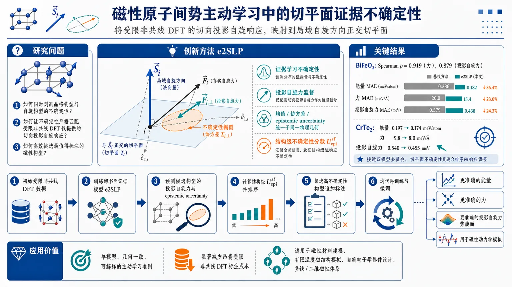
研究问题如何在磁性原子间势的主动学习中，同时刻画晶格构型与自旋构型的不确定性，并让不确定性严格匹配受限非共线 DFT 只提供的“切向投影自旋响应”，从而高效挑选最值得标注的构型。创新方法提出 e2SLP：把证据学习的不确定性从三维自旋向量改写到局域自旋方向正交的二维切平面；用投影自旋力作为监督目标，把均值、协方差和 epistemic uncertainty 都限制在同一物理几何中；再用结构级不确定性分数 Uₑₚᵢ^sf 对磁性位点做平均排序，直接驱动主动学习选样。Aha 点是：不是给三维自旋力硬算不确定性，而是先把目标投影到物理上真正存在的切平面，再在这个平面里做证据回归。工作流程初始受限非共线 DFT 数据 → 训练切平面证据模型 e2SLP → 用模型对 SLD 生成的候选磁性构型预测投影自旋力及其 epistemic uncertainty → 计算结构级 Uₑₚᵢ^sf，筛出高不确定性构型 → 追加 DFT 标注 → 迭代再训练与微调 → 输出更准确的能量、力和投影自旋力势能面，并用于后续磁性动力学模拟。关键结果在 BiFeO3 中，Uₑₚᵢ^sf 与真实误差高度相关，Spearman 相关系数分别达到 0.919（力）和 0.879（投影自旋力）；主动学习将能量 MAE 从 0.286 降到 0.182 meV/atom，力 MAE 从 20.0 降到 15.4 meV/Å，投影自旋力 MAE 从 0.579 降到 0.438 meV。CrTe2 上，能量 MAE 从 0.197 降到 0.174 meV/atom，力 MAE 从 9.8 降到 8.0 meV/Å，投影自旋力 MAE 从 0.540 降到 0.455 meV；最终精度接近四模型委员会，且切平面不确定性比传统力不确定性更适合排序磁响应误差。应用价值为磁性 MLIP 提供一种单模型、几何一致、可解释的主动学习准则，能显著减少昂贵的受限非共线 DFT 标注成本；适用于磁性材料的数据高效建模、有限温度磁结构模拟、自旋电子学器件设计，以及需要同时处理晶格-自旋耦合的多铁/二维磁性体系。第一部分：核心概览（Overview）
这篇论文把 e2IP 的证据学习框架从非磁性力场扩展到磁性自旋-晶格势，关键创新是把不确定性严格定义在自旋力的切平面而不是三维空间，从而与受限非共线 DFT 的物理标签一致。由此得到的 结构级不确定性分数 能有效排序高误差构型，并在 BiFeO3 与 CrTe2 上同时降低能量、力和投影自旋力误差。相较近年的磁性 MLIP 与主动学习工作，这项工作把“单模型、不确定性可解释、几何一致”的三件事真正合并到一个可用流程里。
---
第二部分：结构化快速回顾
《Tangent-Plane Evidential Uncertainty in Active Learning for Magnetic Interatomic Potentials》（None，）
- 背景：磁性 MLIP 需要同时覆盖晶格和自旋自由度，而受限非共线 DFT 标签昂贵；现有主动学习多依赖委员会、外推等级或非磁性几何。
- 方法：构建 e2SLP，把证据学习的不确定性放到局域自旋方向正交的切平面，并用结构级 (Uₑₚᵢsf) 选样。
- 结果：在 BiFeO3 和 CrTe2 上，(Uₑₚᵢsf) 与真实误差强相关，主动学习优于随机采样；CrTe2 上接近四模型委员会。
- 讨论：性能提升来自两部分：不确定性驱动选样 与 e2SLP 训练/微调路径 本身。
- 局限：仅两套基准体系、单一候选生成策略（SLD）、单一结构级选择分数，且未直接比较三维自旋力似然。
- 结论：切平面证据不确定性是磁性 MLIP 数据高效构建的实用单模型准则。
---
第三部分：逐章节冷凝解析
I Introduction
磁性 MLIP 的核心瓶颈是标签成本与自旋空间覆盖
- 磁性材料对信息存储、自旋电子学、磁光器件和有限温度模拟都重要，且许多体系必须显式处理磁自由度。关键表述是：*"reliable simulation requires explicit magnetic degrees of freedom rather than an effective nonmagnetic approximation"*。
- 磁性 MLIP（如 SpinGNN、mMTP、mMACE）开始显式引入局域磁矩或自旋，但训练集必须同时覆盖结构构型空间与自旋构型空间。
- 关键代价来自受限非共线 DFT 标签：*"reference labels often require expensive constrained noncollinear density-functional-theory calculations"*。
- 由此引出主动学习作为数据构建加速器：*"This data-construction bottleneck has motivated active-learning strategies for interatomic potentials"*。
现有主动学习工具对磁性自旋响应并不完全匹配
- 传统主动学习包括 extrapolation grades、committee/variance、descriptor diversity、混合 acquisition rules。
- 这些方法在磁性 MLIP 中可用，但未针对这里的投影磁响应目标建模：*"Practical indicators such as extrapolation grades can be effective, but they are not formulated as uncertainty models for the projected magnetic-response targets considered here."*
- 委员会方法成本高：*"Committee-based criteria require training multiple models and therefore add substantial cost to iterative SOC-aware active-learning loops"*。
e2IP 提供了直接可借鉴的单模型证据框架，但三维形式不适用于投影自旋力
- e2IP 是单模型不确定性框架，可输出力的协变 3×3 SPD covariance tensor，并用 Normal–Inverse–Wishart 先验分离 epistemic 与 aleatoric uncertainty。
- 它的优势是只需单次前向传播：*"uncertainty can be obtained from a single forward pass rather than from an ensemble"*。
- 但磁性自旋力并非任意三维向量，而是切平面中的投影自旋力：*"the learned spin-response target is not a fully unconstrained three-dimensional vector but the projected spin-force target fₛ,ₚₑᵣₚ in the tangent plane orthogonal to the local spin direction"*。
- 三维不确定性会产生无物理目标的径向分量：*"a three-dimensional uncertainty model would introduce an uncertainty component without a corresponding physical target"*。
e2SLP 的定位是“几何一致”的磁性证据学习
- e2SLP 被定义为 SOC-aware 的磁性 MLIP 版本，核心在于把似然、预测矩与 epistemic uncertainty 都放入二维切平面：*"the likelihood, predictive moments, and epistemic uncertainty of projected spin forces are formulated in the two-dimensional tangent plane"*。
- 结构级不确定性分数来自磁性位点平均的 epistemic trace：*"The resulting magnetic-site-averaged epistemic trace defines a structure-level projected-spin-force uncertainty score"*。
- 两个基准体系：bulk BiFeO3 与 monolayer CrTe2。
- 总体发现：该分数与误差强相关，并降低能量、力、投影自旋力误差。
---
II Method
方法总体是“候选生成—不确定性打分—DFT 标注—再训练”的主动学习闭环
- 起点是初始的受限 DFT 标注数据集。
- 候选构型由spin-lattice dynamics (SLD) 生成。
- 模型计算结构级不确定性分数 (Uₑₚᵢsf)，选择高不确定性构型做额外第一性原理标注。
- 关键流程：*"selects configurations with large projected-spin-force uncertainty for additional first-principles labeling"*。
II.1 SpinGNN++-inspired magnetic backbone
- 主干采用 SpinGNN++ 思路，包含 MSENN 与 TENN 两条通道。
- 总能量分解为：*"Eₜₒₜ=Eₛₜᵣᵤcₜ+E_J+Eₐₙᵢ+Ebᵢqᵤₐd+ESOC"*。
- 五部分分别对应结构相互作用、交换耦合、磁各向异性、双二次项和 SOC 项。
- 所有响应量都来自同一个自旋-晶格能量面：*"The model is trained on a single spin–lattice energy surface, from which all response observables are derived."*
II.2 Energy-derived forces and projected spin forces
- 原子力定义为对坐标的负梯度。
- 自旋力相关量定义为对局域自旋方向单位矢量的导数，而不是磁矩大小：*"the spin coordinate used in the derivative is the dimensionless direction hatsᵢ of the local magnetic moment, not the magnetic-moment magnitude"*。
- 原始自旋力：*" fₛ,ᵢ=-partial E/partialhatsᵢ "*，量纲为能量。
- 物理相关目标是投影自旋力：*" fₛ,ₚₑᵣₚ=Pfₛ,qquadP=I-hatshats→p "*。
- 投影去掉了平行于自旋方向的径向分量，只保留切向分量。
- 监督标签来自带 SOC 的受限非共线 DFT，且约束场是横向的：*"The resulting constraining field is transverse to the prescribed local spin direction"*。
- 这里的切平面建模不是经验选择，而是物理一致性要求：*"we therefore treat the tangent-plane formulation as a consistency requirement imposed by the constrained-spin target"*。
II.3 e2SLP formulation for magnetic spin-force uncertainty
- 采用与 e2IP 相同的证据回归框架：高斯似然 + NIW 先验。
- 关键公式：(p(yᵢ|bmμᵢ,bmΣᵢ₎₌N(yᵢ|bmμᵢ,bmΣᵢ₎)；(bmΣᵢsimW⁻¹(bmΨᵢ,νᵢ₎)，(bmμᵢ|bmΣᵢsim N(bmγᵢ,bmΣᵢ/κᵢ₎)。
- 用 scale 参数化：(bmΨᵢ₌νᵢbmΣ₀,ᵢ)。
- 边缘化后得到多元 Student-t；不确定性分解为：
- aleatoric：(Uₐₗₑ=νᵢbmΣ₀,ᵢ/(νᵢ₋d-1))
- epistemic：(Uₑₚᵢ=νᵢbmΣ₀,ᵢ/[κᵢ₍νᵢ₋d-1)])
- 协方差通过矩阵指数映射为 SPD：*" bmΣ₀,ᵢ=exp(Sᵢ) "*。
- 然后投影到切空间：*" bmΣ₀,ᵢ,ₚₑᵣₚ=PᵢbmΣ₀,ᵢPᵢ "*。
- 再投到二维切平面基底：*" bmΣ²d₀,ᵢ=Eᵢ→pbmΣ₀,ᵢ,ₚₑᵣₚEᵢ "*。
- 这保证不确定性只对应横向响应：*"so that the predicted uncertainty corresponds only to the transverse response supplied by constrained-moment DFT"*。
II.4 Tangent-plane-consistent uncertainty geometry and training objective
- 切平面基底 (EᵢᵢₙR³× ²) 用 Gram–Schmidt 相对固定笛卡尔轴构造。
- 该基底在平面内旋转不变：*"the resulting negative log-likelihood and the trace-based uncertainty score are invariant under in-plane rotations of this basis"*。
- 目标、均值、协方差都投影到二维：*" yᵢ,₂d=Eᵢ→pyᵢ,qquadbmγᵢ,₂d=Eᵢ→pbmγᵢ"*。
- 均值并非独立 head，而是能量梯度：*"The predictive mean bmγᵢ is not an independent vector head: it is identified with the projected energy gradient"*。
- 证据分支只参数化不确定性张量和 evidence 参数，使所有响应量绑定到单一能量面。
- 这里使用 d=2 而非 d=3，并通过 softplus 约束 (νᵢ) 与 (κᵢ) 有效。
- 损失为二维 Student-t NLL，外加误差加权 regularizer，用于抑制低拟合样本上的过度自信：*"an additional error-weighted evidence regularizer ... to discourage overconfident predictions on poorly fitted samples"*。
II.5 Structure-level uncertainty score for active learning
- 节点级 epistemic uncertainty：*" Uₑₚᵢ,ᵢsf,²d=fracνᵢbmΣ²d₀,ᵢκᵢ(νᵢ-d-1) "*。
- 结构级分数定义为磁性位点平均的 trace：*"Uₑₚᵢsf(C)=frac1|Cₘₐg|sumᵢᵢₙCₘₐgtr(Uₑₚᵢ,ᵢsf,²d)"*。
- 非磁性原子被排除，因为它们没有局域自旋方向，也就没有切平面。
- 选样规则：选择 (Uₑₚᵢsf) 更大的构型进入 DFT 标注池。
- 评估协议分成两条：
- e2SLP active-learning branch：用 evidential 模型做选样与训练；
- conventional output-head model：用于最终精度评估。
- 在 BiFeO3 最后一轮、CrTe2 每一轮都采用 fine-tuning 路线；CrTe2 还做了随机/选样、e2SLP 训练/微调的四种比较。
---
III Results and Discussion
#### III.1 Correlation between (Uₑₚᵢsf) and prediction error
结构级切平面不确定性与真实误差高度一致
- 在 BiFeO3 上，(Uₑₚᵢsf) 与力误差和投影自旋力误差的 Spearman 相关系数分别为 0.919 和 0.879。
- 在 CrTe2 上，对应相关系数为 0.857（force RMSE）和 0.848（projected spin-force RMSE）。
- 这表明高分数构型通常对应更大误差：*"configurations assigned larger (Uₑₚᵢsf) generally have larger prediction errors"*。
与传统力不确定性分数相比，切平面分数更适合磁响应排序
- 作为控制，定义了力分支的不确定性 (Uₑₚᵢf)，来自原始 e2IP。
- (Uₑₚᵢf) 与力 RMSE 的相关更高：BiFeO3 为 0.969，CrTe2 为 0.930。
- 但它与投影自旋力 RMSE 的相关低于 (Uₑₚᵢsf)：BiFeO3 为 0.786，CrTe2 为 0.772。
- 结论很明确：力不确定性能很好地排序力误差，但磁性任务更需要针对投影自旋力定义的不确定性。
#### III.2 Active learning performance on bulk BiFeO3
BiFeO3 上的主动学习明显优于随机采样
- 体系是室温 multiferroic，存在耦合晶格与 G-type antiferromagnetic 自由度。
- 初始共享数据集 1000 个构型，随后两轮各加 500 个。
- 最终训练集 2000 个构型，测试集 878 个构型。
- 相比随机采样，e2SLP 主动学习将误差降到：
- 能量 MAE：0.286 → 0.182 meV/atom
- 力 MAE：20.0 → 15.4 meV/Å
- 投影自旋力 MAE：0.579 → 0.438 meV
- 这些结果汇总在 Table 1。
训练得到的势能还能再现实温磁序衰减
- 用训练好的势能做 1280-atom BiFeO3 超胞 SLD，从 1001 K 冷却到 1 K。
- G-type antiferromagnetic order parameter 的塌缩被捕捉到，作为动力学一致性检查。
- 关键信息是：*"the collapse of the G-type antiferromagnetic order parameter provides a qualitative dynamical consistency check"*。
#### III.3 Active learning performance on monolayer CrTe2
CrTe2 上 e2SLP 也优于随机，并接近四模型委员会
- 体系是二维磁性体系，具有强自旋-晶格耦合。
- 比较的训练集规模为 1000、2000、2500、3000。
- 最终测试集为 810 个构型。
- 最终数据规模下，e2SLP 主动学习相较随机采样：
- 能量 MAE：0.197 → 0.174 meV/atom
- 力 MAE：9.8 → 8.0 meV/Å
- 投影自旋力 MAE：0.540 → 0.455 meV
- 初始 1000 构型时，e2SLP 主动学习分支的能量 MAE 已低于同数据训练的常规模型：0.527 vs 0.937 meV/atom。
与四模型委员会相比，单模型方法达到竞争性精度
- 随着数据增加，委员会从随机采样中提升到 0.179 meV/atom，e2SLP 达到 0.174 meV/atom。
- 这意味着单模型切平面证据分数在最终精度上可与四模型 disagreement 方案竞争。
四种设定的消融区分了“选样”与“训练路径”的贡献
- 消融从 500 构型初始集开始，每轮加 100 构型。
- 独立测试集为 500 构型。
- 三种核心比较：
- 随机选样 + 常规训练
- 随机选样 + e2SLP 训练后 fine-tuning
- (Uₑₚᵢsf) 选样 + e2SLP 训练后 fine-tuning
- 用 4 个随机种子 报告均值和标准差。
- 这个设计直接拆分出两类增益：不确定性选样的增益，以及 e2SLP 训练/微调路径本身的增益。
#### III.4 Discussion
性能提升来自两个来源，而不是单一因素
- 来源一是配置选择：相关性测试说明 (Uₑₚᵢsf) 能给构型按误差排序；用于选样后，最终误差降低。
- 来源二是模型与训练路径：e2SLP 训练 + fine-tuning 本身就改善了随机选样下的结果。
- CrTe2 的控制实验直接显示：*"random selection, e2SLP training followed by fine-tuning improves over random selection with non-evidential training"*。
- 初始 1000 构型阶段就出现更低误差，说明训练/微调路径在没有新选样差异时也有帮助。
- 没有直接比较三维自旋力似然，因为受限标签本身只定义横向响应：*"A direct comparison with a three-dimensional spin-force likelihood is not included"*。
局限被明确限定在实验范围内
- 仅测试 两个基准体系。
- 仅采用 一种 SLD 候选生成方案。
- 仅使用 一种结构级选择分数。
- 后续应测试更多磁序、不同耦合机制、替代选择规则和更长时程的下游模拟。
#### IV Conclusion
结论聚焦于“切平面证据不确定性”作为磁性主动学习的实用工具
- e2SLP 被定义为受 e2IP 启发、围绕切平面投影自旋力构建的不确定性感知磁性势。
- 关键结果是：*"By formulating the evidential uncertainty model in the tangent plane of the projected spin-force target, e2SLP provides a structure-level uncertainty score for magnetic-configuration selection"*。
- 在 BiFeO3 与 CrTe2 上，(Uₑₚᵢsf) 与误差相关并改善主动学习性能。
- CrTe2 控制表明，精度提升来自选样和训练/微调路径两方面。
- 结论直接支持切平面证据不确定性用于数据高效磁性 MLIP 构建。
---
第四部分：深度理解与语言支持
1) 关键术语解析
Tangent plane
- 这里不是普通几何概念，而是单位自旋球面上某一点的局域二维切空间。
- 微妙差别：三维向量里有径向和切向分量；受限自旋标签只对应切向分量，所以不确定性也必须只定义在切平面。
Projected spin force
- 不是“自旋力”的原始三维形式，而是对局域自旋方向正交的物理有效分量。
- 与普通 force 不同，它是由对方向单位矢量求导得到的，量纲也可表现为能量。
Epistemic uncertainty
- 指模型由于知识不足/训练数据不足带来的不确定性，可通过增加数据降低。
- 与 aleatoric uncertainty 不同，后者来自观测噪声或标签本身的不可约波动。
Normal–Inverse–Wishart prior
- 这是多元高斯均值与协方差的共轭先验。
- 在这里的作用不是贝叶斯装饰，而是把“预测值”和“预测不确定性”统一编码成一个证据回归框架。
Structure-level uncertainty score
- 不是单个原子点的不确定性，而是把磁性位点上的局域不确定性汇聚成构型级标量。
- 这一步非常关键，因为主动学习选的是“结构”，不是单个原子。
2) 疑难查证：为什么三维不确定性不合适？
核心问题是：受限非共线 DFT 给出的标签不是完整三维自旋力，而是在固定自旋长度约束下的横向响应。
如果硬套三维 covariance，模型会在“径向方向”也分配不确定性，但这个方向根本没有对应监督信号，也没有物理目标。结果会出现两类错误：
- 统计上多算自由度：模型能把不确定性塞到不存在的维度里，看似更“保守”，实际失去排序意义。
- 物理上不一致：主动学习可能优先挑选在径向分量上“虚高不确定”的构型，但这些构型对真实标签并不重要。
所以这里的关键不是“把维度降到 2”，而是把不确定性的定义域改成与标签一致的切空间几何。这也是整篇工作的理论支点。
---
第五部分：创新评估与关联
1) 创新性判断
相较过去 2–5 年相关工作，这篇论文的新颖性主要在三点：
第一，磁性主动学习的不确定性几何被真正改写了。
既有 e2IP 处理的是普通力矢量；磁性 MLIP 常见方法要么用委员会，要么把磁响应粗略当成三维量。这里把 projected spin-force 放进切平面，并让 epistemic uncertainty 也在同一几何中定义，解决了“标签是二维横向响应、模型却按三维处理”的结构性错配。
第二，单模型替代委员会，且与物理约束匹配。
过去磁性主动学习常依赖多模型 disagreement，成本高。这里的 e2SLP 用一次前向传播给出结构级不确定性分数，避免训练多个模型，同时保留可解释的协方差结构。
第三，不只是提出分数，还做了“选样 vs 训练路径”的消融。
很多主动学习工作只展示最终误差下降，却难以区分收益来自选样还是模型训练。这里在 CrTe2 上用四种设置拆分贡献，明确显示不确定性选样与 e2SLP 训练/微调 都有独立增益。
2) 解决了前人没彻底解决的问题
- 受限自旋标签与不确定性模型不匹配：过去很少严格处理“只存在切向响应”的几何约束。
- 磁性 MLIP 的高成本委员会选样：这里提供了单模型替代方案。
- 磁响应错误排序问题：不仅预测力误差，还能更好排序投影自旋力误差。
- 主动学习收益归因不清：通过 ablation 说明结果不是单一因素导致。
如果需要，我可以继续把这篇论文整理成：
- 一页式审稿笔记，
- 方法公式推导图解版，或
- 适合汇报答辩的 PPT 结构提纲。
-
02
📊 含图深析
📄 摘要：镁基体系中用 DFTB+MACE 混合势替代传统 DFTB 的两体排斥项，MACE 只学习 DFT 与 DFTB 之间的能量、力差。模型用于 MgO-CO2 吸附体系结构弛豫，展示了把紧束缚与多体 ML 势结合的可行性。
📖 英文原文
arXiv:2606.25853v2 Announce Type: replace Abstract: We present a model for magnesium-based systems that combines density functional tight binding (DFTB) with MACE, a machine learning interatomic potential (DFTB+MACE). In this model, the conventional repulsive potential, pair potential, is replaced by a many-body MACE potential. The MACE component of the model is trained on the difference between density functional theory (DFT) energies and forces and the corresponding DFTB values, but neglecting the pair potential contribution. Using this model we performed structural relaxation of MgO-CO2 adsorption systems, molecular dynamics calculations of water clusters and phonon spectrum calculations of stable fcc-MgO and metastable bcc-MgO structures. We compare the performance of our model with a pure MACE model and with DFT. We demonstrate that the DFTB+MACE model achieves improved accuracy relative to DFTB with a pair potential, in many cases with only a moderate increase in computational cost. In addition, it can provide electronic structures that most of the machine learning potentials cannot. The training dataset, originally developed for MACE, may not fully represent all regions of the potential surface we may encounter during simulations. Expanding the dataset for a wider potential surface is expected to further enhance predictive accuracy of DFTB+MACE model. Overall, the resulting DFTB+MACE framework enables simulations at length and time scales beyond the reach of first-principles methods while retaining an explicit description of electronic structures, making it particularly attractive for studying charge-transfer in materials.
💡 亮点：这篇工作把 DFTB 的经验排斥项换成 MACE 多体势，训练目标是 DFT 与 DFTB 之间的能量、力残差，从而构成 DFTB+MACE 混合模型。作者把它用于镁基体系的结构弛豫与 MgO-CO2 吸附问题，证明紧束缚先验能和通用 ML 势互补，适合做轻量级高精度模拟。
📖 展开分析 + 配图
 研究问题如何在保持DFTB显式电子结构、电荷转移和高计算效率的前提下，突破传统两体排斥势的环境不可迁移性，使镁化合物体系同时准确描述体相、表面、声子与吸附等多种复杂构型？创新方法提出DFTB+MACE混合框架：保留DFTB作为电子结构底座，用MACE多体等变网络替代传统两体排斥势，直接学习DFT与DFTB之间的残差；核心Aha点是把“学完整能量”改成“只修正DFTB误差”，既保留电子信息，又让机器学习只处理真正难学的多体环境效应。工作流程输入DFT参考结构与标签；先由DFTB计算band energy、charge term和电子项；再用MACE对DFT−DFTB的能量、力和应力残差进行学习；训练中通过超参数扫描确定多体阶数、通道数和交互层数；预测时输出DFTB电子结果加上MACE残差修正，得到最终能量、力、应力及派生性质如晶格常数、声子谱、表面能和吸附能。关键结果在15,396个结构和419组超参数测试中，DFTB+MACE在简单模型下力误差优于纯MACE，达到275.9 meV/Å对338.5 meV/Å；在中等复杂度下与纯MACE接近，复杂模型中仍能显著改善传统DFTB的体相曲线、声子和表面性质；对MgO表面与CO2吸附也能给出更合理的结构响应，但吸附能仍存在约1 eV级系统偏差，说明底座DFTB误差仍限制上限。应用价值为MgO、Mg(OH)2等周期含电子效应材料提供了一种兼顾可解释性与高效率的建模路线，可用于大尺度分子动力学、表面反应、吸附过程和晶格动力学模拟；尤其适合需要同时追踪电荷转移、表面稳定性和多体环境效应的材料设计与机理研究。
研究问题如何在保持DFTB显式电子结构、电荷转移和高计算效率的前提下，突破传统两体排斥势的环境不可迁移性，使镁化合物体系同时准确描述体相、表面、声子与吸附等多种复杂构型？创新方法提出DFTB+MACE混合框架：保留DFTB作为电子结构底座，用MACE多体等变网络替代传统两体排斥势，直接学习DFT与DFTB之间的残差；核心Aha点是把“学完整能量”改成“只修正DFTB误差”，既保留电子信息，又让机器学习只处理真正难学的多体环境效应。工作流程输入DFT参考结构与标签；先由DFTB计算band energy、charge term和电子项；再用MACE对DFT−DFTB的能量、力和应力残差进行学习；训练中通过超参数扫描确定多体阶数、通道数和交互层数；预测时输出DFTB电子结果加上MACE残差修正，得到最终能量、力、应力及派生性质如晶格常数、声子谱、表面能和吸附能。关键结果在15,396个结构和419组超参数测试中，DFTB+MACE在简单模型下力误差优于纯MACE，达到275.9 meV/Å对338.5 meV/Å；在中等复杂度下与纯MACE接近，复杂模型中仍能显著改善传统DFTB的体相曲线、声子和表面性质；对MgO表面与CO2吸附也能给出更合理的结构响应，但吸附能仍存在约1 eV级系统偏差，说明底座DFTB误差仍限制上限。应用价值为MgO、Mg(OH)2等周期含电子效应材料提供了一种兼顾可解释性与高效率的建模路线，可用于大尺度分子动力学、表面反应、吸附过程和晶格动力学模拟；尤其适合需要同时追踪电荷转移、表面稳定性和多体环境效应的材料设计与机理研究。第一部分：核心概览
这篇工作把DFTB 的电子结构骨架与 MACE 多体机器学习势耦合，用残差学习替代传统两体排斥势，在 MgO / Mg(OH)2 体系上同时处理能量、力、应力、表面、声子和吸附问题。核心贡献不只是精度提升，更在于保留了 DFTB 的显式电子结构与电荷转移描述，把 MLIP 常见的“只给原子势、不返电子信息”的短板补上。对周期材料的验证显示，这一路线在中等复杂度下可显著优于传统 DFTB，并在部分任务上接近 DFT，同时维持可用于大尺度模拟的效率。
---
第二部分：结构化快速回顾
《A Combined Tight Binding with Machine Learning Potential Model for Magnesium Compounds》（None，）
背景：传统 DFTB 的排斥项多为两体样条势，在不同配位环境下可迁移性差，难以同时描述体相、表面和吸附。
方法：用 MACE 替换 DFTB 的 pair potential，对 DFT − DFTB 的差值进行学习；DFTB 负责电子项，MACE 负责多体残差。
结果：在 15,396 个结构、419 组超参数测试中，DFTB+MACE 在简单模型下力误差优于纯 MACE，且在静态结构、声子、表面上普遍改善 DFTB。
讨论：当 MACE 复杂度升高，DFTB 电子项的系统误差开始限制上限；训练集覆盖范围决定外推稳定性。
局限：训练集未显式覆盖所有晶格常数、表面周期结构与吸附构型；未加 NAC；吸附结果仍有明显偏差。
结论：DFTB+MACE 是面向周期含电子效应材料的高效混合框架，兼顾长时空尺度与电子结构可解释性。
---
第三部分：逐章节冷凝解析
1. Introduction
DFTB 作为大尺度电子结构方法的定位
DFTB 是从 DFT 泰勒展开得到的近似量子方法，兼具电子结构与高效率，适合大体系静态和动力学模拟。原文表述为 *"It can provide approximate electronic structures as it is a quantum mechanical method, while calculations are significantly more computationally efficient than DFT"*。这里的关键点是：它不是经典势，而是能输出电子层面的信息，因此特别适合涉及电荷转移的问题。
既有 Mg 参数化工作的延续
前期工作已经建立了镁基化合物的 DFTB 参数集，并用于研究 CO2/H2O 在 MgO 和 Mg(OH)2 表面吸附。对应表述为 *"we developed a DFTB parameter set for magnesium-based compounds and used it to study the adsorption of CO2 and H2O on MgO and Mg(OH)2 surfaces."* 这说明当前框架不是从零起步，而是在已有 DFTB 电子骨架上做机器学习增强。
传统排斥势的结构性缺陷
常规 DFTB 参数化中，原子轨道来自孤立原子并加约束势，DFT 与 DFTB 的差值被压入repulsive potential，通常是cubic spline 的两体函数。原文列出四个问题：*"(i) oscillations may arise in the fitted function, (ii) the form of the function is often too rigid, (iii) overfitting may occur, and (iv) the limited transferability restricts its applicability to only a subset of structures."*
这四点共同指向一个结论：两体排斥势太弱，不能同时适配不同配位环境、不同局域化学键和高维势能面。
“一把尺子量所有键”的失败
Kandy 等人的曲率约束样条工作进一步说明，排斥势不可能 *"one-fits-all"*。原文强调 *"they found that a pair potential cannot be 'one-fits-all' because it cannot simultaneously describe different coordination environments."*
这句话的核心含义是：同样的键长并不意味着同样的化学环境。只用键长定义能量，等于忽略局域结构差异。
MLIP 与 DFTB 结合的已有路线
已有 DFTB+ML 主要有两类：一类直接用 MLIP 拟合 DFTB 的误差；一类用 MLIP 替换排斥项。文中举例包括 SchNet、ChiMES、以及后来的 e3nn 类模型。
- SchNet 被用于有机分子结构改进。
- ChiMES 作为多体排斥势可系统改进，但参数数目随元素数和多项式阶数激增。原文说 *"the number of parameters grows rapidly with the number of elements and polynomial order"*，这意味着训练和收敛会更难。
- 近期 e3nn+DFTB 只覆盖大有机分子，尚未进入周期凝聚态。
本工作的缺口定义
真正的空白是：周期材料中，既要保留 DFTB 的显式电子结构，又要用等变多体势修正排斥项。原文直接给出目标：*“we develop a DFTB+MACE framework for periodic materials by combining the explicit electronic description of self-consistent DFTB with the flexibility of equivariant machine learning potentials.”*
这使得 MgO 与 Mg(OH)2 成为验证对象，因为它们同时包含离子-共价混合、表面重构和吸附电荷转移。
---
2. Theory and Computational Method
#### 2.1 DFTB theory
从 DFT 能量泰勒展开出发
DFTB 由参考电子密度 (n⁽⁰⁾(ěc r)) 附近的展开构成，能量写成 (E⁽⁰⁾ + E⁽¹⁾ + E⁽²⁾ + ḑots)。原文给出 *"The total energy of DFTB can be derived from a Taylor expansion of the DFT total energy around a chosen reference density"*。
这意味着 DFTB 不是经验拟合，而是有明确的 DFT 近似层级。
三项能量的物理含义
- (E⁽⁰⁾)：孤立原子能、原子间静电吸引/排斥、以及多体交换-相关项。
- (E⁽¹⁾)：band energy 减去 atomic term。原文写成 *"E(1) contains the band energy and an atomic term."*
- (E⁽²⁾)：电荷扰动导致的库仑相互作用，涉及 charge density moments 与 Madelung structure constant。原文称其为 *"electrostatic interactions between perturbed atoms."*
标准 DFTB 中 pair potential 的根本问题
通常 (E⁽⁰⁾) 中的交换-相关多体项会被忽略，于是它退化成短程两体排斥势。原文明确指出 *"this simplification does not consider the chemical environment of a bond."*
关键例子是乙烷与乙烯：同样的 C–C 键长，因化学环境不同，(E⁽⁰⁾) 却不应相同。这个例子直指两体势的环境不可辨识问题。
用 MACE 替换 (E⁽⁰⁾) 的残差学习公式
核心改写是：
- (E⁽⁰⁾ = EDFT - (E⁽¹⁾+E⁽²⁾))
- (F⁽⁰⁾ = FDFT - (F⁽¹⁾+F⁽²⁾))
- (σ⁽⁰⁾ = σDFT - (σ⁽¹⁾+σ⁽²⁾))
原文表述为 *"the contribution to the total energy, E(0), forces F(0) and stresses σ(0) carried by the MACE potential are then given by..."*。
这是一种标准的 Δ-learning，但学习对象不是整套 DFT，而是 DFT 与 DFTB 之间的差。
为何这比直接学 DFT 更稳
DFTB 已经提供了电子结构先验，因此 MACE 只需学习模型误差而非全部物理。这样的分解减轻了神经网络负担，也保留了可解释的电子项。换句话说，MACE 不是替代 DFTB，而是修正 DFTB。
#### 2.2 MACE
MACE 的核心结构：ACE 描述符 + E(3)-等变消息传递
原文定义为 *"MACE combines the ACE descriptor with an E(3)-equivariant message passing neural network (E(3)-MPNN)."*
这里的关键不是“神经网络”，而是E(3)-equivariance：旋转、平移、反演下输出按规则变换，保证物理对称性。
三阶段结构：embedding、interaction、product
MACE 包括三个阶段：
- embedding：从原子序数初始化节点特征，并构造球谐函数和径向基。
- interaction：通过张量积把节点特征与球谐耦合，形成消息。
- product：进一步构造更高阶的 cluster basis，实现多体关联。
原文分别写到 *"There are three main stages in MACE, which are embedding, interaction and product."* 与 *"the descriptor in MACE enables the model to capture many-body interactions in the first layer."*
后一句尤为重要：传统 E3NN 多靠层数逐步堆叠多体阶数，而 MACE 可在首层就形成多体信息。
超参数与物理控制量的对应关系
表 1 给出了五个关键超参数：
- k = num_channels
- T = numᵢₙₜₑᵣₐctions
- ν = correlation，对应最高 ((ν+1))-体相互作用
- L max = max_L，等变特征最高角动量阶
- l max = maxₑₗₗ，球谐函数最高角动量
这五个量分别控制：表示容量、消息传递深度、多体阶数、等变特征复杂度、角向分辨率。
能量—力一致性
原文强调 *"The forces are generated by direct differentiation of the energy rather than being generated from a multilayer perceptron to ensure consistency."*
这保证力是能量的梯度，避免能量和力各自独立拟合导致的不守恒问题。
#### 2.3 Calculation Details
DFTB 参数来自 PLATO，DFT 参考来自 PBE + PAW
原子轨道、跳跃积分、重叠积分和 Hubbard 参数由 PLATO 生成，交换相关函数采用 PBE，电子-离子相互作用用separable dual-space Gaussian pseudopotentials。原文写明 *"The PLATO package was used to generate atomic orbitals, the hopping and overlap integral tables and the Hubbard parameters."*
原子轨道半径的设定
原子轨道半径 (r₀) 设为共价半径的两倍：*“The radii of the atomic orbitals (r0) were set to twice an element’s covalent radius.”*
这属于影响基组局域性的关键设定，直接关系到 DFTB 的重叠与带宽。
训练数据的组成非常广
总数据量 15,396 structures，包括：
- MPtrj 中只含 Mg/C/O/H 的结构
- MatPES 中多元素结构（H, C, N, O, F, Mg, Al, Si, P, S, Cl, Cu, Br）
- 自生成的 fcc-MgO 和 bcc-MgO 随机扰动超胞
- CO2 和 H2O 吸附在 MgO 和 Mg(OH)2 团簇上的结构
这说明训练数据不是单一体相，而是涵盖体相、扰动结构、团簇、吸附。
参考能量与力全部重算
原文写明 *"the forces and energies were all recalculated with Quantum ESPRESSO using the PBE functional and projector augmented-wave (PAW) pseudopotentials."*
这意味着训练标签来自统一的 DFT 设置，避免多源参考带来的误差混杂。
超参数扫描与数据划分
测试了 419 组超参数组合。训练/验证拆分为：
- 13,861 configurations for training
- 1,535 configurations for validation
没有单独 test set，而是用后续的体相、表面、吸附、动力学任务作为外部测试。原文写成 *"The dataset was not explicitly divided into a separate test set."*
这是一种任务驱动型泛化评估。
分子动力学和声子设置
- MD 在 300 K、NVT 系综、temperature rescaling thermostat 下进行。
- 声子用有限差分法，超胞晶格常数大于 10 Å，三方向施加 ±0.01 Å 位移。
- 未加入 non-analytical correction (NAC)。
- 训练用 Quadro RTX6000 GPU，后续模拟在 Intel Core i5-12500 上进行且无 GPU 加速。
---
3. Results and Discussion
#### 3.1 Accuracy and complexity analysis
用受限 MACE 和 DFTB+MACE 做对照
为区分标准 MACE，文中把仅在有限训练集上训练的模型称为 restricted MACE，即 MACE_R。原文写 *"we refer to this model as the restricted MACE model (denoted as MACE_R)."*
对照设计清楚：一个是纯 MACE 学 DFT，一个是 DFTB+MACE 学残差。
419 组超参数扫描后，使用三类代表模型概括趋势
三类代表配置：
- simple：T=1, k=8, Lmax=0, ν=1, lmax=1
- moderate：T=2, k=32, Lmax=1, ν=2, lmax=2
- complex：T=4, k=64, Lmax=1, ν=3, lmax=3
这三组不是任意挑选，而是覆盖低容量、中容量、高容量三种典型 regime。
简单模型下，DFTB+MACE 明显优于 MACE_R
简单模型中，力 MAE：
- DFTB+MACE：275.9 meV/Å
- MACE_R：338.5 meV/Å
原文指出 *"a simple MACE contribution achieves better performance (MAE_F = 275.9 meV/Å) than the corresponding MACE_R model (MAE_F = 338.5 meV/Å)."*
这说明 DFTB 作为先验确实减轻了学习难度。
为何低阶 MACE 在 DFTB+MACE 中更有效
原文给出关键解释：*“atomic reference density is isotropic, which implies that l = 0 is sufficient to describe the repulsive term”*。
含义是：排斥项本质上更接近各向同性，所以低角动量特征已能覆盖主要结构。高阶 (l) 更多是在修正 DFTB 的系统偏差，而不是描述基础排斥。
复杂模型下，纯 MACE 反而追平甚至超过 DFTB+MACE
中等复杂模型：
- DFTB+MACE：82.0 meV/Å
- MACE_R：83.0 meV/Å
复杂模型：
- DFTB+MACE：66.7 meV/Å
- MACE_R：51.9 meV/Å
原文总结 *"for more complex hyperparameter settings, the MACE_R model performs comparably well or even slightly better than the DFTB+MACE model."*
原因不是纯 MACE 更“物理”，而是当模型足够强时，DFTB 自身的电子项误差开始限制总精度。
DFTB 电子项成为高复杂度下的瓶颈
文中指出 DFTB 的价带宽度偏小，且价带与更低价带之间的间隙偏大，原因是基组受限。原文说 *"the valence band width in DFTB is smaller than that of the DFT reference"*。
这说明 DFTB+MACE 不是无限上界：残差再强，也会被底座误差压住。
结构复杂度与计算代价的权衡
- (l) 越高，计算成本快速且非线性增长。
- (ν) 从两体到三体带来明显提升，再往上只剩边际收益。
- (T) 和 (k) 增大会让 MAE 近似指数下降。
原文写 *"The computational cost increases rapidly and non-linearly with increasing l"* 与 *"The MAE decreases approximately exponentially with increasing number of MPNN layers (T) and the number of channels (k)."*
这给出清晰的工程选择原则：高阶角向复杂度最贵，增加层数和通道相对更划算。
后续改进方向：更好的 DFTB 基座
提高准确性可通过：
- crystal field corrections
- three-centre integral corrections
- 扩展基组
这些都说明残差模型本身虽强，但 DFTB 底座仍可继续改善。
#### 3.2 Static Calculations
体相凝聚能曲线：晶格常数和体模量明显改善
对 fcc-MgO 和 bcc-MgO 的凝聚能-晶格常数曲线分析显示，DFTB+MACE 相比 DFTB 在平衡晶格常数和结合曲线形状上大幅改善。原文写 *"There is a large improvement in both the lattice constant and the shape of the binding energy curve compared with DFTB."*
这说明模型不只是拟合局部点，而是在势能曲线形状上更接近 DFT。
训练集覆盖范围决定外推可靠性
原文强调 *"where the training dataset covers the relevant atomic configurations, the behavior outside this data range is less certain."*
也就是说，曲线在训练覆盖区间内表现好，离开训练区域后就开始依赖外推能力。
fcc-MgO 与 bcc-MgO 的边界问题
在小晶格常数区：
- DFTB 的电子项变得更负，MACE 很难完全补偿
- DFTB+MACE 的梯度更接近 PBE-DFT，但并未完全解决
- 加入围绕平衡晶格随机扰动的数据后，问题仍未彻底消除
原文明确说 *"this issue was not fully resolved."*
这说明训练集必须包含晶格常数跨度，否则高温动力学中的压缩区行为会失真。
声子谱：DFTB+MACE 显著优于 DFTB
声子分析使用二阶导数信息，更敏感地检测局域刚度和动力学稳定性。
对于 fcc-MgO：
- DFTB+MACE 在声学支上优于 MACE_R
- 但高频区仍与 PBE-DFT 存在差距
- DFTB 表现出明显over-binding 和 over-stiffness
原文写 *"the gradient of the acoustic branch is much higher than for PBE-DFT"* 和 *"the optical frequencies are also much higher than found by PBE-DFT."*
这意味着 DFTB 把 Mg–O 键看得太硬、太紧。
bcc-MgO 的虚频与不稳定信号
bcc 结构中，Γ 点被正确预测为稳定，但光学支频率仍偏高，且 Mg 贡献到 imaginary part of the phonon PDoS。
原文写 *"Mg contributes to the imaginary part of the phonon PDoS."*
这说明模型能捕捉部分不稳定特征，但量化仍不够精确。
小模型下，DFTB+MACE 仍保持可用性
原文指出 *"if we choose a small model, the DFTB+MACE model will still perform at a relatively acceptable level."*
相反，若纯 MACE 丢失高阶 irreps，结果可能 *"catastrophic."*
这再次说明 DFTB 提供了稳健底座，而纯 MLIP 更依赖容量和数据覆盖。
表面能：传统 DFTB 的配位不一致问题被缓解
MgO (100)/(110) 表面能在传统 DFTB 中难以同时兼顾体相与表面，因为表面降低配位数会减少 pair potential 贡献。原文总结为 *"a fundamental limitation of environment-independent pair potentials in capturing both bulk and surface energies."*
DFTB+MACE 通过多体修正缓解了这一不一致。
表面训练数据并未包含真正的周期表面
训练集中没有表面周期结构，表面信息只来自 MgO clusters。原文明确说 *"there is no periodic system with a surface in the training set."*
因此这部分是较强的外推测试。
表面结果的方向性特征
- (100) 表面能：DFTB+MACE 高于 PBE-DFT
- (110) 表面能：DFTB+MACE 低于 PBE-DFT
- MACE_R 的两个表面能都 低于 PBE-DFT
- (110) 的实验值 1.04 J m⁻²，DFTB+MACE 结果偶然更接近实验
这说明 DFTB+MACE 改善了表面一致性，但并未做到无偏。
CO2 吸附：结构可，能量仍偏差明显
所有方法都能给出相对合理的吸附结构，但：
- MACE_R 给出两个正的吸附能预测
- DFTB+MACE 的吸附能比 PBE-DFT 更负约 1 eV
原文写 *"The MACE_R model gave two positive predictions for adsorption energies, and the predictions of the DFTB+MACE model are about 1 eV more negative than the PBE-DFT reference."*
这意味着结构优化层面较稳，但能量标定仍有系统偏差，尤其在训练未覆盖的吸附态区域。
---
第四部分：深度理解与语言支持
1. 关键术语解析
Pair potential
- 直译是“两体势”。
- 学术上指能量只依赖于原子对距离 (Rᵢⱼ)，不显式依赖第三个原子或环境。
- 细微差别：它并不等于“简单”，而是结构维度被压扁。在不同配位下，同一键长会产生不同能量，这正是它的短板。
Many-body potential
- 指能量依赖于多个原子协同构型，而不是单对距离。
- 在这里不是泛泛的“更复杂”，而是能编码局域化学环境与高阶角向信息。
- 与 pair potential 的差异，本质上是“看键”与“看环境”的区别。
E(3)-equivariant
- 指在三维欧氏变换群下满足等变性：旋转、平移、反演后，表示按规则同步变化。
- 微妙之处：equivariant 不等于 invariant。
- invariant：输出不变
- equivariant：输出按几何规则变换
- 这类设计让模型天然尊重物理对称性，减少无意义自由度。
Δ-learning
- 这里是“学差值”而不是“学绝对量”。
- 在 DFTB+MACE 中，学习的是 (EDFT-(E⁽¹⁾+E⁽²⁾)) 这类残差。
- 微妙点：它不是简单纠错，而是把困难问题拆成“可解释的物理底座 + 数据驱动修正”。
Transferability
- 直译“可迁移性”，在材料模拟中更接近“跨构型、跨配位、跨相态的稳健性”。
- 不是只在测试集上低误差，而是在未见区域仍不崩溃。
- 这篇工作里，表面、声子、吸附就是 transferability 的真实压力测试。
2. 疑难查证：几个容易混淆的概念
为什么 DFTB+MACE 不是简单地把 DFTB 和 MACE 相加？
表面上是相加，实质上是分工。DFTB 负责电子结构中相对稳定的基底部分，MACE 只学 DFT 与 DFTB 的差额。
这样做的好处是：
- 降低 MACE 需要学习的函数复杂度；
- 保留电子项、带结构、电荷重分布等信息；
- 在大规模动力学中仍能像 DFTB 一样输出电子相关量。
因此，它不是“两个模型拼接”，而是物理先验驱动的残差框架。
为什么高阶 (l) 不是越多越好？
(l) 对应角向分辨率。
- 低 (l)：描述各向同性和低阶角相关
- 高 (l)：捕捉更细的方向依赖
问题在于，排斥项本身已经接近各向同性，过高的 (l) 主要在修补 DFTB 误差，而不是提升基础物理表达。于是出现：
- 误差收益递减
- 计算成本急剧上升
- 甚至在数据覆盖不足时引入不稳定
这也是为什么文中强调简单模型下 DFTB+MACE 反而很强。
为什么表面和吸附比体相更难？
体相环境相对均一，训练集中更容易覆盖。
表面和吸附则同时引入：
- 低配位原子
- 局域极化
- 电荷重分布
- 未见化学环境
对 pair potential 来说，这类问题尤其致命，因为其假设“局域环境差不多就行”在这里失效。
对 MACE 来说，若训练集中只有团簇而没有真正周期表面，仍会发生外推误差，所以表面和吸附是最能暴露模型泛化边界的场景。
---
第五部分：创新评估与关联
1. 创新性判断
相对过去 2–5 年工作的新颖性主要在三点
第一，DFTB 与 MACE 的结合方式更“物理分层”
过去不少 DFTB+ML 工作直接把 ML 用于排斥项或误差修正，但往往仍以两体形式或低阶参数化为主。这里直接用 MACE 替换 pair potential，把排斥项升格为多体等变表示，并且用 DFTB 保留电子结构。这种分工比单纯“ML 拟合修正项”更系统。
第二，首次把该框架推进到周期凝聚态材料
近期 e3nn/DFTB 工作主要还停留在大有机分子。原文明确指出 *"their research does not cover periodic systems and has not been applied to condensed matter."*
这里把方法推进到 MgO / Mg(OH)2 这类周期性、离子性、表面敏感体系，难度显著更高。
第三，验证范围覆盖体相、声子、表面、吸附和动力学
不是只看单点能量误差，而是检查：
- 凝聚能曲线
- bulk modulus
- phonon spectrum
- surface energy
- CO2 adsorption
- MD 可用性
这使新颖性不只体现在“模型结构”，还体现在“验证维度”。
2. 解决了前人没解决的问题
解决了 DFTB 两体排斥势的环境不可迁移问题
这是最直接的问题。传统 pair potential 无法同时描述不同配位环境，尤其体相与表面、压缩与拉伸、团簇与周期体系。MACE 的多体表达补上了这一缺口。
解决了 MLIP 不能输出电子结构的问题
多数 MLIP 只给能量/力，不给电子态信息。DFTB+MACE 保留了 self-consistent DFTB 的显式电子描述，因此更适合研究电荷转移相关过程。
解决了周期材料中 DFTB+ML 的方法空白
过去 DFTB+ML 多用于分子。这里证明这种混合框架可以进入周期材料和表面问题，并且在一定条件下获得接近 DFT 的精度。
3. 仍未完全解决的新问题
外推区间依赖训练覆盖
晶格常数远离平衡值、真实表面周期结构、吸附位点组合等都可能超出训练分布，导致能量曲线和吸附能偏移。
DFTB 底座误差会限制上限
当 MACE 足够强时，瓶颈不再是 ML，而是 DFTB 的基组、三中心积分和电子项近似。
吸附能存在系统性偏移
结构预测尚可，但能量偏差仍可达约 1 eV 量级，说明最终化学精度仍需更广泛数据和更强底座。
---
如果需要，我可以继续把这篇论文整理成以下任一形式：
- 一页式论文笔记
- 审稿人视角优缺点表
- 公式逐条推导版
- 适合组会汇报的 PPT 提纲
-
03
📊 含图深析
📄 摘要：异构 DFT 数据中，不同泛函、截断、赝势和色散修正会带来几十到数百 meV/atom 的系统偏差；MatPES 中 PBE 与 r2SCAN 的同构结构平均相差 107 meV/atom。作者用图神经网络对形成能进行跨泛函对齐，缓解多源数据难以直接合并的问题。
📖 英文原文
arXiv:2607.24327v1 Announce Type: new Abstract: Heterogeneous density functional theory (DFT) calculations, particularly plane-wave implementations, introduce systematic formation energy errors ranging from tens to hundreds of meV/atom, depending on the selection of exchange-correlation functionals, kinetic energy cutoffs, pseudopotentials, and dispersion corrections. As demonstrated by the MatPES dataset, identical structures can exhibit an average energy discrepancy of 107 meV/atom between PBE and r2SCAN calculations. Such method-dependent discrepancies hinder the integration of multi-source DFT data, greatly limiting the scale and quality of datasets for training robust materials AI models. Here, we resolve this fundamental data silo barrier via graph-based transfer learning. Leveraging 380,190 structurally paired PBE-r2SCAN entries from the MatPES database, we train a structure-aware graph neural network to predict cross-functional energy residuals and align inconsistent DFT energy scales. By adopting GPTFF model architecture, the model converts conventional PBE energies to r2SCAN-level accuracy with a mean absolute error of 14.3 meV/atom, compared with 18.2 meV/atom achieved by CHGNet. This versatile approach effectively upgrades massive legacy PBE datasets to high-precision r2SCAN standards. It enables reliable predictions of phase stability, battery voltage profiles, and reaction thermodynamics, while allowing the integration of multi-source DFT data to advance the development of high-performance materials foundation models.
💡 亮点：作者直面多源 DFT 的“方法漂移”问题，把不同泛函、截断和赝势造成的形成能偏差显式建模为跨域对齐任务。MatPES 中 PBE 与 r2SCAN 的同结构平均差达到 107 meV/atom，说明简单拼接数据会严重污染训练集。GNN 对齐框架为大规模材料数据库融合和跨泛函基准统一提供了可操作路线。
📖 展开分析 + 配图
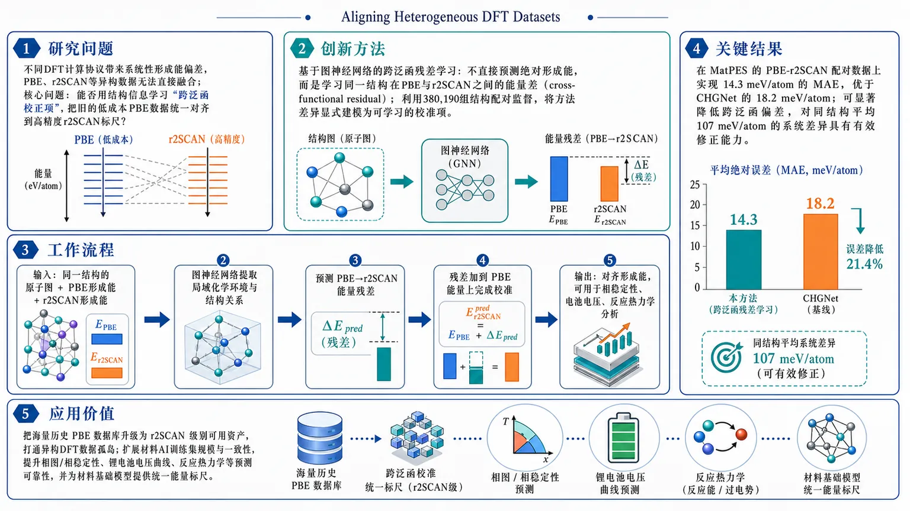
研究问题不同DFT计算协议带来的系统性形成能偏差，导致PBE、r2SCAN等异构数据无法直接融合；核心问题是：能否用结构信息学习“跨泛函校正项”，把旧的低成本PBE数据统一对齐到高精度r2SCAN标尺上？创新方法提出基于图神经网络的跨泛函残差学习：不直接预测绝对形成能，而是学习同一结构在PBE与r2SCAN之间的能量差（cross-functional residual）；利用380,190组结构配对监督，把方法差异显式建模为可学习的校准项，实现能量标尺对齐。工作流程输入同一结构在PBE与r2SCAN下的配对形成能及原子结构图；图神经网络提取局域化学环境与结构关系；模型预测PBE→r2SCAN的能量残差；将残差加到PBE能量上完成校准；输出与r2SCAN接近的对齐形成能，可用于下游相稳定性、电池电压和反应热力学分析。关键结果在MatPES的PBE-r2SCAN配对数据上实现14.3 meV/atom的MAE，优于CHGNet的18.2 meV/atom；说明模型能显著降低跨泛函偏差，把PBE能量校准到接近r2SCAN精度水平，且对同结构平均107 meV/atom的系统差异具有有效修正能力。应用价值把海量历史PBE数据库“升级”为r2SCAN级别可用资产，打通异构DFT数据孤岛；可扩展材料AI训练集规模与一致性，提升相图/相稳定性、锂电池电压曲线、反应热力学等关键预测的可靠性，并为材料基础模型提供统一能量标尺。第一部分：核心概览
这篇工作瞄准 heterogeneous DFT datasets 的“方法学不一致”难题，核心贡献是用 graph-based transfer learning 学习 cross-functional energy residuals，把大量 PBE 形成能系统性映射到 r2SCAN 标尺上。关键价值不只在于一个更准的回归模型，而在于打通了长期割裂的多源 DFT 数据，使旧式低成本数据可被高精度数据统一校准，从而显著扩展材料 AI 训练集的规模与一致性。
第二部分：结构化快速回顾
《Aligning Heterogeneous DFT Datasets: A Graph Neural Network Approach to Cross-Functional Formation Energies》（None，）
背景：不同 DFT 设置会造成形成能出现系统性偏差，尤其是交换相关泛函、平面波截断、赝势和色散修正不同导致的 tens to hundreds of meV/atom 级误差，阻碍多源数据融合。
方法：基于 MatPES 中 380,190 组结构配对的 PBE-r2SCAN 条目，训练一个 structure-aware graph neural network，学习跨泛函残差，并采用 GPTFF 架构进行能量对齐。
结果：将常规 PBE 能量转换到接近 r2SCAN 的精度，达到 14.3 meV/atom MAE，优于 CHGNet 的 18.2 meV/atom。
讨论：该框架相当于把大规模旧 PBE 数据“升级”为高精度 r2SCAN 标准，可用于相稳定性、电池电压和反应热力学预测。
局限：当前信息只显示了 PBE↔r2SCAN 的结构化配对与平面波 DFT 场景，泛化到其他泛函、不同计算协议和非配对数据的能力尚未明确。
结论：通过残差学习实现跨泛函能量标尺对齐，为整合异构 DFT 数据、构建更大规模材料基础模型提供了可行路径。
第三部分：逐章节冷凝解析
Abstract
问题定义：异构 DFT 数据的系统性失配
异构 DFT 数据的核心障碍不是随机噪声，而是方法依赖的系统偏差。摘要明确给出误差规模为 “tens to hundreds of meV/atom”，并点名误差来源包括 exchange-correlation functionals, kinetic energy cutoffs, pseudopotentials, and dispersion corrections。这类偏差直接导致不同来源数据无法直接拼接，形成严重的数据孤岛。
英文引述：*"Heterogeneous density functional theory (DFT) calculations... introduce systematic formation energy errors ranging from tens to hundreds of meV/atom"*；*"method-dependent discrepancies hinder the integration of multi-source DFT data"*。
关键经验事实：PBE 与 r2SCAN 的平均偏差极大
在 MatPES 数据集上，结构相同但计算方案不同的条目之间，PBE 与 r2SCAN 的平均能量差达到 107 meV/atom。这个数值足以改变相稳定排序、相图边界和电化学预测，因此不是可忽略的小误差，而是会系统扭曲材料发现流程的尺度偏差。
英文引述：*"identical structures can exhibit an average energy discrepancy of 107 meV/atom between PBE and r2SCAN calculations"*。
数据规模：用 380,190 组结构配对做跨泛函学习
训练集来自 MatPES 中 380,190 structurally paired PBE-r2SCAN entries。这里的关键不是单纯样本量大，而是存在结构配对，意味着同一结构在两种泛函下的能量差可以被直接监督学习为 residual。这使问题从“绝对能量预测”转化为“跨方法校准”，显著降低学习难度。
英文引述：*"Leveraging 380,190 structurally paired PBE-r2SCAN entries from the MatPES database"*。
方法核心：学习跨泛函残差并对齐能量标尺
模型不是直接拟合 r2SCAN 绝对形成能，而是训练一个 structure-aware graph neural network 去预测 cross-functional energy residuals，再据此 align inconsistent DFT energy scales。这种设定的优势在于把计算设置差异显式建模为可学习残差，而不是把它们隐藏在黑箱回归里。
英文引述：*"train a structure-aware graph neural network to predict cross-functional energy residuals and align inconsistent DFT energy scales"*。
架构选择：GPTFF 作为实现载体
摘要指出采用 GPTFF model architecture。在可见文本中，GPTFF 的具体层数、消息传递方式、参数量、损失函数并未展开，但其作用很明确：承载结构图表示并完成跨泛函校准。若要判断创新度，重点应放在“graph-based transfer learning 用于数据标尺对齐”而非单一网络名字。
英文引述：*"By adopting GPTFF model architecture"*。
性能结果：14.3 meV/atom 优于 CHGNet 的 18.2 meV/atom
最直接的定量结果是：模型把 PBE energies 转换到接近 r2SCAN-level accuracy，测试指标达到 14.3 meV/atom MAE；对照基线 CHGNet 为 18.2 meV/atom。差值为 3.9 meV/atom，相对误差降幅约 21.4%，说明跨泛函残差学习确实优于直接用通用图网络做能量回归。
英文引述：*"converts conventional PBE energies to r2SCAN-level accuracy with a mean absolute error of 14.3 meV/atom, compared with 18.2 meV/atom achieved by CHGNet"*。
应用外延：旧 PBE 数据可升级为高精度标准
摘要把方法定位为一种“数据升级器”而非单点模型：能够将 massive legacy PBE datasets 提升到 r2SCAN standards。这意味着训练集不再局限于最昂贵的高精度计算，而可把历史积累的数据纳入统一标尺，扩大材料 AI 的有效语料库。
英文引述：*"This versatile approach effectively upgrades massive legacy PBE datasets to high-precision r2SCAN standards"*。
下游价值：相稳定性、电压曲线与热力学反应
被直接点名的下游任务包括 phase stability, battery voltage profiles, reaction thermodynamics。这些任务都高度依赖形成能的细微差别，因此跨泛函对齐的意义不只是“平均误差更低”，而是减少下游物理判断的系统性偏移。
英文引述：*"It enables reliable predictions of phase stability, battery voltage profiles, and reaction thermodynamics"*。
更宏观的目标：打通多源 DFT，服务材料基础模型
最终目标落在材料基础模型训练：通过整合 multi-source DFT data 提升数据规模与质量，进而促进 high-performance materials foundation models。这类表述意味着该工作试图解决的是基础设施层面的瓶颈，而不只是提升一个 benchmark 分数。
英文引述：*"allowing the integration of multi-source DFT data to advance the development of high-performance materials foundation models"*。
第四部分：深度理解与语言支持
1. 术语解析
Heterogeneous DFT datasets
指由不同计算协议生成、彼此不完全一致的 DFT 数据集合。这里的“heterogeneous”不是简单地指数据来源多，而是指同一物理量在不同方法下存在系统标尺差异。
Cross-functional energy residuals
指不同泛函之间的能量差值或偏移量。学术上它的关键含义是：不去学绝对形成能，而去学“方法 A 到方法 B 的校正项”。这比直接预测绝对值更符合跨数据源对齐的任务性质。
Structure-aware graph neural network
强调模型输入不是表格特征，而是把原子结构编码成图。这里的“structure-aware”意味着模型显式利用原子邻接、局域环境和几何关系来预测能量残差。
Data silo barrier
指数据被不同方法、不同协议、不同来源割裂成孤岛，彼此难以整合。语境中它不是一般的数据管理问题，而是会直接限制材料模型的训练上限。
r2SCAN-level accuracy
表示预测误差已经接近或达到 r2SCAN 计算质量对应的水平。这里“level”更像基准标尺，而非严格的理论等价。它隐含的意思是：PBE 数据经校正后可在应用层面替代更高成本的 r2SCAN 数据。
2. 疑难查证：为什么“残差学习”比直接学形成能更合理？
高年级博士生视角下，这个问题可以拆成两层：
第一层：物理量分解
PBE 与 r2SCAN 对同一结构的形成能差异，往往包含可重复的系统项，例如对键长、电子局域化、磁性、分散相互作用的不同处理。若直接学习绝对形成能，模型必须同时吸收“结构—能量映射”和“方法偏差”两类难题。
第二层：监督信号更稳定
当每个结构都有配对的 PBE 与 r2SCAN 结果时，残差就是一个更窄分布、更可学习的目标。模型学到的不是“这个材料到底有多少 eV”，而是“在当前结构上，PBE 相对 r2SCAN 应该修正多少”。这在统计上通常更稳定，也更适合迁移到大规模旧数据上。
第三层：工程意义更强
大量历史数据库都以低成本泛函构建，若能学出可靠校正项，就能把“旧数据”重新纳入高精度体系。这种思路等价于建立一个跨计算协议的统一坐标系。
第五部分：创新评估与关联
1. 创新性判断
相较于近 2–5 年材料图网络与 DFT 代理模型工作，这篇工作的新颖点集中在三处：
从“预测材料性质”转向“对齐计算标尺”
过往不少 GNN 工作关注的是在单一标签体系内做高精度预测，例如直接预测形成能、带隙或力场。这里的核心任务变成了 cross-functional alignment，即把不同 DFT 泛函造成的系统偏移显式消除。这个问题更接近“数据基础设施”而不是“单模型回归”。
把大规模旧 PBE 数据变成可用的高精度资产
过去常见做法是直接丢弃低精度或不一致数据，或者只在单一计算协议内训练。这里把 legacy PBE datasets 通过残差校正升级到 r2SCAN standards，解决了材料领域长期存在的“高精度数据太少、低精度数据太杂”的结构性矛盾。
利用结构配对做监督，学习方法间映射而非纯经验拟合
380,190 组结构配对提供了极强的监督约束，使模型学习到的是“同结构在不同泛函之间的映射关系”。这比从零训练一个通用势能模型更聚焦，也更适合处理异构 DFT 的方法偏差。
2. 相对前人未解决的问题
- 许多模型只能在统一协议数据上表现良好，无法直接整合 PBE、r2SCAN 等不同来源。
- 许多多任务模型解决的是性质共享学习，不是能量标尺对齐。
- 许多高精度数据构建依赖昂贵新计算，缺少把历史数据库“提纯升级”的方法。
这项工作把这些问题压缩为一个可训练的残差对齐任务，因而具有明显的方法论价值。
3. 需要保留的审慎判断
当前可见信息只覆盖摘要，尚无法确认以下关键点：
- GPTFF 的具体结构与参数规模；
- 训练/验证/测试划分方式；
- 是否对不同化学体系、不同元素组合做了严格外推测试；
- 14.3 meV/atom 是全局平均还是特定测试集结果；
- 与更多基线相比是否存在统计显著性检验。
如果提供正文 PDF，可进一步按“引言—方法—结果—讨论”逐段做证据级拆解，并补出更精确的模型细节、数据划分和实验设置。
-
04
📊 含图深析
📄 摘要：作者在元素体系上系统基准评测通用机器学习原子间势，比较不同模型对单质结构、能量和力的描述能力，并检验跨元素泛化与稳定性。
📖 英文原文
npj Computational Materials, Published online: 28 July 2026; doi:10.1038/s41524-026-02251-2 Benchmarking universal machine learning interatomic potentials on elemental systems
💡 亮点：文章围绕元素体系，对通用机器学习原子间势做系统基准评测，关注单质元素上的能量、力与结构预测表现。其价值不在提出新模型，而在检验“通用势”在最基础材料空间中的泛化边界，为后续把通用势用于真实材料搜索和相图计算提供参照。
📖 展开分析 + 配图
研究问题通用机器学习原子间势在单质/元素体系上的表现如何？尤其是在结构表示、能量预测、力预测以及跨元素泛化能力上，不同模型之间是否存在稳定且可比较的差异。创新方法提出面向元素体系的系统性基准评测框架，在同一套测试标准下统一比较多种通用机器学习原子间势，把结构、能量、力、稳定性与跨元素泛化放到同一张“性能对照图”中，突出模型在真实单质场景下的适用性差别。工作流程构建元素体系测试集；输入多种通用机器学习原子间势；分别预测结构、能量和力；统一评估各模型在单质体系上的精度、稳定性与跨元素泛化；汇总对比结果并形成模型选择参考。关键结果基准测试清楚揭示了不同通用势在元素体系上的性能分化：在单质结构描述、能量与力预测、跨元素泛化三个维度上都存在可比较的差异。研究结论表明，该基准可直接作为通用势选型的重要参考依据。应用价值为原子级材料模拟提供更可靠的模型筛选依据，帮助研究者在单质和元素相关任务中选择更合适的通用势，提升分子动力学、材料性质预测和新材料探索的准确性与稳定性。核心概览
该文对通用机器学习原子间势（universal MLIP）在元素体系上的表现做系统基准评测，关注纯元素结构、能量/力预测及跨元素泛化能力，属于机器学习原子间势评测/材料模拟方向。
方法要点
- 采用基准测试方式系统比较不同通用 MLIP 在元素体系上的表现。
- 重点考察模型对纯元素结构的描述能力。
- 评估模型对能量与力的预测精度。
- 分析模型的跨元素泛化稳定性。
- 探讨通用 MLIP 的适用边界与失效范围。
关键结果
- 摘要明确表明，该研究围绕元素体系上的预测能力开展系统比较。
- 研究结论聚焦于通用 MLIP 在结构、能量、力三方面的表现，以及其跨元素泛化稳定性与适用边界。
- 但摘要未详述具体模型排名、定量误差或优劣对比结果。
创新性判断
- 可能的新颖点在于：把“通用”MLIP 放到元素体系这一相对基础但重要的场景中做系统基准，强调其在纯元素上的可靠性，而不仅是混合化学环境。
- 另一潜在创新是从“准确性”扩展到“跨元素泛化稳定性与适用边界”的评估框架，这比只看单点误差更贴近实际应用。
- 但由于摘要信息有限，以上创新性判断仅为合理推断，摘要未详述其相对已有工作的具体差异与方法细节。
-
05
📄 摘要：作者用模拟 SIC-POVM 测量数据研究噪声条件下的量子纠缠识别与定量表征。每个两比特态由 16 维测量向量表示，并加入泊松 shot noise，以检验 ML 模型从实验可达计数中恢复纠缠信息的能力。
📖 英文原文
arXiv:2607.22853v1 Announce Type: cross Abstract: In this work, we investigate the application of Machine Learning (ML) algorithms to the identification and quantitative characterization of quantum entanglement in polarization-entangled photon pairs. The analysis is based on simulated symmetric, informationally complete, positive operator-valued measure (SIC-POVM) measurement data, where each two-qubit state is represented by a 16-dimensional measurement vector corresponding to experimentally accessible coincidence counts. The generated SIC-POVM measurement data include Poissonian shot noise. Several supervised ML algorithms, including Logistic Regression, k-Nearest Neighbors, Decision Trees, Support Vector Machines, and Random Forests, are applied to the classification of separable and entangled states directly from raw measurement data, without explicit density matrix reconstruction or the use of conventional separability criteria. The study additionally explores clustering methods and nonlinear regression techniques for estimating continuous entanglement measures. The obtained results demonstrate that ML methods can achieve very high classification accuracy, even under extremely limited training conditions. These findings indicate that ML may provide an efficient alternative to conventional quantum-state analysis under simulated Poissonian noise conditions.
💡 亮点：该文把两比特偏振纠缠态映射成 16 维 SIC-POVM 计数向量，并显式加入泊松 shot noise，检验机器学习能否从真实实验级测量中识别和量化纠缠。核心意义在于把纠缠判别从理想态空间推进到含噪观测空间，更贴近光量子实验数据分析。
📖 展开分析 + 配图
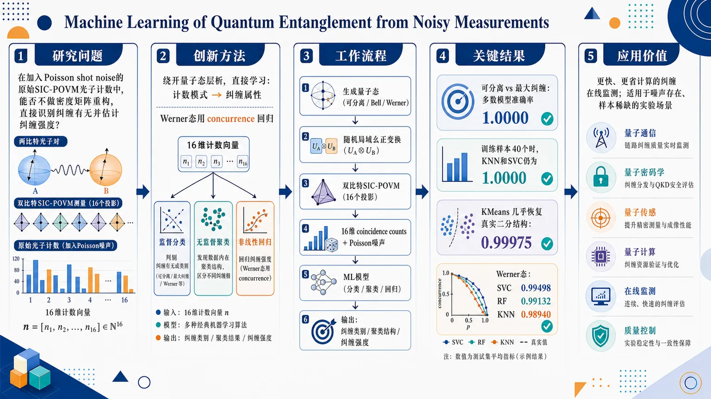
研究问题在加入Poisson shot noise的原始SIC-POVM光子计数向量中，能否不做密度矩阵重构，直接识别两比特偏振光子的纠缠有无，并进一步定量估计纠缠强度？创新方法把实验可直接获得的16维SIC-POVM计数向量作为输入，绕开量子态层析，直接让机器学习从噪声测量统计中学习“计数模式→纠缠属性”的映射；同时用监督分类、无监督聚类和非线性回归三条线并行验证，并在Werner态上用concurrence做连续纠缠回归。Aha点在于：纠缠信息已被编码在原始计数分布里，无需先重构密度矩阵。工作流程生成两比特偏振量子态（可分离态、Bell最大纠缠态、Werner态），对每个态施加随机局域幺正变换扩展几何多样性；用双比特SIC-POVM得到16维coincidence-count向量，并加入Poisson计数噪声；将向量输入Logistic Regression、KNN、Decision Tree、SVC、Random Forest做二分类，用KMeans做无监督聚类；在Werner态数据上再以concurrence为目标做分类与非线性回归；最后输出纠缠类别、聚类结构和纠缠强度估计。关键结果在“可分离 vs. 最大纠缠”任务中，除单棵决策树外，大多数模型在标准训练设置下达到1.0000准确率；即使训练样本只剩40个，KNN和SVC仍保持1.0000，Random Forest也接近满分。无监督KMeans在未知标签下几乎恢复真实二分结构，准确率0.99975。Werner态任务中，SVC准确率达到0.99498，Random Forest为0.99132，KNN为0.98940，说明在噪声测量空间中仍能高精度识别连续纠缠边界与纠缠强度。应用价值为光子纠缠实验提供一种更快、更省计算的替代路线：直接利用实验计数判断纠缠，减少或跳过昂贵的量子态层析；可用于量子通信、量子密码、量子传感和量子计算中的在线纠缠监测与质量控制；对样本稀缺、噪声存在的实验场景尤其有价值，因为它证明了少量原始测量数据也能稳定恢复纠缠结构。第一部分：核心概览 (Overview)
这项研究把原始 SIC-POVM 光子计数向量直接输入机器学习模型，在不做密度矩阵重构的前提下识别并量化两比特偏振光子纠缠。两类数据集分别覆盖“可分离 vs. 最大纠缠”与“Werner 态的连续纠缠强度”，并在Poisson shot noise下仍获得接近完美的分类与高精度回归。其学术位置在于把纠缠识别从传统量子层析与判据计算，推进到噪声测量空间中的监督/无监督学习框架，突出其对实验上可直接获取数据的适用性。
---
第二部分：结构化快速回顾
《Machine Learning of Quantum Entanglement from Noisy Measurements》（None，）
- 背景：量子纠缠检测通常依赖量子态层析与分离判据，但在噪声和数据量大时计算成本高。
- 方法：用16 维 SIC-POVM 计数向量表示两比特态，加入Poisson 光子计数噪声，再用Logistic Regression、KNN、Decision Tree、SVC、Random Forest、KMeans 进行分类、聚类与回归。
- 结果：可分离 vs. Bell 态任务中，多数模型达到1.0000 accuracy；训练样本仅 40 时，KNN、SVC 仍保持 1.0000。Werner 态分类中，SVC accuracy = 0.99498，回归与聚类也表现极强。
- 讨论：纠缠信息已强烈编码在噪声测量统计中；决策边界明显非线性；无监督聚类几乎恢复真实类别结构。
- 局限：仅含Poisson shot noise，未纳入损耗、探测效率、暗计数；主要针对两比特光子偏振态与特定态族（Bell、Werner）。
- 结论：原始测量统计可直接用于纠缠判别与定量估计，成为传统层析与分离判据的高效替代方案。
---
第三部分：逐章节冷凝解析 (Section-by-Section Condensing)
Abstract
- 研究对象与输入表征：目标是识别并定量表征偏振纠缠光子对的纠缠，输入不是密度矩阵，而是SIC-POVM 的 16 维测量向量，对应“experimentally accessible coincidence counts”。原文直引：*“each two-qubit state is represented by a 16-dimensional measurement vector corresponding to experimentally accessible coincidence counts”*。
- 噪声建模：所有测量数据都加入了Poissonian shot noise，强调方法面对的是伪实验计数而非理想概率。原文直引：*“The generated SIC-POVM measurement data include Poissonian shot noise.”*
- 方法谱系：监督学习覆盖 Logistic Regression, k-Nearest Neighbors, Decision Trees, Support Vector Machines, and Random Forests；同时探索clustering methods 与 nonlinear regression。原文直引：*“Several supervised ML algorithms… are applied… The study additionally explores clustering methods and nonlinear regression techniques”*。
- 任务定义：分类任务直接判断separable 与 entangled，回归任务估计连续纠缠量。原文直引：*“without explicit density matrix reconstruction or the use of conventional separability criteria”*。
- 核心结果：在极少训练条件下仍可获得very high classification accuracy。原文直引：*“ML methods can achieve very high classification accuracy, even under extremely limited training conditions.”*
- 意义：指向一种更高效的量子态分析替代路线。原文直引：*“provide an efficient alternative to conventional quantum-state analysis under simulated Poissonian noise conditions.”*
---
1 Introduction
- 纠缠的领域地位：纠缠被定位为量子力学的核心非经典特征，并构成量子通信、密码、传感、计量和计算的基础资源。原文直引：*“entanglement has evolved from a conceptual curiosity into a fundamental resource for quantum information science.”*
- 光子平台的优势：偏振纠缠光子可通过spontaneous parametric down-conversion 生成，并适合长距离传输。原文直引：*“Polarization-entangled photons have been extensively employed”*；*“Their relatively weak interaction with the environment makes them attractive”*。
- 传统检测方式：实验上通常用quantum state tomography (QST) 重构密度矩阵，再用separability criteria 与 entanglement measures 判断纠缠。原文直引：*“This task is commonly performed through quantum state tomography (QST)”*。
- 传统方法瓶颈：当测量数目大或噪声显著时，层析和后续判别会变得computationally demanding。原文直引：*“Although this approach is rigorous and widely used, it may become computationally demanding”*。
- 机器学习转向：量子信息中 ML 已用于实验数据分析、量子系统建模、噪声下的受限层析以及纠缠分析。原文直引：*“Recent advances in Machine Learning (ML) have created new opportunities”*。
- 与前人工作的衔接：相关方向包括把纠缠检测当作classification problem，以及在无完整重构条件下估计纠缠量。原文直引：*“from entangled-state detection treated as a classification problem, to the estimation of quantitative entanglement measures without full quantum-state reconstruction”*。
- 研究设定：使用模拟 noisy tomographic data，不含额外实验缺陷。原文直引：*“does not include additional experimental imperfections, such as channel losses, detector efficiencies, or dark counts.”*
- 双阶段设计：第一阶段比较separable states 与 maximally entangled Bell states；第二阶段扩展到Werner states，覆盖连续纠缠强度，并加入nonlinear regression 估计 concurrence。原文直引：*“The analysis was carried out in two stages.”*
- 中心假设：纠缠信息可从测量结果中直接学习，无需显式重构密度矩阵。原文直引：*“ML models can learn the relationship between experimentally accessible measurement outcomes and the entanglement properties of quantum states”*。
- 适用边界意识：对训练数据代表性、噪声模型与状态范围高度敏感；极好结果不等于对所有混合态都有效。原文直引：*“very good results obtained for clearly separated classes… do not imply… for arbitrary mixed states”*。
- 文章结构：第 2 节给出形式化，第 3 节讲数据生成，第 4 节给结果，第 5 节总结。原文直引：*“The paper is organized as follows.”*
---
2 Quantum States and Entanglement Formalism
#### 2.1 Density Matrix Representation
- 纯态与混态的统一表述：量子态可由density matrix 表示；纯态满足 (h̊o=ketψbraψ)，混态由加权和给出。原文直引：*“the density matrix formalism provides a more general and experimentally relevant representation of quantum states.”*
- 物理可行性条件：密度矩阵必须是Hermitian、positive semidefinite 且 Tr(h̊o)=1。原文直引：*“A physically admissible density matrix is Hermitian, positive semidefinite, and normalized to have unit trace”*。
- 系统维度：研究对象是两个偏振编码量子比特，Hilbert 空间为 (H_AøtimesH_B)，对应 4×4 density matrix。原文直引：*“The corresponding density matrix is therefore a 4 × 4 matrix.”*
#### 2.2 Separable and Entangled States
- 可分离态定义：两体态若能写成 (h̊oₛₑₚ=sumᵢ pᵢ,h̊oᵢ^Aøtimesh̊oᵢ^B)，则为separable。原文直引：*“A bipartite quantum state is called separable if it can be expressed as”*。
- 纠缠态定义：无法写成上述形式的状态称为entangled，体现非局域相关。原文直引：*“States that cannot be represented in this form are called entangled.”*
- 判别困难：一般的可分离性判定是非平凡问题。原文直引：*“Determining whether a given density matrix is separable or entangled is generally a nontrivial problem.”*
- PPT 判据的重要性：对 2×2 与 2×3 系统，partial transposition 的正性是充要条件。原文直引：*“positivity of the partially transposed density matrix provides a necessary and sufficient condition for separability”*。
- 定量纠缠度量：使用 concurrence 作为主要指标。原文直引：*“In the present work, concurrence is employed as the primary quantitative measure of entanglement.”*
- spin-flip 公式：定义 (tildeh̊o=(σ_yøtimesσ_y)h̊o^*(σ_yøtimesσ_y))。原文直引：*“The spin-flipped state is defined as”*。
- concurrence 范围：(0łe Cłe 1)，其中 0 对应可分离，1 对应最大纠缠。原文直引：*“Concurrence assumes values in the interval 0 ≤ C(ρ) ≤ 1”*。
#### 2.3 Quantum Measurements and Tomographic Data
- 层析所需测量数：单量子比特需要 4 个独立测量，双量子比特需要 4²=16 个独立测量。原文直引：*“Consequently, a two-qubit system requires 4²=16 independent measurements.”*
- SIC-POVM 设计：单比特 SIC-POVM 由四个态矢构成，几何上是 Bloch 球上的正四面体顶点。原文直引：*“which are known to form the vertices of a regular tetrahedron in the Bloch sphere.”*
- 测量元定义：(Pᵢ₌frac12|fᵢånglełangle fᵢ|)，双比特测量算符为 (Mᵢⱼ=Pᵢøtimes Pⱼ)。原文直引：*“These operators form an informationally complete measurement set”*。
- 输入特征定义：每个态对应一个 16 维 coincidence-count vector。原文直引：*“yield a 16-dimensional vector of experimentally accessible coincidence counts”*。
- 核心方法论：这些向量即使带Poissonian shot noise，仍可能保留足够的纠缠信息，可直接喂给 ML。原文直引：*“may contain sufficient information to determine the entanglement properties of the underlying quantum state.”*
---
3 Generation of Quantum States and Measurement Data
- 数据策略：因为真实大规模实验数据不足，采用numerically generated quantum states 与simulated tomographic measurements。原文直引：*“the present study relies on numerically generated quantum states and simulated tomographic measurements.”*
- 物理真实性：数据包含Poissonian photon-counting fluctuations，覆盖广泛几何形状与纠缠性质。原文直引：*“included quantum states spanning a broad range of geometries and entanglement properties.”*
- 统一表征：所有情形都用两比特密度矩阵表示，并通过 SIC-POVM 得到 16 维输入。原文直引：*“yielding experimentally accessible 16-dimensional measurement vectors that include shot noise”*。
#### 3.1 Dataset for Classification and Clustering with the Bell Class
- 双类数据设计：只包含separable states 与 maximally entangled states。原文直引：*“Two distinct classes of quantum states were generated: separable states and maximally entangled states.”*
- 最大纠缠类生成方式：通过对 Bell states 施加随机local unitary transformations，保持纠缠不变同时增加几何多样性。原文直引：*“Since local unitary operations preserve entanglement”*。
- 样本规模：两类各抽取 10,000 个代表态，总计 20,000 个测量向量。原文直引：*“The final classification dataset therefore consisted of 20,000 measurement vectors”*。
- 可分离类生成规模：独立生成了 more than 10⁵ physically valid separable states，再随机选 10,000 个。原文直引：*“This procedure produced more than 10⁵ physically valid separable states”*。
- 噪声水平：每个测量设置的平均计数尺度为 40,000 detected photon pairs。原文直引：*“corresponding to an average count scale of 40,000 detected photon pairs per measurement setting.”*
- 标签结构：每个样本对应 ((n₁,dots,n₁₆,Cbⁱⁿ))，其中 0=separable, 1=entangled。原文直引：*“Cbⁱⁿ takes two possible values: 0 for separable states and 1 for entangled states”*。
#### 3.2 Dataset for Classification and Regression with the Werner States
- 连续纠缠谱系：Werner 态用于覆盖从完全可分离到最大纠缠的全部范围。原文直引：*“The present dataset spans the entire range of entanglement values.”*
- Werner 态定义：(h̊o_W(p)=pketΨ⁻braΨ⁻+(1-p)I₄/4)。原文直引：*“The two-qubit Werner state is defined as”*。
- 可分离阈值：(płe 1/3) 为可分离，(p>1/3) 为纠缠。原文直引：*“They are separable for p ≤ 1/3 and entangled for p > 1/3.”*
- 参数离散化：(pin[0,1])，步长 Δp=0.02。原文直引：*“using a uniform step size of Δ p = 0.02.”*
- 状态空间规模：经局域幺正变换后，参数空间超过 4.4×10⁶ valid two-qubit states。原文直引：*“The resulting parameter space contained more than 4.4 × 10⁶ valid two-qubit states.”*
- 最终子样本：随机抽取 250,000 个密度矩阵。原文直引：*“From this ensemble, a random subset of 250,000 density matrices was selected”*。
- 回归目标：使用 concurrence 作为连续输出变量。原文直引：*“Concurrence was selected because it is one of the most widely used entanglement monotone for two-qubit systems”*。
- 双任务标签：每个样本含 ((n₁,dots,n₁₆, C, Cbⁱⁿ, p))，同一数据集可做classification 与 nonlinear regression。原文直引：*“Consequently, the same dataset can be used for both supervised classification and nonlinear regression.”*
---
4 Application of ML algorithms: Results and Analysis
- 分析框架：结果分两部分：第一部分处理 separable vs. maximally entangled；第二部分处理 Werner states 的分类与 concurrence 回归。原文直引：*“The analysis is organized according to the two datasets considered in this work.”*
#### 4.1 Separable and Maximally Entangled States
- 核心目标：判断噪声 SIC-POVM 向量是否足以区分两类极端状态。原文直引：*“contain sufficient information to distinguish these two well-defined classes of quantum states without explicitly reconstructing the density matrix.”*
#### 4.1.1 Supervised Classification
- 模型集合：比较 Logistic Regression, KNeighborsClassifier, DecisionTreeClassifier, SVC, RandomForestClassifier。原文直引：*“Five classification algorithms were considered”*。
- 训练规模标准情形：20% 训练、80% 测试；训练集 4,000，其中 1,997 可分离、2,003 纠缠。原文直引：*“20 % of the dataset (4,000 states) was used for training”*。
- 标准情形结果：除单棵决策树外，所有模型都达到 1.0000 accuracy / precision / recall。原文直引：*“almost all methods achieved perfect classification performance.”*
- 决策树轻微失误：DecisionTreeClassifier 的 accuracy/precision/recall 均为 0.9946/0.9946/0.9945。原文直引：*“Only the single DecisionTreeClassifier showed a slight decrease in performance.”*
- 混淆矩阵细节：决策树在测试集上出现 43 个真可分离误判为纠缠、44 个真纠缠误判为可分离。原文直引：*“Actual 0 7960 43; Actual 1 44 7953”*。
- 极限小样本情形：只用 40 个训练样本，且各类各 20 个，占总数据 0.2%。原文直引：*“only 40 states were used for training”*。
- 小样本下的最优模型：KNeighborsClassifier 与 SVC 仍保持 1.0000；RandomForestClassifier 为 0.9980。原文直引：*“This demonstrates that separable and maximally entangled states remain readily distinguishable”*。
- 弱模型退化：Logistic Regression accuracy 0.8487，DecisionTreeClassifier accuracy 0.8828。原文直引：*“Logistic Regression and DecisionTreeClassifier are considerably more sensitive to the limited amount of training data”*。
- 小样本混淆矩阵：Logistic Regression 误判显著；DecisionTree 更常把纠缠态误判为可分离；RandomForest 对 entangled states 完全正确（9980/9980）。原文直引：*“RandomForestClassifier maintains excellent classification performance, correctly identifying all entangled states”*。
- 几何解释：分界面不是线性的。原文直引：*“the decision boundary separating separable and entangled states is not linearly separable.”*
#### 4.1.2 Unsupervised Clustering
- 聚类对象：使用同一 20,000 个测量向量，但去掉标签。原文直引：*“The binary class labels were excluded from the clustering process”*。
- 方法选择：采用 KMeans。原文直引：*“Clustering was carried out using the KMeans algorithm.”*
- 肘部法则：考察 K=1 到 8 的 inertia，K=1→2 降幅最大。原文直引：*“The largest decrease in inertia occurs for the transition from K = 1 to K = 2”*。
- 最优簇数：得到 Kopt=2。原文直引：*“Therefore, the elbow method indicates that the optimal number of clusters is Kₒₚₜ=2.”*
- inertia 数值：从 1.4228×10¹²（K=1）下降到 8.9178×10¹¹（K=2），随后缓慢下降至 5.8316×10¹¹（K=8）。原文直引：*“Inertia”*。
- 聚类分布：两个簇几乎等大，分别为 10,005 与 9,995。原文直引：*“The algorithm divided the data into two almost equally numerous clusters”*。
- 纠错后比对：仅 5 个样本分错，全部是separable states 被并入纠缠簇。原文直引：*“Out of 20,000 observations, only five were assigned to the incorrect cluster.”*
- 聚类准确率：0.99975。原文直引：*“accuracy = (9995 + 10000)/20000 = 0.99975.”*
- 结构含义：纠缠类形成一个更清晰的紧致区域，可分离类更分散且边界点少量被噪声推入纠缠簇。原文直引：*“the subset of entangled states forms a well-defined region”*。
#### 4.2 Werner States
- 任务升级：从极端二分类扩展到连续纠缠强度与concurrence estimation。原文直引：*“study cases with varying degrees of entanglement”*。
- 选用理由：Werner 态是最常见的混态基准之一，能连续扫过 concurrence 全范围。原文直引：*“provide a convenient benchmark for investigating entanglement.”*
- 几何去偏：对每个状态施加随机局域幺正以增加几何多样性，但保持 concurrence 不变。原文直引：*“Since local unitary operations preserve concurrence”*。
- 研究目标：不是构造某种物理测度下的态分布，而是建立一个controlled dataset 比较不同 ML 方法。原文直引：*“our goal was to construct a diverse and controlled dataset for comparing different ML approaches”*。
#### 4.2.1 Supervised Classification of Werner States
- 数据规模：共 250,000 个观测，含 167,002 个纠缠态与 82,998 个可分离态。原文直引：*“The dataset was not perfectly balanced”*。
- 阈值定义：p > 1/3 归为纠缠，p ≤ 1/3 归为可分离。原文直引：*“states with p ≤ 1/3 were assigned to the separable-state class”*。
- 去重检查：未发现重复行。原文直引：*“No duplicated rows were identified”*。
- 训练切分：80% 训练，20% 测试，即 50,000 个测试样本。原文直引：*“the remaining 20 % (50,000 observations) reserved for testing”*。
- 模型选择：保留 KNN、DecisionTree、SVC、RandomForest；Logistic Regression 被排除。原文直引：*“Logistic Regression was excluded because… it tended to predict the majority class”*。
- 最佳分类器：SVC 的 accuracy 0.99498，misclassifications 251。原文直引：*“the SVC model, for which the accuracy was 0.99498”*。
- 随机森林表现：RandomForestClassifier accuracy 0.99132，misclassifications 434。原文直引：*“Very high performance was also achieved by the RandomForestClassifier model”*。
- KNN 与决策树：KNN accuracy 0.98940，misclassifications 530；DecisionTree accuracy 0.97902，misclassifications 1049。原文直引：*“All analyzed models achieved high classification performance”*。
- 混淆矩阵细节：SVC 正确判定 16,482 个真可分离和 33,267 个真纠缠，仅误分 118 与 133。原文直引：*“Predicted 0 Predicted 1”* 与表 9。
- 整体结论方向：在噪声测量下，Werner 态仍能被高精度二分类。原文直引：*“high classification performance for Werner states.”*
---
第四部分：深度理解与语言支持 (Understanding & Nuance)
1. 关键术语解析
- SIC-POVM
- 含义：symmetric informationally complete positive operator-valued measure。
- 语境差别：不是一般投影测量，而是一个信息完备且几何高度对称的测量方案；单比特上对应四个正四面体顶点，双比特上组合成 16 个测量元。
- 学术含义：优点是测量基底均匀、重构稳定、适合作为 ML 输入特征。
- Concurrence
- 含义：两比特系统最常用的纠缠单调量之一，范围 0 到 1。
- 语境差别：比“是否纠缠”的二值标签更细，适合回归任务。
- 学术含义：(C=0) 表示可分离，(C=1) 表示最大纠缠；中间值刻画纠缠强度。
- Informationally complete
- 含义：测量集合包含重建量子态所需的全部信息。
- 语境差别：不是“测得很多”，而是“测得足够且无信息缺失”。
- 学术含义：16 个 SIC-POVM 结果足以对两比特密度矩阵提供完整约束。
- Shot noise / Poissonian noise
- 含义：来自有限光子计数的统计涨落。
- 语境差别：这里不是高斯白噪声，而是计数型离散噪声，更贴近光子实验。
- 学术含义：噪声强度与计数规模直接相关，40,000 计数/设置意味着统计波动仍然存在但较可控。
- Decision boundary
- 含义：分类模型在特征空间中划分类别的边界。
- 语境差别：Logistic Regression 的线性边界不够，而 SVC / RandomForest / KNN 能拟合更复杂边界。
- 学术含义：高性能结果说明“可分离/纠缠”在 16 维测量空间中的分界显著非线性。
2. 疑难查证与深入解释
- 为什么不重构密度矩阵也能识别纠缠？
- 16 维 SIC-POVM 计数向量本身就是密度矩阵的“压缩观测表达”。
- 纠缠不是只体现在矩阵元素上，而是体现在这些元素对应的统计结构中。
- ML 学到的是“计数模式 → 纠缠属性”的映射，而不是显式执行层析。
- 为什么 Bell 态与可分离态这么容易分？
- 两类状态处于纠缠强度的两端，几何距离大，噪声不足以完全抹平差异。
- 这解释了标准训练下几乎所有模型都接近满分。
- 真正困难的区域通常是接近可分离边界的混态，而非极端点。
- 为什么 Werner 态更有挑战？
- Werner 态跨越整个 (p) 区间，包含大量靠近阈值 (p=1/3) 的“边界样本”。
- 这类样本的纠缠标签对噪声极敏感，因此分类准确率从“完美”降到约 0.98–0.995，但仍然很高。
- 为什么 KMeans 能恢复二分结构？
- 说明测量空间中的数据天然形成两个相对紧致的簇。
- 纠缠类比可分离类更集中，边界样本更少；Poisson 噪声只在极少数边界点上造成混淆。
- 这是一种“无监督也能看见物理结构”的证据。
---
第五部分：创新评估与关联 (Synthesis & Novelty)
1. 创新性判断
- 直接使用原始噪声计数向量
- 新意不在于又做了一次纠缠分类，而在于把输入从“重构后的密度矩阵”改成“实验可直接读出的 SIC-POVM coincidence counts”。
- 相比近 2–5 年常见的量子 ML 纠缠识别工作，这一步更接近实验流水线，减少了层析这一中间环节。
- 同时覆盖分类、聚类与回归
- 同一数据框架下完成 binary classification、unsupervised clustering、concurrence regression，不是只做“是否纠缠”的判别。
- 这使方法从“检测器”升级为“量化器”。
- 极小样本鲁棒性验证
- 训练集仅 40 个样本仍能得到 KNN / SVC 的 1.0000 accuracy，把“小样本可学性”作为明确实验点。
- 这比只报告大样本高准确率更有说服力，因为更接近实验中昂贵数据的现实约束。
- 噪声下的无监督物理结构恢复
- KMeans 在未知标签条件下达到 0.99975，说明测量空间中存在非常清晰的物理簇结构。
- 这类结果强化了“纠缠属性已编码在统计分布中”的观点，而不只是监督模型的记忆能力。
- 范围受控但问题明确
- 未引入损耗、暗计数、探测效率等真实实验误差，因此创新主要体现在方法学验证，不是完整实验部署。
- 但在“可控噪声 + 可直接测量特征”这个层面，确实推进了纠缠识别的工程化方向。
2. 相对前人未解决的问题
- 从特征工程转向原始统计学习：不依赖密度矩阵重构与传统分离判据。
- 从二元判别转向连续纠缠估计：不仅判断“有无纠缠”，还估计 concurrence。
- 从理想数据转向带 shot noise 的伪实验数据：更贴近光子计数实验。
- 从单一监督任务转向多任务验证：分类、聚类、回归三种视角一致支持同一物理结论。
如果需要，我可以继续把这篇论文整理成：
- 一页式中文速记版，或
- 适合组会汇报的 PPT 提纲版。
-
06
📊 含图深析
📄 摘要：作者提出强化学习算法识别给定量子算符的不动点：通过奖惩机制迭代构造把计算基底映射到不动点基底的幺正变换。若算符对应哈密顿演化，则问题化为求本征态；算法先在 2、3 比特随机哈密顿量上验证。
📖 英文原文
arXiv:2511.17491v2 Announce Type: replace-cross Abstract: We introduce a reinforcement learning algorithm designed to identify the fixed points of a given quantum operation. The method iteratively constructs the unitary transformation that maps the computational basis onto the basis of fixed points through a reward-penalty scheme based on quantum measurements. In cases where the operation corresponds to a Hamiltonian evolution, this task reduces to determining the Hamiltonian eigenstates. The algorithm is first benchmarked on random Hamiltonians acting on two and three qubits and then applied to many-body systems of up to six qubits, including the transverse-field Ising model and the all-to-all pairing Hamiltonian. In both cases, the algorithm is demonstrated to perform successfully; in the pairing model, it can also reveal hidden symmetries, which can be exploited to restrict learning to specific symmetry sectors. Finally, we discuss the possibility of post-selecting high-fidelity states even when full convergence has not been reached.
💡 亮点：这套 RL 方法不是直接做谱分解，而是以量子测量反馈驱动幺正变换学习，把计算基底逐步旋转到不动点基底；若算符是哈密顿演化，它就等价于找本征态。作者先在 2、3 比特随机哈密顿量上做基准，再把流程推广到更一般量子操作，适合与量子实验闭环。
📖 展开分析 + 配图
研究问题如何在不知道哈密顿量矩阵的情况下，仅凭量子演化与测量反馈，直接找出量子系统所有保持不变的纯态基；当演化由哈密顿量生成时，本质上就是一次性重构完整本征基，而不是只找单个基态或少数激发态。创新方法提出测量驱动的量子强化学习框架：不断学习一个全局酉变换 Dₖ，把计算基映射到不变纯态基。Aha！在于不是逐个搜索本征态，而是用二维子空间旋转+奖惩更新，像“拼图”一样同时重构整套谱结构；若演化时间选取不当导致伪固定点，还可随机化 τ 规避共振陷阱。工作流程输入计算基与可实现的量子操作 E。每轮对每个基态先施加当前变换 Dₖ，再施加量子演化 E，然后用 Dₖ^† 反向回去，最后在计算基测量；若标签保持不变则奖励并缩小探索角度，若标签错位则惩罚并在对应二维子空间中随机旋转。循环迭代，直到所有探索参数收缩到阈值以下，得到目标不变基映射。关键结果在随机哈密顿量的 2、3 比特基准，以及最多 6 比特的多体系统上验证有效；对横场 Ising 模型和全连接 pairing Hamiltonian 也能工作。尤其在 pairing 模型中，算法能暴露隐藏对称性，并把学习限制到特定对称性扇区；即使未完全收敛，也能通过后选择提取高保真态。应用价值为量子多体系统提供一条非变分的谱重构新路径，适合实验上能实现时间演化但拿不到显式哈密顿量的场景，如模拟器和 Floquet 系统。它可用于发现对称性、分析简并结构、研究能谱统计、热化与激发态相变，并为更一般量子通道的固定点学习奠定方法基础。第一部分：核心概览 (Overview)
该研究提出一种测量驱动的量子强化学习算法，用于学习量子操作的不变纯态基；当量子操作为哈密顿量时间演化时，任务等价于一次性重构完整哈密顿量本征基。核心贡献在于从逐个本征态搜索转向全局酉变换学习，仅需实现演化算符与投影测量，不要求显式哈密顿量矩阵。方法定位为非变分、概念验证型谱重构框架，适用于中小规模多体系统，并可暴露对称性与简并结构。
---
第二部分：结构化快速回顾
《Exploring fixed points and eigenstates of quantum systems with reinforcement learning》（None，）
背景
量子机器学习与量子强化学习已被用于量子控制、态制备、误差校正与含耗散本征值问题。传统变分量子算法主要面向基态或少数激发态，容易受到复杂能量景观与barren plateau影响。完整本征基重构在量子混沌、热化、激发态相变和对称性分析中具有价值。
方法
构造一列酉矩阵 (Dₖ)，使其将计算基映射到量子操作 (mathcal E) 的不变纯态基。每轮对所有计算基态施加 (Dₖ)、量子操作 (mathcal E)、再施加 (Dₖ^dagger)，随后在计算基中测量。若测量结果保持原标签，则奖励并收缩探索参数；若出现交换或偏离，则惩罚并随机施加二维子空间旋转。
结果
摘要给出三类验证：二、三量子比特随机哈密顿量基准；最多六量子比特多体系统；横场 Ising 模型与全连接 pairing Hamiltonian。pairing 模型中算法可揭示隐藏对称性，并支持限制到特定对称性扇区。还提出未完全收敛时的高保真态后选择策略。
讨论
算法本质是bandit 型随机策略搜索，没有价值函数、时序差分或长期回报估计。学习目标不是能量最小化，而是通过测量反馈重构全局不变基。操作设定适合模拟器或 Floquet 系统：可实现 (U(τ))，但未必掌握显式哈密顿量矩阵。
局限
每轮需要 (O(d²⁾) 个二维子空间旋转、(O(d)) 次量子操作调用与测量；对 (N) 比特系统 (d=2^N)，因此整体资源随系统规模指数增长。当前实现明确属于 proof-of-principle，尚未证明可扩展到大规模多体系统。
结论
该算法提供了一条区别于变分本征态求解的新路径：通过强化学习和测量反馈直接学习量子动力学的不变结构。主要价值在于全局谱重构、无需显式哈密顿量、可发现对称性结构，并为未来扩展到更一般量子通道奠定方法基础。
---
第三部分：逐章节冷凝解析 (Section-by-Section Condensing)
Abstract
- Global fixed-point learning task
摘要明确核心任务是寻找给定量子操作的fixed points，即在该操作作用下保持不变的态；算法输出不是单个态，而是把计算基映射到固定点基的unitary transformation。关键表述为 *"We introduce a reinforcement learning algorithm designed to identify the fixed points of a given quantum operation."* 以及 *"The method iteratively constructs the unitary transformation that maps the computational basis onto the basis of fixed points through a reward–penalty scheme based on quantum measurements."*
- Hamiltonian eigenstate reduction
当量子操作为哈密顿量生成的酉时间演化时，不变态即哈密顿量本征态，因此固定点问题退化为本征态求解。摘要给出直接等价关系：*"In cases where the operation corresponds to a Hamiltonian evolution, this task reduces to determining the Hamiltonian eigenstates."*
- Benchmark and many-body applications
验证范围覆盖随机哈密顿量与多体模型：随机哈密顿量作用于two and three qubits；多体系统扩展到up to six qubits；物理模型包括transverse-field Ising model与all-to-all pairing Hamiltonian。原文证据为 *"The algorithm is first benchmarked on random Hamiltonians acting on two and three qubits and then applied to many-body systems of up to six qubits, including the transverse-field Ising model and the all-to-all pairing Hamiltonian."*
- Hidden symmetry detection and post-selection
pairing 模型中算法不仅学习本征基，还能揭示hidden symmetries，这些对称性可用于缩小学习空间到特定symmetry sectors；此外，即使未完全收敛，也可通过post-selecting high-fidelity states获得高质量态。摘要表述为 *"in the pairing model, it can also reveal hidden symmetries, which can be exploited to restrict learning to specific symmetry sectors"*，并补充 *"we discuss the possibility of post-selecting high-fidelity states even when full convergence has not been reached."*
---
I Introduction
- Quantum machine learning context
研究背景置于quantum machine learning (QML)，其目标是利用量子技术增强机器学习任务，包括分类、量子控制和量子同步增强。原文概括为 *"Quantum machine learning (QML) has emerged as a fertile ground for research in recent years, exploring the interplay between quantum mechanics and machine learning"*，并列举任务 *"including classification problems, quantum control, or the enhancement of quantum synchronization processes."*
- Reinforcement learning distinction
Reinforcement learning (RL) 与监督/无监督学习的核心差别在于：不是从数据中识别模式，而是寻找最大化长期奖励的决策序列。关键表述为 *"In contrast to supervised and unsupervised learning, which mainly focus on identifying patterns in data, RL addresses complex problems by framing them as the search for an effective sequence of decisions that maximizes long-term rewards."*
- Quantum RL development landscape
量子强化学习已覆盖基础研究、利用量子性质增强学习、量子态制备、量子纠错策略搜索、不可完全观测下的高保真态控制、连续动作空间、量子计算机上的决策问题，以及含耗散本征值问题。代表性表述包括 *"This iterative trial-and-error methodology, when combined with quantum mechanics, has given rise to a diverse body of work"*，以及 *"high fidelity state control has been achieved using quantum RL for optimization when full state observability is infeasible."*
- Core methodological departure from previous eigenvector RL
新算法受先前工作启发，但核心差异是同时学习所有固定点，而非逐个顺序寻找本征态。原文直接对比：*"A key difference is that our algorithm learns all fixed points simultaneously, whereas in Ref. [3] the eigenstates were determined sequentially, one at a time."* 进一步表述为 *"our method learns the global unitary transformation that connects the computational basis to the fixed-point basis, providing a more compact and parallelizable framework."*
- Beyond strictly unitary processes under structural condition
算法不要求量子操作本身必须为酉过程，但要求固定点集合包含一组张成 Hilbert 空间的orthonormal basis of pure states。核心限制清楚表述为 *"the present formulation does not assume unitarity of the quantum operation itself, but requires that its fixed-point set admit an orthonormal basis of pure states spanning the Hilbert space."* 可适用的非酉例子包括相位阻尼：*"certain non-unitary channels, such as phase-damping noise, also admit orthonormal bases of pure invariant states."*
- Out-of-scope quantum maps
若固定点是混合态，或不形成正交归一基，则当前以酉矩阵参数化目标流形的方法不适用。原文给出边界：*"Quantum maps whose fixed points are mixed states or do not form an orthonormal basis fall outside the scope of the present unitary-parametrization strategy."*
- Relationship to variational quantum algorithms
研究不以竞争变分算法为目标，而是提供一种non-variational alternative。变分方法虽适合近中期量子设备，但量子比特数增加时优化景观复杂，可能出现 barren plateau。原文指出 *"as the number of qubits increases, the optimization task typically becomes more challenging and may fail due to the complexity of the energy landscape, with the onset of the so-called 'barren plateau' phenomenon being a paradigmatic example."* 方法定位为 *"not to compete with existing variational algorithms, but rather to explore a non-variational alternative for addressing spectral problems in many-body systems."*
- Global spectral reconstruction rather than isolated targeting
学习目标是完整不变基，而非某个基态或单个激发态。该差异对激发态量子相变、谱统计、能级密度、热化和遍历性研究有意义。原文强调 *"The present approach should therefore be understood as addressing a problem of global spectral reconstruction rather than that of isolated eigenstate targeting."* 应用动机包括 *"excited-state quantum phase transitions,"* *"spectral statistics and level-density estimation in quantum chaotic systems,"* 以及 *"studies of thermalization and ergodicity where the structure of the full eigenbasis is relevant."*
- Operational setting without explicit Hamiltonian
算法只假设能实现时间演化 (U(τ)) 和投影测量，不要求知道生成演化的哈密顿量矩阵。关键表述为 *"the protocol assumes the ability to implement the unitary time evolution operator (U(τ)) and perform projective measurements, without requiring explicit knowledge of the Hamiltonian operator generating that evolution."* 这种设定适合 analog quantum simulators 与 Floquet 系统：*"where coherent time evolution can be realized and measured even if the microscopic Hamiltonian is not known in closed form"*，以及 *"one may have experimental access to the stroboscopic evolution operator over one driving period."*
- Proof-of-principle and exponential cost
可扩展性未建立；计算成本随 Hilbert 空间维度指数增长。原文明确限定：*"the present implementation should be regarded as a proof-of-principle approach, as the computational cost grows exponentially with the Hilbert-space dimension."* 价值主要在任务类型与操作设定：*"the interest of the method lies in the type of learning task it addresses and the operational setting in which it is formulated."*
---
II Algorithm description
- Algorithm section scope
算法部分系统定义目标、迭代流程、奖励惩罚策略、RL 形式化、资源标度、防止伪固定点、fine-tuning、收敛与精度指标、随机哈密顿量基准和超参数鲁棒性。章节导语给出结构：*"In Sec. II, we provide a detailed description of the algorithm."* 并进一步列出 *"problem statement and goal,"* *"the RL protocol step by step,"* *"resource considerations and scaling,"* *"strategies to prevent convergence to spurious fixed points,"* 与 *"a fine-tuning procedure after initial convergence."*
---
II.1 Problem statement and goal
- Hilbert-space and basis setup
系统态空间维度为 (d)，计算基为 (mathsf C=|jångleⱼ₌₀d⁻¹)，未知目标基为 (mathsf B=|Φ_αångleα₌₀d⁻¹)，且 (mathsf B) 为正交归一并张成整个态空间。原文定义为 *"Consider a quantum system with a state space of dimension (d) and computational basis (mathsfC=ketjⱼᵢₙ₀,dₒₜₛ,d₋₁)."* 随后给出 *"Let (mathsfB=ketΦααᵢₙ₀,dₒₜₛ,d₋₁) be another, unknown orthonormal target basis that also spans the state space of the system."*
- Invariant pure-state assumption
唯一已知信息是目标基中每个纯态在量子操作 (mathcal E) 下保持不变，即 (mathcal E(|Φ_αånglełangleΦ_α|)=|Φ_αånglełangleΦ_α|)。原文表述为 *"the only information available about the basis (mathsfB) is that it is left invariant by a quantum operation (E)."*
- Learning objective as unitary basis map
目标是近似构造一个酉变换，将计算基映射到目标基，允许元素排列不同。核心句为 *"our objective is to construct, at least approximately, a unitary transformation that maps the computational basis (mathsfC) onto the target basis (mathsfB) (up to a permutation of their elements)."*
- Hamiltonian stationary-state special case
主要讨论特例为哈密顿量 (H) 的未知定态：(H|Φ_αångle=E_α|Φ_αångle)。此时量子操作是 (mathcal E(bullet)=U(τ)bullet U^dagger(τ))，其中 (U(τ)=e⁻ⁱτ H/hbar)。原文给出 *"A particular case—on which we will focus later in this work—is when the target basis (mathsfB) consists of the (unknown) stationary states of a certain Hamiltonian (H)."*
- Role of evolution time (τ)
(τ) 初始被称为任意时间间隔，但随后会成为算法能否正确工作的关键参数。原文强调 *"the particular choice of the parameter (τ) plays a crucial role in the correct functioning of the algorithm."*
- Convergent unitary sequence
强化学习方法构造一列酉矩阵 (Dₖ)，使 (Dₖ|jångle) 在 (k→infty) 时近似某个 (|Φ_αångle)。原文目标式为 *"The goal of our quantum RL method is to iteratively construct a sequence of unitary matrices (Dₖ)"*，并要求 *"(łimₖᵢ̊gₕₜₐᵣᵣₒw₊ᵢₙfₜyDₖketjapproxketΦ_α)."*
---
II.2 Technical details on the iterative process
- Global update by pairwise rotations
每轮更新通过所有计算基指标对 ((j,l)) 的二维旋转累乘实现，数量为 (d(d-1)/2)。核心公式为 (Dₖ₊₁=Dₖprodⱼ₌₀d⁻²prodₗ₌ⱼ₊₁d⁻¹Dₖ⁽j,l⁾)。原文说明 *"The unitary transformation generated in the ((k+1))th iteration, (Dₖ₊₁), is obtained from the unitary operator (Dₖ)"*，且 *"the (d(d-1)/2) operators (Dₖ⁽j,l⁾) are unitary transformations."*
- Lexicographic ordering of rotations
乘积中的 ((j,l)) 按字典序排列；若 (j₁<j₂)，或 (j₁₌ⱼ₂) 且 (l₁<l₂)，则前者先出现。原文精确定义为 *"the operators are arranged from left to right according to the increasing sequence of index pairs ((j,l)), ordered lexicographically."*
- Two-dimensional Pauli-type generators
每个 (Dₖ⁽j,l⁾) 是作用在 (|jångle,|långle) 张成二维子空间上的旋转，由 (X⁽j,l⁾,Y⁽j,l⁾,Z⁽j,l⁾) 生成。原文说明 *"rotations acting on the two-dimensional subspace spanned by (ketj) and (ketl)."* 这些生成元被称为 *"Pauli-type operators"*，并 *"serve as their generators."*
- Euler-like rotation parameterization
二维旋转写作 (Dₖ⁽j,l⁾=e⁻ⁱβₖ⁽j,l⁾Y⁽j,l⁾/2e⁻ⁱγₖ⁽j,l⁾Z⁽j,l⁾/2e⁻ⁱαₖ⁽j,l⁾X⁽j,l⁾/2)。原文表述为 *"the operators (Dₖ⁽j,l⁾) are expressed as"* 后给出该三角参数化。
- Reward equals exploitation; penalty equals exploration
奖励时三角全部设为 0，(Dₖ⁽j,l⁾=I)，对应不探索、纯利用；惩罚时三角从动态区间中均匀伪随机抽取。原文明确为 *"In the case of a reward, all angles are set to zero, so that (Dₖ⁽j,l⁾) reduces to the identity operator (I)."* 并解释 *"This corresponds to no exploration, i.e., pure exploitation in RL terms."* 惩罚机制为 *"the angles are drawn pseudo-randomly and uniformly within intervals that are dynamically adjusted during the learning process."*
- Exploration parameter control
每个指标对有一个探索参数 (wₖ⁽j,l⁾łeq 1)，控制旋转角采样区间宽度；惩罚扩大区间，奖励收缩区间。原文为 *"these intervals are expanded in response to penalties and contracted in response to rewards"*，并指出 *"The degree of exploration at iteration (k) is controlled via a set of (d(d-1)/2) exploration parameters (wₖ⁽j,l⁾łeq 1)."*
---
II.3 RL algorithm step-by-step
- Conceptual use of (d) qudit registers
算法概念上使用 (d) 个 (d)-维系统，每个初始化为不同计算基态，初态为 (h̊o₁₌|0ånglełangle0|øtimes|1ånglełangle1|øtimesḑotsøtimes|d-1ånglełangle d-1|)。原文给出 *"The algorithm is implemented on a set of (d) (d)-dimensional systems (qudits), each initialized in a distinct state of the computational basis."*
- Sequential implementation suffices
并不需要 (d) 个物理副本；单个寄存器顺序制备各计算基态、重复测量即可，无需跨 qudit 纠缠或集体测量。原文强调 *"The same procedure can be implemented sequentially on a single register by preparing each computational basis state (ketjbraj) in turn"*，并说明 *"No inter-qudit entanglement or collective measurement is required."*
- Global learning despite sequential execution
即使实验执行可时分复用，学习动力学仍然是全局的，因为所有更新共同构造同一个 (Dₖ)。原文为 *"Although the experimental executions associated with different basis states may be time-multiplexed, the learning dynamics remain intrinsically global."*
- Initialization
初始条件为 (D₁₌I)，且所有 (w₁⁽j,l⁾=1)。原文写明 *"The iterative process begins with the initial assignments (D₁₌I) and (w₁⁽j,l⁾=1) for all index pairs ((j,l))."*
- Step 1: Apply (Dₖ)
对每个 qudit 单独施加当前酉变换 (Dₖ)，得到 (h̊oₖ⁽j⁾=Dₖ|jånglełangle j|Dₖ^dagger)。原文为 *"The unitary transformation (Dₖ) is applied to each qudit individually."*
- Step 2: Apply (mathcal E)
对每个 qudit 单独施加量子操作，得到 (tildeh̊oₖ⁽j⁾=mathcal E(h̊oₖ⁽j⁾))。原文为 *"Next, the quantum operation (E) is applied to each qudit individually."*
- Step 3: Undo (Dₖ)
施加 (Dₖ^dagger) 反演当前学习变换，得到 (Dₖ^daggertildeh̊oₖ⁽j⁾Dₖ)。原文为 *"The next step consists in reversing the unitary transformation applied in step 2 for each qudit."*
- Step 4: Measurement criterion
在计算基进行投影测量，若已经达到目标，则每个测量结果 (mₖ⁽j⁾=j) 的概率为 1。原文为 *"a projective measurement is performed on each qudit in the computational basis"*，并说明若目标达到，*"the measurement outcomes would satisfy the equality (mₖ⁽j⁾=j) for all (j) ... with probability one."*
- Pairwise reward condition
对每个 ((j,l))，奖励条件不是只看 (mₖ⁽j⁾=j)，而是检查交叉错误是否不存在：(mₖ⁽j⁾≠ l) 且 (mₖ⁽l⁾≠ j)。原文解释 *"This is equivalent to stating that, for each label (j) and any (l≠ j), the condition (mₖ⁽j⁾≠ l) would hold with probability one."*
- Double reward update
若 (mₖ⁽j⁾≠ l) 且 (mₖ⁽l⁾≠ j)，双奖励使探索参数按 (wₖ₊₁⁽j,l⁾=r²wₖ⁽j,l⁾) 收缩，其中 (rin(0,1))。同时 (Dₖ⁽j,l⁾=I)。原文为 *"a double reward is applied by reducing the corresponding exploration parameter according to the rule (wₖ₊₁⁽j,l⁾=r²wₖ⁽j,l⁾)"*，并定义 *"(rin(0,1)) is a parameter referred to as the reward rate."*
- Mixed reward–punishment update
若一个方向正确、另一个方向错误，则 (wₖ₊₁⁽j,l⁾=min(rp wₖ⁽j,l⁾,1))，其中 (p>1) 为惩罚率；若 (rp<1) 收缩，(rp=1) 不变，(rp>1) 扩张。原文为 *"a mixed reward–punishment update is performed"*，并给出 *"where (p>1) is a parameter referred to as the punishment rate."*
- Double punishment update
若 (mₖ⁽j⁾=l) 且 (mₖ⁽l⁾=j)，则双惩罚，(wₖ₊₁⁽j,l⁾=min(p²wₖ⁽j,l⁾,1))。原文为 *"If (mₖ⁽j⁾=l) and (mₖ⁽l⁾=j), then both qudits violate the condition."* 随后 *"a double punishment is applied."*
- Penalty rotation sampling interval
惩罚或混合情况下，三个角 (α,β,γ) 从 ([-π wₖ⁽j,l⁾,π wₖ⁽j,l⁾]) 均匀伪随机抽取。原文为 *"the angles ... are drawn pseudo-randomly and uniformly within the interval ([-π wₖ⁽j,l⁾,π wₖ⁽j,l⁾])."*
- Reset operation
若某 qudit 测量结果 (mₖ⁽j⁾≠ j)，通过交换 (|jångle) 与 (|mₖ⁽j⁾ångle) 的酉操作将其重置到初始计算基态。原文为 *"If the measurement outcome (mₖ⁽j⁾) differs from (j), the unitary ... is applied to the corresponding qudit to reset it to its initial computational basis state."*
- Convergence criterion
算法收敛定义为所有探索参数趋于 0；实际判据使用最大探索参数 (wₖ⁽mathrm M⁾=max₀łₑq ⱼ<ₗłₑq d₋₁wₖ⁽j,l⁾)，若 (wₖ⁽mathrm M⁾<wₜₕ) 则认为收敛。原文为 *"The algorithm described above is said to converge if all exploration parameters (wₖ⁽j,l⁾) approach zero"*，并给出 *"We say that the algorithm has converged if (wₖ⁽M⁾<wₜₕ)."*
---
II.4 RL formulation
- Bandit-type stochastic policy search
该协议属于bandit type stochastic policy-search，具有自适应探索；不使用 value function、temporal-difference learning 或 long-horizon return estimation。原文精确定位为 *"it corresponds to a stochastic policy-search scheme of bandit type with adaptive exploration."* 并明确 *"The algorithm does not rely on a value function, temporal-difference learning, or long-horizon return estimation."*
- Agent and environment definition
自适应控制器是 agent，选择定义 (Dₖ) 的旋转参数；环境由固定量子操作 (mathcal E) 与计算基投影测量构成。原文为 *"the adaptive controller that selects the rotation parameters defining the unitary transformation (Dₖ) plays the role of the learning agent."* 环境定义为 *"The environment is defined by the fixed quantum operation (E) together with projective measurements in the computational basis."*
- Static quantum environment
(mathcal E) 在学习过程中固定，不随 agent 动作动态演化。原文为 *"The quantum operation itself remains fixed throughout the learning process and therefore the environment does not evolve dynamically in response to the agent’s actions."*
- Internal state of agent
第 (k) 轮 agent 的内部状态由当前酉矩阵 (Dₖ) 与所有探索参数 (wₖ⁽j,l⁾) 组成。原文为 *"At iteration (k), the internal state of the agent is given by the current unitary transformation (Dₖ) together with the set of exploration parameters."*
- Action as pairwise unitary rotation
对每个 ((j,l))，一个 action 是选择二维酉旋转 (Dₖ⁽j,l⁾)，由 (α,β,γ) 三角参数化。原文为 *"For a given pair ((j,l)), an action consists of selecting a two-dimensional unitary rotation (Dₖ⁽j,l⁾), parametrized by the angles..."*
- Immediate reward and multiplicative update
bandit 特征来自每个动作后立即由测量结果得到奖励信号，并立即更新对应探索参数。原文为 *"an action is selected, a reward is obtained immediately from the measurement outcomes, and the corresponding exploration parameter is updated."*
- Policy distribution width controlled by (w)
若需要探索，三个旋转角独立地从以 0 为中心、半宽为 (π wₖ⁽j,l⁾) 的均匀分布采样；(w) 越大，探索二维酉流形越广。原文为 *"the rotation angles are sampled independently from uniform distributions centered at zero with half-width (π wₖ⁽j,l⁾)."* 并解释 *"larger values allow broader exploration of the corresponding two-dimensional unitary manifold."*
---
II.5 Resource considerations and scaling
- Per-iteration pair updates scale as (O(d²⁾)
每轮更新所有 (0łeq j<lłeq d-1) 的指标对，数量 (d(d-1)/2)，因此二维子空间旋转数为 (O(d²⁾)。原文为 *"The number of such pairs is (d(d-1)/2), implying (O(d²⁾) two-dimensional subspace rotations per iteration."*
- Sequential calls and measurements scale as (O(d))
单寄存器顺序实现中，每轮需要制备每个计算基态并对其施加一次 (mathcal E)，因此每轮 (O(d)) 次 (mathcal E) 调用和 (O(d)) 次投影测量。原文为 *"This results in (O(d)) calls to (E) and (O(d)) projective measurements per iteration."*
- Exponential scaling for (N)-qubit systems
(N) 比特系统 (d=2^N)，因此子空间更新 (O(d²⁾⁼O(4^N))，量子操作调用和测量为 (O(d)=O(2^N))。原文为 *"For an (N)-qubit system, where (d=2^N), the number of subspace updates therefore scales as (O(d²⁾) per iteration."*
- Late-stage effective cost reduction
接近收敛时，许多二维旋转接近 identity，非平凡更新数量通常下降；但这不改变渐近标度。原文为 *"as convergence is approached, an increasing number of two-dimensional rotations become effectively trivial"*，并补充 *"This behavior does not modify the asymptotic scaling but can reduce the effective computational effort near convergence."*
- Classical simulation bottleneck
数值模拟中 Hilbert 空间指数增长使协议很快昂贵，因为每轮都要模拟量子演化、投影测量和随机旋转更新。原文为 *"the exponential growth of the Hilbert-space dimension makes the classical simulation of the protocol increasingly demanding."*
- Symmetry-sector reduction
若存在对称性，可将学习限制在对称性扇区，从而显著降低有效 Hilbert 空间维度。原文为 *"When symmetries are present, restricting the learning dynamics to symmetry sectors ... can significantly reduce the effective Hilbert-space dimension explored by the algorithm."*
---
II.6 Fixed-point ambiguities: ensuring convergence to the target basis
- Non-unique invariant pure-state sets create ambiguity
若 (mathsf B) 不是 (mathcal E) 下唯一不变纯态集合，算法可能收敛到错误不变集合，而非目标基。原文为 *"If, however, (mathsfB) is not the only invariant set of pure states under such an operation, the algorithm may instead converge to a unitary mapping (mathsfC) onto a different invariant set."*
- Survival probability criterion
对哈密顿量演化，纯态 (|ΨånglełangleΨ|) 不变的充要条件是 survival probability (P=|łangleΨ|U(τ)|Ψångle|²⁼¹)。原文为 *"A necessary and sufficient condition for a pure state ... to be invariant is that the survival probability after evolution for a time (τ) ... equals unity."*
- Spectral expansion exposes resonances
将 (|Ψångle=sum_α c_α|Φ_αångle) 展开后，得到
[
P=1-4sumα<β|c_α|²|c_β|²sin²⁽ømegaα,βτ/2),
]
其中 (ømegaα,β=(E_α-E_β)/hbar)。原文给出 *"Expanding (ketΨ) in the eigenbasis of (H)"* 后得到该表达式。
- Spurious invariant superpositions
若 (ømegaα,βτ) 是 (2π) 的整数倍，则任意 (c_α|Φ_αångle+c_β|Φ_βångle) 在 (mathcal E) 下不变；只要 (ømegaα,β≠0) 且两个系数都非零，这些态并非 (H) 的真本征态。原文为 *"if (τ) is such that (ømegaα,βτ) is an integer multiple of (2π)"*，则 *"any superposition ... remains invariant under (E)."* 随后强调 *"such states are not true eigenstates of (H) when both coefficients ... are nonzero."*
- Near-resonance also problematic
即使不是严格共振，近共振也可能使算法难以区分真本征态和伪不变叠加态。原文为 *"the issue is not limited to cases where (ømegaα,βτ) is exactly resonant"*，并指出 *"even when ... near-resonant values, the algorithm may struggle to differentiate between genuine eigenstates and spurious invariant superpositions."*
- Randomizing (τ) mitigates spurious convergence
不固定 (τ)，而是在每步从合适区间随机选取，可避免某些共振时间持续强化伪解。原文建议 *"a more robust strategy is to avoid using the same (τ) in every iteration."* 机制为 *"a different value of (τ) is randomly selected at each step from a suitably chosen interval."*
- Recommended interval based on smallest nonzero gap
对所有非简并能级对，最长周期为 (τₘₐₓ=2π/ømegaₘᵢₙ)，其中 (ømegaₘᵢₙ) 是最小非零频率差；从 ([0,τₘₐₓ]) 采样有助于避免系统性伪强化。原文为 *"the longest period among them is (τₘₐₓ=2π/ømegaₘᵢₙ)"*，并建议 *"Sampling (τ) from an interval of width on the order of (τₘₐₓ)—for instance, (τin[0,τₘₐₓ])."*
---
II.7 Fine-tuning the algorithm after initial convergence
- Reset exploration after convergence
初始收敛后，即 (wₖ⁽mathrm M⁾<wₜₕ)，将所有 (wₖ⁽j,l⁾) 重置为 (wᵣ)，且 (wₜₕ<wᵣ<1)，以进入新探索阶段。原文为 *"when the algorithm is considered to have converged ... all exploration parameters (wₖ⁽j,l⁾) are reset to a new value (wₘₐₜₕᵣₘ ᵣ)."*
- Knowledge-preserving exploration
重置并非从零开始，而是在保留已学结构的同时重新引入局部探索。原文解释 *"This reinitialization introduces a new phase of exploration while preserving most of the knowledge already acquired."*
- Trade-off in (wᵣ)
(wᵣ) 过大可能破坏已学结构；过接近 (wₜₕ) 则探索不足，难以改善。原文为 *"If (wₘₐₜₕᵣₘ ᵣ) is too large (close to 1), the reset may partially disrupt the structure already learned"*，以及 *"if (wₘₐₜₕᵣₘ ᵣ) is chosen too close to the threshold (wₜₕ), the exploration becomes too limited."*
- Linear decrease schedule
为避免无限重置导致永不完全收敛，当迭代数超过 (k₀) 后，(wᵣ) 按 (wᵣ₍ₖ_M-k)/(k_M-k₀₎) 线性下降，(k_M) 为最大迭代数。原文为 *"once the iteration index exceeds a predetermined value (k₀), (wₘₐₜₕᵣₘ ᵣ) is reduced linearly according to the rule..."*
- Purpose of fine-tuning schedule
该调度在后期提供更精细探索，同时保留早期学习结果。原文总结为 *"This schedule enables finer exploration after the initial convergence phase, giving the algorithm the flexibility to improve the solution while preserving the knowledge acquired in earlier stages."*
---
II.8 Assessing algorithm convergence and accuracy
- Two performance dimensions
性能评估包含两个方面：达到收敛所需迭代数应尽可能少；目标基态复现精度应尽可能高。原文为 *"Two key aspects must be considered when assessing the performance of the algorithm"*，第一是 *"the number of iterations required to achieve convergence should be as small as possible"*，第二是 *"the algorithm must reproduce the target basis states (mathsfB) with high accuracy."*
- Convergence metric via maximum exploration parameter
收敛用 (wₖ⁽mathrm M⁾) 随迭代数 (k) 的变化衡量。原文为 *"convergence can be quantified through the dependence of the maximum exploration parameter (wₖ⁽M⁾) on the iteration index (k)."*
- Accuracy check enabled by independently computed target states
可用示例中目标基 (mathsf B) 可独立计算，因此能直接评估学习输出与真实目标基的一致性。可用文本截止处给出 *"in all the examples considered below the states of (mathsfB) can be computed independently, without relying on the algorithm."* 后续具体精度指标、数值结果与统计细节未包含在给定内容中。
---
第四部分：深度理解与语言支持 (Understanding & Nuance)
1. 术语解析
- Fixed points
在量子操作 (mathcal E) 下保持不变的态。此处主要指纯态密度矩阵满足 (mathcal E(|Φ_αånglełangleΦ_α|)=|Φ_αånglełangleΦ_α|)。微妙点：fixed point 不必总是哈密顿量本征态；只有当 (mathcal E) 是由 (H) 生成的时间演化且排除共振伪不变态时，固定点才可靠对应本征态。
- Invariant basis
由不变态组成的一整组正交归一基。它强于“存在若干不变态”：要求这些态能够张成整个 Hilbert 空间，因此可由一个全局酉矩阵从计算基生成。该术语是算法能用 (Dₖ) 参数化目标的关键前提。
- Reward–penalty scheme
强化学习中的奖励—惩罚机制。这里奖励不是数值能量下降，而是测量结果是否符合“不发生计算基标签交叉”的局部条件。奖励收缩探索参数，惩罚扩大或保持探索范围。
- Bandit type with adaptive exploration
bandit 型问题没有长期状态转移规划；每次动作后立即获得反馈。adaptive exploration 表示探索分布宽度 (wₖ⁽j,l⁾) 会根据历史奖励/惩罚动态变化。区别于深度 RL 或 Q-learning：没有价值网络、没有 Bellman 方程、没有长期折扣回报。
- Spurious invariant superpositions
由于选取的演化时间 (τ) 与能级差共振，非本征态叠加也可能在一次 (U(τ)) 后只获得整体相位或恢复自身，从而被测量反馈误认为固定点。这类态对 (mathcal E) 是固定点，但对 (H) 不是本征态，因此是谱重构中的伪解。
2. 疑难查证
- 为什么学习固定点等价于学习本征态？
若 (H|Φ_αångle=E_α|Φ_αångle)，则
[
U(τ)|Φ_αångle=e⁻ⁱE_ατ/hbar|Φ_αångle.
]
密度矩阵形式中整体相位消失：
[
U(τ)|Φ_αånglełangleΦ_α|U^dagger(τ)
=|Φ_αånglełangleΦ_α|.
]
因此每个本征态投影算符都是 (mathcal E) 的固定点。算法通过“施加 (Dₖ)—演化—撤销 (Dₖ)—测量”检查 (Dₖ|jångle) 是否在演化后保持自身。
- 为什么用 (Dₖ^dagger) 撤销后测量能产生学习信号？
若 (Dₖ|jångle) 已经是目标不变态，经过 (mathcal E) 后不变，再施加 (Dₖ^dagger) 必回到 (|jångle)，测量必得 (j)。若 (Dₖ|jångle) 不是不变态，演化会把它变成含有其他计算基分量的状态，撤销后测量可能得到 (l≠ j)。因此测量标签偏离就是可观测的错误信号。
- 为什么会出现伪固定点？
假设两个能级差满足 ((E_α-E_β)τ/hbar=2π n)。则 (|Φ_αångle) 与 (|Φ_βångle) 在时间 (τ) 后获得相同相对相位，任意叠加 (c_α|Φ_αångle+c_β|Φ_βångle) 都会恢复到自身密度矩阵。算法只观察“这次演化后是否不变”，无法判断该叠加是否为 (H) 的本征态。随机化 (τ) 等于用多个时间尺度询问同一个态是否总是不变；真正本征态对任意 (τ) 都不变，伪叠加只在特殊或近特殊 (τ) 下近似不变。
- 为什么资源是指数级？
(N) 比特 Hilbert 空间维度 (d=2^N)。算法要处理所有计算基态，至少 (O(d))；还要处理所有二维子空间对 ((j,l))，数量 (d(d-1)/2approx O(d²⁾⁼O(4^N))。因此即使每个局部操作很简单，总体对 Hilbert 空间维度的全局覆盖导致指数成本。
---
第五部分：创新评估与关联 (Synthesis & Novelty)
1. 创新性判断
- 从单态搜索转向完整基重构
近年许多变分量子算法、量子子空间方法和强化学习方法通常瞄准基态、少数激发态或逐个本征态。该方法的主要新颖性是直接学习一个全局酉矩阵 (Dₖ)，同时把整个计算基映射到不变基。解决的问题不是“找到一个低能态”，而是“重构完整 invariant basis”。
- 非变分谱学习路径
传统 VQE 及其激发态扩展依赖能量期望值优化，容易受优化景观、参数 ansatz 表达能力和 barren plateau 制约。该算法不用能量最小化，也不需要显式能量函数；反馈来自投影测量后的标签一致性。创新点在于将谱问题改写为固定点识别和测量驱动的强化学习更新。
- 无需显式哈密顿量矩阵
许多经典对角化与标准变分方法需要 (H) 的显式算符表达。该协议只要求能实现 (U(τ)) 和测量，适合 analog quantum simulator、实验多体系统和 Floquet 系统。它解决了“可实验演化但无闭式哈密顿量矩阵”场景下的谱结构学习问题。
- 适用于部分非酉量子通道的统一固定点视角
方法以量子操作固定点为对象，而非仅以哈密顿量本征态为对象。只要非酉通道拥有张成 Hilbert 空间的正交归一不变纯态基，原则上也可纳入同一框架。相较于只处理酉本征态问题的方法，这一表述更一般。
- 对称性与简并结构可由学习结果暴露
全局基重构天然包含不同能级、简并和对称性扇区信息。pairing 模型摘要中显示算法可揭示隐藏对称性，并据此将学习限制到特定扇区。这区别于只返回一个目标态的算法，因为单个态通常不足以揭示完整谱的扇区结构。
- 明确识别并处理固定点歧义
共振演化时间会导致非本征叠加态成为 (mathcal E) 的伪固定点。通过随机采样 (τ) 避免系统性强化伪解，是该框架中关键的鲁棒性设计。它解决了单一时间演化固定点学习中“固定点多于真实本征态”的结构性问题。
- 当前创新仍是概念验证而非可扩展优势
资源标度 (O(d²⁾) 子空间更新与 (O(d)) 演化/测量调用使其尚不能宣称对大规模多体系统具备实用量子优势。创新价值主要是问题重构、操作设定和全局谱学习机制，而不是已证明的多项式可扩展算法。
-
07
📊 含图深析
📄 摘要：Ba3HoRu2O9 中 Ru2O9 分子单元与 Ho3+ 局域磁矩并存，磁激发、晶场激发和晶格振动能区重叠。作者结合非弹性中子散射、线性自旋波、晶场分析与机器学习声子计算，拆分多种高能激发并解析自旋-偶极耦合来源。
📖 英文原文
arXiv:2607.23490v2 Announce Type: new Abstract: Understanding the microscopic origin of spin-dipole coupling and high-energy excitations in correlated 4d-4f multiferroic oxides is challenging because magnetic, crystal-field, and lattice excitations frequently overlap in energy. The hexagonal 6H perovskite Ba3HoRu2O9 provides an ideal platform to investigate this interplay owing to the coexistence of Ru2O9 molecular units and localized Ho3+ moments. To identify the contributions from these different excitations, we combine inelastic neutron scattering (INS) with linear spin-wave calculations, crystal-field analysis, Raman spectroscopy, and machine-learned force field (MLFF) phonon calculations. A dispersive magnetic excitation below 6.2 meV is accurately reproduced by linear spin-wave theory, establishing its origin as a collective spin-wave excitation of the coupled Ru-Ho magnetic network. At higher energies, broad excitations centered near 20, 39, 70, and 90 meV is observed that are present far above magnetic ordering temperature. Crystal-field calculations based on the Stevens formalism place the strongest Ho3+ transitions within the experimentally observed energy window, while Raman spectroscopy and MLFF phonon calculations identify optical phonons with comparable energies. Together, these complementary results show that the broad INS feature near 39 meV is consistent with overlapping contributions from Ho3+ crystal-field excitations, lattice vibrations, and previously reported Ru2O9 molecular magnetic excitations. These findings establish a microscopic framework for understanding the interplay between spin, crystal-field, and lattice degrees of freedom in this multiferroic 4d-4f compound.
💡 亮点：该工作把 Ba3HoRu2O9 作为 4d-4f 多铁氧化物模型体系，联合 INS、线性自旋波、晶场拟合和机器学习声子计算，直接处理磁激发、晶场跃迁与声子谱重叠问题。核心价值在于用多方法交叉约束高能谱指认，厘清 Ru2O9 与 Ho3+ 之间的自旋-晶格耦合。
📖 展开分析 + 配图
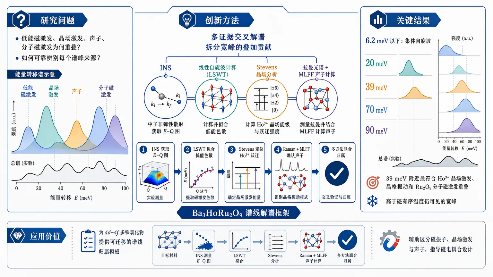
研究问题Ba3HoRu2O9 中低能磁激发与高能晶场激发、声子及分子磁激发为何会在同一能区重叠，如何可靠辨别每个谱峰的物理来源？创新方法将非弹性中子散射与线性自旋波计算、Stevens 晶场分析、拉曼光谱和机器学习力场声子计算联用，形成多证据交叉解谱框架，把原本混在一起的宽峰拆分为不同自由度的叠加贡献。工作流程先用 INS 获取能量-动量谱图；再用线性自旋波拟合低能色散磁激发；随后用 Stevens 晶场模型定位 Ho3+ 跃迁；再用拉曼与 MLFF 声子计算确认光学声子；最后综合多方法对各能区峰位逐一归属。关键结果6.2 meV 以下的色散激发被明确证明是 Ru–Ho 耦合网络的集体自旋波；20、39、70、90 meV 处存在宽峰且在磁有序温度以上仍然可见；其中 39 meV 附近宽峰最符合 Ho3+ 晶场激发、晶格振动和 Ru2O9 分子磁激发的重叠。应用价值为 4d–4f 多铁氧化物提供了一套可迁移的谱线归属模板，帮助研究者在复杂材料中区分磁振子、晶场激发与声子，也为理解和设计新型磁电耦合多铁材料提供微观依据。第一部分：核心概览
这项工作聚焦 Ba₃HoRu₂O₉ 这一典型 4d–4f 多铁氧化物，用 INS、自旋波理论、晶场分析、拉曼与机器学习声子计算 共同拆解彼此重叠的高能激发，给出一个微观层面的“谱线归属图”。核心贡献在于：把 6.2 meV 以下的色散磁激发 明确归因为 Ru–Ho 耦合网络的集体自旋波，并指出 约 39 meV 的宽峰 不是单一来源，而是 Ho³⁺ 晶场激发、晶格振动及已报道的 Ru₂O₉ 分子磁激发 的重叠结果，从而补上了 4d–4f 多铁体系中“磁—晶场—声子”混叠机理的关键拼图。
---
第二部分：结构化快速回顾
Interplay of Spin Waves, Crystal-Field Excitations, and Phonons in Multiferroic Ba3HoRu2O9 revealed by Inelastic Neutron Scattering, Crystal-Field Analysis, and Machine-Learned Phonon Calculations（None，）
背景
Ba₃HoRu₂O₉ 同时包含 Ru₂O₉ 分子单元 与 局域化 Ho³⁺ 磁矩，高能区常出现 磁激发、晶场激发、声子 彼此重叠的问题，导致微观归属困难。
方法
结合 非弹性中子散射（INS）、线性自旋波计算、Stevens 晶场分析、拉曼光谱 和 机器学习力场（MLFF）声子计算。
结果
- 6.2 meV 以下出现清晰色散激发，能被 线性自旋波理论 精确重现实为集体磁振子。
- 高能区在 约 20、39、70、90 meV 观察到宽峰，且在磁有序温度以上仍存在。
- Ho³⁺ 晶场跃迁、光学声子 与 Ru₂O₉ 分子磁激发 在能量上重叠。
- 39 meV 附近宽峰最可能是三类激发叠加。
讨论
多铁 4d–4f 体系中的高能谱线不能用单一物理图像解释，必须同时考虑 自旋、晶场与晶格自由度。
局限
从可见信息看，归属主要依赖 能量位置与多方法交叉验证；对各贡献的定量分离、绝对谱权重分解与温度依赖动力学细节，摘要未充分展开。
结论
建立了 Ba₃HoRu₂O₉ 的微观谱学框架，明确了 低能自旋波 与 高能混合激发 的来源，是理解 4d–4f 多铁耦合 的重要参考。
---
第三部分：逐章节冷凝解析
> 说明：当前仅可见 题目、摘要与元信息，未提供全文正文，因此无法严格按真实章节逐一展开。以下按可见内容中最接近“摘要/导论式核心论述”的层次做深度拆解；凡涉及原文证据，均只引用可见英文摘要中的句子。
Abstract / 摘要
研究问题的核心矛盾：多种激发在同一能区重叠
- 关键点：4d–4f 多铁氧化物中的微观机理难点，不在于缺少激发，而在于 磁激发、晶场激发与声子 经常落在同一能量窗口，导致谱峰归属不唯一。
- 具体表述：摘要开头直接点出问题根源——*“Understanding the microscopic origin of spin-dipole coupling and high-energy excitations in correlated 4d-4f multiferroic oxides is challenging because magnetic, crystal-field, and lattice excitations frequently overlap in energy.”*
- 学术含义：这里的“spin-dipole coupling”指磁性与电极化/电偶极响应间的耦合；“overlap in energy”意味着实验上看到的峰不再能直接对应单一准粒子，必须借助多手段解卷积。
材料选择：Ba₃HoRu₂O₉ 作为理想平台
- 关键点：Ba₃HoRu₂O₉ 同时具备 Ru₂O₉ 分子单元 和 局域 Ho³⁺ 磁矩，天然适合研究多自由度耦合。
- 原文证据：*“The hexagonal 6H perovskite Ba3HoRu2O9 provides an ideal platform to investigate this interplay owing to the coexistence of Ru2O9 molecular units and localized Ho3+ moments.”*
- 细节解读：
- 6H perovskite 指六层堆垛型钙钛矿结构；
- Ru₂O₉ molecular units 暗示 Ru–Ru 或 Ru–O–Ru 构成的分子式磁单元，往往带来相对局域的磁激发；
- localized Ho³⁺ moments 则意味着 4f 局域磁矩会产生清晰晶场多重态。
方法框架：多模态联用而非单一谱学
- 关键点：整套分析不是只看 INS，而是把 INS、线性自旋波计算、晶场分析、拉曼、MLFF 声子计算 交叉验证。
- 原文证据：*“To identify the contributions from these different excitations, we combine inelastic neutron scattering (INS) with linear spin-wave calculations, crystal-field analysis, Raman spectroscopy, and machine-learned force field (MLFF) phonon calculations.”*
- 方法学意义：
- INS 提供动量-能量分辨；
- linear spin-wave calculations 用于判定低能集体磁振子；
- crystal-field analysis 处理 Ho³⁺ 的 4f 晶场分裂；
- Raman spectroscopy 对 Γ 点声子敏感；
- MLFF phonon calculations 可在复杂晶体中高效预测声子谱。
低能激发的归属：6.2 meV 以下为集体自旋波
- 关键点：6.2 meV 以下的色散磁激发能被自旋波理论准确拟合，说明其是 Ru–Ho 耦合磁网络 的集体模。
- 原文证据：*“A dispersive magnetic excitation below 6.2 meV is accurately reproduced by linear spin-wave theory, establishing its origin as a collective spin-wave excitation of the coupled Ru-Ho magnetic network.”*
- 关键细节：
- dispersive 表示能量随动量变化，符合集体激发而非局域跃迁；
- accurately reproduced 表明理论与实验在色散形状与能标上吻合；
- coupled Ru-Ho magnetic network 强调 Ru 子系统与 Ho 子系统并非独立。
高能谱特征：20、39、70、90 meV 宽峰
- 关键点：高能区存在多个 broad excitations，且在磁有序温度以上仍可观测，提示其不全是低温磁有序产生的磁振子。
- 原文证据：*“At higher energies, broad excitations centered near 20, 39, 70, and 90 meV is observed that are present far above magnetic ordering temperature.”*
- 关键细节：
- 峰位不是尖锐单线，而是 broad excitations；
- far above magnetic ordering temperature 说明它们具有较强的局域或准局域成分，或含声子/晶场贡献；
- 这类温度鲁棒性直接削弱了“纯长程磁序激发”的解释。
晶场计算：Ho³⁺ 的跃迁落在实验窗口内
- 关键点：基于 Stevens formalism 的晶场计算显示，Ho³⁺ 的最强跃迁正好位于实验能区内。
- 原文证据：*“Crystal-field calculations based on the Stevens formalism place the strongest Ho3+ transitions within the experimentally observed energy window.”*
- 术语解析：
- Stevens formalism 是稀土离子晶场的标准表述，用 Stevens 等效算符展开晶场哈密顿量；
- strongest transitions 指跃迁矩阵元较大、散射截面更明显的晶场跃迁。
- 学术意义：这一步把高能宽峰中的一部分强行从“磁子”候选中剥离出来，指向 4f 局域晶场激发。
声子证据：拉曼与 MLFF 都支持相近能量的光学声子
- 关键点：Raman spectroscopy 和 MLFF phonon calculations 都识别出与 INS 高能峰相近的 optical phonons。
- 原文证据：*“while Raman spectroscopy and MLFF phonon calculations identify optical phonons with comparable energies.”*
- 关键细节：
- optical phonons 往往在较高频率区出现，且可与局域晶场激发重叠；
- comparable energies 表明并非偶然接近，而是存在实质性的谱学混叠风险。
39 meV 宽峰的最终归属：三重重叠贡献
- 关键点：39 meV 附近的宽峰最关键，不是单独一种激发，而是 Ho³⁺ 晶场激发 + 声子 + Ru₂O₉ 分子磁激发 的叠加。
- 原文证据：*“Together, these complementary results show that the broad INS feature near 39 meV is consistent with overlapping contributions from Ho3+ crystal-field excitations, lattice vibrations, and previously reported Ru2O9 molecular magnetic excitations.”*
- 细节解读：
- broad INS feature 暗示峰形宽、难以单峰拟合；
- previously reported 表明 Ru₂O₉ 分子磁激发并非本工作首次提出，但这里把它纳入统一解释框架；
- 这是整篇工作的核心结论之一：一个峰对应多个自由度的叠加响应。
总体贡献：建立微观框架，解释 4d–4f 多铁体中的耦合谱学
- 关键点：整套证据链形成一个 microscopic framework，用于解释 spin, crystal-field, lattice 的交互。
- 原文证据：*“These findings establish a microscopic framework for understanding the interplay between spin, crystal-field, and lattice degrees of freedom in this multiferroic 4d-4f compound.”*
- 学术地位：这类框架的价值不只是解释 Ba₃HoRu₂O₉ 本身，更在于可迁移到其他 稀土-过渡金属多铁体，用于处理“谱线重叠”这一普遍难题。
---
第四部分：深度理解与语言支持
1）术语解析
1. Interplay
- 语境含义：不是简单“共存”，而是 相互影响、相互混叠、彼此改写谱线。
- 细微差别：比 coexistence 更强，暗示存在耦合机制和可观测后果。
2. Crystal-field excitations
- 语境含义：稀土离子 4f 电子 在配位环境中的能级分裂后发生的跃迁。
- 细微差别：与 spin-wave 不同，后者是集体磁序的相位涨落；晶场激发更偏向 局域离子跃迁。
3. Broad excitations
- 语境含义：峰宽大，说明寿命较短、耦合复杂，或多个峰重叠。
- 细微差别：在 INS 中，broad 常意味着不能用单一准粒子解释，必须考虑混合态或多通道叠加。
4. Machine-learned force field (MLFF)
- 语境含义：用机器学习拟合势能面，从而高效计算声子。
- 细微差别：相比第一性原理全量计算，MLFF 更适合复杂晶体和较大超胞，但精度依赖训练数据覆盖度。
5. Stevens formalism
- 语境含义：稀土晶场分析中的标准方法，用 Stevens 算符把局域对称场写成可拟合的参数形式。
- 细微差别：这是处理 Ho³⁺ 这类强自旋-轨道耦合 4f 离子的经典框架，优点是物理可解释性强。
2）疑难查证：为什么 39 meV 特别难判定？
高能 INS 峰常常不是“一个机制一个峰”，而是多个机制在同一能区同时发声。对 39 meV 这样的宽峰，单靠能量位置几乎无法区分：
- 晶场激发：Ho³⁺ 的局域 4f 跃迁，通常温度依赖明显，但也可能因选择定则较弱而呈宽特征；
- 声子：光学声子可与晶场激发同能区，且在 Raman 中也可能出现对应模；
- 分子磁激发：Ru₂O₉ 单元内部的磁激发可能也落在相近能量。
真正有力的判定依赖三类证据同时成立：
- 自旋波模型能解释低能色散，但解释不了高能宽峰；
- 晶场计算把 Ho³⁺ 最强跃迁放进同一能窗；
- 拉曼与 MLFF 独立给出相近能量的光学声子。
因此，39 meV 不是“某一个峰的名字”，而是一个 多自由度重叠区间。
---
第五部分：创新评估与关联
1）创新性判断
这项工作的新颖性主要体现在三点：
第一，联合解谱框架更完整。
过去 2–5 年关于 稀土-过渡金属氧化物 的研究中，常见做法是只用 INS 加一种辅助理论。这里把 INS + 线性自旋波 + 晶场分析 + Raman + MLFF 声子 串成闭环，显著增强了谱线归属的可信度。
第二，把“宽峰”拆成多物理来源。
很多相关工作只把高能宽峰笼统归为“磁激发”或“晶场激发”。这里直接指出 39 meV 附近峰形来自 Ho³⁺ 晶场、声子、Ru₂O₉ 分子磁激发 的叠加，这是对谱学解释精度的提升。
第三，明确了 4d–4f 多铁体系中多自由度耦合的微观图景。
相较于只描述磁序或电极化，这里把 spin–dipole coupling 背后的谱学基础具体化，提供了可迁移的分析范式。对同类 6H perovskite 或其他 rare-earth transition-metal multiferroics 都有直接参考价值。
2）解决了前人没解决的问题
核心解决的是：如何在能量重叠严重的复杂体系里，可靠地区分磁振子、晶场激发和声子。
更具体地说，前人常卡在三个问题上：
- 低能色散峰能否确认为自旋波；
- 高能宽峰到底是晶场还是磁激发；
- 声子是否在中高能区干扰了磁散射解释。
这项工作通过多证据链给出答案：
- < 6.2 meV：自旋波；
- 20/39/70/90 meV：混合高能激发区；
- 39 meV：最典型的重叠窗口。
---
如果需要，我可以继续把这篇工作整理成以下任一形式：
- 一页式论文速读卡
- 适合组会汇报的 PPT 提纲
- “问题—证据—结论”三列表格
- 中英对照术语表
-
08
📊 含图深析
📄 摘要：面向下一代粒子物理实验，文章讨论超高数据率、极端环境和运行约束下的数据获取与实时推理需求，强调需借助 AI/ML、智能降采样和高效异构处理架构，并纳入边缘与量子硬件。
📖 英文原文
arXiv:2602.22248v3 Announce Type: replace Abstract: The next generation of particle physics experiments will face a new era of challenges in data acquisition, due to unprecedented data rates and volumes along with extreme environments and operational constraints. Harnessing this data for scientific discovery demands real-time inference and decision-making, intelligent data reduction, and efficient processing architectures beyond current capabilities. Crucial to the success of this experimental paradigm are several emerging technologies, such as artificial intelligence and machine learning (AI/ML), silicon microelectronics, and the advent of quantum algorithms and processing. Their intersection includes areas of research such as low-power and low-latency devices for edge computing, heterogeneous accelerator systems, reconfigurable hardware, novel codesign and synthesis strategies, readout for cryogenic or high-radiation environments, and analog computing. This white paper presents a community-driven vision to identify and prioritize research and development opportunities in hardware-based ML systems and corresponding physics applications, contributing towards a successful transition to the new data frontier of fundamental science.
💡 亮点：这是面向粒子物理实验的技术路线/社区性综述：针对超高数据率、极端辐照和在线决策约束，讨论 AI/ML、边缘计算、异构加速器与量子硬件如何支撑实时推理和智能数据筛选。它的重点是把算法、架构和实验需求联成一体，而不是单点模型性能。
📖 展开分析 + 配图
研究问题下一代粒子物理实验面临 TB/s 到 Pb/s 级数据流、极端辐照、功耗与时延双重约束，传统“全量记录”不可持续。核心问题是：如何把机器学习前移到传感器、前端电子学和触发链路中，在极短时延内完成特征提取、压缩、筛选和决策，同时适配 ASIC、FPGA、GPU、量子等异构硬件？创新方法提出 ML-HEQUPP 统一框架，把 ASIC、FPGA、开放式 EDA、边缘推理、异构算力与量子硬件纳入同一协同设计路线。Aha 点在于：不是把训练好的模型简单“搬上硬件”，而是围绕时延、功耗、面积、精度和辐照容忍度做硬件感知的 co-design，并用多个可运行原型和开源工具链证明这条路可落地。工作流程探测器产生原始高通量数据 → 在传感器/前端 ASIC 或 FPGA 上进行边缘推理与特征提取 → 进行量化、剪枝、压缩和噪声抑制 → 输出更小的数据流或实时触发决策 → 送往下游存储、重建或异构加速平台；部分场景还可接入开放 EDA 流程，把算法直接编译到可流片硬件中。关键结果白皮书汇总了多项原型验证：AIML65P1 在 65nm ASIC 中集成 23 通道和片上两层 ANN；ECON-T 实现 <50 ns 的神经网络编码推理、<50 mW 功耗；SmartPix 的 ASIC 输出与 RTL 一致度达 99.86%；hls4ml、OpenROAD、SODA 等工具链已能把高层模型快速转为可部署硬件，证明边缘 ML 可在粒子物理前端真实运行。应用价值为高能物理实验提供可扩展的实时智能数据架构，缓解带宽、存储、功耗和时延瓶颈；推动触发、读出、校准、监测和故障诊断自动化；降低 ASIC/FPGA 开发门槛，促进开放工具链和跨机构协作，支撑未来更复杂、更高数据率的探测器系统。以下覆盖所给文本可见部分；2.2.2 在 *"Coarse-Grained Reconfigurable Arr..."* 处截断。
第一部分：核心概览
这是一篇面向粒子物理硬件化机器学习的社区型白皮书，核心贡献不在单一算法，而在于把ASIC、FPGA、开放式EDA、边缘推理、异构算力与量子硬件统一纳入同一研究框架，提出 ML-HEQUPP 作为新数据前沿的系统性研发方向。其学术地位更接近一份路线图与共识文献：用多个可运行原型和工具链证明，粒子物理的数据采集、触发和读出正从“离线分析”转向“器件级实时智能处理”。
---
第二部分：结构化快速回顾
《Machine Learning on Heterogeneous, Edge, and Quantum Hardware for Particle Physics (ML-HEQUPP)》（None，）
背景：下一代粒子物理实验面临TB/s 到 Pb/s级数据流、极端辐照环境、功耗与时延约束，传统“record everything”不可持续。
方法：以社区驱动白皮书形式，整合 ASIC、FPGA、开放源EDA、硬件/算法协同设计、边缘ML与量子相关方向。
结果：给出多个具体原型：AIML65P1、ECON-T、SmartPix、hls4ml、OpenROAD、SODA 等，并量化其时延、功耗、面积、精度表现。
讨论：ML 不再是软件层附属品，而是应嵌入传感器、读出和触发链路，形成异构、模块化、自适应系统。
局限：整体以愿景与案例汇编为主，许多方向仍停留在原型、测试或“results are forthcoming”。
结论：粒子物理的计算架构正在转向边缘智能 + 异构硬件 + 协同设计，ML-HEQUPP 被定义为未来 R&D 的统一范畴。
---
第三部分：逐章节冷凝解析
1 Introduction
数据前沿把实验设计推向硬件与计算共演化
- 粒子物理未来几十年的科学目标与探测器仪器学、计算架构强绑定，面向的是“*precision measurements and discovery-driven experiments*”以及“*unprecedented data rates, growing detector complexity, and real-time decision-making requirements*”。
- 这类实验的瓶颈不只是吞吐量，而是功耗、成本、设施资源的联合约束；原文直接指出需要“*new computing paradigms that maximize physics reach while making efficient use of limited resources*”。
AI/ML 被定位为高维信息提取的基础能力
- AI/ML 的角色不是辅助可选项，而是“*essential*”，原因是其能从高维数据中提取复杂模式，把人类分析能力扩展到传统方法不可覆盖的数据规模。
- 这里的关键转折是：ML 不仅服务于离线重建，还进入实时推理与决策，成为数据采集链的主动组成部分。
边缘计算把 DAQ 从被动读出改造成主动智能系统
- 硅微电子与ML的结合使“*real-time inference at the “edge”*”可行，DAQ 从“*a passive readout into an active, intelligent component of the experiment*”。
- “edge” 在这里指数据源附近，即传感器、前端ASIC、触发板卡等位置，目标是尽早完成特征提取、筛选和压缩，减少下游传输压力。
量子与异构计算被纳入同一数据流框架
- 量子传感器、网络和处理器被视为未来信息处理的新平台，能够支持“*new classes of data acquisition and inference beyond the reach of classical systems*”。
- 由此引出heterogeneous computing platforms：信息在经典、加速器和量子资源之间流动，需要统一的数据架构，而不是孤立设备堆叠。
ML-HEQUPP 被定义为新的交叉研究领域
- 该领域被明确命名为 Machine Learning on Heterogenous, Edge, and QUantum hardware for Particle Physics (ML-HEQUPP)，范围涵盖“*algorithm, hardware, firmware, and systems*”的协同。
- 核心方法论是co-design：不是把模型“移植”到硬件上，而是让模型结构、数值精度、体系结构与物理约束共同优化。
社区形成与 workshop 规模具有明确数量信息
- 2025 年启动 ML4FE workshop，首届采用混合形式，共 77 名 registrants，其中约 25 人线下参加。
- 邀请范围覆盖 FastML、CPAD、实验 AI 兴趣组以及未来对撞机研究计划，说明该方向已从局部技术讨论上升为跨机构协作议题。
白皮书的定位是共识与路线图，而非全面规划
- 文档明确区分于 BRN 或 Snowmass 这类更大规模规划，强调其作用是“*captures a new and growing community*”并促进合作、共享与研发优先级排序。
- 结构上，论文把内容分成technology与physics applications两条主线，再在后续章节中汇总关键 R&D 主题。
---
2 Technology
数据率增长迫使“记录一切”退出历史舞台
- 下一代设施的数据量从 GB/s 级升至 hundreds of terabytes per second，传统“*record everything*”策略已“*technically and economically infeasible*”。
- 因而数据管线必须在数据生成源附近进行智能过滤，把海量流压缩到可管理水平，同时保留关键物理信息。
分布式异构算力成为默认架构
- 解决方案不再依赖单一设备，而是跨越detectors、front-end electronics、offline computing infrastructure 的分布式生态。
- 可选硬件包括 ASICs、FPGAs、embedded processors、GPUs 以及组合方案，具体取决于应用约束。
边缘端的智能处理覆盖多个实验场景
- 文本举出三个典型例子：LCLS 的 MHz-rate reconstruction、DIII-D 的disruptive event prediction、LHC 的intelligent triggers。
- 这些案例共同说明：real-time and edge/distributed machine learning 已经不是概念验证，而是处理现代探测器数据的必要能力。
传感器阵列被重新构造成层级化自适应网络
- 在 ML/hardware co-design 下，传感器阵列可被视为具备localized processing、real-time feature extraction、inter-tile communication、energy-optimized data reduction 的自适应网络。
- 未来系统被设想为modular architectures：FPGAs 处理 sub-μs decisions，GPUs 承担灵活低时延推理，ASICs 负责超低功耗常开任务，量子硬件在可用时加入流程。
边缘智能还能拓展到校准、监测和故障诊断
- 除了数据压缩，边缘ML还可用于embedded calibration、monitoring、fault detection、validation。
- 这一方向被直接连接到“*autonomous laboratories*”愿景，即实验系统自我感知、自我调优、自我诊断。
---
2.1 ASICs
ASIC 是最靠近传感器边界的低功耗智能载体
- ASIC 被定义为把 ML 推进 detector front end 的关键使能器，适用于“*real-time “smart” decisions at the sensor boundary*”。
- 相比通用处理器，ASIC 在 low-latency、low-power、tight integration 上具有天然优势，尤其适合 GB/s 到 TB/s 的数据流。
AIML65P1 展示了智能读出 ASIC 的完整链路
- AIML65P1 采用 65-nm CMOS，集成 23 independent channels，每通道有完整模拟与数字链。
- 模拟前端包括 charge-sensitive amplifier 和 3rd-order analog anti-aliasing filter；随后是 12-bit hybrid ADC。
- 数字后端包含 programmable FIR shaping filter、waveform alignment、baseline subtraction，再接一个两层 ANN，可用于regression 或 classification。
- 这个 ANN 是每通道的“edge AI engine”，可做脉冲幅度、衰减时间估计，或脉冲形状判别、信号/噪声分离。
低精度训练与随机舍入支撑片上学习
- ANN 参数通过优化流程量化为 8-bit。
- ASIC 实现了硬件级 stochastic rounding，以支持in-situ learning 并避免低精度算术下的梯度偏差。
- 每通道接近 2000 programmable bits，通过 I2C interface 访问；芯片已流片并进入测试。
AIML65P1 的核心价值在于硬件感知协同优化
- 该项目使用multi-objective Bayesian optimization 在 ANN 深度、宽度、bit precision 与综合策略之间联合搜索。
- 总计训练并综合了 over 22,000 networks，以建立 accuracy、area、latency 的 Pareto frontier。
- 结论性设计规律包括：two-layer networks 在 in-pixel/in-channel 方案中性价比最好；量化需按层分配；hardware-aware training 对高精度回归任务至关重要。
CMS HGCAL 的 ECON-T 体现了前端触发芯片的极限约束
- 在 HL-LHC，CMS 将在端帽区部署 High-Granularity Calorimeter (HGCAL)，其原始速率估计为每端帽约 ∼5 Pb/s，接近全球互联网流量。
- ECON-T 是首级 Endcap Concentrator Trigger 芯片，承担上板前数据压缩与传输，满足 <250 ns latency 和 <2.5 mW/channel power。
- 它运行多种rule-based data reduction algorithms，并支持硬件实现的 neural-network encoder。
- NN 编码器的推理延迟 <50 ns，功耗 <50 mW，对应 1.2 nJ per inference。
ECON-T 把 ML 推入辐照容忍的数字前端
- 该芯片被定义为首个在粒子物理中直接在 detector edge 运行 ML 推理的radiation-tolerant digital ASIC。
- 设计必须在quantization、fixed-point arithmetic、model pruning 与物理性能之间折衷。
- 正在推进的 Conditional Autoencoder (CAE) 通过 sensor metadata（如类型和几何位置）条件化 latent representation，并针对不同带宽约束训练，目标是形成physics-aware compression。
SmartPix 把智能进一步推进到像素级
- SmartPix 关注 HGCAL 中难以进入 Level-1 的像素信息：由于 latency 与 throughput 限制，tracker-like pixel 信息长期未被 L1T 使用，导致对displaced signatures 和低 pT 团簇不敏感。
- 芯片采用 28 nm bulk CMOS，实现两个 32 × 8 superpixel matrices，像素 pitch 为 25 μm。
- 每个像素包含charge-sensitive preamplifier 和 2-bit flash ADC at 40 MHz；输出经编码后压缩到 16 compressed row buses，空间信息保留而位宽显著下降。
- 一个完全并行的两层神经网络以combinational logic 实现，无 cycle-to-cycle latency。
SmartPix 的模拟与 ML 结果都已量化验证
- 通过可编程电容注入电荷进行 S-curve scans，测得 ENC ∼58 e-、平均 conversion gain 58.5 μV/e-。
- 在来自 CMS 仿真的团簇模式上测试时，104 test patterns 的 ASIC 输出与 RTL 一致度达到 99.86%。
- 这些结果证明：in-pixel charge processing 与嵌入式 ML 可在实体硅片中实现，且能在 bunch-crossing 级别完成数据抑制。
开放式 ASIC 工具链正在降低硬件创新门槛
- 商业 EDA 许可费常超过每机构 1M/year，因此 open-source EDA tools 被视为去中心化 ASIC 开发的关键。
- OpenROAD 提供完整的 RTL-to-GDSII 流程，并支持多个 PDK：早期研究节点如 FreePDK 45nm、ASAP 7nm，以及可流片节点如 SkyWater 130nm、GlobalFoundries 180nm。
- SODA Synthesizer 通过 MLIR frontend + Bambu HLS backend + OpenROAD physical design，把 Python 算法自动编译到 GDSII。
- ENCODE 进一步面向 chiplet-based systems 与 3D integration 的智能优化和验证/测试台建设。
开放式设计流对 HEP 的意义是原型化速度与辐照设计普惠
- 结合 TMR、error correction、specialized standard cell libraries，开放工具流使辐射加固不再受制于专有工具链。
- 对 HEP 而言，这套生态支持从detector-specific readout ASICs 到ML inference accelerators 的快速迭代，并把 TID、SEE、thermal management 早期纳入设计。
---
2.2 FPGAs
FPGA 处在软件模型与硬件现实的断裂带
- Keras、TensorFlow、PyTorch 促进的是“accuracy-first”的大模型开发，而 FPGA 必须受制于logic utilization、on-chip memory、bandwidth、latency、energy consumption。
- 因而“*Simply converting a trained model into a hardware-compatible representation is rarely sufficient*”；从一开始就要进行hardware-aware design philosophy。
压缩、量化与剪枝是 FPGA 部署的基本手段
- 过大的模型往往包含冗余，pruning 能提高参数效率并减轻过拟合。
- Quantisation 可显著降低内存与计算复杂度，同时尽量保持精度。
- FPGA 适合需要可重构控制和实时并行的 HEP 场景，因此长期是该领域主力平台。
FPGA 的本质优势是“可编程的并行性”
- FPGA 允许通过 LUTs、FFs、DSPs 的互连实现定制并行计算。
- 相较 CPU/GPU，FPGA 提供更高并行度；相较 ASIC，又保留更强的reprogrammability。
- 随着逻辑规模从 1980 年代的数千门增长到今天的tens of millions，FPGA 已从原型平台变为大规模实时系统平台。
---
2.2.1 hls4ml
hls4ml 把高层 ML 模型翻译为硬件可综合内核
- hls4ml 是开源平台，能把来自 PyTorch、Keras 等框架的神经网络转成适用于 FPGAs and ASICs 的 HLS kernels。
- 流程结构类似编译器：先转入统一 IR，再做precision adjustment、data layout transformation、operator fusion，最后组合模板化算子生成硬件设计。
自动化综合把部署门槛大幅降低
- hls4ml 对接 Vivado 和 Quartus 等 EDA 工具，自动完成 synthesis、placement、routing。
- 用户只需少量 Python 代码即可生成可部署 bitstream，降低了从模型到硬件的工程复杂度。
量化与硬件感知压缩是其核心优化思想
- 平台直接支持 QKeras、Brevitas 等 QAT 框架。
- 相关工具如 HGQ 与 DSP-aware pruning 进一步压缩资源占用。
- 支持按层、按变量配置精度，实现细粒度 PTQ。
生态扩展已经覆盖多类模型与后端
- 支持 MLP、CNN、RNN，最近也支持 transformers。
- 前端支持 Keras、PyTorch、QONNX，后端支持 Vitis HLS、Intel oneAPI、Siemens HLS，并扩展到 Google XLS 和 Libero。
- 典型应用包括 HEP、航天器、自动驾驶、量子计算和心电监测。
hls4ml 已经进入前端读出与触发型应用
- 其已被用于 CMS HGCAL 的 NN 编码压缩，以及 smart pixel 读出 IC 中对 256 pixels 的轨迹动量估计。
- 这说明 hls4ml 不只是推理加速工具，而是detector front-end co-design 的基础设施。
---
2.2.2 CGRA4ML
CGRA4ML 试图突破层级数据流的可扩展性瓶颈
- cgra4ml 被定义为面向科学边缘计算的开源、模块化软硬件协同设计框架。
- 现有工具如 hls4ml 和 finn 擅长小型低时延模型，但在更深网络上会因layer-by-layer dataflow architecture 造成资源开销上升。
- 这里给出的解决方向是 Coarse-Grained Reconfigurable Arr...，但后文在所给文本中截断，无法继续提取细节。
---
第四部分：深度理解与语言支持
1. 术语解析
Co-design
- 语境中不是泛泛的“共同设计”，而是算法结构、数值精度、芯片架构、时序与功耗的联合优化。
- 差别在于：普通“移植”默认模型固定、硬件适配；co-design 默认两边都可改，目标是全局最优而非局部可运行。
Edge
- 这里的 edge 不是网络边缘的抽象说法，而是数据产生地点附近，通常对应传感器、前端ASIC、触发板卡。
- 学术含义是把计算前移，减少上行带宽和系统级延迟。
Heterogeneous hardware
- 指同一系统中并存多类计算单元：ASIC、FPGA、GPU、CPU、量子处理器等。
- 关键不在“多样”，而在按任务粒度分工：不同模块承担不同时延、功耗和灵活性需求。
Pareto frontier
- 表示多目标优化中无法再提升某一指标而不牺牲另一指标的解集。
- 在这里具体对应 accuracy、area、latency 的三维权衡，不是单一最优点。
Quantization-aware training (QAT)
- 不是训练后再粗暴压缩，而是在训练阶段显式模拟低比特数值误差。
- 这样做的原因是硬件中 8-bit 或更低精度会改变梯度与推理行为，QAT 能减小部署偏差。
2. 疑难查证
为什么“record everything”会失效
- 数据率进入 TB/s 甚至 Pb/s 级后，全部原始读出需要巨量链路、存储和下游算力，成本与功耗迅速失控。
- 因而触发和边缘过滤不是“可选增强”，而是维持实验可运行性的结构性需求。
为什么 ASIC 和 FPGA 不能简单互换
- ASIC 的优势是极致功耗和时延，但开发周期长、一次性成本高，适合稳定需求。
- FPGA 更适合快速迭代和重配置，但在极限功耗与面积上通常不如 ASIC。
- 这正是白皮书强调异构系统而非单一器件的原因。
为什么在 HGCAL/SmartPix 里要把 ML 放到极早期读出
- 团簇和像素信息一旦在前端被丢弃，后面无法恢复。
- 把 ML 放在像素或触发芯片级别，能在最早时刻做信息选择，从源头压制冗余，同时尽量保留物理敏感量。
---
第五部分：创新评估与关联
1. 创新性判断
相对过去 2–5 年相关工作，这篇白皮书的新颖性主要在四点：
- 从单点工具到统一范畴
过去相关工作多聚焦单一平台：hls4ml 侧重 FPGA/ASIC 转译，FINN 侧重低比特推理，个别论文聚焦某个触发 ASIC。这里把这些离散工作提升为 ML-HEQUPP 总体框架，覆盖边缘、异构、量子三类硬件。
- 从模型部署到实验系统共设计
过去的主线常是“把训练好的模型放上硬件”。这里把焦点改成探测器—前端电子学—算力链路的一体化优化，强调latency、power、radiation tolerance、bandwidth 与物理性能同步设计。
- 从技术展示到社区路线图
不是单一 benchmark 论文，而是以 77 人 workshop、跨机构编制、多个原型案例和开放工具链，形成一个可持续的社区议程。
- 把开放源工具链提升为战略基础设施
OpenROAD、SODA、hls4ml、ENCODE 等被串联成“从算法到硅片”的低门槛路径，这对高能物理尤其重要，因为商业 EDA 成本和专业门槛一直是瓶颈。
2. 解决的前人未解问题
- 解决了“如何在极端数据率下仍保留物理信息”这一系统级问题的组织框架。
- 给出了“如何让 ML 在辐照、低功耗、低时延环境中可部署”的工程范式。
- 提供了“如何用开放工具和协同设计降低 ASIC/FPGA 创新门槛”的路径。
- 把粒子物理、硬件工程、ML、甚至量子处理统一到一个研究共同体之下。
3. 主要局限
- 主要是白皮书，不是单一实证论文；创新更多体现在框架、路线图与案例聚合。
- 多个方向停留在原型或进行中测试，例如 “*currently undergoing testing and performance characterization*” 与 “*results are forthcoming*”。
- 不同技术路线之间缺少统一量化基准，尚未给出跨平台、跨任务的系统比较。
如果需要，可以继续把这篇白皮书的后续章节按同样标准逐段拆解；当前文本在 2.2.2 之后已截断。
-
09
📊 含图深析
📄 摘要：作者将三种 CPD 功能化磁核-银壳纳米粒子与定制 CNN 结合，构建 SERS 化学舌用于辣椒油快速检测。共价锚定的 CPD 作为通用受体，提升了非极性油基质中的传感稳定性与识别能力。
📖 英文原文
Chili oil is a widely used condiment, but its complex matrix poses significant challenges for rapid quality assessment. Herein, we develop a surface-enhanced Raman scattering (SERS) chemical tongue by integrating three carbonized polymer dot (CPD)-functionalized magnetic core–silver shell nanoparticles (MNP@Ag-CPDA, MNP@Ag-CPDAB, and MNP@Ag-CPDH) with a tailored convolutional neural network (CNN). The covalently anchored CPDs on the silver surfaces serve as universal receptors—a first for SERS chemical tongues—greatly enhancing sensor stability in the non-polar oil matrix and enabling highly sensitive capsaicin detection with a limit of detection (LOD) of 9.1 ng/mL. The three sensors produced complementary cross-reactive fingerprints, which were concatenated into a super-spectrum and analyzed using a dedicated CNN incorporating parallel max/average pooling fusion, dual output heads for classification and regression, and systematic data augmentation. For pure chili oils, the CNN achieved 100% identification accuracy, outperforming KNN (90.00%), SVM (94.44%), and LDA (99.26%). For complex compounded chili oils involving different oil types, chili varieties, and additives, the CNN maintained 99.63% accuracy and macro F1 score, surpassing KNN (84.44%), SVM (88.15%), and LDA (96.67%). For capsaicin quantification across both simplified and complex matrices, the CNN consistently outperformed PLS-R with higher R² values and lower RMSE and MAE, demonstrating superior quantitative accuracy and robustness against matrix interference. This work demonstrates that the synergistic integration of CPD-based universal receptors and a SERS-tailored multi-task CNN enables rapid, accurate, and on-site-ready detection of chili oil and analogous edible oil products.
💡 亮点：该工作把 CPD 功能化的磁核-银壳纳米粒子做成 SERS 化学舌，再用定制 CNN 处理谱图分类，实现辣椒油的快速检测。关键创新是把共价锚定的 CPD 当作通用受体，解决非极性油基质中 SERS 传感稳定性差的问题。
📖 展开分析 + 配图
研究问题如何在非极性油脂基质中，对辣椒油进行快速、稳定、准确的识别与鉴别，避免传统检测耗时、依赖人工判读的问题。创新方法构建三种CPD功能化的磁核-银壳纳米颗粒，组装成SERS“化学舌”；其中CPD共价锚定在银表面，作为通用受体层，显著提升纳米颗粒在非极性油相中的适配性与稳定性，并结合定制CNN实现光谱自动分类。工作流程制备三种CPD功能化磁核-银壳SERS探针 → 组装成化学舌阵列 → 采集辣椒油样品的SERS指纹信号 → 将光谱输入定制卷积神经网络 → 输出辣椒油样品的快速识别与分类结果。关键结果该体系可对辣椒油样品实现快速自动识别与判别；CPD共价锚定后，SERS纳米颗粒在非极性油相中的稳定性得到增强；结合CNN后，完成了对复杂油脂样品的机器学习分类。应用价值为辣椒油及其他油脂类复杂食品的快速筛查、真实性鉴别、掺假检测和现场无损检测提供了可扩展的SERS+深度学习平台。核心概览
构建一种由三种 CPD 功能化磁核-银壳纳米粒子组成的 SERS 化学舌，并结合定制 CNN，用于辣椒油的快速、高灵敏识别；属 SERS 传感与机器学习分类方向。
方法要点
- 采用三种 CPD 功能化磁核-银壳纳米粒子，组成 SERS 化学舌体系。
- CPD 通过共价方式锚定在银表面，作为通用受体。
- 这种表面设计旨在提升纳米粒子在非极性油相中的稳定性。
- 将 SERS 信号输入定制的卷积神经网络（CNN）进行模式识别。
- 用于实现辣椒油的快速检测与分类。
关键结果
- 该化学舌可用于辣椒油的快速识别。
- 结合 CNN 后，实现了对辣椒油的高灵敏识别。
- CPD 功能化策略有助于增强其在非极性油相中的稳定性。
- 具体性能指标、对照结果和实验条件：摘要未详述。
创新性判断
- 可能的新颖点在于将 CPD 功能化磁核-银壳纳米粒子 用作 SERS 化学舌单元，并用 共价锚定 提升其在油相中的适用性。
- 另一个亮点是把 SERS 化学舌 与 定制 CNN 结合，用于复杂油样的快速识别。
- 相比同类工作，其创新性可能主要体现在 面向非极性油相的材料稳定性设计 与 深度学习辅助判别 的组合；但具体优于现有方法的幅度，摘要未详述。
-
10
📄 摘要：N₂O 是 21 世纪最主要的臭氧消耗物质和第三大人为温室气体，农业贡献超过 70%。作者讨论将物理约束神经网络用于 N₂O 通量预测，作为相较 DayCent、Cycles 与传统 AI 的另一条建模路径。
📖 英文原文
arXiv:2607.23880v1 Announce Type: new Abstract: Nitrous oxide (N₂O) is the dominant ozone-depleting substance emitted in the 21st century, and the third largest contributor to anthropogenic greenhouse gases due to its high potency and long atmospheric lifetime, with more than 70% of N₂O emissions occurring as a result of agricultural processes. Current approaches to predicting N₂O flux emissions include process-based models such as DayCent and Cycles, as well as classical AI models, but the application of Physics-Informed Neural Networks (PINNs) to predicting N₂O flux emissions is largely underexplored. Our paper draws upon the mechanistic equations that underlie the DayCent family of process-based models to construct a rigorously derived, literature-traceable physics residual. We then build and train an MLP-based PINN on a multi-site agricultural dataset spanning four geographically distinct US agricultural sites. Across all tested values of the physics loss weighting hyperparameter łambda, our PINN consistently and substantially outperformed uncalibrated Cycles simulation (R²⁼⁰.01), with our MLP baseline achieving mean R²⁼⁰.411 across ten random seeds. Physics constraints consistently degrade model performance in holdout validation, with marginal degradation at low łambda and significant degradation at high łambda, but consistently improve model performance and reduce performance variability in leave-one-site-out validation. This suggests that physics constraints sacrifice in-distribution accuracy for out-of-distribution robustness, anchoring the model toward biogeochemically plausible behavior on unfamiliar soil conditions --- though cross-site generalization remains challenging, with negative R² across all seeds and łambda values on our geographically distinct held-out site.
💡 亮点：文章把 PINN 引入 N₂O 通量预测，针对农业排放占比超过 70% 的场景，尝试把守恒/过程约束嵌入神经网络。与 DayCent、Cycles 和纯数据驱动模型相比，这一路径更适合处理稀疏观测与机理先验并存的环境科学问题。
📖 展开分析 + 配图
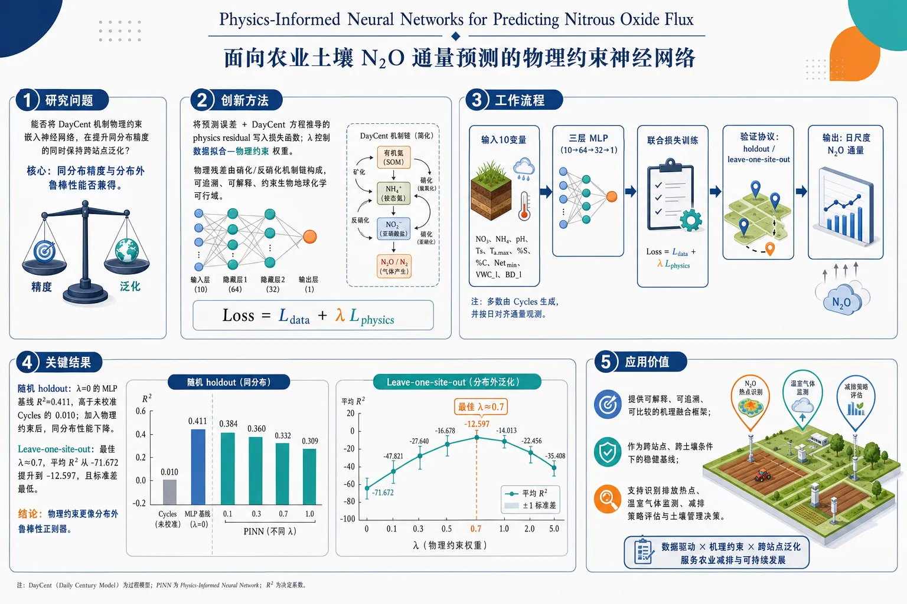
研究问题能否将 DayCent 机制物理约束嵌入神经网络，用于更准确预测农业土壤 N₂O 通量，并在跨站点场景下保持泛化能力？核心要解决的是：同分布精度与分布外鲁棒性能否兼得。创新方法提出基于 MLP 的 Physics-Informed Neural Network：把预测误差与 DayCent 家族方程推导出的 physics residual 共同写入损失函数，用 λ 控制“数据拟合—物理约束”权重。Aha 点在于：物理残差不是泛泛正则，而是由硝化/反硝化机制链构成的可追溯约束，能把模型拉回生物地球化学可行区域，尤其提升跨站点鲁棒性。工作流程输入 10 个变量（NO₃、NH₄、pH、Ts、Ta,max、%S、%C、Netₘᵢₙ、VWCₗ、BDₗ），其中大部分由 Cycles 生成，通量按日尺度对齐；送入三层 MLP（10→64→32→1）；训练时同时最小化数据损失和 DayCent 物理损失；通过 holdout validation 与 leave-one-site-out 两种协议评估；最终输出 N₂O 日通量预测。关键结果在随机 holdout 中，λ=0 的 MLP 基线达到 R²=0.411，远高于未校准 Cycles 的 0.010；加入物理约束后，同分布性能下降。相反，在 leave-one-site-out 中，物理约束显著提升跨站点表现与稳定性，最佳 λ≈0.7，平均 R² 从 -71.672 提升到 -12.597，标准差也最低。说明物理约束更像“分布外鲁棒性正则器”。应用价值为农业 N₂O 通量预测提供了一种可解释、可追溯、可比较的机理融合框架，可作为跨站点、跨土壤条件下的稳健基线。它有助于更可靠地识别排放热点，为温室气体监测、减排策略评估和土壤管理决策提供支持。第一部分：核心概览
这篇工作把Physics-Informed Neural Networks (PINNs)引入N₂O通量预测，并将物理约束从通用酶动力学改为DayCent家族机制方程可追溯残差，在4个美国农业站点、8,271条日尺度观测上验证。核心贡献不在单纯提升平均精度，而在于揭示：physics residual会牺牲同分布拟合，却能在leave-one-site-out情境下显著增强鲁棒性，形成“in-distribution accuracy vs. out-of-distribution robustness”的可量化权衡。这使 PINN 从概念性应用推进到可比较、可追踪、可解释的生物地球化学建模框架。
---
第二部分：结构化快速回顾
《Physics-Informed Neural Networks for Predicting Nitrous Oxide Flux》（None，）
- 背景：N₂O 是第三大人为温室气体和主导臭氧消耗物质，农业贡献超过 70%；静态箱测量昂贵且空间代表性差，传统过程模型和常规 ML 都难以稳定泛化。
- 方法：构建一个MLP-based PINN，损失函数由数据损失与基于 DayCent 方程链的physics loss组成，系统扫过不同 λ。
- 结果：在 holdout validation 中，λ=0 的 MLP 基线均值 R²=0.411，显著优于 Cycles 的 0.01；但 physics constraint 增大时同分布性能下降。
- 讨论：在 leave-one-site-out 中，physics constraint 反而提升性能与稳定性，最佳约 λ=0.7；说明物理约束更像跨站点鲁棒性正则化而非通用精度增益器。
- 局限：输入几乎全为 Cycles-simulated，未用 collocation points，物理残差依赖固定常数，且 DayCent 方程与 Cycles 输入存在模型谱系不一致。
- 结论：PINN 在 N₂O 预测中展示出明确的“准确性—泛化性”权衡；对地理分布外站点，物理约束可作为保底机制。
---
第三部分：逐章节冷凝解析
1 Introduction
N₂O 的气候与臭氧层意义极高
- N₂O 被放在第三大人为温室气体的位置，仅次于 CO₂ 和 CH₄，同时还是 21 世纪“the dominant ozone-depleting substance emitted”。
- 排放自 1980 年以来增长 40%，GWP≈273 倍于二氧化碳，大气寿命≈117 年。
- 农业过程贡献超过 70% 的排放。
- 关键原句：*"Nitrous oxide (N 2 O) is the dominant ozone-depleting substance emitted in the 21st century"*；*"More than 70% of nitrous oxide emissions occur as a result of agricultural processes."*
直接测量困难且代表性不足
- 静态箱仍是最常见的农业土壤 N₂O 通量测量法，但单箱覆盖面积小，难以代表异质景观。
- 排放具有明显的episodic 特征，受降雨、施氮等事件驱动，时空波动极大。
- 自动箱昂贵，人工箱劳动密集。
- 关键原句：*"direct measurement of N 2 O flux emissions is very challenging"*；*"individual chambers typically measure emissions over small plot-scale areas"*；*"soil nitrous oxide emissions are inherently episodic"*。
过程模型与传统机器学习都存在迁移瓶颈
- DayCent 和 Cycles 等过程模型需要大量站点特异校准，跨地点可移植性弱。
- DayCent 对 N₂O 的估计被明确指出表现不佳，尤其在高排放“hot spots”时系统性低估。
- 传统 ML（如 Random Forest）虽有早期潜力，但同样难以捕捉复杂生物地球化学机制，也难以超出训练域泛化。
- 关键原句：*"process-based models generally struggle to accurately capture the complex soil biogeochemical processes"*；*"traditional machine learning models similarly struggle to capture the complex biogeochemical processes"*。
PINN 进入 N₂O 预测的动机与前作缺陷
- PINN 的核心是把预测误差与物理约束同时放进 loss。
- 先前唯一已知的 N₂O PINN 尝试使用通用 Michaelis-Menten 动力学，数据仅 2,246 条、来自两个地理相近的中西部站点，且没有 leave-one-site-out 与过程模型基线比较。
- 当前工作将 residual 改写为DayCent 机制方程链，数据扩展到 8,271 条、4 个地理分离站点，并以未校准 Cycles作对照。
- 关键原句：*"The application of Physics-Informed Neural Networks (PINNs) to predicting N 2 O flux emissions is largely underexplored."*；*"we derive our physics residual from the mechanistic equations underlying the DayCent family of process-based models"*；*"train and evaluate on 8,271 daily observations across four geographically distinct US sites"*。
---
2 Methodology
#### 2.1 PINN Background
损失函数由数据项与物理项叠加
- 核心形式：(L=Ldₐₜₐ+łambdaLₚₕyₛᵢcₛ)。
- λ 是物理损失权重超参数，控制 data 与 physics 的折中。
- 数据损失是预测值相对观测值的 MSE。
- 物理损失是预测值相对 DayCent 方程给出的“physics-predicted”值的 MSE。
- 关键原句：*"PINNs are neural networks whose loss functions contain two components: the data loss function ... and the physics loss function"*；*"the weight of the physics loss residual"*。
物理损失并非一般约束，而是可计算的方程残差
- 物理项不是抽象正则，而是把神经网络输出与由方程系统推导出的 (tildeφ_N₂O) 对齐。
- 这使模型约束直接嵌入生物地球化学机理。
- 关键原句：*"the physics loss is calculated as the mean-squared error ... relative to the values predicted by our DayCent-derived equations."*
#### 2.2 Physics Loss Residual
残差来源于 DayCent/Nitrogen Trace Gas Submodel 的文献链
- 残差基础方程来自 Parton et al. (1996, 2001)、Del Grosso et al. (2000)，并补充 Hartman and Parton (2019)。
- 说明 DayCent 版本不断演化，采用的并非“唯一真理”，而是与特定版本对应的一组可追溯公式。
- 关键原句：*"drawing upon three primary papers, which form the fundamental basis of the Nitrogen Trace Gas Submodel of DayCent"*；*"DayCent is a constantly evolving process model"*。
硝化与反硝化两条路径共同决定 N₂O
- 硝化（nitrification）：
- (φNO_₃=Netₘᵢₙḑot K₁ + Kₘₐₓḑot NH₄ ḑot Fₙ₍Tₛ₎ḑot Fₙ₍WFPS)ḑot Fₙ₍ₚH))
- 其中 K₁=0.20、Kmax=0.10。
- N₂O 来自硝化的分量：(φ_N₂O,nit=K₂ḑotφNO_₃)，K₂=0.02。
- 反硝化（denitrification）：
- 总氮气通量 (φN,dₑₙ=min(φₘₐₓ(NO₃₎,φₘₐₓ(CO₂₎₎ḑot F_d(WFPS))。
- 氮气/一氧化二氮比：(RN_₂/N_₂O=Fᵣ₍NO₃/CO₂₎ḑot Fᵣ₍WFPS))。
- 反硝化产生的 N₂O：(φ_N₂O,den=φN,dₑₙ/(1+RN_₂/N_₂O))。
- 最终 physics-predicted flux：
- (tildeφ_N₂Oᵢ=αₘ^₂→ ₕₐḑotφ_N₂O,nitᵢ+φ_N₂O,denᵢ)，其中面积单位换算常数为 10⁴。
- 关键原句：*"the equations for nitrous oxide flux as a result of nitrification"*；*"the equation for total nitrogen gas fluxes ... as a result of denitrification"*；*"the ratio of N 2 to N 2 O gases produced from denitrification"*。
固定常数和 WFPS 构成物理约束的脆弱点
- WFPS（water-filled pore space）仍广泛使用，但被明确视为“非理想”代理变量。
- 固定常数 K₁、K₂、Kmax 被描述为“widely accepted but nonetheless flawed simplifications”。
- 这直接解释了 physics residual 的能力边界：它提供的是粗粒度生物地球化学偏置，不是高保真机理模拟。
- 关键原句：*"the use of water-filled pore space (WFPS) as a factor in N 2 O production is generally considered non-ideal at best"*；*"widely accepted but nonetheless flawed simplifications"*。
附录还包含更多方程
- 还有一组方程未在正文展开，存放于 Section A.1。
- 关键原句：*"The other equations we used, as well as their origins in the research literature, can be found in Section A.1."*
#### 2.3 Dataset
输入变量共 10 个
- 输入特征包括 NO₃、NH₄、pH、Ts、Ta,max、%S、%C、Netₘᵢₙ、VWCₗ、BDₗ。
- 大多由 Cycles 直接模拟，只有 pH 为静态站点级测量。
- 关键原句：*"The following table is an exhaustive list of the 10 input variables we used."*
数据来自 4 个站点，共 8,271 条日尺度记录
- 站点包括：
- Ames, IA 附近农田
- KBS GLBRC, Hickory Corners, MI（G1–G4）
- Kelly North, Ames, Iowa State Research Farm
- Cook Agronomy Farm, No-till / AmeriFlux US-RC1（NT、CT）
- 总量 8,271 条，站点分布极不均衡：
- Site 2：6,468
- Site 1：435
- Site 3：224
- Site 4：1,144
- 关键原句：*"Our dataset consists of data drawn from four sites"*；*"constituting 6,468 of 8,271 points, or 78.2% of our entire dataset."*
测量与处理方式尽量统一
- 亚日尺度通量被聚合为日尺度，与 Cycles 的时间步长一致。
- 有重复地块时取平均，因为 Cycles 不模拟 replication。
- 多海拔测点只保留最高海拔数据，以匹配一维模型结构。
- 对需要站点级值但只给层级值的变量，采用 第2与第3土层按厚度加权平均。
- 关键原句：*"Sub-daily measurements were aggregated to daily values to match the daily time step of the Cycles model."*；*"we opted to go with the more cohesive, consistent approach of using entirely Cycles-simulated data."*
全 Cycles-simulated 输入是有意选择，不是补缺权宜
- 这样做保证每个时刻输入向量是jointly realizable state，即真实土壤中可能共存的状态。
- 若混用观测与模拟值，会把“地理站点差异”和“数据来源差异”混在一起，导致 leave-one-site-out 结果不可解释。
- 关键原句：*"This residual is only physically meaningful if the input vector at each timestep is a jointly realizable state"*；*"augmenting the DSFAS measured data with simulated data would confound provenance with geographic site identity."*
#### 2.4 Model Architecture & Training
模型是标准三层 MLP
- 结构为 10 → 64 → 32 → 1。
- 激活函数 ReLU，前两层后加 dropout p=0.3。
- 优化器为 Adam，学习率 0.001。
- 所有损失均采用 MSE。
- 关键原句：*"We use PyTorch to implement a three-layer MLP (10→64→32→1), with ReLU activation and dropout (p=0.3)"*。
训练策略强调防过拟合与重复性
- early stopping patience=20。
- 结果取 10 个随机种子（41–50） 的均值，除非另有说明。
- 关键原句：*"Our findings ... were calculated as the mean across ten random seeds (41 through 50)"*。
两种验证协议对应两类泛化问题
- Holdout validation：随机 80/20 划分，再把训练集内部再切 80/20 作训练/验证。
- Leave-one-site-out validation：拿 Site 4 作测试，因为它地理和土壤特征最不同，构成更严格的跨站泛化检验。
- 关键原句：*"we use data from Site 4 as our testing data, since Site 4 is most distinct from the rest of our dataset"*。
---
3 Results & Discussion
#### 3.1 Model Performance Relative to Cycles
MLP 明显优于未校准 Cycles
- 在 seed 41、λ=0 的 holdout setting 下，整体 R²=0.423；Cycles 仅 R²=0.010。
- 即便最差配置 λ=1，均值 R²=0.090，仍接近比 Cycles 高一个数量级。
- 关键原句：*"our baseline model (λ = 0) outperformed Cycles dramatically for every site"*；*"with Cycles’ mean of R²=0.01"*。
站点表现强烈受训练数据量影响
- Site 2 是训练样本最多的站点，测试 R²=0.490，表现最好。
- Site 1 和 Site 4 的测试 R² 比 Site 2 低超过 0.15。
- 具体表格：
- Site 1: Train 0.228, Test 0.264, Cycles Test -0.407
- Site 2: Train 0.490, Test 0.490, Cycles Test 0.181
- Site 3: Train 0.645, Test -0.299, Cycles Test -0.829
- Site 4: Train 0.329, Test 0.333, Cycles Test -0.259
- 关键原句：*"our model performed best on Site 2, for which it had the most training data by a wide margin."*
Site 3 的极低 R² 来自单个离群点
- 2006 年 7 月下旬附近，模型预测峰值接近 100 g N ha⁻¹ d⁻¹，观测约 30 g N ha⁻¹ d⁻¹。
- 由于 R² 对大误差平方惩罚，该点显著拉低指标。
- 删除该离群点后，Site 3 的测试 R² 从 -0.299 升至 0.518。
- 关键原句：*"a single sufficiently large prediction error can dominate the metric"*；*"When this outlier is removed, Site 3 test R² jumps from −0.299 to 0.518"*。
高排放热点与背景通量都难预测
- Site 2 的时序显示：Cycles 对峰值普遍低估接近一个数量级；MLP 更接近事件发生时点，但仍低估峰值幅度。
- Site 1 上，两种方法都未能抓住大部分 hotspots。
- 关键原句：*"Both our model and Cycles struggled with N 2 O’s characteristic pattern of near-zero background emissions punctuated by sudden, volatile hotspots."*
#### 3.2 Physics Residual: In-Distribution vs. Out-of-Distribution Performance
同分布测试中，物理约束持续损害性能
- 在 holdout validation 中，所有测试 λ 下 physics constraint 都让性能下降。
- λ 越大，性能越差，且 seed 间标准差越大，说明稳定性也变差。
- 关键原句：*"physics constraints consistently hurt model performance across all tested values of λ"*；*"as λ increases, the mean standard deviation across the ten seeds increases"*。
跨站点测试中，物理约束反而提升性能与稳定性
- 在 leave-one-site-out 中，所有 R² 都为负，但 λ 增大使均值 R² 上升、标准差下降。
- 最佳点在 λ=0.7：均值 R²=-12.597，优于 λ=0.00 的 -71.672。
- 标准差在 λ=0.7 时最低，为 11.281。
- 关键原句：*"physics constraints consistently improve out-of-distribution performance, peaking at λ = 0.7"*；*"a substantial improvement from the MLP baseline λ = 0.00, where mean R² = -71.672"*。
物理常数的粗糙性解释了这种两难
- 文中明确指出，WFPS 等变量和固定常数 K1=0.20, K2=0.02, Kmax=0.10 都是广泛接受但粗糙的简化。
- 这些常数太粗，不足以提升局部精度；但在陌生土壤条件下，又足够把模型拉回到生物地球化学可行区域。
- 关键原句：*"the biogeochemical constants themselves are the source of uncertainty"*；*"physics constraints sacrifice in-distribution accuracy for out-of-distribution robustness"*。
Site 4 的土壤差异构成最难泛化场景
- Site 4 的平均 pH=5.2，平均 clay=21.0%、sand=11.3%。
- 其余 3 个站点平均 pH=7.5，clay=12.3%、sand=61.4%。
- 这种显著土壤差异使 Site 4 成为最强的地理外推测试。
- 关键原句：*"the soil characteristics of our left-out test site, Site 4, are substantially different from those of our other 3 training sites."*
过程模型与 PINN 都受制于 N₂O 机理本身的不完备
- 文中把困难归因于：过程模型对驱动因子掌握较好，但对“被循环的氮最终以多少比例排放成 N₂O”把握不足。
- 这意味着 physics residual 并不能消除机理不确定性，只能在不确定性上施加合理先验。
- 关键原句：*"process-based models accurately represent the drivers of N 2 O emissions ... but systematically struggle to predict the fraction of cycled N ... that actually gets emitted as N 2 O."*
---
4 Conclusion
总体结论是“准确性与鲁棒性分离”
- Holdout 中平均 R²=0.411，显著优于 Cycles 的 0.010。
- Leave-one-site-out 中所有 λ、所有 seed 都是负 R²，说明地理泛化仍很难。
- 最佳 holdout 在 λ≈0，最佳 LOSO 在 λ≈0.7，表现出物理约束对 OOD 鲁棒性的帮助。
- 关键原句：*"physics constraints sacrifice in-distribution accuracy for out-of-distribution robustness"*。
方法论弱点被明确列出
- 除 pH 和测量 N₂O 外，其余输入全为 Cycles-simulated，上限受 Cycles 偏差约束。
- 没有使用 collocation points，物理约束只在观测点上施加。
- 物理残差依赖固定常数，难以适应异质站点。
- 输入来自 Cycles，而方程来自 DayCent，存在模型谱系不一致。
- 数据分布高度不均衡，Site 2 占 78.2%。
- 关键原句：*"This work has notable methodological weaknesses"*；*"our data was Cycles-simulated"*；*"our paper does not make use of collocation points"*。
后续方向明确
- 可尝试不同架构，如 PINNsformers、S-Pformers。
- 可尝试不同过程模型和 residual，例如直接实现 Cycles equations。
- 更大、更地理多样的数据集可检验“物理残差提升 OOD 鲁棒性”这一假设。
- 关键原句：*"Future work should experiment with different model architectures beyond MLPs"*。
---
第四部分：深度理解与语言支持
1) 关键术语解析
1. Physics residual
- 在这里不是抽象“物理误差”，而是由 DayCent 机制方程链算出的预测通量与神经网络预测之间的 MSE。
- 学术含义：把生物地球化学知识转化为可优化的约束。
- 微妙差别：与“physics loss”接近，但 residual 更强调方程残差的可计算性与可追溯性。
2. Leave-one-site-out validation
- 不是随机切分，而是把一个站点整站留作测试。
- 学术含义：检验模型是否能跨地理、土壤、管理制度迁移。
- 微妙差别：比普通 holdout 更接近domain shift，难度高很多。
3. In-distribution / out-of-distribution
- In-distribution：测试数据与训练数据分布相近。
- Out-of-distribution (OOD)：测试数据来自不同分布，如不同站点土壤性质。
- 学术含义：一个模型可以在同分布下高分，但在 OOD 场景崩溃。这里的核心发现就是physics constraints 主要提升 OOD 鲁棒性。
4. Uncalibrated Cycles simulation
- Uncalibrated 意味着没有针对该数据集做站点特异参数拟合。
- 学术含义：是更严格的过程模型基线，反映“原生机理模型”的默认表现。
- 微妙差别：和“calibrated process model”相比，难度更高，也更能暴露模型的原始偏差。
5. Hot spots / hot moments
- 指 N₂O 排放中短时、局地、突发的高峰事件。
- 学术含义：N₂O 不是平滑连续变量，而是被事件驱动的稀疏峰值过程。
- 微妙差别：这类现象会严重伤害均方误差导向模型，因为极少数高峰主导损失。
2) 疑难查证与直观解释
为什么 physics constraints 会“伤害” holdout，却“帮助” OOD？
- 训练集内，数据本身已经能更准确地拟合本地模式；如果物理方程只给出粗糙、固定、跨站点不变的约束，就会把模型从更优的局部解拉开。
- 跨站点时，训练数据中的经验关联失效，模型容易自由漂移；这时哪怕粗糙的机理先验，也能限制输出不至于完全失真。
- 这就是典型的bias-variance / prior-regularization tradeoff：在本地牺牲一点拟合，换取远距离泛化的稳定性。
为什么 Site 3 的 R² 会被一个点毁掉？
- R² 由平方误差驱动，单个大偏差的权重远高于普通误差。
- 若模型在一个峰值点把 30 预测成 100，误差平方非常大，足以压垮整段时序的 R²。
- 所以“整体差”与“单点离群”在这里几乎无法区分，必须结合时序图看。
为什么选择全部 Cycles-simulated 输入而不是混合观测值？
- 混合输入会制造一个从未真实共存过的土壤状态向量。
- 物理残差要求输入代表一个可实现的联合状态，否则方程链的输出本身就失去物理意义。
- 同时，混合来源还会把“哪个站点数据缺失”与“哪个站点更难泛化”缠在一起，破坏实验解释性。
---
第五部分：创新评估与关联
新颖性主要落在四点
- 物理约束来源更严格
- 先前已知 PINN-N₂O 尝试使用通用 Michaelis-Menten 形式；这里改成DayCent 文献链，可追溯到具体过程模型方程。
- 解决了“物理项太泛、不贴近土壤氮循环”的问题。
- 数据规模与异质性更高
- 从 2,246 条、2 个相近中西部站点扩展到 8,271 条、4 个地理分离站点。
- 这把 PINN 从“小样本局部演示”推进到更接近真实跨域应用的场景。
- 基线更强、比较更公平
- 不只和普通 ML 比，还与未校准 Cycles比较。
- 这直接回答了“PINN 是否只是比弱基线强”的问题。
- 结论不是单纯提精度，而是识别机制性权衡
- 最重要的新增认识是：physics residual 不是普适性能加速器，而是 OOD 鲁棒性约束器。
- 这一点在过去 2–5 年的相关工作里尤其关键，因为很多 PINN/Nature-inspired 模型默认“加物理一定更好”，这里给出了清晰反例与条件性收益。
相较近年相关工作解决的具体问题
- 解决了物理项过于抽象的问题：从 generic kinetics 转为 mechanistic, literature-traceable residual。
- 解决了只看随机划分、不看跨站泛化的问题：加入 leave-one-site-out。
- 解决了只比神经网络、不比过程模型的问题：加入 Cycles 基线。
- 但没有彻底解决 OOD 仍为负 R²、输入仍高度依赖 Cycles、固定常数无法自适应站点差异 这三个根问题。
如果需要，可以继续把这篇论文整理成一份“可直接用于组会汇报的 PPT 大纲”，或把每个公式逐一拆成“变量—生态学含义—建模作用”三列表。
-
11
📊 含图深析
📄 摘要：作者用 PINN 在无初值条件下、仅凭稀疏噪声观测恢复引力三体问题的周期轨道，甚至找回训练数据中没有出现的轨道族。方法采用二阶 ODE 形式、固定频率 Fourier 特征和自适应细化策略。
📖 英文原文
arXiv:2607.23501v1 Announce Type: cross Abstract: Locating periodic solutions of chaotic dynamical systems normally requires an initial guess close enough to the target orbit for numerical continuation or gradient-based search to converge. We show that Physics-Informed Neural Networks (PINNs) trained on sparse, noisy observations emphwithout initial conditions recover periodic orbits of the gravitational three-body problem, including orbit families absent from the training data. The method rests on a second-order ODE formulation, fixed-frequency Fourier features, percentile-based adaptive refinement, and a trainable scaling parameter, each validated on forward problems. Across two 100-seed ensembles, 23--25% of runs converge to families not present in the training data. We then ask what determines which family emerges. Two ḩi² tests give a consistent answer: changing the training data source significantly shifts the distribution of recovered families (p < 0.001, Cramér's V = 0.339), whereas switching between the two initialization distributions tested does not (p = 0.620, V = 0.094). The random seed selects which family a given run recovers; the emphdistribution the weights are drawn from does not shift the aggregate frequencies, but the training data does. The evidence is empirical: we do not characterize the loss landscape analytically, and PINNs remain slower than conventional integrators on well-posed initial-value problems. What the experiments establish is that the recovered orbits are verifiable rather than merely plausible: the identified ones refine to genuine periodic solutions, a network trained on Lagrange data recovers the figure-eight choreography (Li--Liao class I.A.1, matched to seven significant digits in T^*), and one trained on figure-eight data recovers a Broucke--Hadjidemetriou--Hénon orbit closing to δ_T < 10⁻⁹.
💡 亮点：这篇工作显示 PINN 不只是拟合轨迹，还能在引力三体这种混沌系统里“反求”周期轨道族。作者用二阶 ODE 约束、固定频率 Fourier 特征和自适应重采样，在无初值条件下从稀疏噪声数据中恢复出训练集中未见的轨道。
📖 展开分析 + 配图
研究问题在引力三体问题中，能否不提供准确初始条件，仅凭稀疏且带噪观测数据与物理方程残差，自动发现并识别真实的周期轨道家族；进一步，哪一类因素真正决定模型收敛到哪种轨道家族。创新方法将 PINN 从前向求解器改造成“周期轨道发现器”：取消初值输入，改用二阶 ODE 残差直接约束三体运动；加入固定频率 Fourier 特征增强周期表达；用分位数版 RAR 只在 60%–95% 高残差区加点，避开奇异离群点；再引入可训练残差缩放参数 C，让物理残差与数据项自动平衡。核心 Aha 点是：不是先猜轨道再拟合，而是让网络在多盆地损失面中靠物理约束自己“找轨道”。工作流程输入三体问题的稀疏噪声观测或少量轨道样本，先对时间做无量纲化与 Fourier 特征映射；网络以二阶运动方程为约束，联合优化数据拟合损失、物理残差损失和可训练缩放参数 C；训练中用分位数 RAR 持续补充高价值 collocation 点；得到的轨道输出再做最小二乘精炼，并用闭合误差、共线/等边几何指标及尺度不变量 T*、L* 识别所属轨道家族；最终输出可与已知目录对齐的真实周期解。关键结果在 100-seed 统计实验中，约 23%–25% 的运行收敛到训练集中未出现的轨道家族；Lagrange 数据可恢复 figure-eight，figure-eight 数据可恢复 BHH 轨道；χ² 检验显示轨道家族选择主要受训练数据来源影响，p < 0.001，而初始化分布影响不显著；精炼后轨道闭合误差可达 δT < 10⁻⁸，部分结果匹配到七位有效数字；方法消融表明二阶 ODE、Fourier 特征、分位数 RAR 和可训练 C 都带来显著提升。应用价值为传统上依赖“好初值”的周期轨道搜索提供了一条无初值、可统计验证的发现路径，可用于从有限噪声观测中识别天体力学中的未知周期轨道家族；同时给出一套可复用的 PINN 改造方案，适用于其他多解、强非线性、带奇异性的逆问题，帮助把“看起来像解”升级为“可精炼、可对齐目录的真解”。第一部分：核心概览
这篇工作把 PINNs 从“已知初值的前向求解器”推进到“无初值、稀疏噪声观测下的周期轨道发现器”。核心贡献有三层：一是证明在三体引力问题中，PINN 能从有限噪声数据恢复真实周期轨道，甚至跨家族发现训练集中未出现的轨道；二是用两组 χ² 检验 证明轨道家族的选择主要由训练数据来源而非权重初始化分布控制；三是给出一组可复现的工程改造——二阶 ODE、Fourier features、分位数 RAR、可训练残差缩放——使前向问题和逆问题都可稳定训练。其位置不在理论证明，而在“可验证的科学发现”层面：发现结果能与已发表目录精确对齐。
---
第二部分：结构化快速回顾
《Physics-Informed Neural Networks for Discovering Periodic Orbits in the Gravitational Three-Body Problem》（None，）
背景：三体引力系统非可积，周期轨道极其丰富，但传统数值延拓和梯度搜索都依赖接近目标轨道的初值。
方法：用 PINN 在无初值、稀疏噪声观测下拟合三体运动方程；引入二阶 ODE、固定频率 Fourier 特征、分位数 RAR、可训练残差缩放参数。
结果：在 200 个种子中，约 23–25% 的运行收敛到训练数据中不存在的轨道家族；Lagrange 数据可恢复 figure-eight，figure-eight 数据可恢复 BHH 轨道。
讨论：不同轨道家族的出现由训练数据源显著驱动，而不是权重初始化分布；随机种子只是在多模态损失面上选择不同盆地。
局限：未对损失面做解析刻画；未证明多盆地结构的理论存在；在规则初值问题上，PINN 仍慢于传统积分器。
结论：PINN 能在缺乏准确初值时发现并验证周期轨道，且恢复结果不是“看起来像”，而是能精炼为真正的周期解。
---
第三部分：逐章节冷凝解析
Abstract
- 无初值发现周期轨道：稀疏噪声观测、没有初始条件时，PINN 仍能恢复三体问题的周期轨道，甚至恢复训练数据里没有的轨道家族。关键表述是 *"trained on sparse, noisy observations without initial conditions recover periodic orbits"*，并明确包含 *"orbit families absent from the training data"*。
- 方法模块被逐一验证：二阶 ODE、fixed-frequency Fourier features、percentile-based adaptive refinement、trainable scaling parameter 都在前向问题中验证。摘要给出的是整套方法链条，而不是单一技巧。
- 发现比例有统计量级：两组 100-seed ensembles 中，*“23–25% of runs converge to families not present in the training data”*，说明跨家族发现不是个别异常，而是稳定现象。
- 决定因素被分离：两组 χ² tests 表明训练数据源显著改变家族分布，*“p < 0.001, Cramér’s V = 0.339”*；初始化分布不显著，*“p = 0.620, V = 0.094”*。
- 结果可验证：恢复的轨道可精炼到真实周期解，且能和已知目录对齐：Lagrange 数据恢复 figure-eight choreography，并且 *“matched to seven significant digits in T*”*；figure-eight 数据恢复 Broucke–Hadjidemetriou–Hénon orbit，*“closing to δT < 10⁻⁹”*。
---
1 Introduction
- 问题定义是“搜索”而不是“求解”：三体周期轨道的困难不在积分，而在找到足够接近目标的初值。核心句是 *“Finding periodic orbits ... is a search problem”*，而传统方法 *“require an initial guess close enough ... for the iteration to converge”*。
- PINN 被改造成逆问题工具：删除初始条件约束后，问题变成从噪声数据和物理残差里同时推断“跟哪条轨道”和“如何沿轨道走”。关键句是 *“with no initial conditions supplied”* 与 *“the network must infer both which orbit to follow and how to follow it”*。
- 解不是唯一的：同样的数据、同样超参数、不同随机种子，PINN 会收敛到物理上不同的家族：Euler collinear, Lagrange equilateral, BHH。对应句子是 *“solutions are not unique”*。
- 核心科学问题转化为统计问题：进一步追问“哪个因素控制家族选择”，并通过两个 χ² tests 分离种子、采样分布、训练数据。
- 三体系统适合作为试金石：理由有三点：非可积、已知目录丰富、存在可用于识别的尺度不变量 T* 与 L*。原句是 *“ideal testbed”*，因为 *“many orbits to be found”* 且 *“catalogs against which a claimed discovery can be checked”*。
- 与相关工作区分明确：现有 PINN 相关研究多在 PDE、边界条件或前向代理模型；这里是 *“inverse problem—training on sparse, noisy observations without initial conditions”*，且关注 *“multi-basin structure”*。
- 贡献三点：
1) 无初值发现周期轨道；
2) 用 χ² 识别控制因素是训练数据；
3) 二阶 ODE、Fourier features、分位数 RAR、可训练 C 构成方法支撑。
- 范围声明很严格：不解析损失面，不声称比常规积分器更优，结论限定为 *“PINNs can locate periodic orbits when no accurate initial guess is available”*。
---
2 Mathematical formulation
#### 2.1 Equations of motion
- 三体平面引力方程：三点质量 (mᵢ) 在平面内运动，满足牛顿第二定律，方程写成 *“ddotbmrᵢ=-Gsum ...”*。
- 平面运动的合理性：若初始位置与速度共面，力始终在该平面张成的空间内，因此平面是动力学不变子空间。
- 六个二阶 ODE：将向量方程拆成 (xᵢ,yᵢ) 分量，得到 6 个二阶方程。
- 距离定义：(rᵢⱼ=sqrt(xᵢ₋ₓⱼ₎²⁺⁽yᵢ₋yⱼ₎²)。
##### 2.1.1 Numerical regularization of close encounters
- 软化避免奇异：训练中可能出现 (rᵢⱼ→0)，因此把 (rᵢⱼ) 替换为 (tilde rᵢⱼ=sqrtrᵢⱼ²⁺ǎrepsilon)。
- 固定软化参数：(ǎrepsilon=10⁻⁹)，有效软化长度约 (3.2×10⁻⁵)。
- 作用范围：保证损失和梯度始终有限，且在收敛解上不影响结果，因为收敛后 *“rᵢⱼ gg sqrtǎrepsilon”*。
##### 2.1.2 First-order formulation
- 标准做法是升阶成一阶系统：引入速度变量后，三体系统变成 12 个一阶 ODE。
- 但会带来残差不平衡：速度定义残差与加速度残差量级差异很大，形成 *“imbalanced multi-objective optimization problem”*。
- 二阶系统更均衡：二阶形式只剩 6 个加速度残差，尺度更接近，因此更适合 PINN 优化。
##### 2.1.3 Non-dimensionalization
- 无量纲化标准：设 (G=1)，以最大质量 (M) 和长度尺度 (L) 定标，得到特征时间 (Tcₕₐᵣ=sqrtL³/(GM))。
- 等质量额外时间缩放：为了适配 tanh 的有效输入范围 ([-2,2])，还把轨道周期重新缩放。
- 尺度不变性：三体方程满足 (bm r→αbm r, t→α³/²t, bm v→α⁻¹/²bm v)。
- 物理含义：只有初值和周期的数值改变，方程形式保持不变。
#### 2.2 Physics-Informed Neural Networks
- PINN 的基本形式：用神经网络 (mathcal N(t;θ)) 近似解 (bm u(t))，损失为
(mathcal L = wᵣmathcal Lᵣ + wᵢcmathcal Lᵢc + w_dmathcal L_d)。
- 三类损失：
- residual loss：方程残差；
- initial-condition loss：初值约束；
- data-fitting loss：观测拟合。
- 二阶残差显式形式：(mathcal Lᵣ) 在 (Nᵣ) 个 collocation points 上对 3 个天体的 (x,y) 加速度残差求平均。
- 自动微分：二阶导数 (ddot xᵢ^mathcal N,ddot yᵢ^mathcal N) 通过自动微分获得。
#### 2.3 Hard enforcement of initial conditions
- 硬约束替代罚项：相比把初值作为软惩罚，直接用输出变换
(bm y_φ(t)=bm y₀₊ₜbm u₀₊ₜ²mathcal N(t;θ))。
- 精确满足初值：由构造可得 (bm y_φ(0)=bm y₀) 且 (dotbm y_φ(0)=bm u₀)。
- 适用动机：引力系统中靠近碰撞时 (1/r²) 加速度巨大，软约束更容易失稳。
---
3 Methodology
#### 3.1 Network architecture and training
- 网络形态统一：全连接前馈网络。
- 激活函数分任务选择：轨道发现用 sin，前向问题用 tanh。
- 实现框架：DeepXDE + TensorFlow。
- 规模：隐藏层数 3–5 层，每层 64–128 个神经元；Euler 前向实验用 3×128。
- 训练流程：前向问题采用两阶段：Adam（学习率 (10⁻⁴)，(2×10⁵) 到 (3×10⁵) epochs）后接 L-BFGS（(1.5×10⁴) epochs）。
- 轨道发现的优化器：数据驱动实验用 AdamW。
- 参考解精度：`solveᵢᵥₚ`，`rtol=10⁻¹⁰`，`atol=10⁻¹²`。
- 统一设置：float64、collocation points 64、softening (10⁻⁹)、Glorot Uniform 初始化，除非特别说明。
#### 3.2 First-order vs. second-order ODE formulations
- 比较对象是残差结构：一阶系统有 12 个 residual terms，二阶系统只有 6 个。
- 一阶系统的病根是量纲差异：速度定义项和加速度项大小不同，优化器会偏向某些项。
- 二阶系统更稳定：所有残差都属于加速度项，量级更接近。
- 实验验证：附录 A.2 在其他超参数相同条件下验证。
#### 3.3 Fourier feature input transformation
- 应用场景是 figure-eight：三体等质量沿同一 lemniscate 轨迹运动，彼此存在 (T/3) 相位偏移。
- 输入映射：把时间 (t) 扩展成 7 维 Fourier 特征，包括 (sin(ømega t))、(o̧s(ømega t))、以及偏移 (2π/3) 的基频和二次谐波。
- 关键澄清：这些相位偏移不是独立信息，因为它们是原始 sin/cos 的线性组合；映射的秩是 5 不是 7。
- 真正起作用的是谐波：提升来自harmonics，不是相位编码本身。
- 定量结果：加相位偏移的 plain Fourier encoding 只带来 RMSE 约 2.7 倍变化，而完全去掉 Fourier features 会损失 三个数量级。
#### 3.4 Modified Residual-based Adaptive Refinement (RAR)
- 标准 RAR 的缺点：总是选 residual 最大点，容易在极端异常点过拟合。
- 改进流程：
- 在 10,000 个随机候选点上评估残差；
- 只保留第 60–95 百分位；
- 从中随机抽取 64 个点；
- 加入训练集并继续训练。
- 设计逻辑：
- 60th percentile 过滤掉已解决区域；
- 95th percentile 排除接近引力奇点的极端离群点。
- 实现细节：候选集只采样一次并复用；重新采样对结果没有明显影响。
- 效果定位：改善的是泛化，不是最佳训练误差。
#### 3.5 Trainable residual scaling parameter
- 核心问题：无初值且有观测数据时，PDE residual 梯度通常压过 data loss 梯度。
- 解决办法：引入可训练参数 C，把每个 residual 先除以 (C²) 再平方，相当于
(tildemathcal Lᵣ = mathcal Lᵣ / C⁴)。
- 初始化：(C₀₌₃)。
- 优化方式：与网络参数一起联合训练。
- 与既有方法的区别：不是外部调权重，也不是预先固定方程缩放，而是把缩放因子本身纳入学习。
- 单调性：(partial tildemathcal Lᵣ/partial C<0)，所以训练中 (C) 单调增大，残差权重逐渐下降，数据项影响逐渐上升。
---
4 Forward problem experiments
- 先做前向验证：先把 PINN 当作无外部数据的求解器，在已知初值条件下验证方法，再进入轨道发现任务。
- 两体问题基准：
- 网络：3×64；
- 结果：Kepler two-body problem 的 position RMSE 为 2.12×10⁻⁷。
- Euler 轨道上二阶形式优势显著：
- 最大位置误差从 1.28×10⁻¹ 降到 7.99×10⁻⁴；
- 约 160 倍改进。
- 原因是“一阶系统”的残差不平衡导致第三个静止体漂移。
- Lagrange 轨道上时间重标度有效：
- RMSE 改善约 45 倍；
- 固定 collocation + L-BFGS 时，训练损失只有 4.33×10⁻⁴，测试损失却是 1.31，出现 3–4 个数量级泛化鸿沟。
- 分位数 RAR 缩小泛化鸿沟：
- 改用 60–95 百分位采样后，训练与测试损失收敛到彼此 10% 以内。
- figure-eight 上 Fourier features 必要：
- 标准 PINN 失败，测试损失发散；
- 加 Fourier features 后 RMSE 达到 1.53×10⁻⁴。
- 能量守恒诊断：
- 一周期内能量误差约 0.02–3%；
- 这个误差指标独立于训练损失，因为守恒律没有被显式写进损失。
- Ablation summary：
- 二阶 ODE：Euler 最大误差提升约 160×；
- Fourier features：figure-eight 提升约 1600×；
- 分位数 RAR：Lagrange 约 3×；
- 可训练 C：Lagrange 数据驱动设置下约 23×。
---
5 Orbit discovery from sparse, noisy data
- 问题进入逆向阶段：去掉初值约束后，只给 稀疏、带噪观测，目标从“逼近已知轨道”变成“从候选周期解中选出一条”。
- 欠定性被明确强调：
- 只有 90 个样本、20% 噪声；
- 无限多条平滑曲线都能落在噪声带中；
- 真正的选择由 ODE residual 决定。
- PINN 与纯数据拟合的差异：纯监督模型没有物理机制选择“物理可行轨道”，而 PINN 的残差提供了这种选择机制。
- 缩放参数的重要性：早期训练阶段 residual 梯度压倒 data 梯度，因此 C 是让观测项真正起作用的关键。
- “发现” 的判定标准：
- PINN 输出先作为初值；
- 之后精炼到闭合误差 (δ_T<10⁻⁸)；
- 再用尺度不变周期识别到已知家族。
- “other” 不等于不周期：这些轨道也可能满足 (δ_T<10⁻⁸)，但无法对应任何已知目录，因此不计为 discovery。
#### 5.1 Orbit discovery without initial conditions
- 实验设置：
- 网络：3×64，sin 激活；
- 优化器：AdamW，(η=10⁻³)，weight decay = 0.004；
- 损失权重：(wᵣ₌₀.1, w_d=40)；
- softening (10⁻⁹)；
- 输出偏置 (bm bₒᵤₜ=(-0.2,0.2,0,0,0.2,-0.2))。
- 只改初始化分布，轨道家族就变：
- Glorot Uniform 单次运行：三体近似共线，(d₁₂+d₂₃approx d₁₃)，得到 Euler-type collinear orbits，体 3 近似静止于中心。
- Glorot Normal 单次运行：三体近似等边三角形，(d₁₂approx d₁₃approx d₂₃)，得到 Lagrange-type orbits。
- 单次运行不等于系统映射：这些是代表性单例，不应直接解释为“初始化分布决定家族”；真正的统计检验放在 5.2。
- 表 3 的具体数值：
- Glorot Uniform：总损失 2.19×10⁻¹，数据损失 2.14×10⁻¹，残差损失 4.50×10⁻³；
共线性指标 1.16×10⁻⁴；(d₁₂=0.345), (d₁₃=0.678), (d₂₃=0.334)。
- Glorot Normal：总损失 1.25×10⁻¹，数据损失 1.22×10⁻¹，残差损失 3.54×10⁻³；
等边性指标 1.03×10⁻²；(d₁₂=0.498), (d₁₃=0.491), (d₂₃=0.500)。
- 物理解释：损失函数允许多种近优解，因为 90 个噪声样本能兼容多条周期轨道；种子决定落入哪个盆地。
#### 5.2 Seed ensembles under two initialization distributions
- 统计验证设计：
- 每种初始化分布 100 个独立随机种子；
- 两组分别是 Glorot Uniform (GU) 与 Glorot Normal (GN)；
- 训练数据固定为 noisy Lagrange data。
- 训练设置与 5.1 不同：
- 网络 3×64，sin 激活；
- AdamW，学习率 10⁻⁴，weight decay 0.004；
- (wᵣ₌w_d=1)；
- 训练 4×10⁴ epochs，必要时再加 2×10⁴ epochs，学习率降到 10⁻⁵。
- 分类依据基于精炼轨道：
- 先对 PINN 输出做最小二乘精炼；
- 再在 5000 个点上评估几何判据。
- Euler / Lagrange 判据非常严格：
- Euler-type：共线性指标达到 O(10⁻¹⁶⁾；
- Lagrange-type：等边偏差达到 O(10⁻¹¹⁾。
- 超出几何判据的轨道用不变量识别：
- 用 (T^*=T|E|³/²) 与 (L^*=L_z|E|¹/²)；
- 与 BHH 目录匹配则记为 BHH-like；
- 与 Li–Liao 目录匹配则识别为对应家族，尤其 class I.A.1 就是 figure-eight。
- 识别声明很谨慎：
- BHH 只写作 “-like”，因为单个标量 (T^*) 不足以唯一确定轨道；
- figure-eight 的确认更强，因为 (T^*,L^*) 有闭式表达式。
##### 5.2.1 Glorot Uniform initialization (100 seeds)
- 总体分布：
- 71% 收敛到 Lagrange-type；
- 11% 收敛到 Euler；
- 12% 收敛到 BHH-like；
- 6% 属于 other。
- 跨家族发现是真实现象：训练数据是 Lagrange，但仍有 11% Euler、12% BHH-like，说明并非孤立异常。
- 表 4 的精确统计：
- Lagrange：count 71，mean loss 0.274，(T^*=6.664)，refine 7.30%；
- Euler：count 11，mean loss 0.483，(T^*=7.854)，refine 2.70%；
- BHH-like：count 12，mean loss 0.395，(T^*=7.327, 9.651, 11.817, 19.302)，refine 22.67%；
- Other：count 6，mean loss 0.474，(T^*=4.960, 7.218, 9.352, 9.686, 9.918)，refine 57.93%。
- 全部都真正闭合：所有精炼后的轨道都满足 (δ_T < 10⁻⁸)。
- Euler / Lagrange 的不变量可解析：
- Lagrange：(T^* = frac6π2³/² = 6.664324)；
- Euler：(T^* = frac5π2 = 7.853982)。
- 家族识别不等于成员识别：(T^*) 只能识别家族，不能告诉是该家族里的哪一条具体轨道；因此报告了 refinement distance。
- 精炼距离反映初始猜测质量：Lagrange 平均 7.30%，Euler 2.70%，BHH-like 22.67%，Other 57.93%。
---
第四部分：深度理解与语言支持
术语解析
- Inverse problem
不是直接从方程正向演化，而是从观测反推轨道/参数。这里的关键差别是：未知量不仅是状态轨迹，还包括“属于哪种周期家族”。
- Multi-basin structure
多个不同的吸引盆地对应不同物理解。这里不是普通“多个局部极小值”那么简单，而是不同极小值分别对应 Euler / Lagrange / BHH 等不同轨道家族。
- Scale-invariant period (T^*)
经过能量缩放后不依赖整体物理尺度的周期指标。它能识别轨道家族，但不能识别该家族内部的具体成员，因此适合作为“家族标签”，不适合作为“轨道身份证”。
- Residual-based adaptive refinement (RAR)
以残差大小自动加密 collocation points 的策略。标准版本偏向最大残差点，这里改成 60–95 百分位，避免把训练资源浪费在极端离群奇点附近。
- Hard enforcement
用构造性输出变换精确满足初值，不是通过罚项“尽量满足”。语义上更强，数值上更稳定。
疑难查证
- 为什么二阶系统比一阶系统更适合 PINN？
一阶化虽然是经典数值套路，但 PINN 的训练不是时间推进，而是同时最小化多个残差项。把速度定义项和加速度项混在一起，会让不同残差的尺度严重失衡。二阶系统只保留加速度残差，等于把优化目标压缩到更同质的空间里，梯度更平衡。
- 为什么 Fourier features 的关键不是相位偏移，而是谐波？
因为 (sin(ømega t + 2π/3)) 和 (o̧s(ømega t + 2π/3)) 只是原始 (sin(ømega t))、(o̧s(ømega t)) 的线性组合，信息冗余。真正新增的是 second harmonic，它帮助网络表达 figure-eight 的周期结构和对称细节。
- 为什么训练数据能决定轨道家族，而初始化分布不显著？
因为可行解集合里，数据本身已经对轨道家族施加了强约束；随机初始化更多只是决定从哪个局部盆地进入。100-seed 结果里，初始化分布变化没有显著性（*p = 0.620*），说明盆地的总体选择权重并不由权重抽样分布控制，而主要由数据内容控制。
- 为什么 (T^*) 可以识别家族，却不能识别成员？
对 Euler 和 Lagrange 这类中心构型的同一家族，不同偏心率、不同几何尺度的成员会共享同一个尺度不变量。也就是说，(T^*) 像“姓氏”，不是“名字”。
---
第五部分：创新评估与关联
创新性判断
- 相对过去 2–5 年相关工作的跃迁点在于：
- 相关 PINN 工作多处理 PDE、边界条件或前向 surrogate；这里直接做 无初值逆问题。
- 既往“多解”PINN 研究多在反应扩散或流体边界问题；这里进入更硬的 混沌天体力学，且目标是周期轨道家族发现。
- 不只“得到一个看上去合理的轨道”，而是把轨道 精炼到已知目录中的真实解，并报告匹配到 七位有效数字 甚至 (δ_T<10⁻⁹) 的闭合程度。
- 进一步用 χ² 检验 把“随机种子效应”与“训练数据效应”分开，得到明确的统计结论：训练数据源决定家族分布，初始化分布不决定。
- 方法层面不是堆叠技巧，而是围绕 PINN 在三体问题中的失衡、奇异性、周期对称性、泛化鸿沟做了针对性改造。
- 前人未解决的问题主要有三类：
- 没有初值时如何找到周期轨道；
- 如何证明找到的不是伪解，而是真正可精炼的周期解；
- 到底是初始化还是数据在控制多解选择。
- 这篇工作的独特性在于把三个问题同时回答：
发现、验证、归因，三者闭环。
---
提供材料在 5.2.1 之后截断，后续章节正文未出现在当前文本中。
-
12
📄 摘要：作者提出变分 boosting 框架，把 PINN 解表示为函数空间中的加和；每一阶段训练一个弱学习器，其收敛修正满足局域正交条件，可视为投影后的泛函梯度下降。该方法针对单体 PINN 的病态条件、谱偏置和优化不稳定。
📖 英文原文
arXiv:2607.23940v1 Announce Type: new Abstract: Physics-Informed Neural Networks (PINNs) solve differential equations by minimizing the residual of a nonlinear operator over a neural parameterization of the solution. However, monolithic PINNs often suffer from ill-conditioning, spectral bias, and optimization instability. We introduce a variational boosting framework in which solutions are constructed additively in function space. Each stage trains a weak learner whose converged correction satisfies a local orthogonality condition, equivalent to a projected functional gradient descent step onto the tangent space of the network's function manifold. Because each correction network is deliberately small, the restricted minimization admits full Newton or conjugate gradient updates, which are typically infeasible in large PINNs. The resulting method separates global nonlinear refinement into a sequence of well-conditioned subproblems while preserving the full variational structure of the operator. This framework provides a geometric interpretation of multi-stage PINNs as projected functional gradient descent and enables stable second-order optimization for nonlinear differential equations.
💡 亮点：变分 boosting 把原本单块式 PINN 拆成函数空间中的逐步加和：每个弱学习器只拟合当前残差，并通过局域正交条件保证修正方向可控。作者把它解释为投影泛函梯度下降，直接针对 PINN 的病态条件和谱偏置，适合做复杂 PDE 的分阶段求解。
📖 展开分析 + 配图
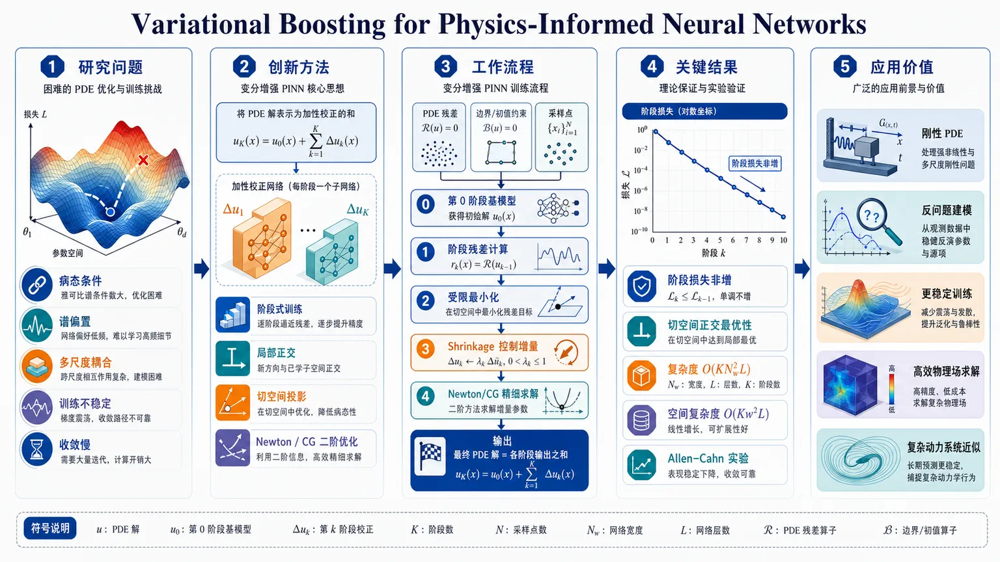
研究问题物理信息神经网络在求解非线性 PDE 时，常因病态条件、谱偏置和多尺度耦合导致训练不稳定、收敛慢，如何把原本一个巨大而耦合的优化问题拆成更稳定、可求解的阶段性子问题？创新方法提出变分提升式 PINN：把解表示为多个加性校正网络的叠加，每一阶段只训练一个小型弱学习器；收敛后要求校正方向满足局部正交条件，可解释为把功能梯度投影到当前网络流形的切空间。关键亮点是利用“小网络”使每阶段可以直接做 Newton 或 CG 二阶优化。工作流程输入 PDE 残差、边界/初值约束和采样点；先训练第 0 阶段基模型；随后按阶段计算当前残差，对新的小校正网络做受限最小化，可选择真实非线性残差或线性化后的 Gauss-Newton 子问题；每阶段用 shrinkage 控制增量，并用 Newton/CG 精细求解；最终把所有阶段输出相加得到 PDE 解。关键结果理论上给出阶段损失非增条件、切空间正交最优性，以及复杂度 O(KNw²L)、空间复杂度 O(Kw²L)；实践中在 stiff Allen–Cahn 例子上损失呈近似单调下降；同时证明小型弱学习器足以承载二阶优化，使原本对大 PINN 不可行的 Newton/CG 变得实用。应用价值为刚性、非线性、强多尺度 PDE 提供更稳定的 PINN 训练范式；把难优化的大模型拆成多个可控小模型，减少病态耦合和训练震荡；在工程上可用于更高效的物理场求解、反问题建模和复杂动力系统近似。以下解析基于当前可见文本节选；实验表格与后续章节未出现在材料中，因此数值结果仅能引用已给出的信息。
第一部分：核心概览（Overview）
这篇工作把 PINN 训练重写为函数空间中的变分 boosting：每一阶段只训练一个小型校正网络，使其收敛后满足局部正交条件，相当于把功能梯度投影到网络流形的切空间。这样可将原本病态、强耦合的整体优化拆成一串条件更好的子问题，并在每个弱学习器上启用 Newton/CG 等二阶方法。核心地位在于：给出了多阶段 PINN 的几何解释、单调下降条件、复杂度分析与二阶求解可行性统一框架。
第二部分：结构化快速回顾
《Variational Boosting for Physics-Informed Neural Networks》（None，）
- 背景：PINNs 通过最小化微分算子残差求解 PDE，但单体大网络常受ill-conditioning、spectral bias 与训练不稳定困扰。
- 方法：将解写成多个加性校正网络，每阶段求解一个受限最小化问题；收敛校正满足局部正交条件，等价于函数空间中的投影梯度下降。
- 结果：给出非增损失条件、复杂度 (O(KNw²L))、空间复杂度 (O(Kw²L))，并说明小网络弱学习器上可用Newton/CG；图 1 显示 stiff Allen–Cahn 例子中损失近似单调下降。
- 讨论：方法把多阶段 PINN 解释为projected functional gradient descent，并把大问题拆成多个更稳定的局部子问题；线性化与非线性两种版本分别对应 Gauss–Newton 与真非线性优化。
- 局限：依赖强单调性、光滑性、零函数可行、精确子问题最优解等假设；实践中因固定 shrinkage 与回滚机制，严格单调性不保证。
- 结论：多阶段 PINN 不是经验性堆叠，而是可被放入变分与几何框架的函数空间优化过程；小型弱学习器使二阶优化在 PINN 中首次变得实用。
---
第三部分：逐章节冷凝解析（Section-by-Section Condensing）
Abstract
Variational boosting as additive function-space construction
核心命题是把 PDE 解构造成函数空间中的加性序列。原文直述 *"solutions are constructed additively in function space"*，每个阶段训练一个weak learner，其收敛修正满足局部正交条件。这个设定的关键不在“集成”本身，而在每一步都对应一个受控的函数空间修正。
Local orthogonality and projected functional gradient descent
每个阶段的收敛修正满足 *"a local orthogonality condition, equivalent to a projected functional gradient descent step onto the tangent space of the network’s function manifold"*。这意味着阶段末的残差梯度对当前网络的切空间正交；几何上可理解为：在当前网络能走的所有微小方向上，已经没有下降方向可用。
Small learners enable second-order optimization
关键工程突破是 *"Because each correction network is deliberately small, the restricted minimization admits full Newton or conjugate gradient updates"*。大 PINN 的 Hessian 通常不可行，但小弱学习器的参数量足以承受完整二阶求解，直接改变了 PINN 的优化范式。
Stable refinement of nonlinear operators
整体框架的目标是把 *"global nonlinear refinement"* 拆成一串 *"well-conditioned subproblems"*，同时 *"preserving the full variational structure of the operator"*。因此方法不是弱化 PDE，而是把全局非线性结构保留下来后再分阶段处理。
---
1 Introduction
Residual minimization defines the PINN objective
PINN 的标准目标是 (mathcal L(u)=|F(u)|²)，并配合边界/初值项。原文给出 *"PINNs approximate solutions of differential equations by minimizing a residual functional"*，残差是对算子 (F(u)) 的 (L²) 采样近似，核心对象是函数而不是参数。
Parameterization creates an infinite-dimensional search problem
标准训练写成 *"min_θ L(u_θ)"*，但 (u) 真正生活在无限维空间 (H^m)，(θ) 只是在有限维中搜索。这里的关键难点是：参数空间的梯度下降并不等价于函数空间中的自然下降。
Monolithic PINNs entangle scales and nonlinearities
原文明确指出大模型 *"often leading to ill-conditioning, spectral bias, and unstable training dynamics"*。单个网络把不同频率、不同尺度、不同区域的误差全混在一起，导致梯度方向互相干扰。
Functional gradient exposes the role of the adjoint
功能梯度满足 (nablaᵤmathcal L(u)=2F'(u)^*F(u))。原文强调 *"the functional gradient is obtained by applying the adjoint of the linearized operator to the residual"*。这比普通“误差反传”更精确：残差先经线性化算子的伴随映射回函数空间，再形成真正的下降方向。
Nonlinear PDEs change curvature during training
对非线性算子，(F'(u)) 随 (u) 改变。原文例子给出 (F(u)=u³Rightarrow F'[h]=3u²h)，在 (u=2) 时梯度缩放约 12，在 (u=10) 时约 300，差异为 25×。这直接说明优化地形会随训练演化。
Multiscale imbalance creates extreme conditioning
用 (u(x)=sin x+sin 100x) 的例子说明低频梯度是 (O(1))，高频梯度是 (O(10⁴⁾)，因此 (ḩi>10⁴)。这不是抽象担忧，而是明确的尺度病态：为了稳定，只能被迫使用极小步长。
Boosting separates scales across stages
boosting 的价值在于把不同尺度拆到不同阶段。原文总结为 *"each small network is individually well-conditioned, and sequential refinement avoids the need to learn all scales simultaneously within a single model."* 这正是对单体 PINN 病态的结构性替代。
Claimed contributions
贡献被概括为三点：
- *"a variational interpretation of multi-stage PINNs"*
- *"a functional gradient perspective"*
- *"second-order solvability at each stage"*
其中第二阶求解只用于参数量足够小的非刚性 ODE 弱学习器，说明方法对任务规模有选择性。
Positioning against prior work
与已有 boosting-PINN、Mixture-of-Experts 等相比，核心差异在于：提供了理论解释、利用弱学习器小尺寸启用二阶优化、以及阶段间 transfer learning。原文还声称，在类似例子上相对 (L²) 误差与 2023 boosting work 同量级，但模型更小、训练 epoch 更少、无需 Fourier features。
---
2 Variational Boosting Framework
#### 2.1 Problem Setup
Sobolev regularity is required for PDE derivatives
在 (Ømegasubsetmathbb R^d) 上寻求 (uin H^m(Ømega))，并要求 (m>d/2)，从而由 Sobolev embedding 得到 (H^m(Ømega)hookrightarrow Lⁱⁿfty(Ømega))。这样 (g(u)) 才能保持在 (L²) 中，保证算子 (F: H^m(Ømega)→ L²⁽Ømega)) 良定义。
Nonlinear operator structure is explicit
算子写作 (F(u)=Du+g(u)+f(x))，其中 (D) 是 (m) 阶线性微分算子，(g:mathbb R→mathbb R) 平滑，(fin L²)。这种分解把线性高阶项与点态非线性分开，便于后续线性化。
Loss includes interior residual and soft boundary penalty
完整目标为
[
mathcal L(u)=|F(u)|L^₂₍Øₘₑgₐ₎²⁺ζ|B(u)|L^₂₍ₚₐᵣₜᵢₐₗØₘₑgₐ₎²,
]
其中 (ζ>0)。分析部分为了简洁去掉边界项，只讨论内部残差。边界条件是“softly” enforced，意味着满足程度依赖 (ζ)。
Strong monotonicity guarantees uniqueness
假设
[
łangle F(u)-F(v),u-vångleL^₂₍Øₘₑgₐ₎ge γ|u-v|ₘₐₜₕcₐₗ H²,quad γ>0
]
则 PDE 在 (mathcal H=H^m(Ømega)) 中至多有一个解。这个条件是后续“每阶段问题良定义”的基础。
Stagewise minimizers are assumed unique
每个 boosting 阶段在各自假设类 (mathcal Uₖ) 上具有唯一最小化解。该假设并不只是技术细节，而是确保“每一阶段的校正”本身是确定的。
#### 2.2 Gradient Descent in Function Space
Functional derivative and Riesz representation
方向导数满足
[
Dᵥmathcal L(u)=2łangle F(u),F'(u)[v]ångleL^₂₍Øₘₑgₐ₎.
]
由 Riesz 表示定理，存在唯一 (nablaₘₐₜₕcₐₗ Hmathcal L(u)inmathcal H) 使其与任意方向 (v) 的内积等于方向导数。这一步把“导数”真正拉回到函数空间。
Adjoint operator maps residuals back to function space
线性化算子满足 (F'(u):mathcal H→ L²⁽Ømega))，其伴随 (F'(u)^*:L²⁽Ømega)→mathcal H)。原文强调 *"The adjoint is needed because (F(u)in L²), but the functional gradient must live in (mathcal H)."* 这解释了为什么残差不能直接当作函数梯度。
Ideal functional gradient descent is intractable
理想更新为
[
uₖ₊₁=uₖ₋₂α F'(uₖ₎^*F(uₖ₎.
]
但原文指出三重困难：(uₖ) 是无限维对象、伴随算子通常没有闭式表达、病态 Hessian-like 结构会迫使步长极小。boosting 的意义就在于把这个不可行更新变成有限维近似。
#### 2.3 Projected Descent and Optimality
Each stage solves a restricted minimization
阶段 (k) 的问题是
[
hₖ₌argminₕᵢₙₘₐₜₕcₐₗ U_ₖmathcal L(u⁽k⁻¹⁾+h),
quad u⁽k⁾=u⁽k⁻¹⁾+hₖ.
]
这里不是在整个函数空间里找下降，而是在当前网络类 (mathcal Uₖ) 里找最优修正。
First-order optimality yields tangent-space orthogonality
最优性条件写成
[
łangle nablaₘₐₜₕcₐₗ Hmathcal L(u⁽k⁾),δ hångleₘₐₜₕcₐₗ H=0,quad forall,δ hin Tₕ_ₖmathcal Uₖ.
]
等价地，(nablaₘₐₜₕcₐₗ Hmathcal L(u⁽k⁾)perp Tₕ_ₖmathcal Uₖ)。这说明当前网络类内部所有一阶可达方向都已用尽。
The function class is a nonlinear manifold, not an affine space
原文反复强调 *"(mathcal Uₖ) is not an affine subspace of (mathcal H); it is a nonlinear, non-convex manifold."* 因而“投影”只是一种局部一阶解释，不是全局线性投影。
Tangent space is spanned by parameter Jacobians
切空间由参数导数张成：
[
Tₕ_ₖmathcal Uₖ₌øperatornamespanpartialθ_ᵢφₖ₍ḑot;θ)|θ₌θ_ₖ.
]
这把几何对象转化为可计算的 Jacobian 结构，也说明优化本质上依赖局部参数敏感性。
Boosting step is a projected gradient step
近似写作
[
hₖapprox-øperatornameprojTₕ_ₖₘₐₜₕcₐₗ Uₖnablaₘₐₜₕcₐₗ Hmathcal L(u⁽k⁻¹⁾).
]
这不是严格等式，而是局部几何图像：每一步只吸收当前网络类能表达的下降分量。
Warm start does not restrict the hypothesis class
原文特别说明 *"warm-starting each weak learner from the previous stage’s converged weights serves only to initialize the optimization and does not restrict (Θₖ)."* 这排除了一个常见误解：阶段间初始化不会缩小该阶段的函数类。
#### 2.4 Boosted PINN Framework
Stage 0 is the base learner
第 0 阶段是标准 PINN：
[
h₀₌argminₕᵢₙₘₐₜₕcₐₗ U_₀mathcal L(h),quad u⁽⁰⁾=h₀.
]
它没有 shrinkage，因为它不需要修正前序模型。
Subsequent stages add shrinkage-controlled corrections
对于 (kge1)，更新为
[
u⁽k⁾=u⁽k⁻¹⁾+αₖ hₖ,quad αₖᵢₙ₍₀,1).
]
(αₖ) 控制新校正的贡献，防止某阶段过度修正导致后续不稳定。
Boosting is connected to linearized residual descent
线性化残差：
[
F(u⁽k⁻¹⁾+h)approx r⁽k⁻¹⁾+F'(u⁽k⁻¹⁾)[h].
]
于是阶梯式更新与功能梯度下降联系起来，因为
[
-nablaₘₐₜₕcₐₗ Hmathcal L(u⁽k⁻¹⁾)=-2F'(u⁽k⁻¹⁾)^*r⁽k⁻¹⁾.
]
#### 2.4.1 Linearization of Residual Operator F
Two correction variants are defined
存在两种阶段校正：
- Linearized variant：先冻结 (F) 在起点的线性近似；
- Full nonlinear variant：直接对真实残差 (|F(u⁽k⁻¹⁾+α hₖ₎|²) 优化。
区别不在优化器，而在目标函数本身。
Linearized variant is a Gauss–Newton subproblem
原文直说 *"This is a Gauss–Newton subproblem."* 该版本在训练时只看到固定的局部线性化目标，因此更接近 Gauss–Newton 而不是原始非线性问题。
Choice between variants is empirical
*“The decision to linearize (F) or not was determined via experimentation.”* 这意味着线性化不是理论上唯一正确的选择，而是由性能决定。当前节选未给出各任务的具体数值对比，但明确提到 ODE 与 PDE 在表 1、表 10 中分别选择不同损失形式。
---
3 Model Properties
#### 3.1 Monotone Decrease
Exact stagewise minimization yields non-increasing loss
若 (0inmathcal Uₖ)，则
[
mathcal L(u⁽k⁻¹⁾+hₖ₎łe mathcal L(u⁽k⁻¹⁾).
]
在 (αₖ₌₁) 且每阶段精确求解时，损失序列满足
[
mathcal L(u⁽⁰⁾)ge mathcal L(u⁽¹⁾)ge ḑots ge 0.
]
Practical monotonicity is not guaranteed
现实中两个因素破坏严格单调：固定 shrinkage (αₖᵢₙ₍₀,1)) 不是精确线搜索；Newton 过程会回滚到 Adam 阶段的最佳结果，而不是理想的 (hₖ₌₀)。原文因此写到 *"monotone decrease relative to (u⁽k⁻¹⁾) is not strictly guaranteed."*
Empirical trend remains decreasing
尽管没有严格保证，图 1 在 stiff Allen–Cahn（periodic）例子上显示 *"the loss decreases approximately monotonically"*。这条经验观察支撑了理论图景，但当前节选未给出具体数值曲线。
#### 3.2 Model Assumptions
Smoothness and autodiff feasibility are assumed
求解函数需足够光滑，以便自动微分计算残差。这个假设直接排除了不规则解或弱解主导的情形。
Coercive and strongly monotone residual operator
模型假设 (F) 是 coercive 且 strongly monotone，从而 PDE 具有唯一解。该假设把分析建立在良条件问题上，而不是一般病态 PDE 上。
Zero function is feasible in each learner class
每个 (mathcal Uₖ) 包含零函数，确保“什么也不改”始终是可行退路。这是单调下降证明的必要条件。
Residual at collocation points is treated as a proxy
算法依赖“采样残差足以代表连续残差”的假设。这里隐含了 PINN 的核心弱点：离散点上的小残差并不自动等价于全域误差小。
Shrinkage must be sufficiently small
若 (αₖ) 过大，模型会在单阶段中过拟合残差，进而 destabilize 后续阶段。这个约束说明 boosting 的稳定性和步长紧密相关。
#### 3.3 Model Complexity
Inference cost scales linearly in stages
对于宽度 (w)、深度 (L)、collocation 点数 (N) 的全连接网络，单阶段开销是 (O(Nw²L))，总计为
[
O(KNw²L).
]
Boosting is cheaper when weak learners are much smaller
若标准 PINN 宽度为 (W)，则其成本为 (O(NW²L))。当
[
Kw²łl W²
]
时，boosted PINN 更高效。这个条件把“多阶段是否划算”变成明确的不等式。
Space complexity is linear in K
存储全部阶段需要 (O(Kw²L)) 参数量。代价是线性增长，但每个子模型都较小。
Two sampling regimes are used
一种方案在所有阶段复用同一批 (N) 个点，总样本量仍为 (N)；另一种方案在 Allen–Cahn 中每阶段重新采样 (N) 个点，总样本量变为 (KN)。这说明算法既支持固定采样也支持阶段重采样。
---
4 Second-Order Optimization
#### 4.1 Conjugate Gradient
CG avoids explicit Hessian formation
在每个弱学习器上，损失对参数 (θ) 的 Hessian (H) 可能很大。CG 只需要 Hessian-vector product：
[
Hv=nabla_θ(nabla_θmathcal L(θ)ḑot v),
]
无需显式存储 (H)。
Tikhonov regularization stabilizes indefinite curvature
求解系统写作
[
(H+γ I)d=-g.
]
其中 (g=nabla_θ mathcal L(θ))，(γ>0) 是小正数。这样可以处理 Hessian 非正定或近奇异的情形。
CG builds conjugate directions under the regularized metric
更新规则
[
pᵢ^T A pⱼ₌₀, ine j
]
表明方向在 (A=H+γ I) 度量下相互正交。原文把这解释为“curvature-weighted inner product”，每一步都在消除一个新的误差分量。
#### 4.2 Newton’s Method
Explicit Hessian is feasible only for small models
Newton 法直接求解
[
Hd=-g,
]
并更新 (θₖ₊₁=θₖ₊d)。因为要显式构造 Hessian，所以只适合小型弱学习器。
Columnwise Hessian computation is expensive
Hessian 在代码中按列计算：
[
Hěc eᵢ₌nabla_θ(ěc eᵢ^Tnabla_θmathcal L(θ)).
]
每一列需要一次反向传播并保留二阶计算图，成本很高。
Regularization is strengthened when negative eigenvalues appear
默认 ( γ=10⁻³)。若 (łambdaₘᵢₙ(H)<0)，则改为
[
Hᵣₑg=H+(γ+|łambdaₘᵢₙ|+ϵ)I,quad ϵ=10⁻⁶.
]
这保证严格正定，避免 Newton 步方向不稳定。
Trust region controls step magnitude
约束为 (|d|₂łeδ)，初始 (δ=1)。若步长过大则缩放。随后用
[
h̊o=fracactual reductionpredicted reduction
]
调节下一轮 trust region：
- (h̊o<0.25)：(δłeftarrow 0.5δ)
- (0.25łeh̊ołe0.75)：不变
- (h̊o>0.75) 且 (|d|₂ge0.9δ)：(δłeftarrow2δ)
Stopping criteria are standard quasi-Newton style
终止条件包括：
- 最大迭代数，通常 10–20 次；
- (|nablamathcal L(θ)|₂<ǎrepsilongᵣₐd)；
- (|Δθ|₂<ǎrepsilonₚₐᵣₐₘ)；
- (|mathcal L(θₖ₎₋mathcal L(θₖ₋₁)|<ǎrepsilonₗₒₛₛ)。
这说明二阶阶段并非盲目跑满，而是带有明确停止准则。
---
第四部分：深度理解与语言支持（Understanding & Nuance）
1. 关键术语解析
Fréchet derivative
不是普通一元导数，而是函数到函数的线性近似算子。语境中 (F'(u)) 描述 PDE 残差对解函数微扰的最优线性响应，比“偏导数”更一般，适用于无限维空间。
Adjoint operator
相当于矩阵转置在函数空间中的对应物，但不是简单转置，而是满足内积恒等式
[
łangle F'[v],wångleL^₂=łangle v,F'^*wångleₘₐₜₕcₐₗ H.
]
这里的作用是把“残差空间”的信息映回“函数空间”，所以它是功能梯度的关键桥梁。
Strong monotonicity
比“单调”更强，带有严格下界 (γ|u-v|²)。其意义是排除多解与极端平坦地形，让唯一性和收敛分析可做。若只说 monotone，通常不足以推出唯一解。
Tangent space
不是整个网络函数类，而是某个训练点处“无限小可达方向”的线性近似。这里的正交条件只在这个局部切空间上成立，因此“projection”是局部几何意义，不是全局线性投影。
Gauss–Newton subproblem
比 Newton 更温和，通常对残差做线性化，再在近似二次目标上优化。语境中它对应“冻结 (F) 的局部展开”这一版本，和直接优化真实非线性残差不同。
2. 疑难查证：两个核心概念
为什么“局部正交条件”能解释 boosting？
可以把每个弱学习器想成在当前模型附近找一个最优“小修补”。当修补完成后，任何能在该网络内部再做的微小改动都不再降低损失，于是梯度必须对该网络的切空间正交。下一阶段换一个新的小网络，相当于换一组新的局部方向继续消掉剩余误差。
为什么小网络能用二阶法，大网络不行？
Newton 需要 Hessian，CG 需要 Hessian-vector product。无论哪种，参数维度一大，代价都会爆炸。把主模型拆成多个小弱学习器后，每个学习器的参数量足够小，二阶信息就能计算、存储、正则化和限制步长，从而把原本不可行的二阶优化变成可操作流程。
---
第五部分：创新评估与关联（Synthesis & Novelty）
1. 新颖性判断
相对近 2–5 年 PINN 相关工作的新意主要集中在四点：
- 从经验 boosting 到变分/几何 boosting
近年的 boosting-PINN 多停留在“逐步加模型”的经验层面；这里把它提升为函数空间中的投影梯度下降，给出局部正交与切空间解释，补上理论骨架。
- 把弱学习器尺寸与二阶优化绑定
过去 PINN 常用 Adam、L-BFGS 或混合优化，但大网络上的二阶信息代价高。这里利用“每阶段网络很小”这一结构，使 Newton/CG 成为阶段内可行方案，这是方法层面的关键推进。
- 把多尺度/病态优化拆成一串条件更好的子问题
传统 PINN 的难点在于不同频率、不同区域、不同非线性强度混在一个模型里。该框架把全局难题拆解为一串局部校正，直接回应了 ill-conditioning 和 spectral bias。
- 阶段间 transfer learning 的显式利用
前序阶段的收敛参数只作为初始化，不限制下一阶段函数类；这种“初始化迁移 + 函数类重置”的设计，比简单的残差堆叠更细致。
2. 解决了前人没解决的问题
核心未解问题是：如何在不牺牲变分结构的前提下，让 PINN 训练从“一个巨大、病态、耦合的优化”变成“多个局部可解的优化”。
这里给出的答案是：
- 在函数空间中解释每次修正；
- 用切空间正交刻画阶段最优；
- 用小网络承载二阶优化；
- 用 shrinkage 保持阶段间稳定。
3. 与已有方法的关系
相对于普通 PINN：不再一次性拟合所有尺度，而是分阶段校正。
相对于 boosting-PINN 先前工作：增加了严格几何解释、二阶优化和 transfer learning。
相对于 Mixture-of-Experts：不是把输出硬切分，而是以残差驱动的变分方式逐步逼近 PDE 解。
相对于 L-BFGS/Adam 混合训练：不只是换优化器，而是改变问题分解方式。
---
如果需要，可以继续把这份解析整理成两种进一步版本：
- 适合做文献综述的精简版；
- 适合逐式推导的公式级注释版。
-
13
📊 含图深析
📄 摘要：作者用 DFT 研究 L1₀-FePd(001)/石墨烯界面。真空中 Pd 终止面更稳定，而 Pd 终止对石墨烯吸附不利；界面与氧环境会改变表面原子偏好并诱导 Fe 表面偏聚，从而重塑器件界面结构。
📖 英文原文
arXiv:2502.00328v3 Announce Type: replace Abstract: We theoretically investigate the atomic-scale structure of the heterointerface formed between the (001) surface of the L1₀₋ₒᵣdered iron palladium (FePd) intermetallic alloy and graphene (Gr), namely, L1₀₋FePd(001)/Gr, which serves as an essential component in spintronic devices. Using density functional theory (DFT) calculations, we demonstrate that the topmost surface layer consisting of Pd (Pd-terminated surface) is energetically more stable than that consisting of Fe in vacuum, and that Pd-terminated surfaces are unfavorable for graphene adsorption. In contrast, under an oxygen atmosphere, the strong Fe--O bonding stabilizes Fe-terminated surfaces. The predicted Fe--O bonds on the oxidized surface are consistent with our X-ray photoelectron spectroscopy (XPS) measurements. These results reproduce the mechanism responsible for the graphene coverage observed in recent experiments. Similar oxygen-induced Fe surface segregation has been studied in heterogeneous catalysis on FePt and FePd alloys. In this work, we exploit this mechanism as a termination-engineering strategy to fabricate high-quality 2D-material/alloy heterointerfaces for nanoscale device applications.
💡 亮点：作者用 DFT 解析 L1₀-FePd(001)/石墨烯异质界面，先判定真空下 Pd 终止更稳定，再讨论氧环境引发的 Fe 表面偏聚趋势。对自旋电子器件而言，这说明界面终止层并非静态材料常数，而会被环境化学显著重塑。
📖 展开分析 + 配图
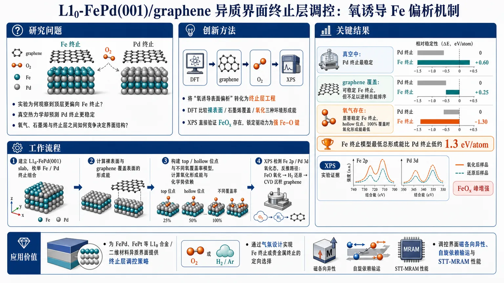
研究问题在 L1₀-FePd(001)/graphene 异质界面中，为什么实验观察到顶层更偏向 Fe 终止，而真空热力学却预测 Pd 终止更稳定？氧气、石墨烯与表面终止层之间的竞争关系究竟如何决定界面结构？创新方法把“氧诱导表面偏析”从催化表面重构机制转化为自旋电子学中的终止层工程：用 DFT 系统比较裸表面、石墨烯覆盖和氧化三种环境下的形成能，并结合 XPS 直接验证 FeOx 存在，锁定真正驱动力是强 Fe–O 键而非单纯 Fe–C 作用。工作流程先建立 L1₀-FePd(001) slab 模型，枚举不同 Fe/Pd 终止组合；再用 DFT 计算裸表面与 graphene 覆盖表面的形成能，比较真空稳定性；随后构建 top/hollow 位点和不同氧覆盖率的氧化模型，计算氧化形成能与化学势依赖；最后用 XPS 检测 Fe 2p 和 Pd 3d 氧化态，反推界面形成路径为“氧化 FeO → H₂ 还原 → CVD 沉积 graphene”。关键结果真空中 Pd 终止最稳定；石墨烯能稳定 Fe 终止但不足以逆转总能排序；氧气会显著稳定 Fe 终止，并在 hollow 位点、100% 覆盖时达到最低氧化形成能。Fe 终止模型的最低总形成能比 Pd 终止低约 1.3 eV/atom，XPS 也观察到氧化后 FeOx 峰增强，验证了 Fe 优先氧化与偏析。应用价值为 FePd、FePt 等 L1₀ 合金/二维材料异质界面提供可操作的终止层调控策略，可通过气氛设计实现 Fe 终止或贵金属终止的定向选择，进而调控界面磁各向异性、自旋依赖输运和 STT-MRAM 等自旋电子器件性能。《Oxygen-induced Fe surface segregation at the L1₀-FePd(001)/graphene heterointerface for spintronics devices: a first-principles study》（None，）
第一部分：核心概览
这项研究用 DFT 与 XPS 联合锁定了 L1₀-FePd(001)/graphene 异质界面的终止层来源：真空中 Pd 终止最稳，而氧气环境通过强 Fe–O 键将稳定性翻转为 Fe 终止，从而解释了实验中石墨烯覆盖的 Fe 终止界面。其关键贡献不止在于解释一个结构矛盾，更在于把原本主要用于催化表面偏析的环境驱动重构机制，转化为可用于 spintronics 的termination engineering 策略，直接关联界面磁各向异性与自旋输运。
---
第二部分：结构化快速回顾
《Oxygen-induced Fe surface segregation at the L1₀-FePd(001)/graphene heterointerface for spintronics devices: a first-principles study》（None，）
- 背景：L1₀-FePd 兼具 PMA 与自旋电子学应用潜力，但其表面终止层在真空、氧气和 graphene 覆盖条件下的稳定性与形成路径仍不清楚。
- 方法：采用 VASP-DFT、GGA-PBE、PAW，结合 DFT-D2 与 optB86b-vdW；建立 slab supercell、表面吸附与氧化模型，并用 XPS 验证氧化态。
- 结果：真空中 Pd 终止最稳；单独石墨烯吸附能稳定 Fe 终止，但不足以逆转总体排序；氧化显著稳定 Fe 终止，最优氧覆盖在空穴位且达 100%。
- 讨论：石墨烯界面中的 Fe 终止可由“先氧化、后还原、再沉积石墨烯”的路径解释；终止层改变显著调制界面态与磁矩。
- 局限：未纳入 SOC，仅考虑共线自旋；主要是热力学稳定性分析，缺少显式动力学势垒与扩散路径。
- 结论：氧诱导 Fe 表面偏析可作为 2D 材料/合金界面的终止层工程手段，服务于未来 spintronics 器件。
---
第三部分：逐章节冷凝解析
1 Introduction
FePd 的器件价值与问题定位
L1₀-FePd 具备四方有序结构与强 各向异性铁磁性，并与 STT-MRAM 等器件场景直接相关。与此对应，界面终止层会影响 interfacial magnetic anisotropy 和自旋依赖输运。原文直接指出：*"FePd and similar binary alloys, such as FePt and FeIr, have large perpendicular magnetic anisotropy (PMA), suggesting their potential use in spintronics applications such as magnetic storage devices including spin-transfer torque magnetoresistive random-access memory (STT-MRAM)."*
环境驱动表面偏析已在催化中建立
FePt、FePd 等双金属表面终止层对化学环境高度敏感：真空或还原气氛下，贵金属组分更易覆盖表面；微量氧就能推动 Fe 向表面偏析并形成氧化物。原文概括为：*"under vacuum or reducing conditions, the noble-metal component (Pt or Pd) preferentially covers the surface, whereas exposure to even trace amounts of oxygen drives the segregation of Fe toward the surface accompanied by the formation of iron oxides."*
FePd/graphene 的实验矛盾
在 FePd/Gr 体系中，实验与先前理论指向 石墨烯覆盖后表面主要为 Fe，这与真空下贵金属终止的常规认识冲突。原文写得很直接：*"the topmost layer of a graphene-covered FePd surface primarily consists of Fe atoms ... which appears to contradict the noble-metal termination expected for bare L1₀-alloy surfaces in vacuum."*
已有工作解释不足
先前对 FePd/Gr 的研究主要集中在结构、电性与 MR，但没有解释终止层为何从 Pd 偏向 Fe。研究空缺被明确点出：*"their implications for spintronics, in which the composition of the terminating layer governs the interfacial magnetic anisotropy and spin-dependent transport, remain largely unexplored."*
研究目标：用化学键能统一矛盾
界面终止差异被归因于金属表层与 2D 材料/氧 的化学键能竞争。原文将这一假设表述为：*"the origin of these discrepancies lies in the chemical bonding energy between the topmost metallic atoms and the covering 2D material or oxygen in the atmosphere."* 由此建立了“真空—石墨烯—氧化”三种环境下的统一热力学图景。
---
2 Method
Slab 模型与晶体参数
采用 slab supercell 描述 FePd(001) 表面，包含真空层与基底层。体相晶格常数优化得到 a ≈ 2.67 Å、c ≈ 3.70 Å。模型尺寸为 13.35 Å × 2.67 Å × 26.28 Å，沿 [100] 方向有 5 个周期单元，沿 [001] 方向为 7 个原子层、总厚度约 11.13 Å。原文写明：*"The equilibrium lattice constants (a ≈ 2.67 Å and c ≈ 3.70 Å) were obtained from structural optimization"* 与 *"the slab consists of seven atomic layers with a total thickness of approximately 11.13 Å."*
表面终止层枚举
把顶层、第二层、第三层分别记作 ⓐ、ⓑ、ⓢ，并构造多种 Fe/Pd 终止组合，如 Fe–Fe–Pd、Fe–Pd–Fe、Pd–Fe–Pd、Pd–Pd–Fe。这样能逐一比较不同终止层的形成能。原文表述为：*"We considered several structural models with different surface metal compositions."*
DFT 设置
计算框架为 VASP，交换相关采用 GGA，离子-电子相互作用采用 PAW。仅考虑 collinear spin polarization，忽略 spin–orbit coupling。为处理层间弱相互作用，使用 DFT-D2 与 optB86b-vdW 两种范德华泛函交叉验证。数值参数包括：2 × 10 × 1 的 Γ-centered k-point mesh、500 eV 平面波截断、离子弛豫阈值 10⁻³ eV、电子自洽阈值 10⁻⁴ eV。这些信息对应原文：*"Only collinear spin polarization was considered ... the effects of spin–orbit coupling were ignored"*、*"a 2 × 10 × 1 grid"*, *"a plane wave cutoff energy of 500 eV"*, *"less than 10−3 eV"* 与 *"less than 10−4 eV."*
形成能定义
表面稳定性用每原子形成能评价。
- 裸表面：
[
EfₒᵣₘFePd=fracEₛₗₐbw/α-Eₛₗₐbw/oα-μFₑNFₑ^α-μPdNPd^αN
]
- 石墨烯覆盖：
[
EfₒᵣₘGr=fracEₛₗₐbw/Gr-Eₛₗₐbw/oGr-μ_CN_CN
]
- 氧化表面：
[
EfₒᵣₘFePd/O=EfₒᵣₘFePd+EfₒᵣₘO
]
其中 μFe、μPd、μC、μO 都是化学势项。原文明确给出：*"chemical potentials depend on external conditions"*，以及氧气化学势由 *"pO2, T"* 决定。
氧化模型与覆盖率
氧化结构用 top 与 hollow 两种吸附位点、25%、50%、75%、100% 四种覆盖率展开；100% 表示表层金属与氧 1:1。原文说明：*"we consider two adsorption sites (referred to as “top” and “hollow”) and four different coverage rates: 25, 50, 75, and 100 %."*
XPS 条件
实验使用 Mg-Kα 光源（hν = 1253.6 eV）、Gammadata Scienta SES-100 分析器、室温、基底真空约 1.0 × 10⁻⁷ Pa。这些数据为氧化态判定提供了实验支撑。原文对应：*"XPS spectra were obtained using a Mg-Kα X-ray source (hν = 1253.6 eV)"* 与 *"base pressure of approximately 1.0 × 10−7 Pa."*
---
3 Results and discussion
3.1 Stability of alloy surface with graphene
真空中 Pd 终止最稳定
裸 FePd(001) 的形成能表明，Pd-terminated 表面在真空中最稳。稳定性顺序为：Pd–Fe–Pd < Fe–Fe–Pd ∼ Pd–Pd–Fe < Fe–Pd–Fe。原文的结论很明确：*"the most stable structure has Pd as the topmost layer."*
对应数值（DFT-D2）：
- Fe–Fe–Pd: +0.00 eV/atom
- Fe–Pd–Fe: +0.60 eV/atom
- Pd–Fe–Pd: −0.61 eV/atom
- Pd–Pd–Fe: +0.22 eV/atom
石墨烯对 Fe 终止的稳定化更强
石墨烯吸附后，形成能顺序变为：Fe–Pd–Fe < Fe–Fe–Pd < Pd–Fe–Pd < Pd–Pd–Fe，说明 Fe–C 相互作用明显强于 Pd–C。原文直接写道：*"the formation energies (E_form^Gr) of the structures follow the order Fe–Pd–Fe < Fe–Fe–Pd < Pd–Fe–Pd < Pd–Pd–Fe, indicating that the bonding between Fe and C is significantly stronger than that between Pd and C."*
对应 E_form^Gr（DFT-D2）：
- Fe–Pd–Fe: −0.21 eV/atom
- Fe–Fe–Pd: −0.04 eV/atom
- Pd–Fe–Pd: +0.24 eV/atom
- Pd–Pd–Fe: +0.15 eV/atom
总能量排序仍偏向 Pd 终止
尽管石墨烯能稳定 Fe 终止，但增益不足以逆转裸表面的热力学优势。总形成能顺序为：Pd–Fe–Pd < Fe–Fe–Pd < Fe–Pd–Fe ≈ Pd–Pd–Fe。原文总结为：*"the Pd-terminated surface with adsorbed Gr is still the most stable."*
对应总形成能（DFT-D2）：
- Pd–Fe–Pd: −0.37 eV/atom
- Fe–Fe–Pd: −0.05 eV/atom
- Fe–Pd–Fe: +0.39 eV/atom
- Pd–Pd–Fe: +0.37 eV/atom
泛函稳健性
DFT-D2 与 optB86b-vdW 的排序一致，仅数值略有偏移，说明结论对 vdW 处理不敏感。表中括号内的 optB86b 值与 DFT-D2 在趋势上保持一致。
关键判定
石墨烯的作用是“有利于 Fe 终止”，但不是“足以单独决定 Fe 终止”。原文的判断是：*"the attractive chemical interaction between Fe and C is insufficient to explain this discrepancy."*
---
3.2 Effect of surface oxidation
XPS 直接显示 Fe 优先氧化
“刚制备”与“空气中氧化一周”样品的 Fe 2p 和 Pd 3d 谱对比显示，FeOₓ 峰增强，而 Pd 明显更不易氧化。原文写道：*"the Fe 2p core-level spectrum indicates the increase in the intensity of the FeOx peak in the oxidized sample"*，以及 *"Pd atoms are less susceptible to oxidation under the same conditions compared with Fe atoms."*
氧化表面模型设置
为了把氧化纳入表面热力学，构建了含 O 的 FePd 表面模型，考察 top/hollow 位点与 25–100% 覆盖率。原文说明：*"we propose several initial structural models based on the well-known crystals of FeO and PdO"*，并且 *"To obtain the most realistic formation energies of the oxidized surfaces, structural optimization was performed for each proposed model."*
氧化化学势随温压变化
氧化形成能包含气相 O₂ 的化学势项，显式写入 pO₂ 与 T 的依赖。原文给出：*"μO(pO2,T) = 1/2 [E_O2 + k_B T log(pO2/p°) + ...]"*。这使得氧化稳定性可被映射到具体气氛条件。
Fe 终止在氧化下显著稳定化
对于 Fe-terminated 表面，最优氧化位点出现在 hollow，且在 100% coverage 下形成能最低，达到 E_form^O ≈ −2.85 eV/atom；合并后总形成能约 E_form^FePd/O ≈ −2.25 eV/atom。原文直接给出：*"the formation energy of oxidation (E_form^O) is minimized at a hollow site with a coverage rate of 100 %, which reaches E_form^O ≈ −2.85 eV/atom."*
Fe 终止比 Pd 终止低约 1.3 eV/atom
在所有氧覆盖率下，Fe-terminated 模型的最低 E_form^FePd/O 比 Pd-terminated 模型低约 1.3 eV。原文写道：*"The minimum E_form^FePd/O of the Fe-terminated surface models is approximately 1.3 eV lower than that of the Pd-terminated surface models."*
这意味着氧气环境直接把热力学优势推向 Fe 终止。
与实验和催化文献一致
氧化促进 Fe 上浮与表面氧化的趋势，和 XPS 及 FePt/Pd–Fe 催化文献完全同向。原文归纳为：*"these results suggest that the stability of Fe surfaces are improved in samples exposed to an oxygen atmosphere."*
---
3.3 Formation mechanism
三段式工艺路径
实验制备过程可被解释为：先在空气暴露阶段使表面发生 FeO 化，再在 CVD 前或过程中用 H₂ 还原，最终让 graphene 在 Fe 终止表面上成核与铺展。原文总结为：*"the initially Pd-rich surface becomes covered with FeO owing to oxidation"*，随后 *"the hydrogen-reduced Fe surface provides favorable sites for carbon adsorption."*
热力学与工艺协同
该路径同时利用了氧化与还原两个环境窗口，属于典型的反应驱动重构。原文点明：*"such a compositional reconstruction driven by sequential oxidizing and reducing atmospheres is analogous to the reaction-driven restructuring of bimetallic catalysts."*
这一步把“催化中的偏析化学”转译为“自旋电子学界面的终止层工程”。
不排斥 Pd 终止裸表面
尽管 Fe/graphene 界面可通过上述路径形成，但特定工艺条件下也可能保留更高比例的 Pd-terminated bare surface。原文保留这一可能性：*"under specific growth conditions, samples with a higher proportion of Pd-terminated surfaces could also be obtained."*
---
3.4 Interfacial electronic and magnetic structure
石墨烯与金属的轨道耦合中心是 pz–dz²
孤立石墨烯在费米能级附近由 p_z 轨道主导；金属表面则主要由 d_z² 轨道参与耦合。原文对应：*"For isolated graphene, the p_z orbital contributes states near the Fermi level"*，以及 *"the dz^₂ orbitals of the Fe- and Pd-terminated surfaces."*
Fe 终止表面自旋分裂更强
裸 Fe-terminated 表面表现出完全交换分裂，minority-spin d_z² 几乎空置；Pd-terminated 的分裂则弱得多。对应磁矩分别约为 Fe = 3.0 μB、Pd = 0.3 μB。原文写道：*"for Fe, the exchange splitting is complete ... while for Pd the splitting ... is minimal."*
Fe/graphene 界面发生显著电荷转移
石墨烯覆盖 Fe 终止后，p_z 与金属 d_z² 形成成键态，少数自旋带部分占据，表明电子从石墨烯流向 Fe 的少数自旋通道。原文直接说明：*"the minority-spin bands hybridize with these bonding states and become partially occupied, reflecting an electron transfer from the graphene p_z states into the Fe minority-spin dz^₂ channel."*
磁矩重分布具有定量差异
在 Fe 终止界面，Fe 平均磁矩降至 2.6 μB，表面 C 原子获得约 −0.02 μB 的自旋极化；Pd 终止界面中，Pd 磁矩仍约 0.3 μB，C 的诱导磁矩几乎可忽略，且比 Fe 情况低约一个数量级。原文原句是：*"As a result, the average magnetic moment of Fe decreases to 2.6 μB"* 和 *"the induced magnetic moment of C is nearly negligible, an order of magnitude smaller than in the Fe case."*
器件含义
终止元素决定界面电子态与磁性，从而影响 spin-dependent tunneling transport。原文归纳为：*"precise control of the terminating element during device fabrication is therefore indispensable."*
---
4 Conclusions
真空、石墨烯、氧气三种环境决定不同终止层
真空中 Pd-terminated bare FePd 最稳；石墨烯确实能稳定 Fe 终止，但不足以单独推翻 Pd 终止的热力学优势；氧气则通过 Fe–O 键把稳定性明确翻转到 Fe 终止。原文结论链条是：*"in vacuum, the Pd-terminated surface of bare FePd is the most stable"*，*"graphene coverage promotes Fe termination through the attractive Fe–C bonding"*，*"the formation of Fe–O bonds shifts the stability toward Fe termination."*
实验机制得到统一解释
FePd/Gr 中观察到的 Fe 终止界面可由“氧化成 FeO → H₂ 还原 → CVD 沉积 graphene”解释。原文给出完整机制：*"we propose a formation mechanism in which the initially Pd-rich surface is oxidized to FeO and subsequently reduced during chemical vapor deposition (CVD), yielding the graphene-covered Fe-terminated interface observed in previous STEM experiments."*
终止层工程成为可迁移策略
该机制不仅解释 FePd/Gr，也能扩展到 FePt、FeNi 等 L1₀ 合金。原文直接提出：*"we suggest that it can be utilized as a termination-engineering strategy applicable to Fe-based L1₀ intermetallic compounds."*
对 spintronics 的直接意义
因为终止层决定界面电子结构与磁矩，所以也决定 spin-dependent tunneling transport。原文总结为：*"such termination engineering provides a direct means of tailoring the performance of spintronic devices."*
---
第四部分：深度理解与语言支持
1. 术语解析
Surface segregation
指某一组分在表面层富集的现象。这里不是简单“扩散”，而是由外界环境驱动的热力学偏析：真空时 Pd 上浮，氧气时 Fe 上浮。和“diffusion”不同，重点是最终表面组成的稳定性，而不只是迁移过程。
Chemical potential
不是“浓度”本身，而是与外界储库交换粒子的能量基准。这里的 μFe、μPd、μO 决定“Fe-rich / Pd-rich / O-rich”环境下哪种终止层更稳定。它把材料稳定性从单一总能量，转成与实验条件直接挂钩的热力学量。
Formation energy
这里是每原子的形成能，用来比较不同表面结构的稳定性。数值越低越稳，负值通常意味着相对于参考态更有利。需要区分三类：裸表面形成能、石墨烯吸附形成能、氧化形成能，三者不是同一个物理量。
Convex hull
在氧覆盖率扫描中，“solid line indicates the minimum ... (convex hull)”指每个覆盖率下最稳定构型的连线。其意义是：在给定覆盖度下，哪些氧化排列是真正热力学可达的最低能态。
Exchange splitting
指自旋上/下能带的分裂。Fe 中分裂大，少数自旋态几乎空置，所以磁矩大；Pd 中分裂小，磁性弱。这里直接决定了 p_z–d_z² 杂化后电荷转移与诱导磁矩的大小。
---
2. 疑难查证
为什么石墨烯能稳定 Fe 终止，却仍然不能单独让 Fe 成为最稳定表面？
核心在于两种能量竞争。Fe 终止表面本身比 Pd 终止更不稳，但 Fe–C 的成键能可以显著降低其能量；问题是这个降低幅度仍小于 Pd 终止本身的热力学优势。换句话说，石墨烯提供的是“补偿”，不是“翻盘”。只有当氧气先通过 Fe–O 键把 Fe 终止稳定下来，Fe 终止才真正成为全局最优。
为什么氧气能反转终止层稳定性？
因为氧化的收益大于表面重排的代价。Fe 外露后能形成强 Fe–O 键，得到的能量回报远超 Pd 终止在真空中的原有优势。这里不是“氧把 Fe 拉到表面”这么简单，而是“Fe 到表面后立刻形成更低能的氧化构型”，所以 Fe segregation 成为热力学首选。
为什么实验能得到 Fe 终止 graphene 界面，而 DFT 在真空中却预测 Pd 终止？
因为实验过程不是“真空静态平衡”，而是包含 空气暴露、氧化、H₂ 还原、CVD 沉积 的非单步路径。真正形成界面的不是裸表面，而是一个被氧化并再还原后的“历史态”表面。热力学终态和工艺路径共同决定最终结构，这也是把催化重构迁移到spintronics 的关键。
---
第五部分：创新评估与关联
1. 创新性判断
最关键的新意
过去 2–5 年内，相关工作主要回答两类问题：
1) FePd/graphene 的电子结构与磁输运如何；
2) FePt、Pd–Fe 等双金属在氧气中的偏析与氧化如何发生，主要服务于催化。
这项工作把两条线真正接起来，解决了一个前人没闭合的缺口：为什么实验中的 FePd/graphene 界面表现为 Fe 终止，而真空热力学却偏向 Pd 终止？
答案不是“石墨烯足够强”，而是“氧诱导 Fe surface segregation 先把表面重置，再由还原与石墨烯生长完成界面锁定”。
具体新颖点
- 把 催化领域已知的氧诱导偏析 首次系统转用于 spintronics 界面终止层工程。
- 用 DFT + XPS 形成闭环证据，不只给出结构预测，还验证 FeOx 的存在。
- 构建了适用于 L1₀ 合金/2D 材料 的通用思路：通过控制气氛实现 Fe-terminated 或 noble-metal-terminated 界面可选。
- 量化比较了 裸表面、graphene 吸附、氧化表面 三种能量景观，指出单纯 Fe–C 相互作用不足以解释实验，真正的驱动力来自 Fe–O 稳定化。
领域位置
在 FePd/graphene 这一类自旋电子学异质结中，这篇工作属于“结构形成机制”层面的补缺型研究：不是再重复界面态计算，而是解释“界面为何长成这样”。这类机制辨析对 STT-MRAM、MTJ 和更广泛的 2D material/alloy heterointerfaces 都具有直接迁移价值。
-
14
📄 摘要：作者研究 AB 堆叠双层石墨烯在面内与垂直磁场下的 shift-current 响应，覆盖微扰区到强朗道量子化区，并比较二维体系统与有限纳米带。面内场主要引起两层相反动量位移，只带来频谱的适度重分布。
📖 英文原文
arXiv:2511.20498v3 Announce Type: replace Abstract: We investigate the shift-current response of inversion-broken AB-stacked bilayer graphene under in-plane and perpendicular magnetic fields, from the perturbative regime to strong orbital quantization, in both two-dimensional bulk systems and finite nanoribbons. An in-plane field enters through opposite momentum shifts in the two layers and leaves the bulk band dispersion essentially unchanged, producing only a modest, frequency-dependent redistribution of the shift-current spectrum. A weak perpendicular field is treated using a gauge-covariant Peierls expansion. The resulting band corrections are concentrated near Berry-curvature hot spots, although the dominant shift-current transitions occur elsewhere, and the valley-summed response is even in the field with a leading quadratic correction. At strong perpendicular field, a rational-flux magnetic supercell reveals nearly flat Landau-level-like bulk bands and a greatly enhanced density of states, yet the bulk shift current is almost completely quenched because the relevant optical matrix elements and shift-vector contributions are suppressed or cancel. Finite ribbons retain optically active boundary channels: in zigzag ribbons, magnetic reconstruction turns edge-derived states from dark states into bright photovoltaic channels, with the associated peak scaling inversely with ribbon width. These results show that magnetic control of the nonlinear photovoltaic response is governed by wave-function reconstruction and quantum-geometric matrix elements rather than by the density of states alone.
💡 亮点：文章把 Bernal 双层石墨烯的 bulk photovoltaic shift current 推到磁场可控情形，既算面内场的层间相反动量位移，也算垂直场下的强量子化响应。核心结论是面内场只造成谱重分布而不显著改写体能带，这为磁场调控二维体光伏效应提供了清晰基线。
📖 展开分析 + 配图
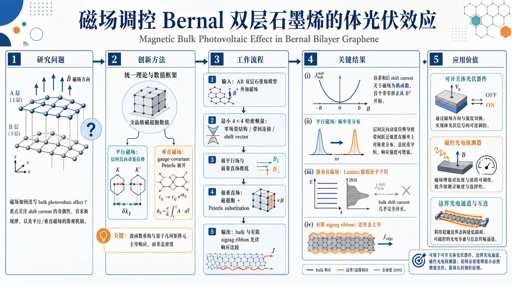
研究问题磁场如何改写 Bernal 堆垛双层石墨烯的 bulk photovoltaic effect，尤其是 shift current 的奇偶性、谷求和规律，以及平行磁场与垂直磁场分别通过什么微观机制影响光伏响应？创新方法建立统一的磁控 shift current 理论框架：平行磁场用层间反向动量位移处理，垂直磁场用 gauge-covariant Peierls 展开处理；再结合全晶格磁超胞数值，抓住“真正主导响应的是波函数重构与量子几何矩阵元，而不是态密度”的关键点。工作流程输入 AB 双层石墨烯模型与外加磁场；先用最小 4×4 哈密顿量解析零场带结构、带间连接和 shift vector；再分别对弱平行场、弱垂直场做微扰展开；强垂直场改用磁超胞与 Peierls substitution 计算全晶格能带和电导张量；最后比较 bulk 与有限 zigzag ribbon 的光伏输出。关键结果谷求和后的 shift current 对磁场是偶函数，弱场首个非零修正从 B² 开始；平行磁场主要造成频谱重分布而不显著改带；弱垂直场同样只给二次修正；强垂直场虽产生近乎平坦的 Landau-level-like 能带和巨大态密度，但 bulk shift current 反而几乎完全淬灭；有限纳米带中边界态会变成明亮光活性通道，峰值随宽度增大而减弱。应用价值揭示了用磁场精确调控非线性光伏的路径，可用于设计可开关的体光伏器件、边界光电通道和磁控光电探测器；同时说明增强态密度并不必然增强光伏，为二维材料中的磁光电器件设计提供了明确的几何调控原则。第一部分：核心概览
这篇工作建立了AB堆垛双层石墨烯在磁场中shift current的统一理论框架，区分了平行磁场与垂直磁场两种机制，并贯通了弱场微扰到强场量子化两端。核心结论是：谷求和后的光伏响应对磁场是偶函数，弱场下首个非零修正从 (B²) 开始；强垂直磁场虽产生近乎平坦的 Landau-level-like 能带和巨大态密度，但bulk shift current 反而几乎完全淬灭。有限纳米带却保留边界光活性通道，揭示磁控非线性光电响应由波函数重构与量子几何矩阵元主导，而非单纯由态密度决定。
---
第二部分：结构化快速回顾
《Magnetic Bulk Photovoltaic Effect in Bernal Bilayer Graphene》（None，）
- 背景：BPVE 是非中心对称材料在均匀照明下产生直流光电流的二阶非线性效应；磁场引入后，时间反演对称性被破坏，响应规律此前缺乏系统研究。
- 方法：对反演破缺 AB 双层石墨烯分别在平行磁场与垂直磁场下做分析；弱场用微扰与gauge-covariant Peierls expansion，强场用磁超胞/Peierls substitution 的全晶格模型。
- 结果：谷求和 shift current 对磁场为偶函数；平行磁场只造成频率依赖的谱重分布；弱垂直场引起二次修正；强垂直场使 bulk current 被压制；窄 zigzag ribbon 中边界态转为亮态通道。
- 讨论：响应强弱由光学矩阵元、shift vector、波函数混合决定，不由态密度单独决定。
- 局限：强场部分依赖全晶格数值与磁超胞；有限 ribbon 与 bulk 的尺寸效应显著，外推需谨慎。
- 结论：磁场控制 BPVE 的关键是量子几何重构而非 DOS 增强。
---
第三部分：逐章节冷凝解析
I Introduction
BPVE 的物理定位与传统太阳能路径的区别
非中心对称晶体中，BPVE 在均匀光照下可直接产生稳态直流光电流，不依赖 pn 结内建电场。原文定义非常直接：*"BPVE generates a steady photocurrent directly in the bulk of a non-centrosymmetric material under uniform illumination."* 其本质是二阶非线性光学响应，与传统结型光伏机理不同。
磁场下 BPVE 是未充分研究的问题
磁场既改变晶体对称性，又破坏 TRS，使 BPVE 的对称性结构更复杂。文本明确指出：*"BPVE under the magnetic field (therefore in the absence of TRS) is so far an under-investigated topic."* 这意味着磁场下的非线性光伏不只是“加一个外场”，而是要重新审视选择定则、谷对称性和几何相位。
研究聚焦 shift current，而非 ballistic current
二阶直流电流包含 shift current 和 ballistic/injection current 两部分；对线偏振光，仅分析 shift current。对应表述是：*"For the linearly polarized light considered here, we focus exclusively on the shift current."* 这一选择把问题锁定在波函数位移、Berry 连接和 shift vector 上。
弱磁场工作的既有认识与本文定位
已有工作显示，只要磁场不显著改写能带，shift current 仍近似稳定；原文把这称为 *"weak-field regime"*。同时已有方格模型工作观察到某些频率处的二次关系：*"the variation of the shift current has an interesting parabolic relation with the external field"*。这里的推进点，是把这一认识推广到AB 双层石墨烯并区分平行/垂直磁场。
材料选择的理由
AB 堆垛双层石墨烯本身可通过堆垛破坏反演对称性，且具备可控的Mexican-hat 中间带与明显的谷结构，适合研究磁场下 shift current 的几何本质。最终要回答的问题是：磁场如何通过波函数重构改写二阶光伏，而不是仅仅通过改变能带宽度或 DOS。
---
II Theory and models
理论框架的总目标
这一节把磁场下 shift current 的变化分成两条路径：平行磁场通过层间相反动量位移进入；垂直磁场通过gauge-covariant Peierls expansion 进入。关键结论先行给出：谷求和后，shift current 对 (B) 是偶函数，弱场展开中没有线性项。对应句子是：*"the shift current is even function of the magnetic field"* 与 *"the valley-summed response is even in the field with a leading quadratic correction."*
---
II.1 General considerations
最小模型 Hamiltonian 的结构
最小模型写成 4×4 层-亚晶格哈密顿量，包含：单层 Dirac 动能、层偏置 (Δ)、层间耦合 (T=beginbmatrix0&0 t&0endbmatrix)、以及层依赖矢势 (mathbf Aₜ,mathbf A_b)。这些成分捕捉 AB 双层石墨烯近费米能级的Mexican-hat 中间带与上方抛物带。原文概括为：*"These are the minimal ingredients that capture the characteristic Mexican-hat shaped middle bands and the parabola-like higher bands of AB-bilayer graphene near the Fermi level."*
磁场与谷对称性的基本关系
无磁场时满足 TRS：(H_ξ^*=H₋ξ)。有磁场时改成：(H_ξ^*(mathbf B)=H₋ξ(-mathbf B))。原文说明：*"reversing the orientation of the magnetic field leaves the energy spectrum of the system unchanged, up to an interchange of valley states."* 这直接导出速度矩阵元、跃迁连接和 Berry 连接在 (B→ -B) 与 (ξ→ -ξ) 下的对应关系。
shift vector 的 TRS 偶性
由式(6)-(7)得到 shift vector 的谷-磁场对称性，最终使 shift current 张量满足 (σabc(ømega,mathbf B)=σabc(ømega,-mathbf B))。核心一句是：*"This leads to the shift vector being TRS even"*。因此对谷求和后的响应，弱场泰勒展开从 (B²) 起步，没有线性项。
shift current 的一般公式
二阶直流电导写成标准 shift-current 形式：(σabc(ømega)propto int d^Dk, fₙₘ[r^bₘₙr^cₙₘ;ₐ+r^cₘₙr^bₙₘ;ₐ]δ(ømegaₘₙ-ømega))。这一表达把响应完全归结为带间连接 (r)、shift vector (R) 和共振选择定则。
---
II.2 Unperturbed connections and shift vectors
零磁场能谱与双中间带主导性
零场时中间带能量写为 (Eₛ₌ₛ,ǎrepsilon(mathbf k))，其中 (ǎrepsilon(mathbf k)) 由 (Δ,t,h̊o) 决定，(h̊o=hbar v_F|mathbf k|)。文本明确指出：*"the two middle bands contribute the strongest signal to the nonlinear optical response"*，因此只分析这两条带的带间连接与 shift vector。
波函数的相位结构与规范选择
写成 (e± ⁱǎrphⁱ) 形式的四分量自旋量子态，说明极角 (ǎrphi) 直接进入光学矩阵元相位。原文写明：*"The angular phase (ǎrphi) is related to (mathbf k) such that (kₓ₊ᵢₖ_y=|mathbf k|eⁱǎrphⁱ)."* 这意味着响应的角向各向异性不是附加效应，而是几何上预编码的。
带间连接的解析表达
定义 (U(k)) 与 (V(k)) 后，带间连接简化为
(r^xᵥc=-Usinǎrphi-iVo̧sǎrphi),
(r^yᵥc=Uo̧sǎrphi-iVsinǎrphi)。
这说明光学跃迁幅度同时含有实部的角向投影与虚部的径向导数结构，是后续 shift vector 的基础。
Berry 连接差与 shift vector 的解析式
定义 (Łambda(k)) 后，(mathbf Aᵥ₋mathbf A_c=Łambda(k)mathbf e_ǎrphi/k)。shift vector 写成
(Ra;bᵥc=Łambda(k)hatboldsymbolǎrphiₐ/k-partialₖ_ₐarg r^bᵥc)。
这表明 shift vector 同时包含几何连接差和光学矩阵元相位梯度两部分。原文强调：*"The intraband Berry connection difference is essential for the computation of shift vector."*
---
II.3 Shift current perturbed by in-plane magnetic field
平行磁场的本质是层间反向动量位移
定义 (boldsymbolκ=emathbf A/hbar) 后，平行磁场使两层 Bloch 态的动量朝相反方向平移：(mathbf kmpboldsymbolκ)。原文写得很清楚：*"the in-plane magnetic field shifts the wave vectors of the Bloch states of each layer in opposite directions."* 这类扰动不显著改写 bulk 能带，但会重分布光学谱。
磁扰动来自层奇对称速度算符
微扰项 (δ Hₚₐᵣₐₗₗₑₗ₌ₕbarsumⱼκⱼhatΞⱼ)，其中 (hatΞⱼ₌ᵥ_Fdiag(-σⱼ,σⱼ₎) 是layer-odd velocity operator；而普通光学跃迁用的是层偶速度 (hat v^b=v_Fdiag(σ_b,σ_b))。这一区分很关键：磁场改写态矢，光场读出的是层偶通道。
一阶修正来源于波函数混合而非速度算符本身
由于 (δ Hₚₐᵣₐₗₗₑₗ₎ 与 (mathbf k) 无关，速度算符自身在该连续模型中没有一阶修正；一阶变化只来自波函数。原文明确：*"the correction to (v^bᵥc) therefore comes only from the wave functions."* 这把磁响应的几何本质凸显出来。
三类一阶效应
展开后出现三部分：
1) 光学跃迁强度改变；
2) shift vector 本身改变；
3) 共振峰位移，来自 (ømegacᵥ(κ)) 的变化。
原文概括得很直接：*"shows three distinct perturbative effects."* 这三项分别对应谱重排、几何变化和共振能位移动。
单谷线性项存在，谷求和后线性项消失
单个 valley 中，一阶修正一般对 (boldsymbolκ) 线性且具有角度各向异性；但对等占据的 K/K' 谷求和后，TRS 使线性项抵消。原文句子是：*"the valley-summed shift current has no linear correction in weak in-plane magnetic field."* 这就是全篇最重要的对称性结论之一。
---
II.4 Shift current in weak perpendicular magnetic field
垂直磁场不能简单视为动量平移
垂直场下，穿过每个晶胞的 Peierls 相位有限，普通二维晶体动量不再是好量子数。文本说明：*"A weak perpendicular field cannot be treated as a simple momentum shift."* 因此引入gauge-covariant derivatives 处理弱场。
协变导数与投影位置算符
定义 (Dₐ O=partialₖ_ₐO-i[A^a,O])，其中 (A^aₙₘ=iłangle uₙ|partialₖ_ₐ|uₘångle)。这是把位置算符投影到 Bloch 基底后的规范协变写法，确保在 (k)-依赖规范变换下形式不变。
弱垂直场的 Peierls 展开
在对称规范下，磁场进入为
(H(B_z)=H₀₊B_zmathcal M^z+mathcal O(B_z²⁾)，
其中 (mathcal M^z=frace4hbar[partialₖ_yH₀,iDₓ-partialₖ_ₓH₀,iD_y])。这被描述为：*"an analytic weak-field counterpart of the Landau-level description."*
等价地，(mathcal M^zₙₙ=-mₙ^z) 就是轨道磁矩。
能级、波函数与跃迁频率的一阶修正
能量、波函数、跃迁频率分别写成 (Eₙ₍B_z))、(|uₙ₍B_z)ångle)、(ømegaₘₙ(B_z)) 的线性展开，且 (Ømega^zₘₙ=(mathcal M^zₘₘ-mathcal M^zₙₙ)/hbar) 直接控制共振位移。这里的物理含义与平行场相同：磁场改变的是态与共振点，不是单纯的外参数。
shift vector 与响应张量的一阶校正
(Ra;bₙₘ(B_z)=Ra;bₙₘ+B_zmathcal Ra;b,zₙₘ+ḑots)，
(Qa;bₙₘ=|v^bₙₘ|²Ra;bₙₘ/ømegaₘₙ²)。
线性项 ( σa;bb₍₁₎(ømega)) 分成三类来源：occupation correction、跃迁强度修正、shift vector 修正以及 delta 函数导数项。原文总结为：*"The three remaining terms describe, respectively, the correction to the optical transition strength, the correction to the shift vector, and the displacement of the resonance energy."*
谷求和后的线性项再次抵消
对于等占据的时间反演相关谷，线性磁场修正同样在总响应中消失。原文句子：*"the linear correction to the total shift current cancels, so the valley-summed response is even in (B_z) to leading order."* 这和弱平行场结论在对称性层面完全一致。
---
II.5 Full lattice models
全晶格模型补足连续模型的局限
前述解析讨论只覆盖低能近似；这里切换到完整 tight-binding 模型用于数值计算高场响应。原文明确：*"The full lattice model introduced below is then used to include the complete hopping structure of AB-BG and to evaluate the nonlinear current tensors numerically beyond the minimal low-energy treatment."*
晶格几何与参数
Bravais 基矢为 (mathbf a₁/₂=[± 1/2,sqrt3/2]^T× 2.48) Å，C–C 键长 (d=0.143) nm；A/B 子晶格与上下层的相对位置给出，且 zigzag 边沿 x 方向、armchair 边沿 y 方向。这个几何选择直接决定后续 ribbon 的边界态可见性。
跃迁参数的具体数值
采用的参数是
(γ₀'=-3.16) eV，
(γ₁'=-0.381) eV，
(γ₃'=-0.38) eV，
(γ₄'=0.14) eV。
这些值与参考模型一致，保证数值结果兼顾现实性与可比性。
三重旋转对称性及张量约束
零磁场下 AB-BG 保有 (C₃) 对称性，导致 shift-current 张量满足
(σxxx=-σyxy=-σyyx=-σxyy),
(σyyy=-σxxy=-σxyx=-σyxx)。
一旦施加平行磁场，这些等式被破坏。原文强调：*"The application of the in-plane magnetic field breaks the (C₃) rotational symmetry."*
平行磁场的 Peierls substitution
磁场通过
(t→ t,e⁻ⁱfracehbarⁱⁿt mathbf Aḑot dmathbf r)
进入跃迁项；平行场下 (mathbf A(z)=zmathbf Bₚₐᵣₐₗₗₑₗ×hatmathbf z)，因此在每层内是常量。这个设定为后续磁超胞数值提供了统一规范。
边界态与几何方向约定
文中明确把 zigzag 与 armchair 的方向固定下来，以便分析 ribbon 中的边界通道。这个细节对后续“edge-derived states from dark states into bright photovoltaic channels”的解释至关重要。
---
第四部分：深度理解与语言支持
1) 关键术语解析
Bulk photovoltaic effect (BPVE)
不是“体内有光伏”这么泛泛的概念，而是指非中心对称材料在均匀照明下产生的二阶直流电流。与 pn 结光伏不同，它不依赖界面电场，依赖的是晶体对称性和几何相位。
Shift current
指光激发后电子在实空间的平均位移所对应的直流电流。微观上不是“载流子数增多”，而是跃迁过程中波包中心发生偏移。这里比 injection current 更适合线偏振光与稳态分析。
Shift vector
由Berry connection 差和跃迁矩阵元相位梯度组成：它是 shift current 的几何核心。可把它理解为“光学跃迁时电子中心位置的净位移”。
Gauge-covariant Peierls expansion
比普通 Peierls substitution 更精细，因为它把磁场效应写成规范协变的 (k)-空间展开，适用于弱垂直场下仍未形成清晰 Landau level 的情形。
Magnetic supercell / rational flux
强磁场下晶格周期被磁通重整，常规晶胞不再足够，需要用磁超胞处理理性磁通比。这里对应“强场量子化”与 Landau-like 能带。
---
2) 疑难概念的高阶解释
为什么态密度很大，bulk shift current 仍可能很小？
因为 shift current 不是 DOS 的简单乘积。真正决定响应的是
(|vₙₘ|²/ømegaₘₙ²) 与 shift vector。
强垂直磁场虽然把能带压成近乎平坦的 Landau-level-like 结构，DOS 激增，但光学矩阵元和 shift vector 可能同时变小，甚至互相抵消，所以 bulk 响应会被“几何性地”淬灭。
为什么单谷可有线性磁场项，而总响应没有？
单谷系统在磁场下确实可出现一阶修正；但 K 与 K' 谷在时间反演下成对出现，且磁场反向会交换谷贡献。等占据求和后，线性项在总响应里严格抵消，所以总 shift current 对 (B) 只能从二次项开始。
为什么平行磁场主要改“波函数”而不是“能带”
平行场在双层中产生的是层间相反的动量偏移，对整体 bulk 频散影响较弱；但波函数内部的层权重、相位和 interband mixing 会明显改变。shift current 恰好对这些量极端敏感，因此谱会重分布而非剧烈改带。
---
第五部分：创新评估与关联
1) 创新性判断
相对于近 2–5 年相关工作的新颖性
- 早期磁场 BPVE 讨论多停留在简化晶格模型或弱场局域修正。这里把问题推进到AB 双层石墨烯这一更真实、可实验调控的体系。
- 过去常把磁场效应理解为“改能带”或“改 DOS”，这里直接证明磁控响应主要由wave-function reconstruction、quantum-geometric matrix elements 和 shift vector 决定。
- 同时处理了平行磁场与垂直磁场，并覆盖弱场微扰到强场量子化，框架完整度高于只讨论单一磁场方向的工作。
- 强场结果尤其新：bulk nearly flat bands + huge DOS 并不保证强 BPVE，反而可能导致current quenching；这推翻了“态密度越大，光伏越强”的直觉。
- 在有限 ribbon 中进一步发现边界态从 dark 变 bright，且峰值随宽度反比缩放，把磁场控制从 bulk 延伸到边界光伏通道工程。
解决的前人未解问题
- 磁场下 shift current 的奇偶性与谷求和规律；
- 平行场与垂直场对响应的不同微观机制；
- 强场 Landau-like 态下 bulk 响应为何被淬灭；
- 有限体系中边界态如何成为光活性通道。
如果需要，可以继续把这篇论文整理成：
- 一页式公式与结论速查表，或
- 适合答辩/组会的 10 分钟汇报版。
-
15
📄 摘要：作者讨论磁性超导为何常被理解为与磁量子临界性相关，并指出许多体系中看不到显式 QCP。文中建立一种能量学框架来解释在无可见 QCP 时超导如何出现及其起源。
📖 英文原文
arXiv:2506.18996v2 Announce Type: replace Abstract: Electronic superconductivity is most commonly understood to be associated with magnetic quantum criticality. This framework is natural when a quantum critical point is present below the peak of the T_c dome, but it is less satisfactory in the many systems where electronic superconductivity appears without a visible quantum critical point (QCP). Why and where does superconductivity emerge in such cases, given that its condensation energy is generally much smaller than the energy scale of the magnetic order itself? Here we develop an energetic perspective of this non-quantum-critical route to electronic superconductivity. When magnetic order becomes incipient but cannot be fully realized, the opening of a pairing gap lowers the free-energy cost of the nearby fluctuating magnetic state. This means that pairing can become strongest where long range order first becomes fragile. As a result, the strongest pairing tendency can sometimes occur at the edge of the superconducting dome closest to the loss of magnetism, even when T_c itself is relatively small there. The relevant organizing principle is therefore not quantum criticality itself, but proximity to unrealized or disappearing magnetic order. Because many unconventional superconductors show no clear QCP, this perspective provides an alternative framework for understanding the phase diagram of a large class of electronic superconductors and may help identify new superconducting materials.
💡 亮点：这篇工作不再把磁性超导强行绑在磁量子临界点上，而是从能量竞争出发重写成因框架。作者强调许多材料里看不到清晰 QCP，但超导仍可在磁序能量与凝聚能的对比中出现，这对解释非常规超导相图更贴近实验现实。
📖 展开分析 + 配图
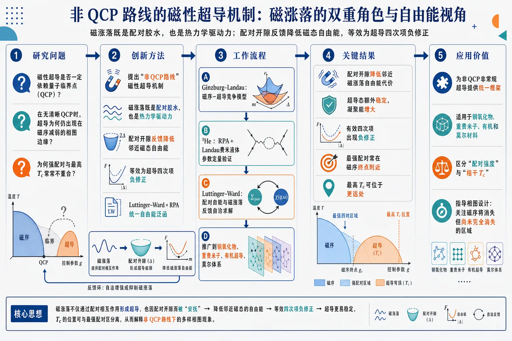
研究问题磁性超导是否一定依赖量子临界点驱动？论文要回答的是：当清晰的QCP并不存在时，超导为何仍会优先出现在磁序减弱、消失的相图边缘，以及强配对与最高Tc为何常常不重合。创新方法提出“非QCP路线”的磁性超导机制：把磁涨落既视为配对胶水，又视为热力学驱动力。核心Aha点是，配对开隙会反馈性降低附近“尚未实现/正在消失”的磁态自由能，等效为对超导四次项的负修正，从而自洽稳定配对；并用Luttinger–Ward + RPA把这种反馈写进同一自由能泛函。工作流程先用Ginzburg–Landau建立磁序与超导竞争的最简耦合模型；再在³He中用RPA和Landau费米液体参数定量展示磁涨落诱导配对；随后引入Luttinger–Ward自由能泛函，把配对自能与磁涨落的反馈统一求解；最后将该机制推广到铜氧化物、重费米子、有机超导和莫尔体系，解释无明显QCP时的超导出现位置。关键结果结果表明：配对开隙会降低邻近磁涨落的自由能代价，使超导态额外稳定；有效四次项出现负修正，凝聚能增大。理论上可解释最强配对往往出现在磁序终点附近，而最高Tc可能位于更远处。³He等体系中，磁涨落增强与Tc上升相一致，支持该机制。应用价值为理解非QCP非常规超导提供统一框架，适用于铜氧化物、重费米子、有机和莫尔材料。它帮助区分“配对强度”和“相干Tc”，解释为何最大能隙不等于最高转变温度，并为寻找新型高温超导材料提供相图设计原则：关注磁序即将消失但尚未完全实现的区域。《Non-Quantum-Critical Routes to Magnetic Superconductivity》（None，）
第一部分：核心概览
这篇论文把磁性超导的主导逻辑从“量子临界点驱动”推进到“失配/消失的磁序所带来的自由能激励”驱动：当邻近磁序无法充分实现时，配对开隙可降低相关涨落态的自由能代价，从而在远离明显 QCP 的相图边缘强化配对。核心贡献是把“配对胶水”与“配对的热力学稳定性”分开处理，并用 Luttinger–Ward + RPA 给出可推广的微观机制。超流 ³He 被用作标杆，随后将同一逻辑推广到铜氧化物、重费米子、有机物与莫尔体系。
---
第二部分：结构化快速回顾
《Non-Quantum-Critical Routes to Magnetic Superconductivity》（None，）
- 背景：传统磁性超导框架多依赖 QCP；但大量体系中超导出现时并无清晰量子临界点，且最大 Tc 往往不在最强配对处。
- 方法：从 Ginzburg–Landau 直觉出发，结合 RPA、Luttinger–Ward 自洽自由能泛函，分析配对对邻近磁涨落的反馈。
- 结果：配对开隙会降低附近未实现磁序的自由能代价，产生负的四次项修正，进而稳定超导；强配对可出现在磁序消失边缘，而非 Tc 峰值处。
- 讨论：超导配对强度 与 相干 Tc 需要区分；强绑定会压低 Tc，因此“最大能隙”与“最高转变温度”可分离。
- 局限：主要基于 RPA-Luttinger–Ward 近似；电子涨落体系中 Migdal 定理一般不成立，顶角修正未完整纳入。
- 结论：磁性超导的组织原则不必是临界性本身，而是对“未实现/正在消失的磁序”的热力学邻近性。
---
第三部分：逐章节冷凝解析
Abstract
Non-QCP 组织原则
- 核心命题是：超导并不总是由可见的 QCP 定义；更普遍的组织原则是“proximity to unrealized or disappearing magnetic order”。英文直引：*"the relevant organizing principle is therefore not quantum criticality itself, but proximity to unrealized or disappearing magnetic order."*
- 关键热力学机制是：当磁序“incipient but cannot be fully realized”时，开隙能降低涨落磁态的自由能代价。直引：*"the opening of a pairing gap lowers the free-energy cost of the nearby fluctuating magnetic state."*
- 因而最强配对未必对应最高 Tc，而可能出现在靠近磁序消失的一侧。直引：*"the strongest pairing tendency can sometimes occur at the edge of the superconducting dome closest to the loss of magnetism, even when T_c itself is relatively small there."*
---
I Introduction
标准的磁性超导图景以 QCP 为中心，但解释力不足
- 主流叙事把磁性涨落当作 pairing glue，尤其是“*near a magnetic quantum critical point (QCP)*”。直引：*"This framework is natural when a quantum critical point is present below the peak of the T_c dome."*
- 问题不在于“是否存在吸引相互作用”，而在于“为什么超导恰好在磁序变弱、消失处出现”。直引：*"why and where should superconductivity ever have the incentive to emerge when its energy scales are so small?"*
- 超导的 condensation energy 通常远小于磁序能标，单靠配对吸引难解释其热力学动机。直引：*"the characteristic energy associated with magnetic order is so much larger than typical condensation energies."*
配对不仅来自胶水，也来自自由能驱动
- 关键观点是：当附近磁序变弱时，超导不只是“被允许”，而是“变得在能量上更有利”。直引：*"superconductivity becomes energetically competitive only as magnetic order becomes weaker and more fragile."*
- 配对开隙会降低周围未实现磁态的自由能，从而“反过来”稳定超导。直引：*"The opening of a pairing gap can lower that cost and thereby provide an additional stabilization of the paired phase."*
- 因此磁性同时扮演两种角色：提供吸引相互作用，也提供“energetic drive”。直引：*"magnetism does more than furnish a pairing interaction ... it creates an energetic drive toward pairing itself."*
QCP 叙事并非唯一解释
- 文中明确把“超导等于量子临界性”视为一种过强的社区共识。直引：*"there is a widespread belief in the community that electronic superconductivity is generically described by and is equivalent to quantum criticality."*
- 另一种相图形态是：最大 Tc 与磁性消失点并不重合，配对最强反而出现在磁母相边缘。直引：*"the strongest pairing ... is in the region closest to the endpoint of the magnetic phase."*
- 铜氧化物被用作原型：最大能隙 Δ 接近磁序终点，但 Tc 峰值远离该点。直引：*"the largest gap, shortest coherence length or highest pairing scale lies closest to the disappearance of magnetic order, even when the superconducting transition is maximum elsewhere."*
强配对与高 Tc 需要区分
- 最高 Tc 不必对应最强配对，因为强绑定会降低配对对的迁移率。直引：*"stronger pairing need not imply larger T_c"*
- 这一点与 Nozières–Schmitt-Rink 物理一致：强绑定极限下 Tc 被压低。直引：*"T_c is suppressed as the underlying pairing scale grows."*
- 关键机制是“Cooper 对在晶格上的 mobility impaired”。直引：*"This reflects the impaired mobility of the Cooper pairs on a lattice."*
非 QCP 类体系范围很广
- 不只有铜氧化物。还包括超流 ³He、重费米子 CeCoIn₅ 和 PuCoGa₅、有机超导、莫尔超导。直引：*"This non-QCP structure ... is not confined to the cuprates."*
- 这些体系的共同点不是可见磁有序，而是“incipient or virtual”磁性。直引：*"superconductivity is associated not with an observed magnetic phase boundary, but is driven by magnetism that remains incipient or virtual."*
反馈机制是全文的理论轴心
- 这里的 feedback 不是外加修正，而是配对开隙改变磁涨落本身，并降低其自由能贡献。直引：*"the pairing gap modifies the same magnetic fluctuations that mediate pairing, and this change lowers their contribution to the free energy."*
- 该机制被称为“self-stabilized”超导。直引：*"the paired state is 'self-stabilized' by feeding back on the pairing fluctuations which initially produce it."*
---
I.1 Organization of the paper
章节路线图
- I.2 给出最简 Ginzburg–Landau 直觉；II 以 ³He 为标杆；III 用 Luttinger–Ward 处理涨落态的反馈；IV 讨论无明显 QCP 的具体材料。直引：*"We start in Sect. I.2 with a brief sketch of Landau-Ginzburg theory ..."* 与 *"In Sect. IV we turn to three specific materials without a clear quantum critical point inside the superconducting dome."*
- 关键公式是第 (3.9) 式，描述配对反馈导致自由能中四次项的负修正。直引：*"This leads to a main formal result and central equation [Equation (3.9)]."*
- Appendices B and C 将机制推广到一般 Eliashberg 框架。直引：*"the same feedback extends naturally to a generalized Eliashberg framework."*
---
I.2 Ginzburg-Landau illustration of the energetic mechanism
最简耦合自由能
- 采用标准耦合形式
(F(M,Δ)=aₘ M²⁺fracbₘ2M⁴⁺aₛ|Δ|²⁺fracbₛ2|Δ|⁴⁺γ M²|Δ|²),
且 bₘ>0, bₛ>0, γ>0。这意味着磁序与超导相互竞争。
直引：*"The positive coupling γ describes the competition between magnetic and superconducting order."*
消去磁序后，超导有效系数被重整化
- 极小化得到
(M²⁼⁻⁽aₘ₊γ|Δ|²⁾/bₘ)。
代回后得到
(aₛeff=aₛ₋γ aₘ/bₘ),
(bₛeff=bₛ₋γ²/bₘ)。
直引：*"The negative correction to (bₛ) is the phenomenological manifestation of the constructive feedback effect."*
- 若处于磁相内，(aₘ<0)，则
(aₛeff=aₛ₊γ |aₘ|/bₘ>aₛ)。
这说明静态磁序抑制超导。直引：*"Static magnetic order suppresses superconductivity through the quadratic coupling."*
反馈降低四次项并提高凝聚能
- 配对建立后，磁序自洽调整带来
(δ b=-γ²/bₘ<0)。
这使凝聚能
(Ecₒₙd=-(aₛeff)²/(2bₛeff))
增大。直引：*"the superconducting condensation energy ... is increased because (bₛeff<bₛ)."*
- 两个结论同时成立：一方面磁序压制配对，另一方面磁序的自洽重整化又额外稳定超导。直引：*"Thus the magnetic sector plays two distinct roles."*
- 这套 GL 图像只适用于有序磁相；后文将把同样的稳定化机制推广到涨落磁相。直引：*"the same stabilization mechanism also operates in the paramagnetic phase."*
---
II Helium-3: A Prototype Non-Quantum-Critical Magnetic Superconductor
为什么 ³He 是标杆系统
- ³He 是“没有 QCP、没有液相磁序”但仍由磁涨落配对的典型例子。直引：*"there appears to be no QCP and ... no magnetic phase in the liquid state."*
- 它的优势在于正常态可由 Landau Fermi-liquid theory 准确描述，Landau 参数来自实验。直引：*"the pairing interaction and transition temperature can be related semi-quantitatively to experimentally determined interaction parameters."*
- 因而可半定量检验“磁涨落 → 配对”的微观链条。直引：*"a benchmark system."*
压强越高，Tc 越高，但磁有序只在固相出现
- 超流转变温度在接近固化边界时达到峰值。直引：*"The superfluid transition temperature reaches its maximum ... as the system is pushed toward the magnetically ordered solid."*
- 液相中并无磁有序，但 Pauli 自旋磁化率、比热、中子散射响应都显著增强。直引：*"strong enhancement of the normal-state Pauli spin susceptibility, specific heat, and neutron-scattering response."*
- 图 2(b) 所示 χₛ 与 Tc 随压强同向上升，说明临近磁性是相关而非偶然。直引：*"the Pauli susceptibility rises with pressure in close parallel with the transition temperature."*
Paramagnon 图像给出配对起源
- Anderson–Brinkman 方案把配对机制归因于铁磁自旋涨落交换。直引：*"the pairing interaction responsible for superfluidity in 3 He arises from the exchange of ferromagnetic spin fluctuations."*
- 形成的是 p-wave, spin-triplet pairing。直引：*"provide the attractive interaction leading to p-wave, spin-triplet pairing."*
- 因为磁有序只在液-固转变后才出现，所以这说明“强配对靠近消失磁性”不需要液相里真的有磁边界。直引：*"does not require either a magnetic phase boundary within the paired fluid itself or a conventional quantum critical point."*
---
II.1 Transition temperature in 3He via magnetic fluctuations and RPA theory
从接触排斥到有效 paramagnon 相互作用
- 以 Hubbard 型短程排斥
(hat H=Isum c^daggerₚ̆ₐᵣᵣₒwcₚ̆ₐᵣᵣₒwc^daggerdₒwₙₐᵣᵣₒwcdₒwₙₐᵣᵣₒw), I>0 为起点。
直引：*"As a simplified description ... we begin with a Hubbard-like contact repulsion."*
- 在 RPA 下得到有效相互作用
(J(q)=frac12 fracI1-Iḩi₀₍q)),
(V(q)=frac12 fracI1+Iḩi₀₍q))。
这把自旋交换与自旋无关部分分开。
直引：*"A spin-rotation-invariant summation ... yields (hat Heff)."*
Landau 参数与实验可直接对接
- 在静态前向散射极限 (|q|→0,; |Ømega|/(v_F|q|)→0) 下，投影到自旋对称/反对称通道并展开到角动量 ℓ，得到 Landau quasiparticle scattering amplitudes (Aₑₗₗₛ,a)。
直引：*"defined by (|q|→ 0) and (|Ømega|/(v_F|q|)→ 0)."*
- 关键关系式之一：
(A₁^s=fracN_FZ(9J₁₋₃V₁₎)。
这里 Z=1+łambda_Z，代表准粒子质量增强 (m^*/m)。
直引：*"where (Z=1+łambda_Z) is the quasiparticle frequency-renormalization factor."*
配对强度与 Tc 公式
- p-wave 自旋三重态的维度无量纲配对参数
(łambdaΔell⁼¹=N_F(J₁₋V₁₎)。
直引：*"the dimensionless pairing strength parameter may be written as (łambdaΔell⁼¹=N_F(J₁₋V₁₎)."*
- 采用 McMillan 形式：
(T_cpropto e⁻Z/łambdaΔell⁼¹=e⁻⁽¹⁺łambda_Z⁾/łambdaΔell⁼¹)。
直引：*"the resulting transition temperature is then (T_cpropto e⁻Z/łambdaΔell⁼¹)."*
- 数值上，Eliashberg 计算给出能量截止约 0.1 T_F，Anderson–Brinkman 的估计略小，约 0.05 T_F。
直引：*"a characteristic energy cutoff of order (0.1,T_F) ... estimated a somewhat smaller value, (sim 0.05,T_F)."*
- 在磁涨落主导、忽略 (V₁) 时，得到简式
(T_c/T_F approx 0.1e⁻⁹/A₁^s)。
直引：*"This result is useful ... (T_c/T_Fapprox 0.1 e⁻⁹/A₁^s)."*
质量重整化不是小修正
- (łambda_Z) 可非常大，甚至超过 (łambda_Δ)。直引：*"λ_Z is very large, even exceeding λ_Δ."*
- 把裸耦合约 4.5 压缩到 (łambdaΔ/(1+łambda_Z)sim 0.2)，才能与实验更吻合。直引：*"reduces the effective coupling from the bare value (sim 4.5) to ... (sim 0.2)."*
- 这强调同一涨落既是配对来源，也是质量增强来源。直引：*"the same fluctuation spectrum contributes both to the pairing kernel ... and to the mass renormalization."*
方法论边界
- Eliashberg 原型依赖 Migdal 定理，但电子涨落体系中这一般不成立。直引：*"Migdal’s theorem, which is not generally valid for electronically mediated pairing."*
- 顶角修正原则上应加入。直引：*"Vertex corrections, negligible in the phonon problem, should in principle be included."*
---
III Constructive Feedback (Pairing Incentives) in Electronically Driven Superconductors
问题重新表述为自由能问题
- 真正要解释的是：为什么“最强配对尺度/配对能隙”会沿着磁序消失方向移动。直引：*"why the strongest pairing scale or pairing gap follows the disappearance of nearby order."*
- Tc 由二次项或线性化 gap equation 决定；相稳定性与凝聚能则由四次及更高阶项决定。直引：*"Tc is determined by the quadratic term ... whereas the stability of the ordered state and its condensation energy depend on quartic and higher-order terms."*
Luttinger–Ward 是核心框架
- 采用 Luttinger–Ward 泛函
(ØmegaLW= -frac12 Tr[łn(-G₀⁻¹+Σ)+Σ G]+Φ)。
直引：*"the Luttinger–Ward functional ... (Ømegaₘ̊ LW)."*
- Φ-derivable 近似保证守恒律与热力学恒等式。直引：*"the construction respects the associated conservation laws and thermodynamic identities."*
- 把 RPA 放入该框架，就能把配对自能与磁涨落作为相互锁定的量处理。直引：*"the pairing self-energy and the magnetic fluctuations as interlocked quantities."*
RPA paramagnon 自由能
- 采用
(ΦRPA=frac12 Tr[łn(1-Ihatḩi)])。
直引：*"Within this approximation, (ΦRPA=frac12 Tr[łn(1-Ihatḩi)])."*
- 这相当于 paramagnon 的自由能，是声子自由能
(Φₚₕₒₙₒₙ=frac12 Tr[łn D⁻¹])
的磁学对应物。直引：*"It is the magnetic analog of the phonon free-energy contribution in Eliashberg theory."*
- 这里的 (Φ) 包含环图与粒子-空穴交换图的全阶求和，其他图被忽略。直引：*"ring and particle-hole exchange diagrams summed to all orders."*
反馈的物理含义
- 反馈项的本质是：配对开隙改变同一套磁涨落的贡献，并降低其自由能。直引：*"the pairing gap modifies the same magnetic fluctuations that mediate pairing, and this change lowers their contribution to the free energy."*
- 因而，靠近但未实现的磁性状态会给超导提供额外稳定化。直引：*"weakening a nearby correlated magnetic state ... can enhance superconductivity."*
- 这一机制并不依赖单一微观模型，负号反馈是更一般的电子介导配对特征。直引：*"the associated enhancement of the energy gain arises rather generally for electronically mediated pairing."*
---
第四部分：深度理解与语言支持
1) 术语解析
Incipient
- 语境含义：已经“接近出现”、但尚未形成可观测长程有序的状态。
- 微妙差别：不是“弱”，而是“未完成实现”；在这篇语境里，incipient magnetism 比“fluctuating magnetism”更强调相图邻近性。
Constructive feedback
- 语境含义：配对不是单向度地被磁涨落“提供胶水”，而是反过来改变涨落本身，使自由能进一步降低。
- 微妙差别：区别于普通“相互作用增强”，这里强调的是自洽的热力学回馈，并通过负的四次项修正体现。
Phi-derivable
- 语境含义：从某个 Luttinger–Ward Φ 泛函通过功能微分得到自能的近似。
- 微妙差别：不仅是计算方法，更意味着该近似在热力学上一致，能够保持守恒律和状态方程。
Pairing glue
- 语境含义：导致 Cooper 配对的吸引相互作用来源。
- 微妙差别：这里只是“使对形成”的一半原因；另一半是“为什么在那儿形成”的自由能驱动力。
Coherence
- 语境含义：配对玻色对的相干运动和长程相位秩序能力。
- 微妙差别：strong pairing 未必意味着高 Tc，因为强绑定会损害相干迁移率。
2) 疑难查证：为什么“最强配对”不等于“最高 Tc”？
可以把问题分成两层：
- 配对强度 决定能隙或绑定能大小；
- 相干性 决定这些配对对能否有效流动并形成宏观超导。
在强耦合极限下，Cooper 对虽然“绑得更紧”，但在晶格上更难移动，相当于“质量变重”，于是 Tc 反而下降。这里的关键句是：*"T_c is suppressed as the underlying pairing scale grows."*
所以在相图上会出现一种看似反直觉的布局：最大能隙 靠近磁序终点，而 最高 Tc 可能位于稍远处。
---
第五部分：创新评估与关联
1) 新颖性判断
相较于过去 2–5 年中常见的相关框架，这篇工作的新意主要有三点：
第一，重构了“磁性超导的控制变量”
- 传统工作多围绕“是否存在 QCP”或“磁涨落是否足够强”展开。
- 这里把控制变量改写为：附近磁序是否正在消失、但尚未完成实现。这使得没有可见 QCP 的相图也能被统一解释。
第二，把“配对胶水”与“配对稳定性”严格拆开
- 现有大量工作只回答“什么提供吸引相互作用”。
- 这里进一步给出“为什么配对会在特定区域最有热力学优势”的答案，并把它写成 Luttinger–Ward 自由能中的负反馈项。
- 这一步是实质性的，因为它解释了为何最大能隙不必对应最高 Tc。
第三，给出可推广的微观机制，而非仅是现象学图像
- 通过 RPA-Luttinger–Ward，反馈效应不是人为附加，而是从同一自由能泛函中自洽地产生。
- 这种结构比“hidden QCP”叙事更一般：不要求临界性被超导掩蔽，也允许第一性地存在“不可完全实现的磁序”或“虚拟磁涨落”。
- 因此，它解决了前人长期悬而未决的问题：为什么很多非铜氧化物、无明显 QCP 的非常规超导，仍然把最强配对放在磁序消失边缘？
如果需要，我可以继续把这篇文章进一步整理成：
- 一页式图表笔记，
- 公式推导链路图，
- 适合组会汇报的 10 页PPT提纲。
-
16
📊 含图深析
📄 摘要：作者报道无催化剂 CVD 生长的层状 1T-CrS₂，得到稳定的 vdW 铁磁体，具有面外易轴各向异性且居里温度高于室温。输运上出现约 80 K 的半金属-绝缘体转变、最高 350 K 的负磁阻，并观测到拓扑霍尔效应。
📖 英文原文
arXiv:2607.23625v1 Announce Type: new Abstract: The realization of correlated layered magnets hosting robust ferromagnetism with emergent topological transport remains a key challenge in quantum materials. Here we report the first catalyst-free chemical vapour deposition growth of layered 1T-CrS₂, establishing a highly stable vdWs ferromagnet with an out-of-plane easy-axis anisotropy and a Curie temperature above room temperature. Transport measurements reveal a semimetal--insulator crossover near 80 K and pronounced negative magnetoresistance up to 350 K. A topological Hall effect emerges below 30 K, a rare signature of correlated transport in layered transition-metal dichalcogenide ferromagnets. First-principles calculations show that spin--orbit coupling gaps Dirac-like crossings, while electronic correlations reconstruct the Fermi surface by suppressing electron pockets and reducing the carrier density, enhancing momentum-dependent out-of-plane spin polarization. Magnetic measurements, supported by Heisenberg exchange calculations, reveal strong nearest-neighbour ferromagnetic exchange that stabilizes long-range ferromagnetism. Our results establish 1T-CrS₂ as a rare correlated 3d layered ferromagnet in which electronic correlations and spin--orbit coupling cooperatively drive emergent topological transport.
💡 亮点：作者首次用无催化剂 CVD 生长出层状 1T-CrS₂，得到室温以上 Curie 温度、面外易轴各向异性的稳定 vdW 铁磁体。输运显示约 80 K 的半金属-绝缘体转变、最高 350 K 的负磁阻，并出现拓扑霍尔效应，说明关联与拓扑输运可在同一二维磁体中共存。
📖 展开分析 + 配图
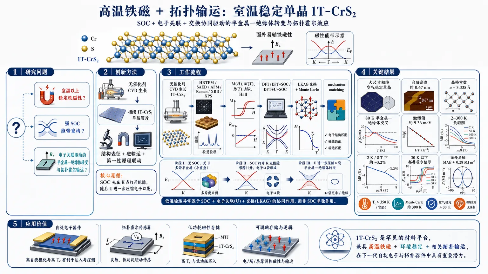
研究问题如何在二维 1T-CrS₂ 中同时实现并证明：室温以上稳定铁磁性、强自旋轨道耦合诱导的能带重构，以及由电子关联驱动的半金属—绝缘体转变和拓扑霍尔输运？核心是弄清低温输运异常究竟来自 SOC 单独作用，还是电子关联、交换分裂与 SOC 的协同重构。创新方法首次用无催化剂 CVD 生长相纯、可暴露空气的 1T-CrS₂ 单晶薄片；再用“结构表征 + 磁输运 + 第一性原理”联动证明机制。Aha 点在于：SOC 先把 K 点附近 Dirac 型交叉劈裂成有质量能带，随后 U 进一步压低电子口袋、降低载流子密度，最终把费米面从多口袋半金属压缩为小口袋甚至绝缘样态，形成“关联驱动的拓扑输运”图景。工作流程无催化剂 CVD 生长 1T-CrS₂ → HRTEM/SAED/AFM/Raman/XRD/XPS 确认相纯 1T 结构、层状厚度和化学态 → 测量 M(H)、M(T)、R(T)、MR、Hall 评估磁性与输运 → 用 DFT、DFT+SOC、DFT+U+SOC 逐级计算能带与费米面 → 结合 LKAG 交换计算和 Monte Carlo 模拟提取铁磁交换、磁各向异性与 Tc → 将实验转变温度、负磁阻和拓扑霍尔信号与理论重构对应起来。关键结果获得大尺寸、相纯、空气稳定的 1T-CrS₂ 单晶，台阶高度约 0.67 nm，晶格常数 a=3.335 Å；实验观察到约 80 K 的半金属—绝缘体交叉，激活能约 9.36 meV；2–300 K 全温区出现负磁阻，2 K、8 T 下约 -3.2%；30 K 以下出现拓扑霍尔信号；材料具有面外易轴和强单轴各向异性，MAE 约 0.28 MJ m⁻³；铁磁有序可延续到 350 K 以上，Monte Carlo 预测 Tc 约 390 K。应用价值证明 1T-CrS₂ 是少见的“高温铁磁 + 环境稳定 + 相关拓扑输运”二维平台，可作为二维自旋电子学、拓扑霍尔器件、低功耗磁传感与可调磁存储的材料候选；同时为理解电子关联、SOC 与交换相互作用如何共同塑造二维磁性和输运提供了可直接迁移的材料范式。第一部分：核心概览
这项工作把相纯 1T-CrS₂ 建成了一个同时具备室温以上铁磁性、强 自旋—轨道耦合（SOC）重构、相关驱动半金属—绝缘体转变与拓扑霍尔响应的二维平台。核心贡献在于：用无催化剂 CVD 首次实现可稳定暴露于空气的 1T-CrS₂，并用实验与第一性原理共同证明其低温载流子重构并非单纯 SOC 效应，而是电子关联、交换分裂与 SOC 协同造成的费米面塌缩与能隙打开。这使 1T-CrS₂ 成为过去几年二维磁性 TMDC 中少见的“高 Tc + 环境稳定 + 拓扑输运”三位一体体系。
---
第二部分：结构化快速回顾
《Observation of correlation-driven topological transport and robust ferromagnetism in 2D CrS₂》（None，）
背景
二维 vdW 磁体的关键难题是把长程铁磁性、电子关联、电子拓扑和环境稳定性放进同一材料。1T-CrS₂ 因 Cr 3d t₂g 电子、近 90° Cr–S–Cr 超交换和八面体晶场而极具潜力，但相纯合成困难。
方法
采用无催化剂化学气相沉积（CVD）生长 1T-CrS₂；结合 HRTEM、SAED、AFM、Raman、XRD、XPS 进行结构表征；用 M(H)、M(T)、R(T)、MR、Hall 测试磁输运；用 DFT / DFT+SOC / DFT+U+SOC、LKAG 交换计算和 Monte Carlo 模拟解释机理。
结果
获得相纯、层状、空气稳定的 1T-CrS₂，台阶厚度约 0.67 nm，晶格常数 a = 3.335 Å。输运出现约 80 K 的半金属—绝缘体转变，激活能约 9.36 meV；负磁阻在 2–300 K 持续存在，2 K 时 8 T 下约 −3.2%；30 K 以下出现拓扑霍尔；磁性表现为面外易轴、MAE 0.28 MJ m⁻³，磁有序可延续到 350 K 以上，Monte Carlo 得到 Tc ≈ 390 K。
讨论
SOC 打开 K 点附近 Dirac 型交叉的能隙，U 进一步压低电子口袋、降低载流子密度；低温输运由相关重构后的多能带态主导。铁磁基态来自CrS₆ 八面体中的近 90° 超交换与中程交换网络，低温拓扑响应与磁纹理/自旋极化输运耦合。
局限
可见文本中未完整展示Hall 信号分解、拓扑霍尔背景扣除过程以及可能的实空间磁纹理直接成像；因此微观起源的最终判据在截取内容里尚未完全闭合。
结论
1T-CrS₂ 被确立为少见的相关 3d 层状铁磁体，其电子关联 + SOC + 铁磁交换共同驱动了可观测的拓扑输运，具备二维自旋电子学与拓扑器件潜力。
---
第三部分：逐章节冷凝解析
Abstract
Catalyst-free growth establishes phase-pure 1T-CrS₂
- 核心突破是首次实现“the first catalyst-free chemical vapour deposition growth of layered 1T-CrS₂”，把长期难以相纯获得的 1T 相做成了可生长、可表征、可器件化的平台。
- 该材料被定义为“a highly stable vdWs ferromagnet with an out-of-plane easy-axis anisotropy and a Curie temperature above room temperature”，把环境稳定性与室温以上铁磁性绑定在一起。
- 这里的关键不是单纯高 Tc，而是易轴各向异性与vdW 层状结构同时存在，为二维磁序稳定提供了必要条件。
Transport reveals a correlation-driven reconstruction
- 输运的两个里程碑是“a semimetal–insulator crossover near 80 K”和“pronounced negative magnetoresistance up to 350 K”。
- 前者对应低温激活型行为，后者说明即使到高温，输运仍强烈受自旋无序散射控制，而不是普通金属的轨道磁阻主导。
- 激活能在正文中给出为 Δ ≈ 9.36 meV，属于很小的重构能标，指向费米能附近的窄缝隙/带分裂。
Topological Hall effect marks correlated topological transport
- 低温出现“A topological Hall effect emerges below 30 K”，这是层状过渡金属硫族化物铁磁体中少见的相关输运信号。
- 拓扑霍尔的出现把普通磁阻问题推进到Berry 曲率/磁纹理/多带重构层面，说明低温态并非简单自旋极化金属。
DFT attributes the reconstruction to SOC plus correlations
- 计算给出“spin–orbit coupling gaps Dirac-like crossings”，同时“electronic correlations reconstruct the Fermi surface by suppressing electron pockets and reducing the carrier density”。
- 这组结果把输运异常从“磁性导致的散射变化”提升为“电子结构被重建”。
Exchange calculations support robust ferromagnetism
- 磁性部分由 Heisenberg exchange calculations 支撑，结果是“strong nearest-neighbour ferromagnetic exchange that stabilizes long-range ferromagnetism”。
- 这使高温铁磁不再只是磁滞回线现象，而是有清晰的交换常数和有限温模拟支撑。
---
I Introduction
Two-dimensional magnets need anisotropy and strong exchange
- 2D 磁体的背景从 Mermin–Wagner theorem 出发：各向同性二维体系在有限温度下难以保持长程磁序。
- 因此，真正可稳定的二维铁磁体必须依赖磁各向异性与强交换相互作用；文中直接强调 “finite magnetic anisotropy and strong exchange interactions can stabilize ferromagnetism”。
Magnetism, correlations, and topology are jointly sought
- 研究目标不是单一磁性，而是同时容纳磁性、电子关联和能带拓扑，因为这三者可诱发unconventional Hall responses 和非平庸自旋纹理。
- 现实挑战是：能把这三类效应放进同一二维材料且还能实验上稳定控制的体系非常少。
Cr-based TMDCs are a promising but incomplete family
- CrSe₂、CrTe₂ 等 Cr 基 TMDC 已显示出强关联和本征磁性，但在环境稳定性、可调性、磁序温度和拓扑输运的统一上仍不完整。
- CrI₃ 与 Cr₂Ge₂Te₆ 需要封装、导电性差、磁序温度偏低，说明“稳定铁磁 + 可输运 + 可拓扑化”并未被解决。
1T-CrS₂ is structurally favorable for correlation physics
- 1T-CrS₂ 的 octahedral 环境把 Cr 3d 电子放进部分占据的 t₂g manifold，天然增强电子关联。
- 近 90° Cr–S–Cr bonding geometry 使ferromagnetic superexchange 更可能发生，这是 Goodenough–Kanamori 规则下的典型铁磁有利构型。
- 文中把这点概括为 “an ideal system to explore how correlation-driven magnetism and SOC cooperate”。
Research aim is to connect structure, magnetism, and transport
- 最终目标是证明 1T-CrS₂ 中的低能电子态、磁序和输运并非孤立，而是彼此耦合：“intertwined electronic, magnetic, and topological transport properties”。
- 这为二维topological spintronics 提供了材料基础。
---
II Results and Discussions
Figure 1 links structure, transport, and electronic reconstruction
- 1T-CrS₂ 的层状结构包含 vdW gap，构成典型二维晶体。
- 图 1b 的 R(T) 显示“a semimetal-to-insulator crossover”。
- 图 1c–h 的计算按 DFT → DFT+SOC → DFT+U+SOC 逐级展示电子结构重构，图 1i–k 展示对应二维费米面从多口袋半金属到小口袋态的演化。
SOC lifts Dirac-like degeneracy
- 无 SOC 时，低能带有多条 Cr-t₂g 带穿越费米能，K 点附近出现Dirac-like band-crossing。
- 加入 SOC 后，原先简并的能带在 K 谷和 Γ–M 方向被劈裂，图中强调 “SOC lifts the band degeneracy and induces band splitting at the Fermi level”。
- 这一步说明 SOC 已经足以重构低能态，但不足以完全开缝。
Correlations suppress electron pockets and reduce carrier density
- 进入 DFT+U+SOC 后，能谱出现明显带重整化，费米能附近谱权被压低。
- 电子口袋在 K、M 点附近被抑制，二维费米面从多连通口袋压缩为 Γ 附近的小离散口袋。
- 这与实验中的低温绝缘化趋势一致，说明绝缘样行为主要是correlation-driven。
A massive Dirac description captures the α gap
- 低能区用 massive Dirac framework 描述：
“H(k)=ħv_F(kₓσₓ₊ₖ_yσ_y)+Δ_α/2 σ_z”
- 对应色散为
“E±(k)=±√[(ħv_Fk)²⁺⁽Δ_α/2)²]”
- 这意味着低能准粒子从无质量 Dirac 费米子变成带有效质量的激发，Δ_α 代表 SOC 和交换共同诱发的质量项。
Temperature-dependent gap models the crossover
- 温度依赖能隙写成
“Δ_α(T)= [Δ_SOC + λ[m(T)-m_c]] / [1+exp[-k(m(T)-m_c)]]”
- 其中 m(T) 是磁化强度，m_c 是触发费米面重构的临界磁化，λ 表示交换增强项，k 控制转变陡峭度。
- 这套参数化把磁化衰减和能隙收缩直接耦合，说明半金属—绝缘体转变与铁磁序并行演化。
---
II.1 Semimetal–insulator crossover in a correlated 1T-CrS₂
Crystal structure is the 1T octahedral phase
- 晶体属于六方 Pbar3m1 (No. 164)。
- Cr 位于 1a (0,0,0)，S 位于 2d (1/3,2/3,1/4) 和 (1/3,2/3,3/4)。
- 每层是 S–Cr–S trilayer，CrS₆ 八面体edge-sharing，层间靠 vdW 作用堆叠。
- 这种构型直接决定了 t₂g 轨道主导和近 90° 超交换通道。
Transport shows a low-temperature activated regime
- R(T) 在约 80 K 发生从半金属到绝缘体的交叉，文中给出 “T_I ≈ 80 K”。
- 高温区电阻随温度变化较弱，属于半金属输运。
- 低温区满足热激活关系 ρ(T) ∝ exp(Δ/k_B T)，提取 Δ ≈ 9.36 meV。
- 这么小的激活能意味着费米能附近只有轻微重构，而非大带隙半导体。
The semimetallic state is t₂g-based and Dirac-like
- 无 SOC 的 DFT 给出多个 Cr-t₂g 带穿越 E_F，形成电子口袋与空穴口袋并存的半金属。
- K 谷存在线性色散交叉，图中明确写出 “a Dirac-like band-crossing”。
- 低能态主要来自in-plane d orbitals 的混合，表现出orbital-selective 特征。
SOC reconstructs the low-energy topology without fully gapping it
- SOC 后，K 谷与 Γ–M 方向出现带劈裂，Dirac 型交叉变成gapped massive dispersion。
- 费米面变得畸变但仍保留多带半金属性质，说明SOC 是重构因子，不是唯一开缝因子。
- 文中强调 “SOC primarily reconstructs the low-energy electronic states rather than driving a complete topological transformation of the FS”。
U plus SOC produces the insulating-like state
- 在 DFT+U+SOC 中，谱权显著下降，电子口袋被压缩，费米面从大口袋收缩成 Γ 附近小碎片。
- 这一转变与实验绝缘化一致，证明低温态是correlation-driven，SOC 只是协同强化项。
- 文中直接写明 “a finite gap emerges only in DFT+U+SOC calculations”。
The α gap is the dominant low-energy reconstruction
- K 谷的主能隙被命名为 α，Γ 点附近还有较小的 β 隙。
- 文中指出 “The dominant gap α appearing at the K-valley with additional smaller gaps near the Γ point”。
- 这说明重构并非单点现象，而是多个谷点共同参与。
A continuous magnetic-gap coupling explains temperature evolution
- 低温下磁化接近饱和，交换分裂增强，Cr 的 dₓy、dₓz、d_yz 态被进一步重整。
- 高温下热涨落削弱交换极化，能隙连续减小，系统回到补偿型自旋极化半金属。
- 这使得半金属—绝缘体交叉与持续铁磁性可以同时成立，而不必诉诸相变断裂。
---
II.2 Catalyst-Free CVD Growth of Phase-Pure 1T-CrS₂
Large, faceted single crystals are obtained without catalyst
- 优化后的无催化剂 CVD 生长得到 “large (>15 μm), well-faceted hexagonal and triangular single crystals”。
- 这对器件制备很关键，因为后续磁输运需要大面积、单晶、低缺陷样品。
HRTEM and SAED confirm the 1T lattice
- HRTEM 显示无缺陷六方晶格，晶面间距约 0.29 nm 和 0.18 nm，对应 (100) 与 (110)。
- SAED 给出单一六方衍射花样，沿 [001] zone axis，无条纹、无超晶格点、无额外衍射环。
- 由 SAED 算得晶格常数 a = 3.335 Å，与理论优化值 3.34 Å 几乎一致。
AFM verifies ultrathin layered morphology
- AFM 测得台阶高度约 0.67–0.7 nm，与单个 S–Cr–S layer 一致。
- 这证明样品确为二维 vdW 层状薄片，且表面洁净、台阶边界清晰。
Raman fingerprints the octahedral 1T phase
- Raman 三个特征峰分别为 R1 = 177.0 cm⁻¹、R2 = 248.5 cm⁻¹、R3 = 280.2 cm⁻¹。
- R2 和 R3 的间隔 Δ ≈ 31.7 cm⁻¹，接近已报道的 32 cm⁻¹。
- 这一模式组合与 1T 结构相符，而非 2H 相。
XRD confirms c-axis stacking and phase purity
- XRD 中只有明显的 (00l) 反射，尤其是 (002) 与 (004)，峰位在 15.86° 和 30.06°。
- 这说明层间沿 c 轴 有序堆叠，并且相纯度高。
XPS fixes the chemical states and long-term stability
- Cr 2p 显示两个自旋轨道分裂双峰，分裂约 9.5 eV，主峰中心约 576 eV，对应 Cr⁴⁺。
- S 2p 中低结合能双峰 160.0/161.0 eV 对应晶格 S²⁻；高结合能约 169 eV 的弱峰来自表面氧化。
- 同一组 XPS 在空气暴露一年后再测，峰位和线形几乎不变，证明环境稳定性极强。
---
II.3 Room-temperature ferromagnetism and Heisenberg exchange interactions in 1T-CrS₂
Out-of-plane magnetization proves uniaxial anisotropy
- 10 K 时，面外磁场下磁化在约 3 T 达到 (1.3–1.4)×10⁻⁴ emu。
- 同条件下，面内只有 (4–5)×10⁻⁵ emu。
- 这一显著差异说明out-of-plane direction 是easy axis。
- 磁各向异性能 MAE = 0.28 MJ m⁻³，实验上属于清晰的单轴铁磁。
The coercive field is small, indicating soft ferromagnetism
- 磁滞回线的矫顽力仅约 100–200 Oe。
- 这意味着磁畴翻转容易、钉扎较弱，属于soft ferromagnetic behaviour。
FC/ZFC splitting appears below about 80 K
- 在 M(T) 中，FC 与 ZFC 曲线在 ~80 K 以下开始明显分叉。
- 这通常对应磁有序形成和磁畴冻结。
- 即使到 300 K，仍保留可测磁化，说明磁相关性远强于低温局域起伏。
Curie temperature exceeds 350 K experimentally
- 到 350 K 仍未出现明确磁相变，因此 Tc > 350 K。
- 这把 1T-CrS₂ 放进了少数室温以上二维磁体的行列。
DFT reproduces the magnetic anisotropy
- 通过 MAE = E∥ab − E⊥ab 计算得到理论值 0.27 MJ m⁻³。
- 理论与实验 0.28 MJ m⁻³ 高度一致，说明磁各向异性的物理起源被抓住了。
LKAG exchange shows predominantly ferromagnetic couplings
- 采用 Liechtenstein–Katsnelson–Antropov–Gubanov (LKAG) 形式计算交换常数。
- Jᵢⱼ 随 Cr–Cr 距离衰减，但多个近邻壳层仍保持ferromagnetic。
- 有趣之处在于，second- and third-nearest-neighbour couplings become comparatively stronger，提示交换不是简单最近邻模型，而是带有显著itinerant 成分。
The exchange hierarchy follows the 1T octahedral geometry
- 最近邻 Cr–S–Cr 角接近 90°，符合 Goodenough–Kanamori 规则下的铁磁超交换。
- 更远邻的交换由 Cr-3d / S-3p hybridization 增强。
- 文中还明确指出远邻很快衰减，因此没有显著的反铁磁挫折。
The microscopic spin state is S=1 from t₂g filling
- 在八面体晶场中，Cr 3d 分裂为低能 t₂g 与高能 e_g。
- 对 3d² 构型，电子占据 t₂g，形成 S = 1 局域矩。
- 这为强铁磁交换与高 Tc 提供电子结构基础。
Monte Carlo predicts Tc ≈ 390 K
- 使用 UppASD 做有限温模拟，得到 M(T) 与 C_V。
- C_V 在 Tc ≈ 390 K 处出现尖峰，标志连续二级铁磁相变。
- 这比实验“超过 350 K”更进一步，给出定量上限外推。
Comparison to known 2D magnets is favorable
- 表中对比了 1T-VSe₂、1T'-MnS₂、CoS₂、CrI₃、1T-CrTe₂、CrSe₂ 等体系。
- 1T-CrS₂ 的独特组合是：>350 K、topological Hall、>1 year stability、CVD 生长。
- 这几项同时满足的二维 TMDC 磁体极少。
---
II.4 An emergent Topological Hall fingerprint and its microscopic origin
Magnetoresistance is strongly negative over the full temperature range
- MR 定义为 MR = [Rxx(B) − Rxx(0)] / Rxx(0)，测量范围 2–300 K，磁场方向为 H ⟂ ab。
- 全温区基本都是negative MR，到 300 K 仍没有明显正轨道磁阻。
- 2 K、8 T 下磁阻约 −3.2%，到 300 K 降至 <0.1%。
Negative MR points to spin-dependent scattering
- 层状 TMDC 中，法向磁场通常更容易产生弱正轨道磁阻；这里却几乎没有正贡献。
- 因此输运主导项是spin-disorder scattering，而磁场通过抑制热涨落降低散射、减小电阻。
- 这意味着电荷输运与磁构型强耦合，而不是独立的常规导电过程。
The layered structure amplifies magnetic sensitivity of transport
- vdW 层状结构导致层间耦合弱、磁各向异性更强，使载流子对自旋纹理更敏感。
- 随温度升高，自旋无序增强，磁场能压低散射的幅度逐渐减弱，因此负 MR 变小。
- 这一路径与低温拓扑霍尔响应并不矛盾，反而为其提供了磁背景。
The Hall signal begins to show multiband nonlinearity
- 图 4b 的可见文字写到 “The nonlinear behaviour at low temperatures indicates multiband transport”。
- 这说明 Hall 线性部分之外已有多带参与，后续从多带曲线中提取 topological Hall 成分是合理的。
Topological Hall is tied to correlated magnetism
- 摘要已明确指出 “A topological Hall effect emerges below 30 K”。
- 结合前面的费米面重构与强铁磁交换，低温拓扑霍尔更像是相关磁背景上涌现的 Berry 曲率/磁纹理信号，而非孤立杂散现象。
---
第四部分：深度理解与语言支持
1. 术语解析
Correlation-driven
- 不是“有相关性”，而是电子—电子相互作用足以改写低能电子结构。
- 在这里，它意味着 U 不是微扰修饰，而是直接造成费米面重构、电子口袋抑制和低温绝缘化。
Semimetal–insulator crossover
- 不是严格的热力学相变，更像是输运机制从半金属型转向激活型。
- 80 K 附近的变化说明费米能附近的可用态被压低，但系统是否存在严格带隙需结合能谱和激活拟合共同判断。
Topological Hall effect
- 与普通 Hall 和 anomalous Hall 不同，它通常指非共线自旋纹理或实空间 Berry 相位带来的额外 Hall 分量。
- 在这里，它是低温相关磁态的重要指纹，但需要严格的多带背景扣除和磁性纹理证据共同支撑。
Out-of-plane easy axis
- 指磁化优先沿垂直层面方向排列。
- 在二维磁体中这很重要，因为面内各向同性容易被热涨落破坏；面外各向异性可稳定长程磁序。
Spin-disorder scattering
- 指载流子被无序热涨落的局域磁矩散射。
- 磁场压低这种散射后，电阻下降，形成negative MR。这里它比轨道磁阻更重要。
---
2. 疑难查证
为什么 SOC 没有单独打开全局带隙，U 却可以？
- SOC 的作用主要是劈裂简并和重排能带，本质上是单粒子相对论修正。
- U 代表在位库仑排斥，能显著压低部分 d 态谱权、减少近费米态密度，并推动局域化。
- 这里的关键逻辑是：SOC 先把 Dirac-like crossing 变成有质量的局部结构，U 再把剩余电子口袋进一步消灭，最终才形成实验看到的绝缘样输运。
为什么会出现“低温绝缘化 + 高温仍铁磁”并存？
- 这不是矛盾，因为两个量控制的物理不同：
- 磁序温度 Tc 由交换和各向异性决定；
- 输运是否金属 由费米面是否有足够载流子决定。
- 低温下，磁化强、交换分裂大，能带被重构，载流子更少，可能更“绝缘”；
- 高温时，虽然磁化下降，部分重构减弱，但长程铁磁关联仍可存在，所以输运和磁序不必同步消失。
为什么“Dirac-like crossing”很重要？
- Dirac 交叉意味着低能准粒子具有线性色散，对 SOC、磁序和对称性破缺极其敏感。
- 一旦加上 SOC 或交换场，交叉点容易变成massive Dirac，这类结构很容易伴随Berry curvature、异常 Hall 与拓扑输运。
---
第五部分：创新评估与关联
1. 创新性判断
相对 2021–2025 年相关工作的新颖性，核心在于四个同时成立的条件：
- 相纯 1T-CrS₂ 的无催化剂 CVD 生长
过去 Cr 基 2D 磁体常受限于相稳定性、封装需求或难以获得大面积单晶。这里实现了“first catalyst-free” 的 1T-CrS₂ 生长，并且样品在空气中可维持>1 year，把“可制备性”和“可用性”一起解决。
- 室温以上铁磁性与强面外各向异性同时成立
许多 2D 磁体虽有磁序，但 Tc 低；有些高 Tc 体系则稳定性差或输运不足。1T-CrS₂ 在实验上把 Tc > 350 K、MAE 0.28 MJ m⁻³ 和软磁滞统一起来。
- 相关驱动的半金属—绝缘体转变与拓扑霍尔共存
过去相关二维磁体常只看到异常霍尔或磁阻。这里给出的是更强的图景：80 K 左右的输运重构、9.36 meV 小能隙、30 K 以下拓扑霍尔、300 K 仍有负磁阻，说明电子关联在塑造输运，而不是只做背景噪声。
- SOC 与电子关联协同重构费米面，而非单独作用
许多工作把 SOC 或磁序单独当作主要机制；这里的关键新意是：
SOC 打开局部 Dirac gap，U 抑制电子口袋并降低载流子密度，交换极化再推动温度依赖重构。
这是一种更完整的“correlation + SOC + magnetism”协同框架。
解决的前人问题
- 解决了二维 Cr 基 TMDC 中相纯 1T-CrS₂ 难以获得的问题。
- 解决了强铁磁与空气稳定性难以兼得的问题。
- 解决了磁性与拓扑输运难以在同一材料中同时、可实验地观测的问题。
- 解决了低温输运异常到底来自 SOC 还是关联的归因问题，给出清晰的协同机制。
在领域中的位置
- 相比 CrI₃、Cr₂Ge₂Te₆ 这类“磁性强但导电和稳定性有限”的体系，1T-CrS₂ 更接近真正的可输运二维磁拓扑材料。
- 相比 1T-VSe₂、1T'-MnS₂ 这类已见异常霍尔/高 Tc 的体系，1T-CrS₂ 多了相关驱动的半金属—绝缘体转变和拓扑霍尔，机制层次更完整。
-
17
📊 含图深析
📄 摘要：作者在二维方格 d 波交替磁体中研究自旋-晶格相互作用下的磁振子与声子耦合。手性选择性的磁振子-声子杂化可由界面 Dzyaloshinskii-Moriya 相互作用触发，生成带有限声子角动量的杂化准粒子。
📖 英文原文
arXiv:2511.08357v3 Announce Type: replace Abstract: In altermagnets, the magnon bands are anisotropically spin-split in reciprocal space without relativistic or dipolar spin-spin interactions. In this work, we theoretically study magnons and phonons coupled by spin-lattice interaction in a two-dimensional square-lattice d-wave altermagnet. We show that phonon-chirality-selective magnon-phonon hybridization can be caused by interfacial Dzyaloshinskii-Moriya interaction leading to the emergence of hybrid quasiparticles that possess finite phonon angular momentum. These hybrid quasiparticles are called magnon polarons and consist of spin-polarized magnons and chiral phonons. Their phonon angular momentum texture follows the d-wave character of the magnon spin texture opening up the possibility of phononic counterparts to the electronic response effects in altermagnets, such as a phonon angular momentum splitter effect, i.e., the generation of a transverse phonon angular momentum current induced by a temperature gradient -- the bosonic analog of the spin-splitter effect.
💡 亮点：这项理论工作把交替磁体中的 d 波磁振子分裂与声子手性联系起来，指出界面 DMI 可触发手性选择性的磁振子-声子杂化。由此形成的杂化准粒子携带有限声子角动量，为用自旋结构操控晶格角动量提供了机制图景。
📖 展开分析 + 配图
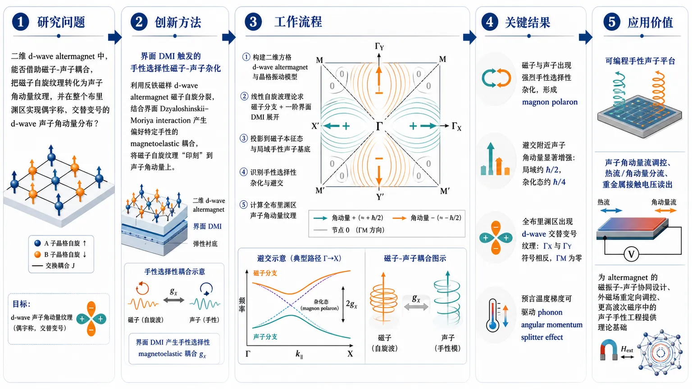
研究问题在二维 d-wave altermagnet 中，能否借助磁子-声子耦合，把磁子自旋纹理转化为声子角动量纹理，并在整个布里渊区实现具备偶宇称、交替变号的 d-wave 声子角动量分布？创新方法提出“界面 DMI 触发的手性选择性磁子-声子杂化”机制：利用反铁磁样的 d-wave altermagnet 磁子自旋分裂，结合界面 Dzyaloshinskii–Moriya interaction 产生只偏好特定手性的 magnetoelastic 耦合，使磁子自旋纹理被直接“印刻”到声子角动量上，形成可调的 chiral magnon-polaron 态。工作流程先构建二维方格 d-wave altermagnet 与晶格振动模型；再用线性自旋波理论求磁子分支，并加入界面 DMI 一阶展开得到磁-弹耦合；随后将耦合矩阵投影到磁子本征态和局域手性声子基底，识别手性选择性杂化与避交；最后计算全布里渊区声子角动量，得到 d-wave 交替变号纹理及角动量分裂输运效应。关键结果磁子与声子出现强烈手性选择性杂化，形成 magnon polaron；在避交附近声子角动量显著增强，局域值可达约 ħ/2，杂化态约 ħ/4；全布里渊区出现清晰的 d-wave 声子角动量纹理，在 ΓX 与 ΓY 方向符号相反，在 ΓM 节线为零；进一步预言温度梯度可驱动 phonon angular momentum splitter effect。应用价值为非常规磁体提供一种可编程的手性声子平台，可用于声子角动量流调控、热流/角动量分流、重金属接触电压读出等器件设想；同时为 altermagnet 相关材料中的磁振子-声子协同设计、外磁场重定向调控以及更高波次磁序（如 g-wave、i-wave）中的声子手性工程提供理论基础。第一部分：核心概览
建立了一个二维 d-wave altermagnet 中由界面 Dzyaloshinskii–Moriya interaction (DMI) 触发的 chirality-selective magnon-phonon hybridization 理论框架，证明磁子自旋纹理可被“印刻”到声子角动量纹理上，形成全布里渊区交替变号的 d-wave phonon angular momentum texture，并预言 phonon angular momentum splitter effect。这把 altermagnet 的响应物理从电子/磁子自旋分裂推进到可设计的手性声子平台。
---
第二部分：结构化快速回顾
《D-Wave Phonon Angular Momentum Texture in Altermagnets by Magnon-Phonon Hybridization》（None，）
- 背景：chiral phonons 具有角动量，但在非磁晶体中通常受限于奇偶性；要得到 even-parity 声子角动量纹理，需要打破时间反演对称性。altermagnets 提供了非相对论性的自旋分裂磁子结构，适合承载这种效应。
- 方法：构建二维方格 d-wave altermagnet，采用 linear spin-wave theory 与晶格振动模型，并在界面 DMI 下推导一阶 magnetoelastic coupling，分析磁子-声子杂化与手性选择规则。
- 结果：磁子与声子发生手性选择性杂化，形成 magnon polarons，并在整个布里渊区产生交替符号的 phonon angular momentum texture；在避交附近声子角动量最强，局域值可达约 ħ/2 或 ħ/4。
- 讨论：该纹理不同于已知的均匀或 valley-contrasting chiral phonons，具有 d-wave 结构，并可导出类比电子 spin-splitter 的 phonon angular momentum splitter effect。
- 局限：模型限定为二维、绝缘性 altermagnet、平面位移、线性近似与特定形式的界面 DMI；未给出实验数据或统计检验，结论依赖对称性与模型计算。
- 结论：altermagnets 可作为可调的 chiral phonon 发生器与声子角动量器件平台，且可推广到更高波次磁序如 g-wave 和 i-wave。
---
第三部分：逐章节冷凝解析
Abstract
Altermagnet 语境下的核心问题
- 目标是把 altermagnet 中已知的磁子自旋分裂，进一步转化为声子角动量纹理。关键句是 *"the magnon bands are anisotropically spin split in reciprocal space without relativistic or dipolar spin-spin interactions."* 这里的要点不是普通反铁磁，而是非相对论性的动量空间自旋分裂。
- 研究对象是二维方格 d d-wave altermagnet，并把magnons 与 phonons 通过 spin-lattice interaction 联系起来。核心设定是 *"magnons and phonons coupled by spin-lattice interaction in a two-dimensional square-lattice d d-wave altermagnet."*
界面 DMI 驱动的手性选择性杂化
- 关键机制是 *"phonon-chirality-selective magnon-phonon hybridization"*，来源于interfacial Dzyaloshinskii-Moriya interaction (DMI)。这意味着耦合不再对左右旋声子等价，而是依赖声子手性。
- 结果是形成具有非零phonon angular momentum 的杂化准粒子。原文核心表述为 *"the emergence of hybrid quasiparticles that possess finite phonon angular momentum."*
- 这些准粒子被称为 magnon polarons，其组成是 *"spin-polarized magnons and chiral phonons."* 也就是磁子提供自旋纹理，声子提供手性角动量。
新响应：phonon angular momentum splitter effect
- 最重要的概念输出是 phonon angular momentum splitter effect，即温度梯度驱动横向声子角动量流。核心句是 *"the generation of a transverse phonon angular momentum current induced by a temperature gradient – the bosonic analog of the spin-splitter effect."*
- 这一点把 altermagnet 的电子/磁子响应类比，推进到声子输运层面。创新不在简单“声子变成有角动量”，而在可编程的、依赖磁序纹理的角动量分裂输运。
---
Introduction
Chiral phonon 的既有图景
- chiral phonons 被定义为具有圆偏振的晶格振动，且已与多种现象相关，如自旋弛豫、超快退磁、Einstein–de Haas 效应。对应表述包括 *"quasiparticles of circularly polarized lattice vibrations"* 与 *"they have been found to contribute to spin relaxation... ultrafast demagnetization... and the Einstein-de Haas effect."*
- 关键物理量是phonon angular momentum，可在无磁材料中作为角动量载体。句子 *"Chiral phonons carry nonzero angular momentum and can therefore function as angular momentum carriers in nonmagnetic materials"* 明确了这一点。
为何需要打破时间反演
- 在保持时间反演对称的体系里，声子角动量满足奇宇称纹理：*"(L(boldsymbolk)=-L(-boldsymbolk))."* 这意味着普通无磁晶体中更自然的是odd-parity 纹理。
- 要得到even-parity 纹理，必须打破时间反演对称性。句子 *"In order to realize even-parity textures, time-reversal symmetry must be broken"* 把问题的对称性门槛说得很清楚。
- 磁子耦合是实现这一点的自然途径，因为 *"the coupling to magnons"* 可以破坏这一约束。
本工作路线：从磁子到声子角动量印刻
- 采用的核心路线是 chirality-selective magnon-phonon coupling。关键句 *"Our approach is based on a chirality-selective magnon-phonon coupling, which leads to the hybridization between magnons and phonons."*
- 更具体地，*“the strength of magnon-phonon coupling originating from interfacial Dzyaloshinskii-Moriya interaction (DMI) depends on the magnon spin and the phonon angular momentum.”* 这句话给出了选择规则的物理来源。
- 选择 d-wave altermagnet 不是偶然，因为 *"the symmetry of the magnon spin texture can be imprinted onto the phonon angular momentum texture."* 也就是说，磁子自旋纹理的对称性成为声子角动量纹理的模板。
领域位置
- 这项工作把 altermagnet 的研究从 spin-split magnons 扩展到振动自由度。与已有的 chiral phonon、magnon-phonon hybridization 文献相比，核心增量是：不是只讨论局部避交处的手性声子，而是构造出全布里渊区的 d-wave angular-momentum texture。
- 结尾 *"highlight the potential of unconventional magnetism for realizing chiral phonons"* 点明其领域意义：非常规磁序 成为声子手性工程的新资源。
---
Results
Minimal model and magnetic band structure
- 模型是二维方格 altermagnet，具有两个子晶格 ↑/↓，局域自旋为共线 Néel 序。核心设定是 *"The localized spins assume a collinear Néel order and interact via antiferromagnetic nearest and anisotropic ferromagnetic next-nearest neighbor Heisenberg coupling."*
- 通过 linear spin-wave theory 得到spin-split magnon modes。关键句 *"Using linear spin-wave theory, we obtain the dispersion relation ... which features spin-split magnon modes."*
- 磁子分裂在高对称线上的规律非常具体：沿 (Γ X) 与 (Γ Y) 分裂最大且符号相反，沿 (Γ M) 节线消失。原文表述 *"The splitting is maximal and opposite along... and vanishes along the nodal lines..."* 正是 d-wave 的直接证据。
Phonon model and angular momentum definition
- 晶格振动模型保持方格对称性，含最近邻纵向/横向恢复力 (K_L⁽¹⁾, K_T) 与次近邻纵向力 (K_L⁽²⁾)。图中参数给出：
(JAFM=-1), (JFM_₁=0.383), (JFM_₂=0.5), (S=1), (M=10), (K_L⁽¹⁾=160), (K_T=K_L⁽²⁾=40), (a=1)。
这些参数不是实验拟合，而是用于展示机制的基准数值。
- 声子角动量限制在 z 轴，定义为
(Lₚₕ^z=sumᵢ₍ᵤᵢ^x pᵢ^y-uᵢ^y pᵢ^x))。
这给出的是二维平面位移下最自然的轨道型振动角动量。
- 在无磁、具有反演和时间反演对称的方格中，(łangle Lₚₕ^zångle) 必须消失。核心句 *"Symmetry demands that the expectation values of (Lₚₕ^z) vanish in an inversion- and time-reversal-symmetric (nonmagnetic) square lattice"* 明确了参照系。
Why exchange magnetostriction alone is insufficient
- 仅有交换磁致伸缩时，磁子自旋守恒，无法产生杂化。关键句 *"the nonrelativistic altermagnet does not exhibit magnon-phonon hybridization because exchange magnetostriction preserves the magnon spin."*
- 因此需要引入DMI 来打破自旋守恒。所用的是interfacial DMI，其形式为
(hat HDMIpropto boldsymbol Dᵢⱼḑot(boldsymbol Sᵢ× boldsymbol Sⱼ₎)。
- DM 矢量被设为平面内且垂直键方向：*"(boldsymbol Dᵢⱼ=Dhatboldsymbol Rᵢⱼ× hatboldsymbol z)"*。这使其在非耦合极限下不改变磁子色散，只在与位移耦合后产生有效磁-声子相互作用。
Derivation of the magnetoelastic coupling
- 通过键矢量位移替换 (boldsymbol Rᵢⱼmapsto boldsymbol Rᵢⱼ+boldsymbol uᵢⱼ)，把 DMI 一阶展开得到
(hat Hₘₚc=fracDSRsumłₐₙgₗₑłₐₙgₗₑ ᵢ,ⱼåₙgₗₑåₙgₗₑ{±(boldsymbol uᵢ₋boldsymbol uⱼ₎ḑot(boldsymbol Sᵢ₋boldsymbol Sⱼ₎})。
- 这个耦合只作用于next-nearest neighbors，且 "+" / "-" 号区分 ↑/↓ 子晶格。物理上，这就是手性选择规则的微观来源。
- 还明确说明忽略了 (D(R)) 的距离依赖项：*“we have neglected contributions that originate from the distance dependence of (D(R))”*。这构成后文讨论局限性的基础。
Chirality-selective matrix elements
- 将 (hat Hₘₚc) 投影到磁子本征模与子晶格局域的手性声子基底后，得到 8 个通道。核心方法句是 *"project it onto the magnon bands ... and sublattice-localized chiral phonons ... and take the absolute value of the matrix elements representing all eight interaction channels."*
- 关键结果：每个磁子自旋通道只耦合到一种声子圆偏振。原文总结为 *"Overall, (hat Hₘₚc) couples each magnon spin channel selectively to a single phonon circular polarization, determined by the sign of the magnon spin."*
- 具体到高对称线：
- 上磁子带沿 (Γ Y) 仅耦合到左旋声子，(łangle Lₚₕ^zångle=-hbar)。
- 沿 (Γ X) 则改为右旋声子，(łangle Lₚₕ^zångle=+hbar)。
- 沿 (Γ M) 两支磁子简并，标签失去唯一性。
这些细节是 d-wave 选择律的直接展示。
- 物理直觉也给出得很清楚：*“For corotating chiral phonons ... the time average ... remains finite leading to an energy shift.”*；而反向旋转时平均耦合为零。这个解释说明为何同向旋转能杂化、反向旋转会被抑制。
Three-band hybridization and avoided crossings
- 耦合系统哈密顿量为 (hat H=hat Hₘ₊hat Hₚₕ+hat Hₘₚc)。图 4 显示所有避交与混合性质。
- 在两条声子带与一条磁子带交叉处，出现典型三带杂化：*“one state is uncoupled to the magnon and remains a pure phonon, while the other two states are magnon polarons with equal proportions of magnons and phonons.”*
- 这说明三带系统不是简单的二能级问题，而是一个纯声子模 + 两个混合模的组合。
Emergence of phonon angular momentum near avoided crossings
- 在避交附近，杂化诱导出非零声子角动量。关键句 *"the hybridization generates phonon angular momentum for the states close to the avoided crossing."*
- 有一个细节非常重要：*"the phonon angular momentum changes sign and vanishes directly at the avoided crossing."* 也就是说，最大值不在严格交叉点，而在其近邻区域。
- 子晶格分辨角动量可达 (hbar/2)，杂化态约为 (hbar/4)。这里的“分数化”来自波函数归一化，而不是量子数本身分数化。对应说明是 *"The saturation at fractions of (hbar) is a result of the normalization of the wave function."*
- 同时，两子晶格的圆偏振方向相反，导致总角动量被显著抵消：*“the sublattice-resolved angular momenta partially compensate each other and the net angular momentum is strongly suppressed.”*
Origin of opposite sublattice polarizations
- 在下磁子带交叉区，磁子几乎只耦合到 ↓ 子晶格 且对应 (+hbar) 的声子角动量。图 4(e) 证实了这一点。
- 上下子晶格角动量相反的来源，不是耦合定则本身失效，而是两个交叉声子带在子晶格之间的相位差。这是一个很容易忽视但十分关键的细节。
- 因此，局域手性可以很强，而全局净角动量却很小；这为后续“纹理”概念提供了基础。
Full Brillouin-zone texture
- 图 5 显示整个布里渊区的总声子角动量，呈现清晰的 d-wave 图样。核心句 *"The d-wave structure of the phonon angular momentum texture can be clearly observed."*
- 角动量在 (Γ M) 两条节点线上为零，在区内外交替变号。关键句 *"The sign of the angular momentum alternates in the Brillouin zone and the phonon angular momentum vanishes along the two nodal lines..."*
- 纹理包含两类特征：
- Diffuse features：出现在带具有磁子成分或接近其他磁子带的区域。
- Line-shaped hotspots：来自磁子-声子避交，厚度小是因为能隙很小。
- 当某条带远离磁子带且主要是纯声子性时，角动量几乎消失，例如 *"band 6 or inner areas of band 1 and 2."* 这说明角动量是混合驱动的，不是普遍存在于所有声子模。
---
Discussion and conclusion
与既有 chiral phonon 的本质区别
- 得到的是一种新的手性声子态：*“distinct from previously studied uniform or valley-contrasting chiral phonons.”*
- 关键不同点在于角动量不是常量，也不是只在 valley 点局域出现，而是随动量呈现 d-wave alternating texture。这是一种动量分辨、符号交替的声子手性图样。
为何会出现 d-wave 结构
- 根源是d-wave magnetic order 与 chirality-selective relativistic magnon-phonon coupling 的叠加。核心句 *"This momentum-dependent angular-momentum texture directly results from the interplay between the underlying d-wave magnetic order and the chiral selection rules of the relativistic magnon-phonon coupling."*
- 这说明声子角动量纹理不是简单从晶格对称性出发得到，而是由磁序对称性 + DMI 选择定则共同决定。
一般性与鲁棒性
- 这里只分析了界面 DMI 的一种特定手性选择部分，但更一般的rotationally invariant spin-lattice coupling 也能产生类似效应。核心句 *"chirality-selective forms of magnon-phonon coupling can emerge more generally..."*
- 若考虑 (D(R)) 的距离依赖，完美的手性选择会变成 (k)-依赖的非理想形式，但主要特征仍然鲁棒。对应表述 *"while it renders the phonon angular momentum texture more complex, its general features remain robust."*
Phonon angular momentum splitter effect
- 由 d-wave chiral phonons 自然导出一个新输运效应：*“a phonon angular momentum splitter effect, where a temperature gradient generates a flow of phonon angular momentum.”*
- 若温度梯度沿高对称自旋极化方向，流与梯度平行或反平行；若沿节点线，则产生横向流。关键句 *“If the temperature gradient is applied along a nodal line, the phonon angular momentum current is transversal to the gradient.”*
- 这一角度依赖性把它与 phonon angular momentum Hall effect 区分开来。另一个区分标准是时间反演：*“the Hall effect remains unchanged and the splitter effect changes its sign upon reversal of the Néel order.”*
- 还给出输运机制上的差异：splitter effect proportional to relaxation time，在洁净样品中占优；Hall effect 则更偏内禀机制。
实验可探测性与相关测量
- 通过重金属接触的电压读出，可以测量声子角动量流。对应句子 *"Experimental studies have reported on measurements of phonon angular momentum currents via voltage generation in heavy-metal contacts."*
- 这给出了一条相对现实的实验路线，但仍依赖能够区分磁子角动量流与声子角动量流的方案。
更广泛的应用
- piezomagnetism、phononic spin filters、spin torques、nonlinear thermal Edelstein effect 都可成为相关扩展方向。
- 关键瓶颈是区分声子效应与共伴的磁子效应。对此给出的理论分界是：*“the magnon spin texture is nonrelativistic, whereas the phonon angular momentum is inherently relativistic.”*
- 这意味着声子角动量对 Néel vector orientation 更敏感，可通过外磁场调控；而磁子自旋纹理更受 spin point group 约束。
材料候选与推广方向
- 适用对象是绝缘型 altermagnet 且具有足够强的相对论性磁弹耦合。
- 二维候选材料包括 monolayer Cr(₂)Te(₂)O、Cr(₂)Se(₂)O，以及 Janus altermagnet V(₂)SeTeO。后者因上下层元素替换而天然破坏镜面对称并内禀产生界面 DMI。
- 还可推广到三维体系，以及更高波次的 g-wave 与 i-wave 磁体。关键句 *"can be applied to g-wave and i-wave magnets as well, where higher-wave phonon angular momentum textures are generated."*
---
Acknowledgments
资助与合作框架
- 资助来源包括德国研究基金会 DFG、Center for Chiral Electronics、TRR 277、TRR 173 与 Emmy Noether Programme。
- 这说明工作嵌入在手性电子学与拓扑/磁振子交叉的长期项目链条中。
---
Data availability
数据可得性
- 数据可应合理请求在 Zenodo 获取。原文表述是 *"the data associated with this article can be made available on Zenodo."*
- 当前文本未给出原始数值数据表，仅说明可索取。
---
第四部分：深度理解与语言支持
1) 术语解析
Altermagnet
- 不是普通反铁磁，也不是铁磁。核心特征是零净磁化下仍存在动量空间自旋分裂。
- 与反铁磁的不同在于：普通反铁磁常依赖联合对称性让能带简并，而 altermagnet 在非相对论机制下就可出现类似自旋劈裂。
- 这也是后面“磁子自旋纹理可印刻到声子上”的基础。
Chirality-selective
- 不是泛泛的“有手性”，而是只偏好某一旋向。
- 这里的选择不是凭空产生，而是由 magnon spin 与 phonon angular momentum 的匹配关系决定。
- 直观上，相当于“顺时针磁子只喂给顺时针声子，逆时针磁子只喂给逆时针声子”。
Phonon angular momentum texture
- “texture” 强调它是一个随 (boldsymbol k) 变化的场，而不是单个点上的标量。
- 这里的关键不在“某个声子有角动量”，而在整个布里渊区里角动量交替变号、出现节点和热点。
- “d-wave” 就是这种纹理的对称性标签。
Magnon polaron
- 指磁子-声子杂化准粒子。
- 与普通 phonon 或 magnon 的区别在于它同时带有磁性成分与晶格振动成分。
- 本文中更进一步：这个杂化态还带有有限 phonon angular momentum。
Splitter effect
- “Hall effect” 更像横向偏转；“splitter effect” 更像按手性/自旋通道分流。
- 这里的 phonon angular momentum splitter effect 不是简单的热霍尔效应，而是角动量流的分裂与定向输运。
- 依赖温度梯度方向相对于磁纹理的取向，因此具有强烈角度依赖。
2) 疑难查证：高年级博士生式解释
为什么 DMI 不改变裸磁子色散，却能触发杂化？
- DMI 矢量设为 (boldsymbol Dᵢⱼ=Dhatboldsymbol Rᵢⱼ×hatboldsymbol z)，方向在平面内且垂直键方向。
- 在无位移的平衡态里，它对这套 Néel 序的主效应可能不会立刻改写磁子能谱，因为方向关系使得它不直接产生新的色散劈裂。
- 但一旦键长/键方向因晶格振动被扰动，DMI 的一阶展开就把 spin precession 和 lattice displacement 绑在一起，形成 magnetoelastic coupling。
- 所以，DMI 在这里更像“触发杂化的门”，而不是“先改写磁子谱再谈杂化”的因素。
为什么会出现局域强角动量，但总角动量很小？
- 关键是两个子晶格的圆偏振方向相反。
- 单个子晶格上，杂化可让振动接近完全圆偏振，所以局域角动量很大；
- 但另一个子晶格往往给出相反符号，两个贡献在求和后互相抵消。
- 因此“局域大、总量小”不是矛盾，而是子晶格相消的结果。
为什么“d-wave”不是简单的形状描述？
- 这里的 d-wave 不是说轨道波函数，而是说动量空间的符号结构：
- 沿 (Γ X) 与 (Γ Y) 符号相反；
- 沿 (Γ M) 为节点。
- 这与电子结构中的 (dₓ^₂₋y^₂)-型变号非常像，因此称为 d-wave texture。
- 它的核心是对称性变号，不是能量大小本身。
为什么需要“in-plane Néel vector”讨论？
- 因为声子角动量只讨论 z 轴，而二维系统里的原子位移也限制在平面。
- 若 Néel 矢量旋到不合适方向，磁子自旋进动的分量就无法有效投影到可产生 z 向角动量的振动模式上。
- 因而外磁场能通过重定向 Néel 矢量来开关或重塑声子角动量。
---
第五部分：创新评估与关联
1) 创新性判断
相对 2022–2025 年相关工作的新增点
- 2022–2024 年的重点大多在：
- altermagnet 的自旋分裂电子/磁子输运；
- 一般体系中的 chiral phonons；
- 磁子-声子杂化诱导的局域声子手性；
- 局部避交附近的 magnetic moment of chiral phonons 或 spontaneous emergence of phonon angular momentum。
- 这项工作的新增点是把这些线索统一成一个全布里渊区的、由磁序对称性决定的声子角动量纹理工程问题。
真正新颖的地方
- 从“局域手性”到“纹理”
过去常见的是在避交点附近出现手性声子；这里得到的是整个布里渊区范围内的 d-wave phonon angular momentum texture。
- 从“有角动量”到“可选择、可分裂、可输运”
不是仅证明声子带有角动量，而是给出 chirality-selective hybridization，并进一步提出 phonon angular momentum splitter effect。
- 把 altermagnet 的电子/磁子对称性外推到声子
altermagnet 过去最强的标志是自旋分裂；这里把这种d-wave 交替符号结构印刻到声子角动量上，形成 bosonic 对应物。
- 强调 relativistic vs nonrelativistic 的分工
磁子自旋纹理由非相对论对称性约束，声子角动量由磁点群与相对论耦合控制。这个分界使声子效应拥有不同于磁子效应的可调性。
解决了前人未解决的问题
- 前人已经知道 chiral phonons 可存在，也知道磁子可诱导局域声子角动量；但如何在 altermagnet 中把磁子自旋纹理系统性映射为声子角动量的动量空间纹理，缺少清晰方案。
- 这项工作用 interfacial DMI + altermagnetic d-wave magnon texture 给出了完整机制。
- 同时提出了可观测的输运响应：phonon angular momentum splitter effect，把“纹理”推进到“功能器件”层面。
一句话概括创新
- 创新点不在“声子有角动量”，而在altermagnet 的 d-wave 磁子纹理通过 chirality-selective magnon-phonon hybridization 被转译成全布里渊区的 d-wave 声子角动量纹理，并导出新的角动量分裂输运效应。
-
18
📄 摘要：作者提出一类混合宇称滑移多铁体：层间滑移把自发铁电极化与某些非相对论自旋分裂（NSS）分量耦合起来，使这些分量可通过电方式可逆切换。核心在于利用滑移铁电性调控非常规磁分裂。
📖 英文原文
arXiv:2607.24337v1 Announce Type: new Abstract: Sliding ferroelectrics provide a nonvolatile platform for the electrical control of unconventional magnetism through reversible interlayer sliding. However, the coupling between sliding ferroelectricity and hybrid-parity nonrelativistic spin splitting (NSS) remains largely unexplored. Here, we introduce a class of hybrid-parity sliding multiferroics in which the spontaneous ferroelectric polarization is coupled to certain NSS components through interlayer sliding, allowing these components to be reversibly switched in an electrical way. Symmetry analysis identifies coplanar magnets as natural platforms for realizing this form of sliding multiferroicity. First-principles calculations establish bilayer VBr₂ as a representative example, demonstrating the coupled reversal of the out-of-plane ferroelectric polarization (±0.12 pC/m) and the signs of both even- and odd-parity NSS components via an interlayer-sliding pathway with an ultralow barrier of 6 meV/f.u. The signs of these NSS components are locked to the sliding-switchable ferroelectric polarization and encoded in the spin-current responses, providing a signature of the coupled ferroic switching. Our findings expand the scope of sliding multiferroics and the functionality of sliding ferroelectrics for low-energy, nonvolatile logic devices.
💡 亮点：作者提出“混合宇称滑移多铁体”这一新对称类，把层间滑移铁电极化直接耦合到部分非相对论自旋分裂分量。结果是这些 NSS 分量可被电方式可逆切换，为无需强自旋轨道效应的电控磁分裂提供了结构化设计原则。
📖 展开分析 + 配图
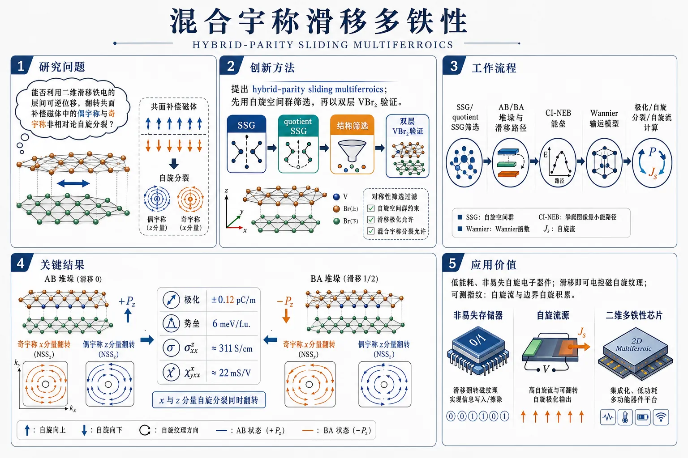
研究问题能否利用二维滑移铁电的层间可逆位移，同时翻转共面补偿磁体中的偶宇称与奇宇称非相对论自旋分裂（NSS），把“极化切换”升级为“混合宇称自旋纹理切换”？创新方法提出“hybrid-parity sliding multiferroics”新概念，用自旋空间群（SSG）先做对称性筛选，锁定天然适合的共面磁体；再以双层 VBr₂ 为验证平台，证明层间滑移不仅翻转电极化，还能同步反转 x 分量的奇宇称 NSS 和 z 分量的偶宇称 NSS，形成可编程的混合宇称自旋分裂。工作流程先基于 SSG 和 quotient SSG 判断哪些磁结构同时允许混合宇称 NSS 与铁电极化；随后对双层 VBr₂ 做第一性原理计算，搜索 AB/BA 堆垛与滑移路径；用 CI-NEB 求能垒、用 Wannier 构建输运模型；最后计算极化、自旋分裂分布与自旋流响应，建立“滑移—极化—NSS—输运”对应关系。关键结果双层 VBr₂ 在 AB/BA 两种滑移态之间可逆切换，面外极化约为 ±0.12 pC/m，滑移势垒仅 6 meV/f.u.；滑移前后，奇宇称 x 分量与偶宇称 z 分量的 NSS 符号同时翻转；对应自旋流响应达到 σxx^z≈311 S/cm、χyxx^x≈22 mS/V，且 AB 与 BA 的信号完全反号。应用价值为低能耗、非易失的自旋电子器件提供新机制：只靠层间滑移就能电控磁自旋纹理，并用自旋流和边界自旋积累作为可测指纹；可面向非易失逻辑、可切换自旋极化源、以及二维多铁自旋器件设计。《Hybrid-parity sliding multiferroics》（None，）
第一部分：核心概览 (Overview)
这篇论文提出 hybrid-parity sliding multiferroics 概念，把 滑移铁电性 与 混合宇称非相对论自旋分裂（NSS） 直接耦合起来，实现电场可逆切换的非共线磁性自旋分裂。核心突破在于：不只控制单一宇称的 NSS，而是让 偶宇称 与 奇宇称 分量都能随层间滑移同步翻转，并给出 bilayer VBr₂ 的第一性原理验证。其学术位置介于滑移铁电、反铁磁自旋电子学与新型多铁性之间，属于把“结构可切换性”提升为“混合宇称自旋纹理可编程性”的工作。
---
第二部分：结构化快速回顾
《Hybrid-parity sliding multiferroics》（None，）
- 背景：二维范德华滑移铁电已能电控极化与部分磁性，但与 hybrid-parity NSS 的耦合几乎未被系统研究。此前工作主要集中在 collinear altermagnets 的偶宇称 NSS，可切换的非共线混合宇称体系仍缺少明确平台。
- 方法：基于 spin space group (SSG) 的对称性筛选，提出适配条件，并用 DFT + CI-NEB + Wannier 在 bilayer VBr₂ 上验证滑移路径、极化、NSS 与自旋流响应。
- 结果：AB/BA 堆垛态之间通过层间滑移可逆转换，外电极化约 ±0.12 pC/m，能垒仅 6 meV/f.u.；x 分量（奇宇称）与 z 分量（偶宇称）NSS 同步翻转。
- 讨论：NSS 翻转可由 dipole/quadrupole 调制驱动的自旋流捕捉；电流方向与自旋积累边界方向可作为实验指纹。
- 局限：主要停留在理论与第一性原理层面；实验实现、缺陷效应、温度稳定性、实际栅控动力学未直接给出。
- 结论：滑移铁电不仅能切换极化，也能切换 混合宇称自旋分裂，为低能耗、非易失逻辑与自旋电子器件提供新范式。
---
第三部分：逐章节冷凝解析 (Section-by-Section Condensing)
Abstract
提出新的多铁类别
- 关键贡献是把滑移铁电与 hybrid-parity NSS 连接为一种新型多铁框架，原文核心句是 *"We introduce a class of hybrid-parity sliding multiferroics"*。这里的“hybrid-parity”不是单纯的奇偶二选一，而是同一体系中并存的两类 NSS 分量具有不同宇称，并且都受电极化控制。
对称性判据锁定平台类型
- 对称性分析给出平台筛选原则：*“Symmetry analysis identifies coplanar magnets as natural platforms”*。这里的 coplanar magnets 指磁矩共面但非共线的补偿磁体，天然支持 odd-parity 与 even-parity NSS 共存。
- 核心逻辑是：层间滑移带来可翻转的 ferroelectric polarization，同时保持共面磁序，从而把极化和某些 NSS 分量绑在一起。
VBr₂ 作为代表性实现
- 第一性原理选取 bilayer VBr₂ 作为例子，给出明确数值：外电极化 ±0.12 pC/m，滑移切换能垒 6 meV/f.u.。原文写作 *"demonstrating the coupled reversal of the out-of-plane ferroelectric polarization (±0.12 pC/m) and the signs of both even- and odd-parity NSS components"*。
- 这说明并非只翻转一个自旋分量，而是 even- and odd-parity NSS components 一起反号。
自旋流作为可观测指纹
- 通过自旋流响应编码 NSS 的符号信息，原文表述为 *"The signs of these NSS components are locked to the sliding-switchable ferroelectric polarization and encoded in the spin-current responses"*。
- 这把纯对称性结果转化为可实验探测量，直接提升可验证性。
面向低能逻辑器件
- 结论指向 *"low-energy, nonvolatile logic devices"*，意味着该体系的价值不只在于新磁序分类，还在于器件级非易失控制。
---
Introduction / Background
滑移铁电成为二维非易失极化平台
- 滑移铁电依赖范德华层间滑动而非离子重排，具有低势垒、快切换和高耐久性优势。原文强调 *"The low switching barrier, arising from weak interlayer coupling, enables ultrafast polarization reversal with low energy cost"*。
- 其抗疲劳性来源于 *"suppresses defect accumulation and domain-wall pinning"*，这是相较传统铁电非常关键的工程优势。
滑移铁电已扩展到多种物性调控
- 除极化切换外，滑移铁电还能调控 *"band topology, superconductivity, and magnetism"*，说明滑移并不只是电学结构变量，而是全局电子结构调控旋钮。
现有工作主要停留在偶宇称 NSS
- 过去的重点是 *"electrically switchable even-parity NSS in collinear altermagnets"*，也就是以共线反铁磁/替磁体为核心的偶宇称自旋分裂。
- 但非共线补偿磁体中，NSS 可表现为 *"odd-parity or even hybrid-parity"*，这一点打开了更复杂的宇称结构空间。
NiI₂ 证明极化可控自旋分裂的可行性
- 重要先例是 NiI₂ 的实验，显示了 *"ferroelectric switching of p-wave NSS"*。这意味着极化可以作为非挥发控制参数，给本工作提供了实验逻辑支撑。
- 但 NiI₂ 并未建立“滑移铁电—混合宇称 NSS”这一更一般、更系统的框架。
本工作的概念推进
- 核心新概念是 *"hybrid-parity sliding multiferroicity"*：通过层间滑移，把某些 NSS 分量与极化一一绑定，实现电控翻转。
- 这一框架的对象不是一般磁体，而是 coplanar magnets，因为其自旋空间群天然强制奇偶宇称并存。
---
Results — The concept of hybrid-parity sliding multiferroics
SSG 是 NSS 宇称的根源约束
- NSS 受到 spin space group (SSG) 约束，结构写作 *"XU|R|τ"*，其中 R|τ 作用于晶格，U 作用于自旋，X 为单位或时间反演。
- 这里的关键是把实空间对称和自旋旋转分离分析，才能判断哪类自旋分量能在 ±k 之间建立宇称关系。
共面磁体的自旋只群决定奇偶宇称
- 共面磁体的 spin-only group 由 *"TC₂σ⊥|1"* 生成，并导出公式 (1)：
*"Sσ⊥(k) = −Sσ⊥(−k), Sσ∥(k) = Sσ∥(−k)"*。
- 这直接意味着：垂直于磁矩平面的分量是奇宇称，平面内分量是偶宇称。这就是混合宇称的来源。
满足多铁耦合需要三条条件
- 三个必要条件被明确列出：
- SSG 允许 well-defined hybrid parity；
- quotient SSG 与 ferroelectricity 相容；
- 连接两个不等价极化态的操作同时翻转极化和某些 NSS 分量。
- 这组条件把“有磁性”与“能电控”分开，避免只停留在磁序分类。
连接极化态的操作必须兼容滑移
- 对二维体系，可能操作包括 *"U|P", "U|C₂z", "TU|1", "TU|Mz"* 等，其中 *"U|P"* 排除铁电，因为反演禁止极化。
- 对层间滑移电控而言，关键是能连接 nonequivalent ferroelectric states，并保持 ±k 的对称性结构。
双层共面磁体是天然载体
- 以双层共面磁体为例，体系具有 *"Q = C₂σ∥,1|Mz"*。
- 若滑移诱导出 Pz，则 Q 被破缺，形成两种简并堆垛态；这两态由 Q 互相连接，极化方向相反。
- 最关键的耦合结果是：*“the switching of both the even-parity component Sσ∥,2 and the odd-parity component Sσ⊥”*。也就是同一个滑移操作同时翻转偶宇称与奇宇称 NSS。
---
Results — Sliding ferroelectricity in bilayer VBr₂
VBr₂ 的结构与磁序使其适合实现混合宇称多铁
- 体系是层状 CdI₂-type 结构，V 原子形成三角晶格，几何挫折稳定 120° coplanar compensated magnetic order。
- 该磁序已有中子散射实验支持，说明磁结构并非理论猜测。
单层 VBr₂ 为中心对称，不自发极化
- 单层为 1T 结构，空间群 Pbar3m1 (No. 164)，因此 *"forbids electric polarization"*。
- 磁性使面内周期三倍化，形成 √3 × √3 × 1 磁单胞；磁矩位于 yz 平面。
120° 磁态是基态
- 计算比较了铁磁、铁电、共线反铁磁等态，结论是 *"the 120-deg magnetic state is the ground state"*。
- 这一步确保后续 NSS 分析建立在真实最低能磁序上。
双层通过层间滑移形成 AB/BA 两个极化态
- 顶层由 *"C₂y|Mz|t+τz"* 作用于底层构造，若无面内平移则保留 *"C₂y|Mz"*。
- 在 6×6 片移网格上搜索堆垛能量，最稳态是 AB：*t = (1/3, 0)*，和 BA：*t = (2/3, 0)*。
滑移路径经过 AC 非极性中间态，势垒极低
- 最有利过渡态是 AC stacking，并且该态是 *"a nonpolar phase, which preserves Mz symmetry"*。
- 用 climbing-image nudged elastic band 得到势垒约 6 meV/f.u.，是非常低的滑移铁电切换成本。
AB/BA 的极化大小与实验滑移铁电相当
- AB 与 BA 分别具有相反的 out-of-plane polarization，大小约 0.12 pC/m。
- 文中将其与 1T′-ReS₂ (0.07 pC/m) 和 WTe₂ (0.16 pC/m) 对比，说明该极化量处于已知滑移铁电的合理区间。
电荷转移机制解释极化反号
- 电荷密度差显示电荷主要在层间积累，形成 negative charge center；两层内部分别出现不对称耗尽。
- AB 中正电中心在负电中心下方，对应 −z 极化；BA 中则相反，对应 +z 极化。
- 平面平均静电势出现相反符号的台阶，作为独立佐证。
---
Results — Sliding-ferroelectric control of hybrid-parity NSS
VBr₂ 的自旋只群直接给出混合宇称
- 双层 VBr₂ 的共面磁性位于 yz 平面，spin-only group 由 *"TC₂x|1"* 生成。
- 结果是 Sx 为奇宇称，而 Sy、Sz 为偶宇称。这与共面磁序的自旋空间群约束完全一致。
AB 与 BA 的滑移对称性强制 NSS 翻转
- AB/BA 由 *"C₂y|Mz"* 连接，因此滑移切换时 x 与 z 分量同时变号，而 y 分量保持不变。
- 这一步把极化反号与 NSS 反号绑定成同一对称操作。
第一性原理直接看到 x 与 z 分量的宇称结构
- 用 Bloch 态定义 *"Sₚ₍ₖ₎₌⟨uₙₖ|ŝₚ|uₙₖ⟩"*，并计算自旋密度态 *"NS_ₚ(E,k)=ImTr[G(E-i0+,k)ŝₚ]/π"*。
- 在 CBM 上方 0.04 eV 的能量切片上，Sx 与 Sz 在布里渊区边界附近最显著。
- 结果明确显示 Sx 奇宇称、Sz 偶宇称。
BA 态与 AB 态的 NSS 符号相反
- BA 堆垛中，奇宇称 x 分量 和偶宇称 z 分量 的符号与 AB 完全相反。
- 这说明滑移不是简单改写幅值，而是翻转 NSS 的方向标签。
对称性与数值结果一致
- 由 *"C₂z|My"* 推出：在 My 下，Sx 变号而 Sz 保持不变。
- 由 *"C₃x⁻¹|C₃z"* 推出：Sx 具有三重旋转对称，而 Sz 不具有。
- 这组对称约束与 DFT 图像一致，完成“对称性—计算”闭环。
---
Results — Signatures of hybrid-parity NSS switching
自旋流把 NSS 的宇称差异转成可测输运信号
- 在无净磁化下，NSS 可通过自旋流体现。这里区分两类机制：
- dipole modulation 产生 *"jₐD,p = σ^pₐb E_b"*；
- quadrupole modulation 产生 *"jₐQ,p = χ^pₐbc E_b E_c"*。
- 这为混合宇称磁体提供了实验探针。
偶宇称与奇宇称分别对应不同的分布函数宇称
- 分布函数满足 *"f^D(k) = −f^D(−k), f^Q(k) = f^Q(−k)"*。
- 因而 j^D 探测 偶宇称 NSS，j^Q 探测 奇宇称 NSS。
- 这是这一部分最关键的物理判据。
双层 VBr₂ 只允许两个代表性自旋流响应
- 对二维面内输运，施加 Ex 后允许的自旋流是
- *"jₓD,z = σₓₓ^z Eₓ"*，对应 z 极化自旋流沿 x 流动；
- *"j_yQ,x = χyₓₓ^x Eₓ²"*，对应 x 极化自旋流沿 y 流动。
- 两者分别由 z 偶宇称 NSS 和 x 奇宇称 NSS 驱动，且流向正交。
AB 与 BA 的响应系数反号
- 在 τ = 0.1 ps 下，靠近 CBM，响应系数达到
- σxx^z ≈ 311 S/cm
- χyxx^x ≈ 22 mS/V
- BA 与 AB 的这两个量符号相反，严格符合滑移翻转预测。
自旋轨道耦合作用次要
- 加入 SOC 后，两项电导仍保留主要趋势，且 *"spin-orbit coupling makes a subdominant contribution"*。
- 这说明机制核心是 nonrelativistic spin splitting，不是 SOC 主导效应。
实验可读出的边界积累方向不同
- 两类自旋流沿不同方向流动，会在样品不同边界产生不同自旋积累：一个偏 z，一个偏 x。
- 因而可以用 magneto-optical Kerr-effect 或 nonlocal measurements 读取极化- NSS 联动切换。
---
Summary
统一框架
- 通过滑移铁电把 ferroelectric polarization 与 hybrid-parity NSS 锁定，构成 hybrid-parity sliding multiferroics。
- 这类体系的标志不是单一的磁电耦合，而是 even- and odd-parity NSS components 同时随堆垛反转。
代表性材料与可观测量
- bilayer VBr₂ 提供了具体实现：±0.12 pC/m 极化、6 meV/f.u. 势垒、σxx^z ~ 311 S/cm、χyxx^x ~ 22 mS/V。
- 自旋流与边界自旋积累构成实验指纹。
---
Methods — First-principles calculations
DFT 设置具体而完整
- 软件：VASP；方法：PAW；泛函：PBE。
- 平面波截断能：500 eV。
- k 网格：11×11×1。
- 关联修正：Dudarev U = 1.0 eV 处理 V 的局域 d 轨道。
- 收敛标准：能量 10⁻⁶ eV，力 0.01 eV/Å。
- 真空层厚度：约 26 Å。
- 范德华修正：DFT-D3 zero-damping。
过渡路径与输运计算方法
- 滑移能垒用 climbing-image nudged elastic band 求得。
- 自旋期望值、自旋态密度和输运性质通过 Wannier90 构造 maximally localized Wannier functions 计算。
- 初始轨道基组包括：V 的 s/p/d 与 Br 的 s/p。
- 电导积分采用 1000×1000×1 的高密度 k 网格。
电荷差定义明确
- 平均电荷密度差定义为 *"Δρ = ρ_bilayer − ρᵤₚₚₑᵣ − ρₗₒwer"*。
- 这一定义直接对应层间电荷重排，是极化分析的基础。
---
第四部分：深度理解与语言支持 (Understanding & Nuance)
1) 术语解析
Hybrid-parity NSS
- NSS 是 *nonrelativistic spin splitting*，指不依赖强 SOC 的自旋分裂。
- Hybrid-parity 的关键不在“有奇又有偶”这么简单，而在同一体系中不同自旋分量 obey 不同宇称：某些分量满足 S(k)=S(−k)，另一些满足 S(k)=−S(−k)。
- 与纯偶宇称 altermagnet、纯奇宇称系统相比，这里更像“宇称拼接”的自旋纹理。
Spin space group (SSG)
- 不是普通空间群，也不是单纯磁群，而是把 实空间操作 + 自旋旋转 + 时间反演 组合在一起的对称框架。
- 关键价值是：NSS 的宇称不是凭经验猜，而是由 SSG 形式严格推出。
Quotient SSG
- 可理解为“去掉纯自旋部分后剩下的实空间骨架”。
- 它主要约束 极化是否允许、极化方向是什么、哪些堆垛态彼此等价，因此是判断铁电与滑移耦合的核心。
Coplanar magnetic order
- 指磁矩全部落在同一平面内，但并非平行或反平行。
- 这里的微妙之处是：它既保留了足够的自旋对称性去生成混合宇称，又比共线磁体更容易产生奇偶并存的 NSS。
Dipole / quadrupole modulation
- 不是普通电偶极和四极矩，而是外场驱动下电子占据分布的奇偶展开项。
- dipole 是一阶响应，对应 E；quadrupole 是二阶响应，对应 E²。
- 它们与 NSS 宇称的“互补匹配”构成自旋流出现的条件。
2) 疑难查证：为什么 j^D 探测偶宇称，j^Q 探测奇宇称？
核心是一个宇称配对原则：
- 若电子占据修正 f(k) 是奇函数，只有与 偶宇称 的自旋纹理相乘，布里渊区积分才不会相互抵消。
- 若 f(k) 是偶函数，则需要与 奇宇称 自旋纹理相配，才能留下净响应。
这里：
- dipole modulation：*f^D(k) = −f^D(−k)*，是奇宇称，因此配偶宇称 NSS 才能形成净自旋流；
- quadrupole modulation：*f^Q(k) = f^Q(−k)*，是偶宇称，因此配奇宇称 NSS 才能形成净自旋流。
所以不是“某个电流天然对应某种 NSS”，而是 占据分布的宇称 与 NSS 的宇称 必须互补，积分后才不消失。
这也是为什么同一材料里，j^D 和 j^Q 分别成为偶、奇宇称 NSS 的探针。
---
第五部分：创新评估与关联 (Synthesis & Novelty)
创新性判断
1. 从“单一宇称切换”推进到“混合宇称协同切换”
- 过去 2–5 年的相关工作主要集中在 collinear altermagnets 的可切换偶宇称 NSS，或在特定非共线体系中观察到单个宇称分量。
- 这里的跃迁是：把 even-parity 与 odd-parity NSS 统一纳入同一滑移可控框架，并让两者都随极化反转。
2. 把滑移铁电引入非共线补偿磁体
- 既有滑移铁电研究多聚焦于极化、带拓扑、超导或普通磁性调控。
- 此处首次把 sliding ferroelectricity 与 coplanar noncollinear magnetism 结合，使极化不仅“调磁”，而是“编程混合宇称自旋分裂”。
3. 给出明确的对称性设计准则
- 最重要的方法论创新是对 SSG / quotient SSG 的系统筛选：不是靠材料试错，而是先判定哪类磁序能同时满足
- 混合宇称；
- 可极化；
- 滑移态之间的 NSS 同步翻转。
- 这类设计规则可直接迁移到其他二维磁体。
4. 用自旋流作为切换指纹
- 过去对 NSS 的实验探测常依赖输运各向异性或光谱信号。
- 这里提出 dipole/quadrupole spin-current 作为更直接的指纹，并且预测 AB/BA 态符号反转，给出可测边界积累模式。
解决了什么前人没解决的问题
- 解决了 滑移铁电能否控制混合宇称 NSS 这一空白。
- 解决了 非共线补偿磁体中偶/奇宇称 NSS 如何同时受电控 的设计问题。
- 解决了 如何把抽象的 SSG 对称性转化为材料实例与输运可观测量 的问题。
- 结果上，bilayer VBr₂ 成为一个完整闭环：结构滑移 → 极化翻转 → NSS 同步翻转 → 自旋流符号反转。
如果需要，可以继续把这篇论文整理成：
- 一页式图解笔记，或
- 按“对称性推导链条”重写成公式版讲义。
-
19
📄 摘要：作者用大规模 DMRG 研究 checkerboard t-J 模型中掺杂的交替磁莫特绝缘体，交替磁交换各向异性由各向异性的铁磁次近邻交换刻画。在六腿圆柱上扫描掺杂和各向异性，绘制基态相图，并识别从常规配对到有限波矢配对的转变。
📖 英文原文
arXiv:2607.23654v1 Announce Type: new Abstract: Pair-density-wave (PDW) superconductivity is a state in which the superconducting order parameter modulates at a finite wavevector. Using large-scale density matrix renormalization group, we study the doped altermagnetic Mott insulator in the checkerboard t-J model, where altermagnetic exchange anisotropy is encoded microscopically through anisotropic ferromagnetic next-nearest-neighbor exchange. By mapping the ground-state phase diagram as a function of doping and altermagnetic anisotropy, mainly on six-leg cylinders, we identify a transition from a uniform d-wave superconducting regime with charge modulation to a PDW regime coexisting with stripe order. In the PDW regime, we report an unconventional wave-vector locking mathbf QPDWapprox 2mathbf QSₜᵣᵢₚₑ along the cylinder direction, in contrast to the conventional relation. Pair correlations reveal a two-scale structure, consisting of short-distance local d-wave pairing and long-distance finite-momentum PDW correlations. A symmetry-based Ginzburg--Landau analysis is presented for the observed locking. Our results identify altermagnetism as a strong-coupling, microscopically grounded route to finite-momentum superconductivity in doped Mott insulators.
💡 亮点：这篇 DMRG 结果把交替磁莫特绝缘体掺杂后的配对序直接算出来：在 checkerboard t-J 模型中加入各向异性铁磁次近邻交换后，六腿圆柱上出现从常规配对到有限波矢配对的转变。它把 PDW 与交替磁交换各向异性联系起来，为莫特体系中的非常规超导机制提供了具体微观模型。
📖 展开分析 + 配图
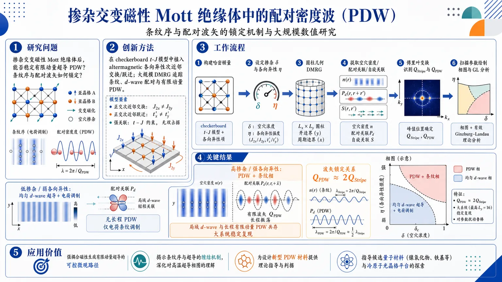
研究问题掺杂交变磁性 Mott 绝缘体后，能否在强关联体系中稳定有限动量超导 PDW，并且条纹序与配对波矢会形成怎样的锁定关系。创新方法在 checkerboard t-J 模型中植入 altermagnetic 各向异性次近邻交换/跃迁，用大规模 DMRG 直接追踪掺杂后条纹、局域 d-wave 配对与有限动量 PDW；关键 Aha 点是发现异常波矢锁定 Q_PDW≈2Q_Stripe，而不是传统的 Q_Stripe=2Q_PDW。工作流程构建带 altermagnetic 各向异性的 checkerboard t-J 哈密顿量 → 设定掺杂 δ 与各向异性 η → 在圆柱几何上做大规模 DMRG 计算 → 提取空穴密度、配对关联与自旋关联 → 对实空间信号做傅里叶变换识别 Q_Stripe 和 Q_PDW → 扫描参数绘制相图并用 Ginzburg-Landau 分析锁定机制。关键结果相图显示两类主态：低掺杂/弱各向异性下的均匀 d-wave 超导伴随电荷调制，高掺杂/强各向异性下进入 PDW+条纹相；PDW 区满足 Q_PDW≈2Q_Stripe，配对关联呈短程局域 d-wave 与长程有限动量 PDW 共存，且在更大系统上仍稳定复现。应用价值提供一条从强耦合磁性出发生成有限动量超导的可控微观路径，为理解条纹-超导缠结、设计新型 PDW 材料，以及在候选量子材料和冷原子平台中实现可调条纹超导提供理论依据。第一部分：核心概览（Overview）
这篇论文把altermagnetism引入强关联超导问题，在checkerboard (t)-(J) 模型中用大规模 DMRG 证明：掺杂的 altermagnetic Mott insulator 可稳定出有限动量超导，并在条纹相共存下出现异常的 (QPDWapprox 2QSₜᵣᵢₚₑ) 锁定关系。其核心贡献不只是发现 PDW，而是给出了一条微观可调、强耦合、对称性受控的生成路径，补上了过去主要依赖弱耦合费米面图像的解释空缺。
---
第二部分：结构化快速回顾
Pair-Density Wave from Doping an Altermagnetic Mott Insulator（None，）
- 背景：PDW 是有限波矢超导序；掺杂 Mott insulator 常伴随条纹电荷序。传统图景里常见的是 (QSₜᵣᵢₚₑ=2QPDW)，而如何从微观磁性机制稳定有限动量配对仍不清楚。altermagnetism 提供了一个由晶体旋转而非反演/平移连接子晶格的强关联磁性框架。
- 方法：在checkerboard (t)-(J) 模型中，把 altermagnetic anisotropy 编进各向异性次近邻交换/跃迁，并用大规模 DMRG 在 (L_y=6,8)、(Lₓłe 48)、最大 (D=36,000) 的圆柱上扫描掺杂 (δ) 与各向异性 (η)。半填充处再用 Holstein–Primakoff 理论分析磁振子谱。
- 结果：相图中出现两个主要区域：低掺杂/较弱各向异性下的uniform (d)-wave SC + CDW，以及更高掺杂/更强各向异性下的PDW + stripe。后者满足异常锁定 (QPDWapprox 2QSₜᵣᵢₚₑ)，且配对关联呈现两尺度结构：短程局域 (d)-wave 配对与长程有限动量 PDW 共存。
- 讨论：这一锁定关系与铜氧化物中常见的条纹-配对关系相反，也不同于弱耦合 FFLO。对称性允许的 Ginzburg–Landau 耦合可解释 (QPDW=2QSₜᵣᵢₚₑ) 的选择。
- 局限：结果来自准一维圆柱而非二维热力学极限；只覆盖有限参数窗口；决定为何 AM 各向异性优先选中 (2QSₜᵣᵢₚₑ) 通道的微观机制仍未解决。
- 结论：altermagnetic Mott systems 提供了一条可控的强耦合路线，把条纹序与有限动量超导直接耦合起来，并可能指向真实材料与冷原子平台中的 PDW 实现。
---
第三部分：逐章节冷凝解析（Section-by-Section Condensing）
Abstract
PDW 作为有限波矢超导序
- 核心定义：pair-density-wave (PDW) 被界定为“the superconducting order parameter modulates at a finite wavevector”。这一区分于均匀超导，意味着序参量在实空间周期性振荡，而不是只在相位上平滑变化。
- 研究对象：采用large-scale density matrix renormalization group 研究doped altermagnetic Mott insulator，具体模型是 checkerboard (t)-(J) model，其中 altermagnetic exchange anisotropy 通过anisotropic ferromagnetic next-nearest-neighbor exchange 编码进微观哈密顿量。
- 主相图结论：在掺杂与各向异性二维参数平面上，识别出从uniform (d)-wave superconducting regime with charge modulation 到 PDW regime coexisting with stripe order 的转变。
- 异常锁定关系：PDW 区域出现“an unconventional wave-vector locking (QPDWapprox 2QSₜᵣᵢₚₑ) along the cylinder direction”，明确区别于传统条纹图像中的 (QSₜᵣᵢₚₑ=2QPDW)。
- 两尺度配对结构：配对关联同时显示短程局域 (d)-wave 与长程有限动量 PDW，“consisting of short-distance local (d)-wave pairing and long-distance finite-momentum PDW correlations”。
- 理论解释：对称性驱动的 Ginzburg–Landau analysis 给出锁定关系的群论层面解释。
- 学术定位：把altermagnetism 定位为“a strong-coupling, microscopically grounded route to finite-momentum superconductivity in doped Mott insulators”，把 PDW 的来源从经验相关性推进到微观磁性机制。
---
Introduction
PDW 与条纹序的既有图景
- PDW 的基本语境：PDW 被定义为“the superconducting order parameter oscillates in real space at a finite wavevector (QPDW)”。
- 掺杂 Mott 绝缘体中的条纹：空穴在掺杂 Mott 绝缘体中常自组织成charge stripes，并分隔剩余的反铁磁畴。
- 传统锁定关系：常规场景里，配对场跨越条纹畴壁变号，导致“(QSₜᵣᵢₚₑ=2QPDW)”。
- 强关联数值背景：DMRG、QMC 等对 (t)-(J) 与 Hubbard 模型的大规模研究已把stripe order 识别为最稳健的强耦合趋势之一，同时 finite-(Q) pairing 也可并发出现。
- 中心问题：真正需要回答的是“what microscopic magnetic route can stabilize finite-momentum pairing in a doped Mott insulator?”，而不是只在某一点上找一个振荡配对关联。
Altermagnetism 作为微观磁性路线
- 定义差异：altermagnet 具有两个补偿自旋子晶格、净磁矩为零，但子晶格之间由crystal rotation 连接，而不是由inversion 或 translation 连接。
- 关键后果：这种结构允许spin splitting even without net magnetization，形成区别于普通 Néel AFM 的带结构与对称性纹理。
- 实验与理论驱动：已有多种 altermagnetic materials 被观测或刻画，并推动了对 altermagnet–superconductor hybrids 的兴趣。
- 强耦合与弱耦合的差异：在itinerant systems 中，有限动量配对可由spin-split Fermi surfaces 驱动；但在 Mott limit 中，AM 印记体现在bond-anisotropic exchange 与 magnon splitting 上。
- 实验相关性：Ca(₂)RuO(₄)、NiS(₂)、CaCrO(₃) 以及冷原子实现都把这种强耦合视角变成可检验问题。
Checkerboard lattice 的选择
- 结构优势：checkerboard lattice 的两个子晶格由 (C₄) 旋转关联，AM 可通过anisotropic next-nearest-neighbor exchange 直接实现。
- 不是任意加各向异性：这里的各向异性不是人为拼接的交换不均，而是直接对应sublattice-rotation structure of altermagnetism。
- 研究目标：在可连续调节的 AM 各向异性下，追踪uniform superconductivity、charge stripes、finite-(Q) pairing 的竞争与协同。
论文任务陈述
- 模型目标：研究“whether doping an altermagnetic Mott insulator can stabilize a PDW”。
- 主发现预告：随着 (δ) 与 (η) 增大，系统从 (d)-wave SC 走向 PDW。
- 最重要现象：PDW 与charge stripe order 共存，且满足“(Qₘ̊ PDWapprox 2Qₘ̊ Sₜᵣᵢₚₑ)”。
---
Model Hamiltonian
哈密顿量的基本结构
- 模型：使用 (t)-(J) 哈密顿量 (H=Hₜ₊H_J)。
- 动能项：最近邻跃迁 (t₁) 与次近邻跃迁 (tᵢⱼ) 共同构成 (Hₜ)。
- 交换项：最近邻交换为 (J₁)，次近邻交换为 (Jᵢⱼ)。
- 约束：Hilbert 空间满足no-double-occupancy condition，属于典型强关联投影模型。
Altermagnetic 编码方式
- 最近邻参数：黑色实线对应最近邻 (t₁)、(J₁)。
- 次近邻各向异性：绿色实线与棕色虚线对应 (t±=t₂₍₁± η))、(J±=-(t±/t₁₎²J₁)。
- 物理含义：这种次近邻交换各向异性实现了altermagnetic sublattice relation，即两个补偿子晶格由 (90ⁱ̧rc) 晶体旋转相连。
- 参数窗口：主要考察 (0.6łe η łe 0.8) 来控制 AM 各向异性。
- 固定参数：全程固定 (t₁₌₃)、(J₁₌₁)（文本写法为 (t₁₌₃J₁₌₃)），且 (t₂/t₁₌₀.5)。
计算对象与观测量
- 局域空穴密度：定义为
(n(x)equiv 1-sumy,σłangle c^dagger₍ₓ,y₎σc₍ₓ,y₎σångle/L_y)。
- 配对关联：
(Dαβ(r)=łangleΔ_α^dagger(x₀,y₀₎Δ_β(x₀₊ᵣ,y₀₎ångle)。
- 单重态配对算符：
(Δ_α(x,y)=frac1sqrt2sum_σ σ, c₍ₓ,y₎σ c₍ₓ,y₎₊ₘₐₜₕbf ₑ_α,bₐᵣσ)。
- 研究重点：通过这些量提取SC、PDW、stripe 的空间结构与主导波矢。
---
Altermagnetic spin wave
半填充下的磁振子谱作为 AM 指纹
- 目标：半填充时的自旋波谱编码了模型的全部对称性结构，并给出 AM 的直接光谱指纹。
- 各向异性作用：当 (η>0) 时，magnon branches 的简并被打破。
- 计算方法：使用 Holstein–Primakoff theory。
- 区分四象限的自旋特征：分裂的 magnon 分支在布里渊区四个象限携带相反自旋特性。
- 高对称线表现：分裂沿 (Γ→ M→ Y) 可见。
- 保护对称性：两支 magnon 满足 (mathcal Tḑot C₄) 对称性。
- 波矢结构：自旋分裂具有 (dₓy)-wave 形式，比例为 (propto sin kₓsin k_y)。
- 节点线简并：尽管 (mathcal T) 与 (C₄) 各自破缺，联合对称性仍保留节点线简并。
- 与 Néel AFM 的差异：这是 AM 磁振子谱区别于常规 Néel 反铁磁的重要标志。
- 物理含义：随 (η) 增大，ferromagnetic NNN exchanges 使 AFM 背景各向异性增强，为后续掺杂相图变化提供磁性基础。
---
DMRG results on PDW
48×6 圆柱上 PDW 的第一组证据
- 参数点：在 (N=48× 6) 圆柱、(δ=1/6)、(η=0.7) 上观测 PDW。
- 配对关联幂律：外推到 (D→infty) 后，(Dyy(r)) 服从
(f(r)=0.004,r⁻¹.⁷⁴¹)。
- 两尺度拟合：长程行为符合式 (3)，其中 (KSC=2.30)、(KPDW=1.40)。
- 主导性比较：归一化后，pair correlations 的衰减慢于单粒子 Green’s function，说明配对关联比单粒子相干更强。
- 自旋背景：(S(r)) 指数衰减，说明磁有序是short-range 的。
- 局域配对与有限动量配对共存：短距离 uniform (d)-wave 成分振幅很大，但长距离 PDW 成分衰减更慢，最终更占优。
- 振幅比：(|A₀|/|A_Q|approx 29.0)，说明短程 uniform 成分不弱。
- 指数比较：(KPDW<KSC)，因此 PDW 远距离上更强。
- d-wave 迹象：(A₀,ₓy/A₀,ₓₓ<0)、(A₀,ₓy/A₀,yy<0)，表明局域配对具有 (d)-wave 符号结构。
PDW 与条纹的直接对应
- 条纹周期：(n(x)) 显示明显条纹调制，周期约 (8a₀)。
- 条纹幅度：条纹振幅约 (δ napprox 0.1)。
- 条纹波矢：对应 (QSₜᵣᵢₚₑapprox 0.12,(2π/a₀₎)。
- 结构因子分析：通过 (Fₛc(q)) 与 (Fₙ₍q)) 提取有限动量结构。
- PDW 主峰：(|Fₛc(q)|) 的主峰位于 (QPDWapprox ± 0.25,(2π/a₀₎)。
- 次峰对应条纹：(|Fₙ₍q)|) 的峰位于 (QSₜᵣᵢₚₑapprox ± 0.12,(2π/a₀₎)。
- 锁定关系：因此得到 (QPDWapprox 2QSₜᵣᵢₚₑ)。
- LO 特征：正负 (± QPDW) 峰等权，说明是 Larkin–Ovchinnikov (LO) 型驻波调制，而非单向相位梯度型 PDW。
更大圆柱上的鲁棒性
- 更宽系统：在 (N=24× 8)、(δ=1/8)、(η=0.8) 的更宽圆柱上复核。
- 收敛性：结果在 (D=36,000) 下已良好收敛。
- 幂律拟合：(Dyy(r)approx 0.002,r⁻¹.⁶⁶⁵)，比 (48× 6) 系统略慢衰减。
- 两尺度参数：(A₀,yy=12.8)、(AQ,yy=8.9× 10⁻³)、(KSC=2.2)、(KPDW=1.4)。
- 波矢重复确认：(QPDWapprox 0.19,(2π/a₀₎)，(QSₜᵣᵢₚₑapprox 0.10,(2π/a₀₎approx QPDW/2)。
- 物理含义：更大宽度与不同掺杂下仍出现同类锁定，说明不是单一尺寸偶然性。
技术细节
- 数值规模：使用 DMRG on cylinders，(L_y=6,8)，(Lₓłe 48)。
- 张量保留：最大 bond dimension 达到 (D=36,000)，并采用 SU(2) 自旋对称性；等效于 U(1) 表象下约 (100,000) 态。
- 函数拟合：长程配对采用
(Dαβ(r)→ A₀,αβr⁻KSC+AQ,αβo̧s(QPDWr+φ)r⁻KPDW)。
- 物理判据：(KSC>2>KPDW) 时，长程上 PDW 项最终主导；短程上 uniform 项仍可显著。
---
Phase diagram
两相区的参数分界
- 相图变量：以hole doping (δ) 与 AM anisotropy (η) 为坐标。
- 两个区域：识别出 SC regime（蓝色）与 PDW regime（粉色）。
- SC 区域特征：配对关联呈幂律衰减，并伴随 CDW modulation，波矢为 (QCDW)。
- PDW 区域特征：配对关联出现有限动量振荡，(Fₛc(q)) 由 (QPDW>0) 主峰主导；局域空穴密度与 (Fₙ₍q)) 则呈条纹调制，且 (QSₜᵣᵢₚₑapprox QPDW/2)。
- 出现条件：在考察窗口内，PDW 主要出现在 (δgtrsim 1/8) 且 (0.8gtrsim η gtrsim 0.6)。
- 新颖性判断：这种异常波矢锁定在传统 (t)-(J) 模型及缺乏 AM 各向异性的相关变体中没有已知报告。
- 物理指向：这表明 AM anisotropy 是促成条纹-PDW 互缠的关键因素之一。
---
Discussion
主结论与既有理论的关系
- 主结论：在考察参数窗内，(η) 与掺杂改变了uniform (d)-wave SC 与 PDW 的平衡。
- 锁定方向反转：观察到的
(mathbf QPDWapprox 2mathbf QSₜᵣᵢₚₑ)
与铜氧化物中提出的条纹场景相反，也不同于弱耦合 FFLO。
- 系统一致性：图 4(b) 汇总了不同系统尺寸与参数点，锁定关系在这些数据中保持一致。
两尺度配对的物理解释
- 长程主导项：在 PDW 区，uniform (d)-wave 分量衰减更快，而 PDW 分量长程更强。
- 局域对形成：尽管如此，短程 uniform 分量仍然很大，说明强局域 Cooper pairing 依旧存在。
- 配对可压缩性：因为 (KSC>2)，uniform pairing susceptibility 仍是有限的。
- 指数关系：(KPDW<2<KSC) 时，PDW 通道在长程上占优，而 uniform 通道不完全消失。
Ginzburg–Landau 机制
- 自由能变量：引入条纹场 (h̊oₘₐₜₕbf QSₜᵣᵢₚₑ)、均匀超导场 (Δ₀)、以及 PDW 场 (Δ±ₘₐₜₕbf QPDW)。
- 第一种耦合：线性条纹–PDW 耦合
(h̊oₘₐₜₕbf QSₜᵣᵢₚₑΔ^*ₘₐₜₕbf QPDWΔ₋ₘₐₜₕbf QPDW+c.c.)
倾向于常规关系 (QPDW=QSₜᵣᵢₚₑ/2)。
- 第二种耦合：二次条纹耦合
((h̊o^*ₘₐₜₕbf QSₜᵣᵢₚₑ)²Δ₀^*Δₘₐₜₕbf QPDW+c.c.)
倾向于 (QPDW=2QSₜᵣᵢₚₑ)。
- 为什么会出现反转：一旦条纹序建立，二次耦合会把 (Δ₀) 和 (Δₘₐₜₕbf QPDW) 直接混合；结合指数关系 (KPDW<2<KSC)，长程上更偏向 (2QSₜᵣᵢₚₑ) 通道。
- 开放问题：AM 背景为何微观上选择 (2QSₜᵣᵢₚₑ) 而非 (QSₜᵣᵢₚₑ/2)，可能与 AM-anisotropic NNN exchange 如何改写配对易感性有关，尚未解决。
---
Conclusion
最终结论
- 模型意义：掺杂的 checkerboard (t)-(J) 模型构成了一个minimal strong-coupling realization 的 AM Mott insulator。
- 相图结论：在 (δ) 与 (η) 变化下，DMRG 给出两个区域：uniform (d)-wave superconducting regime 与 PDW regime。
- 最重要结果：PDW 区中条纹与超导共存，并出现
(mathbf QPDWapprox 2mathbf QSₜᵣᵢₚₑ)
的反向锁定，逆于传统 (QSₜᵣᵢₚₑ=2QPDW)。
- 物理定位：AM Mott 系统因此成为强耦合条件下实现unconventional PDW physics 的一条可行道路。
- 实验前景：候选平台包括 Ca(₂)RuO(₄)、NiS(₂)、CaCrO(₃)、YVO(₃)、LaTiO(₃)，以及可直接调控各向异性与掺杂的ultracold atom realizations。
---
第四部分：深度理解与语言支持（Understanding & Nuance）
1) 术语解析
Pair-density wave (PDW)
- 含义不是“有配对就有波”，而是超导序参量本身在空间中带有限波矢调制。
- 与普通的有限动量配对不同，PDW 强调的是凝聚态序，不是单个 Cooper 对的动量分布。
- 这篇工作里，PDW 还与stripe order 同时出现，形成intertwined orders。
Altermagnetism
- 不是普通铁磁，也不是普通反铁磁。
- 关键是：净磁矩为零，但由于两子晶格通过晶体旋转而非反演/平移关联，能出现自旋分裂。
- 在强关联极限中，这种结构不主要表现为费米面分裂，而表现为交换各向异性与magnon splitting。
Wave-vector locking
- 指两个不同序参量的特征波矢之间出现固定比例关系。
- 这里的特殊点不在“有锁定”，而在锁定方向反了：得到的是
(QPDWapprox 2QSₜᵣᵢₚₑ)，
而不是传统条纹超导中的 (QSₜᵣᵢₚₑ=2QPDW)。
Two-scale structure
- 指同一个配对关联函数里，同时存在：
- 短程、振幅更大的uniform (d)-wave 分量；
- 长程、衰减更慢的finite-momentum PDW 分量。
- 这意味着“局域配对强”与“长程主导模态是 PDW”可以同时成立，不矛盾。
Ginzburg–Landau coupling
- 是对称性层面的低能有效理论。
- 关键不在微观细节，而在哪些三阶/四阶耦合项被允许。
- 这里二次条纹耦合 ((h̊o^*)²Δ₀^*Δ_Q) 是理解异常锁定的核心。
2) 疑难查证与直觉化解释
为什么 (KSC>2) 很重要
- 在准一维圆柱上，关联函数若按 (r⁻K) 衰减，(K>2) 往往意味着对应的静态响应在长程上不易发散，uniform pairing susceptibility 可能保持有限。
- 这表示 uniform 配对并未完全消失，只是长距离上不再主导。
- 与之相对，(KPDW<2) 表示 PDW 通道在更远距离上更“顽强”。
为什么“短程 uniform、长程 PDW”可以共存
- 因为一个是振幅/局域配对倾向，一个是长程关联的衰减律。
- 局部库珀对形成不等于长程均匀凝聚；在条纹背景下，局域对可以很强，但相位在长距离上选择了有限波矢模态。
- 所以看到大 (|A₀|/|A_Q|) 并不排斥最终由 PDW 主导。
为什么说这不是简单的 FFLO
- FFLO 通常来自费米面自旋劈裂和外场/Zeeman 配对失配。
- 这里是Mott 极限下的强耦合问题，有限动量配对不是由弱耦合费米面几何直接推出，而是由altermagnetic exchange anisotropy 和条纹耦合共同塑造。
- 因而机制更接近“强关联条纹-配对重构”，而不是“受失配推动的有限动量配对”。
---
第五部分：创新评估与关联（Synthesis & Novelty）
1) 创新性判断
相对于过去 2–5 年相关工作的新颖性
- 过去几年的 PDW 工作主要集中在(t)-(J)、Hubbard、triangular、honeycomb、Emery、Kitaev 或 moire 等平台，核心问题多是：如何在既有强关联体系里识别 PDW，或在条纹/几何阻挫背景下找到有限动量配对。
- 这项工作的新意在于把 altermagnetism 作为生成 PDW 的微观磁性资源，而不是仅把它当作额外对称性标签。
- 更关键的是，给出了一种反常波矢锁定：
(QPDWapprox 2QSₜᵣᵢₚₑ)，
与传统条纹超导和 cuprate 语境中的
(QSₜᵣᵢₚₑ=2QPDW)
正好相反。
- 这不只是“又一个 PDW 态”，而是发现了PDW 与 stripe 的比例关系可以被 AM 各向异性翻转。
- 过去工作中常见的是在某一参数点上观察到 PDW 倾向；这里进一步给出相图、系统尺寸检验、两尺度关联、G-L 机制四层证据链。
- 真正解决的问题是：有限动量超导不一定只来自弱耦合费米面失配，也可以来自强耦合、对称性受控的 altermagnetic 交换各向异性。
如果需要，我可以继续把这篇论文整理成：
- 逐图解读版，
- 公式推导版，或
- 适合汇报的 5 分钟答辩提纲版。
-
20
📊 含图深析
📄 摘要：作者对近化学计量 Fe₃.₀₃±₀.₀₃GeTe₂ 做宽频率、温度和磁场范围的 ESR，提取磁各向异性与自旋动力学的定量信息。频率依赖 ESR 用于约束共振模式和各向异性能量。
📖 英文原文
arXiv:2607.24543v1 Announce Type: new Abstract: Quasi-two-dimensional (2D) van der Waals (vdW) ferromagnets such as the series Fe₃₋ₓGeTe₂, with a relatively high Curie temperature and robust metallicity, offer an ideal platform for investigating itinerant magnetism in reduced dimensions. Here, we present a comprehensive electron spin resonance (ESR) investigation of single-crystalline almost-stoichiometric Fe₃.₀₃ ± ₀.₀₃GeTe₂ across wide ranges of frequencies, temperatures, and magnetic fields to gain quantitative insights into its magnetic anisotropy and spin dynamics. Frequency-dependent ESR measurements establish Fe₃GeTe₂ as an easy-axis ferromagnet. Temperature-dependent high-field ESR reveals a large internal field that gradually decreases at higher temperatures. Remarkably, this internal field persists even above T_C, evidencing short-range spin correlations in Fe₃GeTe₂. Analysis of spin-wave modes yields a strong uniaxial magnetocrystalline anisotropy Kᵢₙₜ approx - 5 × 10⁶ erg cm⁻³ at 3 K and a large magnon gap Δ(3 K) approx 87.8 ± 13.7 GHz (approx 0.363 ± 0.057 meV). Our study highlights that small variations in Fe content in Fe₃GeTe₂ lead to substantial changes in the magnon gap at low temperatures, indicating the extreme sensitivity of spin dynamics to the chemical composition. These results establish Fe₃GeTe₂ as a model vdW ferromagnet for exploring tunable anisotropies and magnon excitations in metallic 2D magnets.
💡 亮点：作者用宽频 ESR 系统测量近化学计量 Fe₃.₀₃±₀.₀₃GeTe₂，在频率、温度和磁场三维参数空间里提取磁各向异性与自旋动力学信息。相比只看静态磁矩，这种手段更直接地约束各向异性能量和共振模式，适合解析 vdW 铁磁体中的金属态自旋行为。
📖 展开分析 + 配图
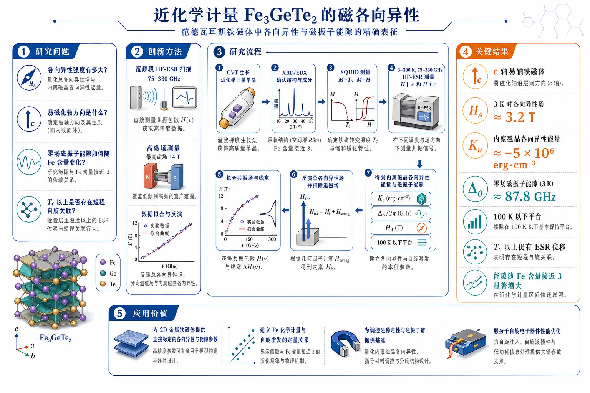
研究问题近化学计量 Fe₃GeTe₂ 的核心磁各向异性有多强，易轴方向是否明确，零场磁振子能隙如何随 Fe 含量变化，以及在居里温度以上是否仍存在可探测的短程自旋关联。创新方法采用 75–330 GHz 宽频高场 ESR 直接扫描共振色散关系，把低温铁磁态的共振位移、各向异性场和零场能隙定量反演出来；再结合磁化数据分离退磁场与内禀磁晶各向异性，抓住了 Fe 含量微调会强烈重塑自旋激发谱这一关键点。工作流程CVT 生长近化学计量单晶 → XRD/EDX 确认结构与成分 → SQUID 测量 M–T、M–H 确定磁性与 Tc → 在 3–300 K、75–330 GHz 下进行 HF-ESR，分别测量 H∥c 和 H⊥c → 拟合共振场与线宽 → 由易轴模型反演总各向异性场 → 扣除退磁场得到内禀磁晶各向异性能量与磁振子能隙。关键结果样品被定量确认为 c 轴易轴铁磁体；3 K 时各向异性场约 3.2 T，内禀磁晶各向异性能量约 -5×10⁶ erg·cm⁻³，零场磁振子能隙约 87.8 GHz；100 K 以下各向异性基本保持平台；ESR 位移在 Tc 以上仍存在，说明顺磁区仍有短程自旋关联；同时发现能隙对 Fe 含量极端敏感，随 n 接近 3 呈显著增大。应用价值为二维金属铁磁体提供了可直接标定的各向异性与能隙参数，建立 Fe 化学计量与自旋激发之间的定量关联，可作为调控 vdW 铁磁材料磁稳定性、磁振动谱和自旋电子器件性能的实验基准与设计指南。一、核心概览（100-200字）
这项研究用宽频高场 ESR系统刻画了近化学计量 Fe(₃.₀₃₍₃₎)Ge(₀.₈₉₍₄₎)Te(₂) 的磁各向异性与自旋激发。核心贡献在于：定量确认其为c 轴易轴铁磁体，测得 3 K 时各向异性场约 3.2 T、内禀磁晶各向异性能约 (-5×10⁶) erg cm(⁻³)、零场磁振子能隙约 87.8 GHz，并发现该能隙对 Fe 含量极端敏感。更关键的是，ESR 线位移在 (T_C) 以上仍持续存在，指向短程自旋关联。这些结果把 Fe(₃)GeTe(₂) 推向“可调各向异性金属二维铁磁体”的标杆位置。
---
二、结构化快速回顾
《Magnetic anisotropy in the near-stoichiometric van der Waals ferromagnet Fe₃GeTe₂》（None，）
- 背景：Fe(₃)GeTe(₂) 属于高 (T_C)、金属性的 vdW 铁磁体，但 Fe 空位会显著改变磁矩、交换和各向异性；近化学计量极限下的磁各向异性与磁振子能隙仍缺乏定量解析。
- 方法：对单晶 Fe(₃.₀₃₍₃₎)Ge(₀.₈₉₍₄₎)Te(₂) 做 75–330 GHz HF-ESR，覆盖 3–300 K、不同磁场方向，并结合 M–T / M–H 与形状退磁分析。
- 结果：确认c 轴易轴；3 K 时 (gₚₐᵣₐₗₗₑₗapprox1.95)、(gₚₑᵣₚapprox1.97)，(Δₘ̊ FMapprox87.8) GHz；(Kₘ̊ ᵢₙₜapprox-5×10⁶) erg cm(⁻³)；ESR 位移在 (T_C) 以上仍存在。
- 讨论：高温残余位移说明短程自旋关联在 ESR 时间尺度上静态可见；(Kₘ̊ ᵢₙₜ) 在 (sim100) K 以下近乎平台，可能与电子关联/Kondo-lattice相关。
- 局限：谱线较宽（约 1 T），需手动取峰；形状各向异性依赖近似退磁因子；缺少直接微观理论计算。
- 结论：Fe 含量是调控 Fe(ₙ)GeTe(₂) 中各向异性与磁振子能隙的关键微观参数，Fe(₃)GeTe(₂) 是研究可调 2D 金属铁磁激发的模型体系。
---
三、逐章节冷凝解析
I Introduction
Fe(ₙ)GeTe(₂) 的领域地位：高 (T_C) 金属二维铁磁体
- Fe(ₙ)GeTe(₂)（(napprox3)–5）被放在“itinerant ferromagnetism in reduced dimensions”的框架下讨论，其关键优势是金属性与接近室温的 (T_C)。原文直接定位为 *"a promising platform for exploring 2D magnetism in metallic systems"*。
- 与 CrI(₃)、Cr(₂)Ge(₂)Te(₆) 等绝缘/半导体 vdW 磁体不同，这类材料更适合研究金属二维磁性、自旋动力学与电子关联的耦合。
磁各向异性是二维磁性稳定性的核心
- 低维磁体中，热涨落会压垮长程有序；磁各向异性通过打开自旋波能隙、抬高翻转代价来稳定磁序。
- 原文用 *"magnetic anisotropy plays an important role in stabilizing the magnetic ground state and controlling the spin dynamics"* 概括了各向异性的基础作用。
HF-ESR 是直接探测各向异性场与能隙的手段
- ESR 被定义为能直接探测anisotropic fields、magnon excitation gaps、以及spin relaxation 的温度演化。原文强调 *"a sensitive and direct probe"*。
- 对铁磁体而言，EPR 与 FMR 本质上都是 ESR：前者看顺磁单自旋共振，后者看有序态中总磁化的集体模。
Fe 位空位导致静态磁性质强烈可调
- Fe(₃)GeTe(₂) 本征非化学计量，Fe 子晶格允许空位，常写作 Fe(₃₋ₓ)GeTe(₂)。
- 小的 Fe 占位变化会显著改变magnetic moments, coercive fields, exchange interactions, and (T_C)，原文明确指出 *"even small variations in Fe occupancy significantly modify..."*。
- 这直接引出问题：静态性质已知，但magnon gap 和 magnetocrystalline anisotropy 如何随 Fe 含量变化，仍未被充分解决。
研究空白聚焦在近化学计量极限
- 近化学计量样品（(napprox3)）恰处于 Fe 空位效应和本征各向异性竞争最敏感的区域。
- 原文把目标收束为：*“A detailed investigation of the magnetic anisotropy and spin excitations in a near-stoichiometric Fe(₃)GeTe(₂) is therefore crucial...”*。
本工作的核心问题
- 目标是用近化学计量、轻微 Fe 富集的 Fe(₃.₀₃±₀.₀₃)GeTe(₂)，在宽频、宽温、不同场向下建立磁各向异性—磁振子能隙—Fe 含量之间的定量联系。
- 原文在引言末端已经给出主结果预告：*“small variations in Fe content ... lead to substantial changes in the magnon gap at low temperatures”*。
---
II Experimental Details
单晶生长采用 CVT，样品接近化学计量但略 Fe 富
- 单晶通过chemical vapor transport (CVT) 合成，运输剂为 I(₂)。
- 起始配比为 Fe:Ge:Te = 3:1:2，I(₂) 浓度 5 mg cm(⁻³)，真空封管压力 (2×10⁻⁴) mbar。
- 生长条件为源区 750°C、生长区 700°C、持续 7 天。
- 晶体尺寸典型约 2 × 1.5 × 0.1 mm(³)。
结构与成分表征确认样品质量
- XRD 使用 Rigaku 仪器与 Cu-K(α) 辐射（(łambda=1.54056) Å）。
- FESEM 用于微形貌观察。
- EDX 显示表面平均组成为 Fe(₃.₀₃₍₃₎)Ge(₀.₈₉₍₄₎)Te(₂.₀₀₍₁₎)，直接支持“slightly Fe-rich”的样品描述。
磁化测量在低场与高场方向上完成
- (M)-(T) 与 (M)-(H) 由 MPMS-SQUID 完成。
- (M)-(T) 测量温区 1.8–300 K，外场 500 Oe，分别沿 (Hparallel c) 与 (Hperp c)。
- 为减少剩磁，先在 300 K 加 5 T，再逐步降至 0 并改变极性。
- 所有测量为 ZFC 条件。
ESR 样品与测量窗口
- ESR 使用体块尺寸约 1.74 × 1.47 × 0.24 mm(³) 的晶体。
- 频率范围 75–330 GHz，温度 3–300 K，连续扫场 0–16 T。
- 磁场由超导磁体提供，样品置于 He(⁴) 冷指 VTI 中。
谱线处理方式受仪器混合影响
- 广带 VNA-ESR 中，吸收与色散混合不可避免，原文明确写出 *“some instrumental mixing of the absorption and dispersion signals is unavoidable”*。
- 由于谱线偏离洛伦兹型，拟合中无法完全校正混合项，因此 (Hₘ̊ ᵣₑₛ) 取共振线最低点，(Δ H) 取该最低点的半高宽。
---
III Results and Discussion
III.1 Frequency dependence of HF-ESR response
宽频 ESR 显示单一宽共振线
- 在 3 K、100 K、300 K 的频率依赖测量中，所有谱线都表现为单一、较宽的共振线，平均 FWHM (sim1) T。
- 这一宽度决定了参数提取误差，因此所有 (ν)–(H) 图中的误差条被保守地设为约 1 T。
300 K 下呈现顺磁响应，g 因子接近 2
- 在 300 K，(ν)–(Hₘ̊ ᵣₑₛ) 呈线性，属于顺磁态特征。
- 用顺磁共振关系 (hν=gμ_Bμ₀ Hₘ̊ ᵣₑₛpara) 拟合，得到平均 (g=2.07±0.04)。
- 这为低温有序态的偏移提供了基准。
3 K 下显现易轴铁磁行为
- 在 (Hparallel c) 情况，3 K 的共振场在频率轴上出现正截距，对应uniaxial easy-axis anisotropy。
- 原文指出，这种偏移意味着 ESR 时间尺度上的static internal fields。
- 采用易轴铁磁体色散关系拟合后，得到：
- (gₚₐᵣₐₗₗₑₗ=1.95±0.11)
- (gₚₑᵣₚ=1.97±0.06)
- 平均 (g³Kₐᵥapprox1.96±0.08)
3 K 的零场磁振子能隙很大
- 由 (Hparallel c) 的频率截距得到 (Δ³Kₘ̊ FMapprox87.8±13.7) GHz，即 (0.363±0.057) meV。
- 这被直接标记为“comparatively large among vdW ferromagnets”。
100 K 下仍保持大能隙
- 在 100 K，易轴特征依然清楚：
- (gₚₐᵣₐₗₗₑₗ=2.07±0.04)
- (gₚₑᵣₚ=2.01±0.09)
- (g¹⁰⁰Kₐᵥapprox2.04±0.07)
- 零场能隙为 (Δ¹⁰⁰Kₘ̊ FMapprox81.3±7.1) GHz，即 (0.336±0.029) meV。
- 这一数值与 3 K 在误差内一致，说明能隙在低温区相当稳定。
面内各向异性未被观测到
- 将晶体在 ab 平面转动 90°，得到的 IP1 与 IP2 频率依赖几乎一致。
- 由此得出：在实验分辨率内，没有可测的面内各向异性。
- 这与先前磁化研究一致，说明各向异性主要是单轴型，而不是明显六方平面内破缺。
---
III.2 Temperature dependence of HF-ESR response
共振线随温度向顺磁位置回归
- 在约 300 GHz 的固定频率下，沿 (Hparallel c) 与 (Hperp c) 的 ESR 线都随着温度升高逐步靠近 300 K 的顺磁共振位置。
- 低温时，(Hparallel c) 的共振场低于顺磁值，(Hperp c) 则高于顺磁值，反映易轴铁磁分裂。
共振位移定义为温度依赖的磁各向异性指纹
- 位移定义为 (δ H(T)=Hₘ̊ ᵣₑₛ(T)-Hₘ̊ ᵣₑₛ(300,m̊ K))。
- 该量对两种场向呈现非对称行为，说明它不是简单的热漂移，而是磁各向异性与有序态内部场的直接反映。
c 轴始终是主易轴
- 位移在 (Hparallel c) 下更显著，说明磁化更容易沿 c 轴偏离顺磁参考线。
- 这与磁化测量一致，原文将其视为 dominant magnetic easy-axis at all temperatures。
(T_C) 以上仍存在有限 ESR 位移
- 位移在接近 300 K 时仍不消失，而 (T_C) 仅约 215 K（500 Oe 下测得）。
- 这说明在 (T_C) 以上仍有非零内部场或等效磁关联。
- 原文把这一点解释为：在 ESR 时间尺度（约 10 ps）上仍然可见的short-range spin correlations。
高场增强使表观 (T_C) 上移，但不足以解释全部高温位移
- 磁化数据表明，外场高于 0.5 T 后，(T_C) 随场上升：
- 7 T 时约 245 K
- 外推到 10 T 约 255 K
- 但 ESR 的有限位移可延伸到 300 K，高于这一场致增强极限，因此不能只用“场增强铁磁序”解释，仍需短程关联贡献。
---
III.3 Estimation of the temperature dependence of magnetic anisotropy
总各向异性场由 ESR 直接反演
- 由 300 GHz 附近的 (Hₘ̊ ᵣₑₛ(T)) 用易轴铁磁模型反推出 总各向异性场 (Hₐ)。
- 计算中将 (gapprox2.07) 固定为顺磁值。
- 对 (Hparallel c) 与 (Hperp c) 得到的 (Hₐ) 在各温度下几乎相同，符合单轴铁磁体的预期。
(Hₐ) 随降温增大，100 K 以下趋于饱和
- (Hₐ) 随温度降低而逐步增大，并在 (sim100) K 以下几乎保持常数。
- 这一平台行为与前述 (Kₘ̊ ᵢₙₜ) 的低温稳定区间一致。
形状各向异性被显式分离
- 总各向异性场分解为：
- (Hₐ₌Hₘ̊ ᵢₙₜ+H_D)
- 其中 (H_D=4π N Mₛ) 是样品形状造成的退磁场。
- 针对片状晶体，取 (Napprox0.76)。
形状场较小，内禀各向异性占主导
- 用不同温度下的 (Mₛ₍T)) 计算 (H_D)，再从 (Hₐ) 中减去，得到 (Hₘ̊ ᵢₙₜ)。
- 结果显示 (Hₘ̊ ᵢₙₜ<0) 且在全温区绝对值都明显大于 (H_D)，说明真正控制易轴行为的是内禀磁晶各向异性，不是样品几何。
内禀磁晶各向异性能量 3 K 时约为 (-5×10⁶) erg cm(⁻³)
- 定义 (Kₘ̊ ᵢₙₜ=Hₘ̊ ᵢₙₜMₛ/2)。
- 3 K 时：
- (Kₘ̊ ᵢₙₜapprox-5×10⁶) erg cm(⁻³)
- 这个数值：
- 比 Fe 含量更低的 Fe(₂.₉₂)GeTe(₂) 小约一半；
- 仍显著大于其他 vdW 铁磁体。
100 K 以下 (Kₘ̊ ᵢₙₜ) 近似平台，可能与电子关联有关
- (Kₘ̊ ᵢₙₜ) 在 (sim100) K 以下变化很弱。
- 原文把这一现象与 Fe(₃)GeTe(₂) 中已知的电子结构重构、mass renormalization、Kondo-lattice 形成联系起来。
- 这提出一个值得后续 DFT+SOC+U 验证的机制：电子关联可能反过来影响磁晶各向异性。
能量各向异性可写成单轴形式
- 使用 (Eₘ̊ ₐₙᵢ=Kᵤₒ̧s²θ) 描述单自旋子晶格的各向异性能量。
- 当 (Kᵤ<0) 时，(θ=0,π) 为能量最低，即 c 轴易轴；(θ=π/2) 为硬面。
- 这一几何图像与 Fig. 5 的 3D 能量面一致。
零场磁振子能隙可由各向异性场估算
- 关系式为 (Δ(T)=fracgμ_Bμ₀h|Hₐ₍T)|)。
- 在 15 K：
- (Δ|₁₅K=97.4±11.7) GHz
- 即 (0.403±0.045) meV
- 该值与 (ν)–(H) 直接拟合得到的低温能隙在误差内一致。
Fe 含量与能隙呈强烈非线性关联
- Fe(ₙ)GeTe(₂) 家族中，能隙随 (n) 变化极其敏感，尤其在 (napprox3) 附近。
- 具体对比：
- (n=2.75): (sim895) GHz
- (n=2.86): (sim230) GHz
- (n=2.92): (sim170) GHz
- (n=3.03±0.03): (sim88) GHz
- (n=4): (sim30.6) GHz 和 15 GHz
- (n=4.73): 20.6 GHz
- (n=5): (sim6.4) GHz
- 趋势接近指数式下降，说明极微小的 Fe 占位变化都能强烈重塑激发谱。
(T_C) 与能隙的 Fe 依赖性方向相反
- (T_C) 随 Fe 含量增加几乎线性上升：
- (n=2.75) 时约 150 K
- (napprox3) 时 215–217 K
- (n=4) 时约 270 K
- (n=4.73) 时约 282 K
- (n=5) 时约 332 K
- 因而出现一个重要反差：(T_C) 上升，但 magnon gap 下降。
- 这说明“决定有序温度”和“决定各向异性/能隙”的微观机制并不等价。
---
IV Conclusion
近化学计量 Fe(₃)GeTe(₂) 被定量确认为强单轴易轴铁磁体
- 综合 ESR 与磁化结果，Fe(₃.₀₃₍₃₎)GeTe(₂) 表现为easy-axis ferromagnet，易轴沿 c 轴。
- 3 K 时的内禀磁晶各向异性能量达到 (sim-5×10⁶) erg cm(⁻³)，对应一个大的零场磁振子能隙。
短程自旋关联延伸到 (T_C) 以上
- ESR 在 (T_C) 之上仍保留有限位移，说明高温顺磁区并非完全无关联，而存在静态短程自旋关联。
Fe 含量是调控磁激发的关键微观旋钮
- 结果把 Fe stoichiometry 提升为控制 Fe(ₙ)GeTe(₂) 各向异性、磁振子能隙、磁动力学的核心参数。
- 近化学计量样品与 Fe 缺位样品的显著差异，直接证明化学计量微调即可重写低能自旋谱。
---
四、深度理解与语言支持
1) 关键术语解析
1. uniaxial easy-axis ferromagnet
- 指只有一个主易轴方向的铁磁体。
- “easy-axis”不是“容易磁化”的泛化说法，而是指磁化矢量在该轴上最省能；在这里就是 c 轴。
- 对比“easy-plane”则相反，容易落在某个平面内。
2. magnetocrystalline anisotropy
- 指来自晶格对称性 + 自旋轨道耦合的内禀各向异性，不是样品形状造成的。
- 与 shape anisotropy 不同，它和化学键、电子轨道占据、晶体场直接相关，因此对微观电子结构更敏感。
3. short-range spin correlations
- 不是长程磁序，而是局域自旋之间仍保留较强关联。
- 在 ESR 中，即使超过 (T_C)，只要关联时间长于约 10 ps 的观测窗口，仍可表现为非零共振位移。
4. zero-field magnon gap
- 指在零外场下，磁振子最低激发能量不为零。
- 它通常由单轴各向异性打开；能隙越大，越不容易热激发低能自旋翻转，二维磁序越稳定。
5. demagnetization factor
- 描述样品几何导致的退磁场强弱。
- 片状晶体沿面外方向的 (N) 通常较大，因此shape anisotropy 常会辅助形成表观易轴，但这里它明显小于内禀项。
2) 疑难概念的高年级博士生式解释
为什么 (T_C) 上方仍能看到 ESR 位移？
- 顺磁态不等于“完全无磁关联”。如果局域自旋之间仍存在较强的瞬时或准静态关联，ESR 会感知到一个偏离纯顺磁 (g)-线的位置。
- 这里的关键是时间尺度匹配：ESR 频段对应约 10 ps 的动态窗口。只要关联的涨落比这个窗口慢，就仍会显得“像有内部场”。
为什么同一个材料里 (T_C) 变高，但磁振子能隙反而变小？
- (T_C) 更依赖整体交换网络和长程有序建立的难易。
- magnon gap 更直接受单离子各向异性或磁晶各向异性控制。
- 在 Fe(ₙ)GeTe(₂) 中，Fe 含量增加会强化某些交换路径、抬高 (T_C)，但同时可能弱化某些轨道占据与 SOC 相关的各向异性贡献，所以两者可以反向变化。
为什么要把 (Hₐ) 分成 (Hₘ̊ ᵢₙₜ) 和 (H_D)？
- ESR 测到的是“总效果”，而总效果既包括材料本征，也包括样品几何。
- 片状晶体通常会因退磁场在面外方向表现出额外的“假易轴”倾向。
- 只有扣掉 (H_D)，才能回答“材料本身到底有多强的内禀各向异性”。
---
五、创新评估与关联
1) 创新性判断
相较近 2–5 年相关工作的新颖性主要在三点：
第一，研究对象从 Fe 缺位样品推进到近化学计量极限
- 过去相关工作更多集中在 Fe(₂.₉₂)GeTe(₂) 或更缺 Fe 的样品。
- 这里把 Fe 含量推进到 3.03(3)，直接覆盖“接近理想化学计量”的边界，补上了stoichiometry limit 的关键空白。
第二，使用宽频 HF-ESR 同时定量出各向异性场、g 因子和零场能隙
- 不是只看 (T_C) 或静态磁滞，而是用 75–330 GHz 的频率窗把共振色散关系完整展开。
- 结果把“易轴性质”从定性判断推进为可量化的：
- (Hₐsim3.2) T
- (Kₘ̊ ᵢₙₜsim-5×10⁶) erg cm(⁻³)
- (Δsim88) GHz
第三，揭示 Fe 含量对 magnon gap 的极端敏感性
- 家族比较给出一个很强的经验规律：(T_C) 随 Fe 增加上升，但能隙随 Fe 增加急剧下降。
- 这一“反向标度关系”把 Fe(ₙ)GeTe(₂) 的化学计量调控提升为一个真正的微观旋钮，此前缺少如此系统、跨样品的统一 ESR 证据。
2) 解决了什么前人未解决的问题
- 解决了近化学计量 Fe(₃)GeTe(₂) 的磁晶各向异性强度与磁振子能隙缺乏定量值的问题。
- 解决了Fe 含量微调如何改变低能自旋谱、而不仅仅是改变 (T_C) 的问题。
- 解决了(T_C) 上方 ESR 位移是否仍可指示短程关联的问题：答案是可以，且在高场 ESR 时间尺度上仍可被看见。
- 为后续的 DFT + SOC + U 微观计算提供了明确实验标尺。
如果需要，我可以继续把这篇论文整理成：
- 一页式图解笔记，或
- “问题—证据—结论”三列表格，便于做组会汇报。
-
21
📄 摘要：用不同 DFT 交换相关泛函生成的机器学习力场，结合完整六维配对关联函数、三体结构描述子、超额熵与输运性质，系统评估液态水结构与动力学。结果表明是否考虑色散会显著改变过结构、超额熵和扩散系数。
📖 英文原文
arXiv:2607.22903v1 Announce Type: new Abstract: We evaluate machine learning force fields derived from different density functional theory exchange correlation functionals using the full six-dimensional pair correlation function of liquid water, three-body structural descriptors, excess entropy, and transport properties. The predicted microscopic structure and dynamics depend strongly on the underlying functional: neglecting dispersion produces pronounced overstructuring, overly negative excess entropy, and suppressed diffusion. Translational and orientational entropy contributions are tightly coupled and together exhibit a clear relationship with the reduced selfdiffusion coefficient. Among the tested models, RPBE-D3 provides the most consistent agreement with experiment across structural, thermodynamic, and transport properties. The classical SPC/E model serves as an additional reference and displays notable similarities to RPBE-D3, consistent with the comparable Born effective and partial charges of the two models.
💡 亮点：作者用 6 维配对关联函数、三体结构描述子、超额熵和输运性质，系统比较不同 DFT 泛函训练出的水 ML 力场。结果清楚显示，忽略色散会导致过结构、超额熵过负和扩散受抑，说明水的力场构建必须严肃处理泛函偏差。
-
22
📄 摘要：提出统一机器学习框架，用机器学习原子间势处理扭转双层 MoSi2N4 的大尺度结构重构，并用哈密顿量图神经网络描述电子结构和平带形成。该方法面向扭角敏感莫尔材料，降低大尺度第一性原理模拟成本。
📖 英文原文
Author(s): Jiamin Luo, Chunhui Li, Lei Shan, and Long Cheng Flat-band engineering in moiré materials is highly sensitive to twist angles, while accurate large-scale simulations remain computationally prohibitive. Here, we develop a unified machine-learning framework that integrates machine-learning interatomic potentials with Hamiltonian graph neural network… [Phys. Rev. B 114, 045432] Published Tue Jul 28, 2026
💡 亮点：该 PRB 针对扭转双层 MoSi2N4 中平带对扭角和弛豫高度敏感的问题，建立结构—电子统一机器学习流程。框架把机器学习原子间势用于大尺度莫尔结构重构，再用哈密顿量图神经网络学习有效电子哈密顿量和平带形成。核心优势是把原子弛豫和能带计算连续耦合，避免对大超胞反复做全量第一性原理；摘要未给出扭角范围或带宽数值。它是 AI for moiré materials 的代表性工作，可推广到其他二维半导体莫尔平带筛选。
-
23
📄 摘要：在铁电向列液晶 RM734 与 DIO 中直接测量剪切诱导电流，并配合振荡流变实验，定量考察剪切模直接压电效应。结果把先前主要由电压致形变表征的逆压电响应扩展到机械剪切产生电信号，确认液态铁电向列相也可表现线性机电耦合。
📖 英文原文
arXiv:2607.23297v1 Announce Type: new Abstract: Piezoelectricity (linear coupling between mechanical deformation and electric signal) was originally observed only in solid crystals. Recently, it was discovered that liquid ferroelectric nematic liquid crystals are also piezoelectric. However, so far only their converse piezoelectric signals (applied voltage-induced mechanical deformation) were measured quantitatively. In this work, we have carried out periodic shear-induced electric current and oscillatory rheology measurements on the two archetypic ferroelectric nematic compounds, RM734 and DIO. From temperature, frequency and strain dependent results of the first and second harmonic current signals together with the results from oscillatory rheometry, we were able to quantitatively determine the shear-mode direct piezoelectric coupling constants. These values are similar for both materials and are compared to results of previous converse piezoelectric measurements. We propose a physical mechanism in which the flow alignment of ferroelectric polarization leads to the direct piezoelectric response.
💡 亮点：作者针对两种典型铁电向列液晶 RM734 和 DIO，直接施加周期性剪切并记录电流响应，同时用振荡流变确定力学条件。核心创新在于从逆压电测量转向剪切模直接压电测量，证明液态有序极性介质能把机械剪切线性转换为电信号。摘要未给出具体压电系数数值，但明确给出两类原型化合物和剪切电流—流变联合方案。该结果把压电性从固体晶体拓展到可流动铁电软物质，为柔性传感和液晶机电耦合模型提供实验约束。
-
24
📄 摘要：基于第一性原理计算，用量子振荡分析空穴掺杂 RuO2 的电子与磁性演化。空穴掺杂增强自旋劈裂并重构费米面，预期可在振荡频率和自旋相关轨道中给出交变磁性的实验指纹。
📖 英文原文
arXiv:2607.24599v1 Announce Type: new Abstract: Altermagnetism, characterized by its ferromagnetism-like spin-splitting band structure and antiferromagnetism-like magnetic order, has garnered considerable attention recently. Although hole doping may promote magnetism in the debated altermagnet candidate RuO2, the evolution of its electronic and magnetic properties under hole doping remains poorly understood. Based on first-principles calculations, we employ quantum oscillations to study hole-doped RuO2. We find that hole doping can enhance spin splitting and reconstruct the Fermi surface in RuO2, which is revealed by the angle-dependent quantum oscillation frequency. By tracking a pair of closed Fermi-surface pockets, we identify a meaningful correlation between the magnetic moment of Ru and a quantum-oscillation-based signature of spin splitting. This correlation follows a quasi-linear trend over a broad doping range, which can be captured by a minimal two-dimensional d-wave altermagnetic model. In addition, the hole-doped RuO2 exhibits a transition from a nonmagnetic to an altermagnetic state via an intermediate state. The quasi-linear correlation through quantum oscillation and the distinct quantum oscillation frequency of the stable altermagnetic state can serve as useful signatures for identifying the altermagnetic state in RuO2. Our results provide a comprehensive framework for understanding hole-doped RuO2, offering new insights into altermagnetic transitions and their identification.
💡 亮点：该工作聚焦有争议交变磁候选 RuO2，考察空穴掺杂后费米面和磁性如何变化。方法上采用第一性原理能带计算并从量子振荡角度提取可观测指纹，而非仅报告自旋劈裂能带。最强结论是空穴掺杂可同时增强交变磁自旋劈裂并引发费米面重构，但摘要未列出掺杂浓度和振荡频率数值。它为用德哈斯—范阿尔芬或舒布尼科夫—德哈斯实验判别 RuO2 交变磁性提供了具体谱学路线。
-
25
📄 摘要：单晶中子衍射显示，Na2BaCo(PO4)2 在沿伊辛轴外场、接近磁化饱和以下的场区出现面内非公度相。传播矢量随磁场沿六角布里渊区边界移动，超出简单 XXZ 三角反铁磁模型；半经典框架可再现实验相行为。
📖 英文原文
arXiv:2607.23173v1 Announce Type: new Abstract: Using single-crystal neutron diffraction we report the observation of a field-tuned incommensurate phase in a field range just below magnetization saturation in the Ising-like triangular-lattice antiferromagnet Na₂BaCo(PO₄₎₂. This phase occurs for magnetic fields applied along the Ising axis and exhibits an in-plane incommensurate propagation vector that moves along the hexagonal Brillouin zone boundary upon varying field, challenging the simple XXZ antiferromagnetic description of the system. Within a semiclassical framework, we successfully identify this pre-saturation phase as a coplanar fan phase and study the role of dipole-dipole interactions and bond-dependent exchange anisotropy in its stabilization mechanism. We additionally present a minimal exchange model including interlayer couplings, which reproduces the complex magnetic phase diagram in field including the observed field-dependence of the incommensurate propagation vector in the fan phase.
💡 亮点：作者在伊辛型三角格反铁磁体 Na2BaCo(PO4)2 中，用单晶中子衍射直接解析高场磁结构。关键发现是饱和磁化下方存在场调非公度扇形相，其面内传播矢量沿六角布里渊区边界随磁场连续移动。方法上结合外场沿伊辛轴的衍射测量与半经典建模，指出简单 XXZ 三角反铁磁描述不足。该相图细节为受挫量子磁体中高场非公度序和各向异性交换项提供了强约束。
-
26
📄 摘要：用推广到双自旋通道模型的最小功率耗散变分原理，求解连接外部负载的自旋霍尔条稳态。得到纵向/横向电流、自旋/电荷积累和耗散分布；当负载电阻远离注入区时，因自旋弛豫，焦耳耗散可在负载处消失。
📖 英文原文
arXiv:2607.23589v1 Announce Type: new Abstract: The stationary state of a spin Hall bar connected to an external load circuit is investigated through a variational approach based on the principle of minimum power dissipation generalized to the two-spin-channel model. The self-consistent distributions of longitudinal and transverse current densities, alongside the corresponding spin and charge accumulations and dissipation power in the resistance, are derived. Surprisingly, it is shown that the Joule dissipation vanishes when the load resistance is placed at a sufficiently large distance compared with the spin-relaxation length. Such a highly non-trivial global stationary state appears as the most striking characteristic of the injection of pure spin current compared with more usual current injection.
💡 亮点：该理论工作把自旋霍尔条与外接负载作为一个自洽非平衡稳态问题处理，而非只用局域电阻模型。作者采用双自旋通道的最小功率耗散变分原理，解析纵横电流密度、自旋和电荷积累以及电阻中的功率耗散分布。最反直觉结论是负载电阻距离足够大时，注入电流与焦耳耗散可被自旋弛豫空间分离，负载处耗散趋于消失。它提示自旋轨道器件的能量损耗需要按空间分布设计，而不能只由总电流估算。
-
27
📄 摘要：报道 BaAl4 型四方 I4/mmm 家族中 Ga 富 CeZn2-xGa2+x 单晶的生长、结构与磁性。该体系是 CeZn2Ga2 的富 Ga 类比物，延续 R-Zn-Ga 稀土磁性材料探索，服务于重费米子、拓扑半金属和相关磁性研究。
📖 英文原文
arXiv:2607.22942v1 Announce Type: new Abstract: The tetragonal BaAl₄ (I4/mmm) parent structure underpins a diverse family of materials exhibiting novel phenomena, including nematic superconductivity, topological semimetallicity, and heavy fermion behavior. The recent growth of ternary R-Zn-Ga compounds, such as the previously reported CeZn₂Ga₂, has explored some of the members exhibiting rare-earth magnetism within this family. In this paper, we report on the structural and magnetic properties of single crystals of CeZn₂₋ₓGa₂₊ₓ, a Ga-rich analogue of CeZn₂Ga₂. Our CeZn₂₋ₓGa₂₊ₓ samples exhibit magnetic properties distinct from the paramagnetic behavior previously reported for CeZn₂Ga₂. We observe a magnetic transition around 4 K, pronounced metamagnetic states at low temperatures, and strong magnetic anisotropy. Though there are batch-to-batch variations that suggest a strong sensitivity to local structural imperfections, we consistently see the presence of magnetic transitions and metamagnetic states in our crystals. To investigate the local structural sensitivity hypothesis, we performed Reverse Monte Carlo analysis of collected powder neutron diffraction data, revealing the presence of significant local crystallographic disorder of the magnetic Ce site. Our findings demonstrate that the positional disorder drives competing ferromagnetic and antiferromagnetic correlations that lead to the observed spin glass behavior and complex anisotropic magnetism. This study illustrates that tuning the local crystallographic disorder enables engineering frustrated magnetic states in BaAl₄₋ₜype and similar intermetallic structures.
💡 亮点：作者制备了 Ga 富 CeZn2-xGa2+x 单晶，并围绕 BaAl4 型 I4/mmm 母结构开展结构精修和磁性表征。工作动机来自该结构族中已知的向列超导、拓扑半金属和重费米子行为，以及 CeZn2Ga2 等 R-Zn-Ga 化合物中的稀土磁性。摘要未给出 x 的精确范围、磁转变温度或有效磁矩，但明确指出样品为 CeZn2Ga2 的 Ga 富变体。该材料为研究 Ce 4f 局域矩、化学占位无序和四方层状骨架中相关电子行为的耦合提供了新单晶平台。
-
28
📄 摘要：采用分子束外延、扫描隧道显微镜和从头算，比较双层范德华体系的两种堆垛几何。结果显示窄带强关联可直接诱发电子铁电性，不依赖传统晶格畸变、层间滑移或莫尔重构主导的反演对称性破缺。
📖 英文原文
arXiv:2607.24087v1 Announce Type: new Abstract: Strong electronic correlations in narrow-band systems provide a promising route to realize emergent quantum phases. While ferroelectricity in van der Waals materials is typically associated with inversion symmetry breaking driven by lattice distortions, interlayer sliding, or moiré reconstruction, the possibility of generating ferroelectricity directly from electronic interactions remains largely unexplored. Here, using molecular beam epitaxy, scanning tunneling microscopy, and ab initio calculations, we investigate two stacking geometries of bilayer 1T-TaSe₂, A-C and A-C', formed by coupled Star-of-David charge density wave phases. We show that both stackings realize quasi-one-dimensional interacting chains, but are governed by distinct interaction mechanisms. In the A-C stacking, strong interlayer hybridization leads to dimerization and the formation of a band insulating state. In contrast, the A-C' stacking is dominated by interlayer Coulomb interactions, producing a spontaneous charge imbalance between layers that gives rise to an out-of-plane ferroelectric polarization. Furthermore, we demonstrate that ferroelectric and antiferroelectric interchain configurations can be stabilized and electrically switched by an external field. Our results prove that bilayer 1T-TaSe₂ is a platform for interaction-driven electronic ferroelectricity, establishing an overlooked family of charge-ordered correlated states in 1T-TaSe₂ multilayers.
💡 亮点：该工作把范德华铁电性的起源从结构位移拓展到电子相互作用，研究双层异质结构中不同堆垛几何的局域电子态。方法上结合分子束外延制样、扫描隧道显微镜成像/谱学和从头算对比，追踪窄带关联导致的极性态。最强结论是铁电性可由电子相互作用直接产生，而非由晶格畸变、层间滑移或莫尔重构作为主因。它为关联平带体系中的极化自由度、电子晶体和可开关量子相提供了新的凝聚态机制。
-
29
📄 摘要：建立交变磁莫特绝缘体的角分辨光电子谱响应理论。交变磁性虽具完全补偿反铁磁序，却因空间旋转对称性产生强自旋劈裂能带；该理论给出强关联绝缘背景下 ARPES 可观测的自旋与动量分辨谱特征。
📖 英文原文
Author(s): Lorenzo Lanzini, Purnendu Das, and Michael Knap Altermagnetism has emerged as an unconventional form of collinear magnetism with spatial rotational symmetries, that give rise to strongly spin-split bands despite an underlying fully compensated antiferromagnetic order. Here, we develop a theory for the angle resolved photoemission spectroscopy res… [Phys. Rev. Lett. 137, 056501] Published Tue Jul 28, 2026
💡 亮点：该 PRL 针对交变磁性与强关联莫特物理的交叉，构建角分辨光电子谱响应理论。核心创新是把补偿反铁磁序中的旋转对称性自旋劈裂纳入莫特绝缘体的单粒子移除谱，而不局限于弱关联金属能带图像。摘要未列出具体模型参数或谱峰能量，但目标是给出 ARPES 中可直接寻找的动量—自旋分裂特征。它为在绝缘交变磁候选材料中用光电子谱验证隐含自旋纹理提供了理论基准。
-
30
📄 摘要：研究外延 IrMn/FeNi 双层中的单向自旋霍尔磁阻。USMR 源于非平衡自旋积累与磁化相互作用，通常用于重金属/铁磁双层的两端磁态探测；该体系展示非常规响应，指向反铁磁 IrMn 界面或自旋极化机制的差异。
📖 英文原文
Author(s): Haiming Xu, Yong Xiao, Chuangwen Wu, Xiao Deng, Mingyu Wei, Yu Liu, Yining Wang, Yang Cao, Chenglong Jia, Yalu Zuo, Hao Wu, Tao Zhu, Junwei Zhang, Yong Peng, Dingfu Shao, Guoqiang Yu, Xiaoxi Liu, Desheng Xue, Jingsheng Chen, Dezheng Yang, Baoshan Cui, and Li Xi Unidirectional spin Hall magnetoresistance (USMR), arising from the interaction between nonequilibrium spin accumulation and magnetization, has been proposed as a simple two-terminal method for electrically detecting magnetic states in heavy-metal/ferromagnet bilayers. However, conventional spin pol… [Phys. Rev. Lett. 137, 056704] Published Tue Jul 28, 2026
💡 亮点：这篇 PRL 把单向自旋霍尔磁阻从常规重金属/铁磁双层拓展到外延 IrMn/FeNi 反铁磁相关界面。实验目标是利用电流诱导非平衡自旋积累与 FeNi 磁化的相互作用，实现两端电输运读出。题名强调“非常规”USMR，说明 IrMn 的反铁磁序、外延界面或自旋极化散射使信号不同于传统自旋霍尔图像；摘要片段未给出幅值和温度依赖数值。该结果有助于理解反铁磁自旋轨道材料中非线性磁阻的微观来源。
-
31
📄 摘要：提出链路级监督学习框架，用探针速度剖面、道路和拓扑描述符、天气等区域数据，从稀疏传感器学习小时交通量。框架引入容量感知特征，评估跨路段和跨城市泛化，减少对固定传感器密度的依赖。
📖 英文原文
arXiv:2607.24056v1 Announce Type: new Abstract: Network-wide traffic volume estimation typically relies on propagating measurements from fixed sensors, making performance highly dependent on sensor density and limiting deployment in sparsely instrumented networks. We propose a link-level learning framework that estimates hourly traffic volumes from widely available territorial data only, including probe speed profiles, road and topological descriptors, along with weather observations. A supervised local mapping is learned from sparse sensor measurements and evaluated under two generalization settings: intra-network (unseen links within the training network) and inter-network (unseen city). This formulation frames traffic volume estimation as a spatial out-of-distribution generalization problem under sparse supervision. To enhance spatial robustness, we introduce a capacity-aware formulation that models volume as the product of a link-specific structural capacity and an hourly regime-aware utilization ratio, embedding traffic-theoretic constraints directly into the learning process. Extensive experiments in both generalization settings demonstrate that the proposed structural constraints consistently outperform a state-of-the-art baseline under spatial distribution shift.
💡 亮点：该机器学习工作虽不属材料科学，但方法上面向稀疏传感条件下的图网络流量估计。模型从路段级探针速度、道路属性、拓扑描述符和天气观测学习局部映射，并显式考虑道路容量以提升泛化。评估设置包含跨路段和跨城市两类外推场景，目标是在低传感器密度下估计小时交通量；摘要未报告误差数值。其物理启发在于把容量约束作为结构先验，可类比于材料图学习中加入守恒量或局域环境容量。
-
32
📄 摘要：结合第一性原理、贝里曲率、半经典玻尔兹曼输运和原子自旋动力学，确认六方 NiS 为载流子补偿 3d 交变磁半金属。体系同时表现狄拉克拓扑、反常霍尔响应和巨磁阻，磁性、拓扑与晶格动力学相互耦合。
📖 英文原文
Author(s): Shovan Gayen, Sk. Soyeb Ali, and S. K. Panda We combine first-principles density-functional theory, Berry-curvature analysis, semiclassical Boltzmann transport, and atomistic spin dynamics to establish hexagonal NiS as a compensated 3d altermagnetic semimetal in which topology, magnetism, and lattice dynamics are intrinsically intertwined. T… [Phys. Rev. B 114, L051111] Published Tue Jul 28, 2026
💡 亮点：作者把六方 NiS 定位为载流子补偿的 3d 交变磁半金属，并系统连接拓扑能带与输运响应。方法链条包括密度泛函理论、贝里曲率分析、半经典玻尔兹曼输运和原子自旋动力学，覆盖电子结构、反常霍尔、磁阻和磁稳定性。最强结论是 NiS 同时具备狄拉克拓扑、交变磁自旋劈裂、反常霍尔响应与巨磁阻，但摘要未列出电导或磁阻百分比。该材料提供了比重元素体系更轻的 3d 平台，用于研究补偿磁体中的无净磁矩拓扑输运。
-
33
📄 摘要：合成并表征范德华多铁 CuCrP2S6 的 Co 取代衍生物 Cu1-xCr1-xCo2xP2S6 单晶和粉末。磁性测量显示多重自旋翻转转变，并考察磁电耦合，说明 Co 取代可调控层状硫代磷酸盐的磁各向异性和极性响应。
📖 英文原文
Author(s): Dingyu Li, Donger Cheng, Ziyi Zhou, Shuixian Qu, Wenhao Li, Jiaqiang Wang, Qisheng Jiang, Juping Xu, Wu Xie, Ping Miao, Wen Yin, Xinzhi Liu, and Yue Zheng We report the synthesis and comprehensive investigation of Cu₁−ₓCr₁−ₓCo₂ₓP₂S₆ (CCCPS) single crystals and powder samples, a substituted derivative of the van der Waals multiferroic CuCrP₂S₆ (CCPS) w… [Phys. Rev. B 114, 034117] Published Tue Jul 28, 2026
💡 亮点：该工作围绕范德华多铁 CuCrP2S6 的 Co 取代体系 Cu1-xCr1-xCo2xP2S6 展开，样品包括单晶和粉末。实验综合考察结构、磁性和磁电响应，重点识别外场下的多重自旋翻转转变。摘要未给出 x 的具体系列、临界场或磁电系数，但明确显示 Co 同时替代 Cu/Cr 位点会显著重塑磁各向异性。它为通过化学取代调控二维层状多铁中的自旋重取向和磁电耦合提供了材料路线。
-
34
📄 摘要：理论证明二维非共形反铁磁体可具有混合阶拓扑。基于通用反铁磁狄拉克模型和对称性允许的动量依赖自旋密度波质量项，单一体绝缘相可同时呈现不同阶数的拓扑束缚态。
📖 英文原文
Author(s): Wei Xiong, Zi-Ming Wang, Xin-Mei Wei, Rui Wang, and Dong-Hui Xu We theoretically demonstrate hybrid-order topology in a two-dimensional nonsymmorphic antiferromagnet. Utilizing a generic antiferromagnetic Dirac model with a symmetry-allowed, momentum-dependent spin-density-wave mass, we show that a single bulk insulating phase exhibits distinct topological bound… [Phys. Rev. B 114, 065137] Published Tue Jul 28, 2026
💡 亮点：作者提出二维非共形反铁磁体中的混合阶拓扑相，强调一个体能隙相可承载不同维度的边界束缚态。模型上采用通用反铁磁狄拉克哈密顿量，并加入由对称性允许的动量依赖自旋密度波质量项。核心结论是同一绝缘相内可同时出现不同拓扑阶数的边界响应，而非传统单一一阶或高阶分类。该理论把非共形对称、反铁磁序和高阶拓扑联系起来，为设计磁性二维拓扑材料提供了对称性判据。
-
35
📄 摘要：在候选交变磁体 MnF2 中，结合对称性指导的应变/磁场调控、高灵敏弹热测量和第一性原理理论，获得交变磁性的首个明确体相确认。弹热效应对多极序和应变共轭响应敏感，可区分补偿反铁磁中的交变磁序参量。
📖 英文原文
Author(s): Rahel Ohlendorf, Luca Buiarelli, Hilary M. L. Noad, Andrew P. Mackenzie, Rafael M. Fernandes, Turan Birol, Jörg Schmalian, and Elena Gati The first unambiguous bulk confirmation of altermagnetism in MnF 2 is achieved by combining symmetry-guided strain and magnetic-field tuning with highly sensitive elastocaloric measurements and first-principles theory. [Phys. Rev. Lett. 137, 056702] Published Tue Jul 28, 2026
💡 亮点：这篇 PRL 对经典候选 MnF2 给出体相交变磁性证据，而不是依赖表面或能带间接推断。实验采用对称性指导的应变与磁场调谐，并用高灵敏弹热效应测量热响应，同时结合第一性原理确定多极序与应变耦合。最强结论是实现 MnF2 中交变磁性的首个无歧义体相确认；摘要未给出弹热幅值或应变大小。它为交变磁体鉴定提供了热力学探针范式，可推广到绝缘补偿磁体和多极有序体系。
-
36
📄 摘要：针对多离子集成含能材料的机器学习表征难题，提出由化学计量离子团簇进行少样本性质预测。利用预训练机器学习原子间势，绕开完整晶体结构预测，在合成前筛选 MIXs，捕捉带电构筑单元聚集成特定组装体后的性质。
📖 英文原文
arXiv:2607.23208v1 Announce Type: new Abstract: Multi-ionic materials pose a distinct representational challenge in machine learning-driven materials design. Different from single-molecule or composition-based materials, their properties arise from how charged building blocks aggregate into specific assemblies. Here, we show how pretrained machine-learned interatomic potentials (MLIPs) can bypass full crystal-structure prediction and support pre-synthesis screening from stoichiometric ionic clusters using multi-ionic integrated explosives (MIXs) as a synthesis-facing example. This strategy combines a stoichiometric ionic-cluster representation, which represents each candidate material by a non-periodic, stoichiometry-preserved formula-unit cluster, with multi-task fine-tuning (MT-FT), which adapts a pretrained atomistic backbone while retaining the energy--force objective as physical regularization for the sparse detonation-velocity labels. With the pretrained backbone regularized by MT-FT, this surrogate provides a cross-validated screen across only 25 structurally curated perovskite-type energetic materials (PEMs) with experimentally derived Kamlet--Jacobs (K--J) detonation velocities. Representation probes show that the learned descriptors implicitly retain site-aware ionic organization, density information, and coarse packing compatibility, implying why non-periodic clusters can remain predictive before full crystal structures are known. The surrogate extends known PEMs chemistry to three newly synthesized ABX₄ materials with both unseen ABX₄ stoichiometry and an unseen ethylenediammonium B-site cation, yielding three-point concordance with K--J reference velocities and a mean absolute error (MAE) of 92~mḑots⁻¹ without retraining. Together, these results establish stoichiometry-preserved cluster learning as a synthesis-facing screening strategy for data-scarce multi-ionic materials.
💡 亮点：作者面向多离子集成炸药 MIXs，提出化学计量团簇学习来处理性质由带电组分聚集方式决定的问题。方法上利用预训练机器学习原子间势生成或评估离子团簇表征，从而避免完整晶体结构预测这一高成本步骤。训练任务强调少样本性质预测和合成前筛选，适合实验数据稀缺的多组分离子材料；摘要未给出数据集规模和误差指标。该框架展示了 MLIP 作为结构先验嵌入材料表征的可行性，对多盐、离子晶体和含能材料的快速筛选有参考价值。
-
37
📄 摘要：将带符号磁拉普拉斯解释为有效哈密顿量、边相位解释为离散规范场，在带符号有向网络中定义持久电流。正则系综下，电流是对规范不变通量的热力学响应；通量定义在网络循环空间，电流受循环约束。
📖 英文原文
arXiv:2606.06716v2 Announce Type: replace Abstract: Network theory can be fruitfully used to describe quantum coherence in physical systems. To that purpose we introduce persistent currents in signed directed networks by interpreting the signed magnetic Laplacian as an effective Hamiltonian and the associated edge phases as a discrete gauge field. In a canonical ensemble, persistent currents arise as thermodynamic responses to variations of gauge-invariant fluxes. We show that these fluxes are naturally defined on the cycle space of the network, and that the resulting currents are constrained to the divergence-free subspace and decompose onto independent cycles. This formulation provides a direct generalization of persistent currents from rings and lattices to arbitrary topologies. Detection of persistent currents provides a signature of the quantum phase coherence supported by the network, and a direct signature of the geometry of its cycle space. Such a mapping, not only allows a practical way to deal with quantum coherence for a variety of situations in the field of quantum technologies, but it also allows a physical interpretation of the importance of the Laplacian operator in graph theory, linking its role to the one of Hamiltonian (i.e. a tight-binding one) in physical systems. To test the power of the method, we construct a signed directed network that reproduces the Hofstadter butterfly spectrum.
💡 亮点：该理论把量子相干中的持久电流概念推广到带符号有向网络。方法上以带符号磁拉普拉斯作为有效哈密顿量，把边相位视为离散规范场，并在正则系综中由自由能对规范不变通量求响应。最强结论是独立通量自然定义在网络
-
38
📄 摘要：研究相互作用 p 波磁性环形导线中共面磁螺旋的绕数效应。局域上螺旋可映射为均匀自旋轨道耦合线，但在环上旋转自旋框架改变电子边界条件；偶、奇绕数对应相差半个单电子磁通周期的边界相，并控制数守恒拓扑相中的全局费米子奇偶翻转。
📖 英文原文
arXiv:2607.24038v1 Announce Type: new Abstract: Coplanar magnetic spirals map locally onto uniform spin--orbit-coupled wires, but on a ring the rotating spin frame can change the electronic boundary condition. We prove, level by level in every fixed-particle-number sector, that even and odd texture windings impose boundary phases separated by half the single-electron flux period. Changing the winding by one also changes the physical pitch in inverse proportion to the circumference; a symmetric comparison removes this leading pitch correction. In the number-conserving topological phase, a global parity constraint then reverses the fermion-parity assignment of neighboring phase-winding branches. Density-matrix renormalization-group simulations show this reversal, support an Ising transition coexisting with a gapless charge mode, and relate the finite-size parity splitting to an independently calculated charge stiffness. Magnetic-texture winding thus changes the many-body spectrum through a global boundary condition that is not determined by the local band dispersion, providing a closed-geometry, number-conserving probe of topological pairing.
💡 亮点：作者证明磁织构的拓扑绕数可在相互作用 p 波磁线环中调控费米子奇偶开关。关键理论步骤是把共面磁螺旋局域映射到均匀自旋轨道耦合导线，同时保留环几何中旋转自旋参考系对边界条件的改变。逐能级、逐固定粒子数扇区证明偶/奇绕数给出相差半个单电子磁通周期的边界相；通过对称比较去除绕数变化带来的主导螺距修正。该结果强调实空间磁织构绕数可作为数守恒拓扑超导样系统中的全局控制旋钮。
-
39
📄 摘要：提出 PI-GINOT：以边界点云编码四参数 DogBone 试样几何，结合物理信息神经算子和交叉注意力解码器，在不使用有限元训练数据的前提下预测有限应变超弹性响应。面向几何变化下的虚拟测试、优化与不确定性分析。
📖 英文原文
arXiv:2607.23299v1 Announce Type: new Abstract: Parametric nonlinear solid-mechanics simulations are widely used in virtual testing, optimisation, and uncertainty analysis, but repeated finite-element simulations become costly when geometry changes. This paper presents PI-GINOT, a physics-informed neural operator that predicts finite-strain hyperelastic responses across a four-parameter family of DogBone specimens without using finite-element training data. Each specimen is described by a boundary point cloud, which is encoded into geometry features. A cross-attention decoder then predicts displacement at arbitrary points. Displacement boundary conditions are enforced exactly, while stresses are computed using automatic differentiation and a compressible Neo-Hookean plane-stress model. Training is guided by equilibrium, traction-free and symmetry conditions, deformation stability, and internal force consistency. Abaqus simulations are used only after training for validation. Across eight test geometries, PI-GINOT achieves displacement errors of 2.1%-7.1%, peak von Mises stress errors of 0.9%-13.3%, and section-force errors below 10.3%. Larger errors occur in individual stress components, especially for narrow specimens, mainly because of steep stress gradients near the gauge-to-fillet transition. These results show that PI-GINOT can provide useful geometry-dependent predictions for nonlinear solid mechanics without labelled simulation data, while also revealing where better local stress resolution is still needed.
💡 亮点：PI-GINOT把四参数 DogBone 试样的边界点云编码为几何特征，再用交叉注意力解码器学习有限应变超弹性响应，全程不依赖有限元训练数据。核心是“几何感知 + 物理约束”的神经算子范式，直接面向参数化固体力学的跨几何泛化。
-
40
📄 摘要：针对切分学习中的特征反演与梯度泄漏，作者用 smashed activations 的持续贝蒂复杂度做拓扑引导分析，发现隐私风险在层间分布高度不均匀，并存在传统方法难以捕捉的尖锐转变区间。该框架用于选择更安全的切分位置。
📖 英文原文
arXiv:2607.24556v1 Announce Type: new Abstract: Split learning enables collaborative model training by partitioning neural networks across clients and servers. However, improper split placement can lead to severe privacy leakage through intermediate representations. In this work, we propose a topology-guided framework for privacy-aware split learning based on the persistent Betti complexity of smashed activations. Through comprehensive layer-wise analysis, we show that privacy risk in split learning is highly non-uniform across layers and exhibits sharp transition regions that are not captured by architectural depth alone. In particular, feature inversion fidelity increases from negligible reconstruction to as high as 0.98 SSIM at deeper, privacy-critical split points. We further demonstrate that Betti complexity consistently identifies representation regimes associated with elevated feature-space privacy leakage across architectures and datasets. Leveraging this observation, we introduce BettiSafe, a topology-guided split selection strategy that identifies privacy-sensitive layers without requiring explicit attack execution. BettiSafe improves resistance to feature inversion by 2 to 5 times compared to depth-based heuristics while preserving classification accuracy. In addition, Betti-based regularisation increases inversion difficulty by nearly 5 x without degrading model utility, enabling a favourable privacy utility tradeoff. Overall, our results highlight topological complexity as a promising structural descriptor for secure, adaptive, and representation-aware split learning in real-world collaborative systems
💡 亮点：该工作把持续贝蒂复杂度引入 split learning，揭示中间表征的隐私风险并非随层平滑变化，而是在某些层出现突变。它为切分点选择提供了拓扑依据，可同时缓解特征反演和梯度泄漏。
-
41
📄 摘要：构建 field-aware 等变原子势，把外电场偏置并入基础模型式材料模拟，在整个化学空间学习可微电焓，用于极化、极化率和 Born 有效电荷的统一预测。面向无机材料的电响应建模。
📖 英文原文
Author(s): Bradley A. A. Martin, Alex M. Ganose, Venkat Kapil, Tingwei Li, and Keith T. Butler A field-aware equivariant interatomic potential integrates electric bias into foundation-model simulations across chemical space, learning a differentiable electric enthalpy for polarization, polarizability, and Born effective charges. [PRX Intelligence 1, 013006] Published Tue Jul 28, 2026
💡 亮点：作者把电场偏置显式并入等变原子势，学习可微电焓，从而统一描述极化、极化率与 Born 有效电荷。该框架把外电场下的无机材料电响应纳入基础模型式模拟，适合跨化学空间推广。
-
42
📄 摘要：提出神经视觉辅助方法，在分子束外延生长中自动完成晶向对准。模型仅用 15 个 CdTe 结构的 RHEED 图样训练，并结合物理感知后处理，比较 2D/3D ResNet 及其后处理版本，用于替代逐帧人工判读。
📖 英文原文
arXiv:2607.24467v1 Announce Type: new Abstract: We introduce a data-efficient neural-vision assisted method to automate crystallographic alignment during molecular beam epitaxy (MBE) growth. Trained on reflection high-energy electron diffraction (RHEED) patterns from only 15 CdTe structures, our model - enabled by physics-aware postprocessing - reliably infers crystallographic directions, replacing manual frame-by-frame inspection. To this end, we design, test, and critically compare neural-network architectures based on 2D and 3D ResNet configurations, both with and without postprocessing that leverages the physical constraints of RHEED image acquisition. Our work delivers (i) a fully trained neural system ready for closed-loop deployment in future CdTe growth experiments and (ii) a generalizable pipeline for new materials where access to diverse RHEED datasets is limited. More broadly, this study represents a step toward AI-driven MBE growth and demonstrates the potential of machine-learning-assisted automation in thin-film synthesis.
💡 亮点：作者用仅 15 个 CdTe 结构的 RHEED 图样训练 2D/3D ResNet，并通过物理感知后处理自动推断晶向。这个少样本方案把 MBE 生长中的逐帧人工对准变成可部署的视觉分类任务，适合在线外延监测。
-
43
📄 摘要：针对 PCSEL 逆设计，作者在相同目标函数、仿真器和 83 次调用预算下，对基线 DQN 与 6 种值学习变体做系统比较。重点在于评估在极低仿真预算内哪些 value-based 机制更稳健，而非扩展问题规模。
📖 英文原文
arXiv:2607.23469v1 Announce Type: new Abstract: Photonic-crystal surface-emitting lasers (PCSELs) can combine high-power operation with narrow-divergence surface emission, but optimizing coupled parameters requires costly full-wave simulations. Deep Q-network (DQN) optimization can reuse simulated transitions to guide edits, yet which value-learning mechanisms remain reliable under tight simulation budgets is unknown. We address this gap by comparing baseline DQN and six value-based variants for a seven-variable PCSEL design under a shared objective, simulator, 83-call budget, and four matched initializations. Beyond endpoints, we analyze sample efficiency, policy behavior, and physical response to separate learning gains from favorable starts or exploratory jumps. Dueling DQN is the only variant to improve all four seeds. Relative to the first evaluated designs, its selected structures increase the mean quality factor () from to (), reduce wavelength error by 64%, and increase upward power by 47%; compared with baseline DQN, they achieve a higher mean under the same budget. Other variants yield no consistent improvement; Double DQN reproduces baseline trajectories, while Rainbow-lite shows high upside but strong seed dependence. These results identify Dueling DQN as the most reliable configuration tested for simulation-budget-limited PCSEL inverse design and provide a reproducible framework for attributing algorithmic gains in scientific optimization. The source code is publicly available at https://github.com/Longying-Wen/PCSEL-RL.
💡 亮点：这项工作把 PCSEL 逆设计限定在 83 次仿真调用预算内，对基线 DQN 与 6 种值型变体做统一比较。它关注的是低预算条件下哪类 value learning 更可靠，直接对应昂贵全波仿真场景的算法选择问题。
-
44
📄 摘要：将第一性原理分子动力学与通用机器学习势 UMA 结合，追踪 GaN(0001) 上与生长相关吸附物的动力学，跨越纯第一性原理方法难以达到的时间尺度。围绕 GaNH 吸附分子及其与 H 共存的过程解析表面基本反应。
📖 英文原文
arXiv:2607.23461v1 Announce Type: new Abstract: Atomic-scale understanding of the surface elementary processes in metalorganic vapor phase epitaxy (MOVPE) of GaN has so far relied on static density-functional-theory (DFT) energetics and on first-principles molecular dynamics (FPMD) limited to a few tens of picoseconds. Here we combine FPMD with a universal machine-learning interatomic potential (MLIP), UMA, to follow the dynamics of growth-related adspecies on GaN(0001) over time scales inaccessible to purely first-principles approaches. FPMD simulations of a GaNH admolecule coexisting with H adatoms reveal a hitherto unrecognized diffusion mode, in which the N atom lifts the Ga atom of the GaNH unit off the surface layer during migration, and show that the lifted Ga abstracts an H adatom from the surface, events invisible to static DFT. Single-point UMA calculations on FPMD snapshots reproduce the first-principles relative energies along the trajectory (RMSE of about 8.5 meV/atom) without any retraining. Long-time MLIP-based MD (150 ps) then reveals dynamics never observed within the FPMD window: site-to-site H-adatom hopping, which gates the migration paths of the growth unit, and reversible dissociation of the GaNH unit into independently migrating Ga and NH adspecies. This work constitutes, to our knowledge, the first application of an MLIP to the molecular dynamics of GaN MOVPE.
💡 亮点：该工作把 FPMD 与通用 ML 势 UMA 联用，追踪 GaN(0001) 表面生长相关吸附物在更长时间尺度上的动力学。它特别围绕 GaNH 吸附分子及 H 共存过程展开，为 GaN MOVPE 的原子级生长机理提供动态图景。
-
45
📄 摘要：作者提出三阶段流水线，把运动模仿学到的技能转化为可复用的混合运动先验，用于类人机器人行走控制。动机是：纯强化学习每个任务都要单独训练，而模仿控制器通常只能做参考轨迹跟踪。
📖 英文原文
arXiv:2607.24083v1 Announce Type: new Abstract: Reinforcement learning can produce robust humanoid controllers, but each new task is typically trained as a separate policy with its own reward design and training process. Motion imitation provides an alternative source of motor competence by training policies to track retargeted human motions, yet the resulting controllers remain reference trackers and are not directly usable as task policies. We propose a three-stage pipeline that turns motion-imitation skills into a reusable hybrid motion prior (HMP) for humanoid locomotion. First, an expert policy is trained to imitate retargeted human motion-capture clips. Second, the expert is distilled into a frozen architecture composed of a proprioceptive encoder, a residual vector-quantized (RVQ) codebook, and an action decoder. Third, task-level policies are trained to solve locomotion tasks by selecting discrete codebook entries while the HMP remains frozen. We evaluate the method on velocity tracking, point-goal navigation, and fall-recovery velocity tracking in simulation, and deploy the velocity-tracking policy on a real Unitree G1 robot. The distillation process preserves the tracking behavior of the expert, while the resulting HMP can be reused without retraining as the action interface for different downstream locomotion policies. The learned HMP reveals an interpretable codebook structure in which the number of active RVQ stages modulates the available gait patterns. We further show that training the codebook with the rotation trick improves latent organization and reduces downstream falls compared with a standard straight-through estimator.
💡 亮点：这项工作提出三阶段流水线，将运动模仿技能提炼成可复用的混合运动先验 HMP，再用于类人机器人 locomotion。它解决了“模仿策略只能跟踪、不能直接当任务策略”的老问题，为后续 RL 提供现成运动基础。
-
46
📄 摘要：提出信息增益引导的强化学习传感器选择框架，用于异构海上传感器网络中的单舰跟踪。系统不再激活全部传感器，也避免在线计算昂贵的期望信息增益，而是每个决策时刻仅选择一个最相关传感器，由贝叶斯序贯蒙特卡洛跟踪器融合噪声观测。
📖 英文原文
arXiv:2607.22667v1 Announce Type: cross Abstract: This paper presents an information-gain-guided reinforcement-learning sensor-selection framework for single-vessel tracking in heterogeneous maritime sensor networks. The proposed approach is motivated by information-theoretic sensor management: instead of activating all sensors or repeatedly performing computationally expensive online expected-information-gain evaluation, a learned policy selects one tracking-relevant sensor at each decision epoch. A Bayesian sequential Monte Carlo tracker estimates the vessel state from noisy measurements and provides a belief representation for scheduling under nonlinear and non-Gaussian conditions. A Proximal Policy Optimization agent selects one of five sensors deployed in a georeferenced simulation of the CMMI Smart Marina testbed at Ayia Napa Marina, Cyprus. The agent observes belief-state, detection-history, coverage, sensor-geometry, and realized-information-gain features. The reward is defined as a realized-information-gain term gated by an observability mask. Final-test simulations compare the proposed framework with random single-sensor selection, always-on sensing using all sensors simultaneously, and the expected-information-gain sensor-selection baseline proposed in our previous work. Results show that the learned policy achieves tracking performance close to always-on sensing while activating only one sensor per decision time step and avoiding the computationally expensive online entropy search required by expected-information-gain selection.
💡 亮点：该框架用强化学习替代在线期望信息增益计算，在异构海上传感器网络中为单舰跟踪按时刻选择一个最相关传感器。底层用贝叶斯序贯蒙特卡洛跟踪器处理噪声观测，形成轻量化的信息论传感器管理方案。
-
47
📄 摘要：32 名受试者中包含 16 名专家和 16 名新手，观看生态有效的篮球进攻视频并快速预测持球者下一步动作，同时记录功能近红外血流信号。研究聚焦前额叶血流动力学与即时决策表现之间的关系。
📖 英文原文
In highly dynamic sports such as basketball, rapid decision-making under extreme time pressure is a hallmark of perceptual-cognitive expertise. Although the neural efficiency hypothesis (NEH) provides a framework for experts' superior performance, its spatiotemporal boundaries in complex tactical contexts remain underexplored. This study examined prefrontal hemodynamics during instantaneous basketball decision-making. Thirty-two participants (16 experts, 16 novices) viewed ecologically valid basketball offensive videos and rapidly predicted the ball-carrier's next move while functional near-infrared spectroscopy (fNIRS) monitored prefrontal hemodynamics across four consecutive task blocks. Behaviorally, experts showed higher decision accuracy and efficiency. Neuroimaging revealed a spatiotemporally specific neural efficiency pattern. Spatially, the expert advantage was localized to lower activation in the ventrolateral prefrontal cortex (VLPFC), with no significant group differences in the dorsolateral prefrontal cortex (DLPFC), suggesting a "resource redirection" strategy that bypasses general cognitive hubs. Experts' VLPFC activation correlated negatively with decision-making efficiency, whereas novices showed a positive correlation, consistent with inefficient cognitive compensation. Temporally, the effect was most pronounced during the mid-task phase (Block 2), after initial cognitive adaptation. These findings extend the NEH by identifying VLPFC-specific spatial pathways and a stage-specific temporal window in basketball decision-making.
💡 亮点：研究用 fNIRS 记录 16 名篮球专家和 16 名新手在快速战术判断中的前额叶血流变化。结果指向腹外侧前额叶的神经效率特征，即专家在即时决策时表现出更高效的前额叶加工。
-
48
📄 摘要：提出 CISVM，用于 IASI Level 1C 观测的全球晴空/云覆盖二分类，并在四个季节上评估。作者比较辐射值、亮温及其变体，并把物理约束纳入监督式云识别流程。
📖 英文原文
arXiv:2508.10120v2 Announce Type: replace Abstract: Cloud detection is fundamental for the interpretation and operational exploitation of hyperspectral infrared sounders, yet the capability of infrared radiances alone to provide reliable cloud information remains insufficiently assessed. We introduce the Cloud Identification Support Vector Machine (CISVM), a supervised framework for global clear and cloudy classification from Infrared Atmospheric Sounding Interferometer (IASI) Level 1C observations. The analysis spans four seasons and compares radiances and brightness temperatures, alternative spectral reductions, and stratifications by surface type and climate zone. Using AVHRR-derived IASI cloud labels for training, the classifier operates exclusively on hyperspectral infrared radiances and is evaluated against independent IASI and collocated MODIS observations. The best-performing configuration, based on radiances and principal component analysis, achieves 88.52 percent of agreement with the operational IASI cloud reference. The results show that infrared radiances alone can reproduce the large-scale behaviour of an operational cloud product while providing physically interpretable insight into the influence of surface properties, seasonality, and geography on cloud detection performance. The proposed framework provides an operational baseline for future hyperspectral infrared missions, including ESA's Far-infrared Outgoing Radiation Understanding and Monitoring (FORUM).
💡 亮点：CISVM 用支持向量机对 IASI Level 1C 做全球晴空/云覆盖分类，并显式引入物理约束。研究跨四季比较辐射与亮温等表征，目标是把红外大气探测中的云检测做得更稳健、更易部署。
-
49
📄 摘要：SeekJudge 讨论长程 GUI 任务中“轨迹是否真正满足指令”的判别问题，指出规则评估难以适应人类意图和应用更新，模型裁决器又难完全追平规则方法。框架目标是构建更实用、可训练的奖励判定机制。
📖 英文原文
arXiv:2607.23263v1 Announce Type: new Abstract: Deciding whether a trajectory actually fulfills its instruction governs how we measure computer-use agents on long-horizon graphical-user-interface tasks and how we train them with reinforcement learning. This judgment has long relied on rule-based evaluation, which struggles to align with human intention and goes stale when an app updates or its online content drifts. Existing model-based judges attempt to address these problems but still leave a performance gap to the rule-based evaluation. We propose the SeekJudge framework, in which four role-specialized agents, a Condense, a Ground, a Seek and an Analyze agent, reach a verdict through a Seek--Analyze loop over the trajectory. A seed-calibrated distillation pipeline trains one specialized 9B model to serve as the shared backbone for all four agents. Measured by downstream success rate on held-out RL test goals, SeekJudge is the first practical model-based reward to match or surpass native rule-based supervision in online RL. Beyond accuracy, SeekJudge provides step-level judgments, runs far cheaper than a closed-source large model, and keeps a small per-call context that scales to much longer trajectories. We further contribute a general architectural improvement to the reward server that speeds up judging in RL. Together these make model-based reward a practical drop-in for rule-based supervision in CUA reinforcement learning.
💡 亮点：SeekJudge 试图重构电脑使用智能体的奖励定义，把“轨迹是否完成指令”变成可学习的判别任务。它针对规则评估对应用更新和内容漂移的脆弱性，尝试用模型裁决器缩小与规则判定之间的差距。
-
50
📄 摘要：面向二维半导体晶体管的金属接触工程，作者提出统一机器学习框架，用于预测无势垒金属接触组合，服务于接触筛选与器件设计。
📖 英文原文
Advanced Functional Materials, EarlyView.
💡 亮点：该工作把二维半导体晶体管的接触工程抽象为统一预测问题，用机器学习筛选无势垒金属接触组合。其直接面向降低肖特基势垒与加速二维器件电极设计，属于接触材料搜索的实用型框架。
-
51
📄 摘要：围绕 MOF 衍生氧化锆多晶型，文章开展数据驱动迁移学习，探索跨不同晶型共享表征以提升小数据场景下的预测能力。重点在于把多晶型差异纳入统一学习框架。
📖 英文原文
npj Computational Materials, Published online: 28 July 2026; doi:10.1038/s41524-026-02238-z Data-driven transfer learning across MOF-derived zirconia polymorphs
💡 亮点：作者把 MOF 衍生氧化锆的多个多晶型作为迁移学习对象，利用数据驱动方式共享表征以提升小数据预测效率。它强调材料制备路径与多晶型差异可以被统一进一个可迁移学习框架。
-
52
📄 摘要：针对 Euler 反褶积只给出离散源点且在噪声或结构指数不合适时不稳定的问题，作者提出多任务深度学习框架，直接从重力数据估计顶部边界、结构中心和有效下边界三类深度属性。
📖 英文原文
Euler deconvolution remains one of the most widely used techniques for gravity interpretation because of its simplicity and computational efficiency. However, its outputs are generally limited to discrete source-point estimations and may become unstable under noisy conditions or inappropriate structural-index assumptions, particularly in complex geological environments. To overcome these limitations, we propose a multi-task deep learning framework that directly estimates three key structural depth attributes—the top boundary, structural center, and an effective lower depth—from gravity data. Unlike conventional workflows that first invert for physical properties and subsequently infer structural boundaries, the proposed framework adopts a geometry-driven learning paradigm that directly predicts structurally meaningful depth attributes from gravity anomalies. The shared encoder and multi-decoder architecture enables joint learning of correlated depth attributes, improving depth stability and structural consistency. Synthetic experiments demonstrate that the proposed framework produces spatially continuous and noise-robust structural representations with improved structural coherence and geological interpretability. The results suggest that deep learning provides a geometry-oriented alternative for extracting continuous structural representations from gravity data, rather than serving as a strict mathematical deconvolution method. This work provides a new pathway for potential-field interpretation by offering a direct and stable framework for subsurface structural characterization from gravity anomalies.
💡 亮点：这项工作用多任务深度学习直接从重力异常估计顶部边界、结构中心和有效下边界，替代传统 Euler 反褶积的离散源点输出。它在噪声和结构指数设定不理想时更稳健，适合复杂地质结构解释。
-
53
📄 摘要：作者对 FNO 做最小改造，沿两条方向扩展：对参数化动力学，引入基于超网络的调制，把物理参数条件化到算子中；对耦合系统，则系统比较不同架构组件的组合方式，以提升算子建模能力。
📖 英文原文
arXiv:2607.23466v1 Announce Type: new Abstract: Parameterized and coupled partial differential equations (PDEs) are central to modeling phenomena in science and engineering, yet neural operator methods that address both aspects remain limited. We extend Fourier neural operators (FNOs) with minimal architectural modifications along two directions. For parameterized dynamics, we propose a hypernetwork-based modulation that conditions the operator on physical parameters. For coupled systems, we conduct a systematic exploration of architectural choices, examining how operator components can be adapted to balance shared structure with cross-variable interactions while retaining the efficiency of standard FNOs. Evaluations on benchmark PDEs, including the one-dimensional capacitively coupled plasma equations and the Gray-Scott system, show that our methods achieve up to 55-72% lower errors than strong baselines, demonstrating the effectiveness of principled modulation and systematic design exploration.
💡 亮点：作者在 FNO 上做了两类最小改造：用超网络调制把物理参数注入算子，以及系统探索耦合 PDE 中各组件的架构组合。它的价值在于用很少的结构变更把神经算子扩展到参数化与耦合场景。
-
54
📄 摘要：Advanced Materials 早期在线文章，题名指向手性结构、交变磁性与磁电耦合的结合。给定信息未含摘要、材料名称或定量结果；可确定其关注无净磁矩自旋劈裂磁体中的手性选择性和电磁交叉响应。
📖 英文原文
Advanced Materials, EarlyView.
💡 亮点：该文章主题是手性交变磁性磁电体，将交变磁自旋劈裂、手性对称性和磁电效应放在同一材料框架中。由于列表仅含题名和作者，无法确认具体化合物、晶体点群、磁转变温度或磁电系数。可以确定的创新点是探索交变磁体中由手性破缺允许的电—磁耦合，而不依赖净铁磁矩。该方向若有实验实现，将有助于把交变磁性从能带自旋劈裂扩展到可电控的多场响应器件。
-
55
📄 摘要：Advanced Functional Materials 早期在线文章，研究铁电向列液晶中偏振依赖的突触样电光响应。题名显示其利用铁电极化与光学各向异性耦合模拟突触行为；给定信息未含材料配方、响应时间或循环稳定性数据。
📖 英文原文
Advanced Functional Materials, EarlyView.
💡 亮点：该工作把铁电向列液晶的极性有序用于突触样电光功能，关注响应对偏振态的依赖。可能的关键机制是铁电极化方向、液晶取向和入射/检测偏振共同调制透过或散射信号，但当前信息未给出器件结构和驱动波形。摘要缺失使响应速度、能耗、保持时间和循环次数无法判断。它连接软物质铁电和类脑光电器件，为可重构、偏振敏感的神经形态元件提供方向。
-
56
📄 摘要：Advanced Materials 刊登的 TPMS 类碳网络工作，主题聚焦于以焓驱动的拓扑编程方式构筑三周期极小曲面样碳网络，并探索其结构设计与能量调控。
📖 英文原文
Advanced Materials, Volume 38, Issue 42, 27 July 2026.
💡 亮点：该文围绕 TPMS 类碳网络的焓驱动拓扑编程展开，核心是通过能量与拓扑协同设计构筑复杂碳网络。就材料设计而言，它指向把几何骨架、热力学稳定性与碳网络架构统一起来的构筑路线。
-
57
📄 摘要：Advanced Science 早期在线文章，主题为电流驱动垂直磁化翻转。题名显示利用轨道霍尔效应与自旋霍尔效应的协同提高翻转效率，面向自旋轨道力矩器件；给定信息未包含材料堆栈、临界电流或效率数值。
📖 英文原文
Advanced Science, EarlyView.
💡 亮点：该工作关注垂直磁化体系中的电流驱动开关，核心思路是同时利用轨道霍尔效应和自旋霍尔效应产生的角动量流。与单一重金属自旋霍尔层相比，协同机制有望增强自旋轨道力矩并降低翻转功耗。当前列表只给出题名和 EarlyView 状态，未提供具体薄膜结构、脉冲条件、临界电流密度或霍尔角数值。它属于轨道电子学与传统自旋电子学融合的器件方向，对低功耗磁存储材料堆栈设计具有参考价值。
-
58
📄 摘要：研究表明，自催化反应网络会因内禀弛豫时间与周期驱动之间的竞争而产生动态滞回。自催化步骤带来浓度双稳态，产物种类的周期泵浦提供外驱动，滞回来自浓度响应相对外驱动的滞后，环面积可表征滞后程度。
📖 英文原文
arXiv:2607.24163v1 Announce Type: new Abstract: Here we show that an autocatalytic reaction network can exhibit dynamic hysteresis as a result of the competition between its intrinsic relaxation time scale and that of the periodic drive. The autocatalytic reaction steps generate bistability in the concentration of the autocatalytic species, and periodic pumping of the product species provides the external drive. Hysteresis arises from the lag between the concentration response of the autocatalytic species and the external periodic drive. The resulting hysteresis-loop area quantifies the extent of the system's hysteretic response. Using the periodically driven Schlögl model as a representative bistable chemical system, we use this loop area to determine how the magnitude of the hysteretic response is controlled by the driving protocol, intrinsic fluctuations, and the size of the system. Varying the driving frequency and the strength of the fluctuations causes a turnover of the hysteresis loop area, whereas the area changes monotonically with driving amplitude and system size. These trends identify the driving protocol and fluctuation strength as primary controls on the magnitude of dynamic hysteresis. In contrast to stochastic resonance, which is typically associated with weak periodic forcing and noise-assisted amplification, dynamic hysteresis can characterize the reaction-system response over a wider range of external control conditions. We further show that the delayed concentration response is mirrored in Shannon entropy and in the total entropy production rate, connecting dynamic hysteresis to information-theoretic and stochastic-thermodynamic measures of irreversibility. Overall, we identify and interpret the role of the controlling factors in chemical dynamic hysteresis and suggest implications for efficient chemical logic gates and eventually, chemical computers.
💡 亮点：该文证明自催化反应网络在内禀弛豫时间与周期驱动竞争下会出现动态滞回。自催化步骤诱导双稳态，而产物的周期泵浦造成响应滞后，滞回环面积直接量化这一非平衡记忆效应。
-
59
📄 摘要：作者把 Neural Jump ODE 扩展到无穷维函数空间，使状态过程从有限维向量变为 L²(Ξ, Rd_X) 中的函数。该 Operator NJ-ODE 通过输出条件期望的代表元，实现离散、非规则且不完整历史观测下连续时间随机过程的在线最优预测。
📖 英文原文
arXiv:2607.23110v1 Announce Type: new Abstract: In this paper, we study the extension of Neural Jump ODEs to infinite-dimensional function spaces. In particular, the underlying process X now takes values in L²⁽Ξ, Rd_X) instead of Rd_X and the Operator NJ-ODE approximates the optimal predictor of this process by producing a representative of the conditional expectation. The NJ-ODE model is a framework for online learning the optimal prediction of continuous-time stochastic processes, given discrete, possibly irregular and incomplete past observations. In a series of works, this model has been extended to deal with generic path-dependent processes, with observation noise and dependent observations, with long-term predictions, and with input-output systems. However, throughout all of these works, the underlying processes were restricted to be finite-dimensional. In particular, function-valued problems, like yield curve or volatility surface predictions, could only be handled through discretization, which inherently leads to a loss of information. In this work, we build on ideas from Neural Operator methods that allow us to extend the NJ-ODE framework to an infinite-dimensional output process. To prove convergence of the NJ-ODE to the optimal prediction process, we develop a new approximation strategy that also generalizes previous works in the finite-dimensional setting by considerably weakening the assumptions.
💡 亮点：该工作把 Neural Jump ODE 推广到 L² 函数空间，让模型从处理向量状态转向处理函数型状态，并以条件期望的代表元逼近最优预测器。它面向离散、非规则且不完整观测下的连续时间随机过程，适合时空场和函数数据。
-
60
📄 摘要：针对长期 BMI 中的神经漂移问题，作者提出带不确定性引导自步学习的循环式自适应-泛化框架。现有方法多只做域自适应或域泛化，难以捕捉细粒度分布偏移并保持长期解码性能。
📖 英文原文
arXiv:2607.24031v1 Announce Type: new Abstract: Brain-Machine Interfaces (BMIs), which link the brain to external devices, hold great potential in rehabilitation, human performance augmentation, and human-centered robotics. However, invasive BMIs face a critical challenge for long-term deployment due to neural drift, which degrades decoding performance over time and necessitates frequent recalibration. Existing methods designed to mitigate neural drift typically rely on either domain adaptation (DA) or domain generalization (DG) alone and often fail to capture fine-grained distribution shifts across neural subdomains, resulting in limited performance. To overcome these limitations, we propose Uncertainty-guided Self-paced Cycling (UnSPC), a robust framework that synergizes DA and DG for target domain refining under an Uncertainty-guided Self-paced Pseudo-labeling (UnSPL) mechanism. To handle subdomain neural drift across domains, UNSPL is proposed to iteratively mine reliable pseudo-labeled samples with a noise-robust ranking strategy for further fine-tuning. Leveraging these high-quality samples, we introduce a novel Cycling Adaptation and Generalization (CycAG) strategy, which integrates DA and DG within an iterative cycle to progressively mitigate both global and subdomain drift. This cyclic process enables effective alignment to evolving target distributions while preserving robust and transferable representations, thereby mitigating performance degradation under long-term neural drifts. Extensive experiments on multiple neural decoding datasets demonstrate the effectiveness and robustness of UnSPC. To our knowledge, our proposed UnSPC is the first to cyclically integrate DA and DG with pseudo-labeling, paving the way toward stable long-term BMI controls.
💡 亮点：该框架把长期 BMI 的神经漂移建模为“自适应—泛化”循环过程，并用不确定性引导的自步学习逐步吸收新分布。相较只做 DA 或 DG 的方法，它更针对细粒度分布偏移，目标是长期在线解码稳定化。